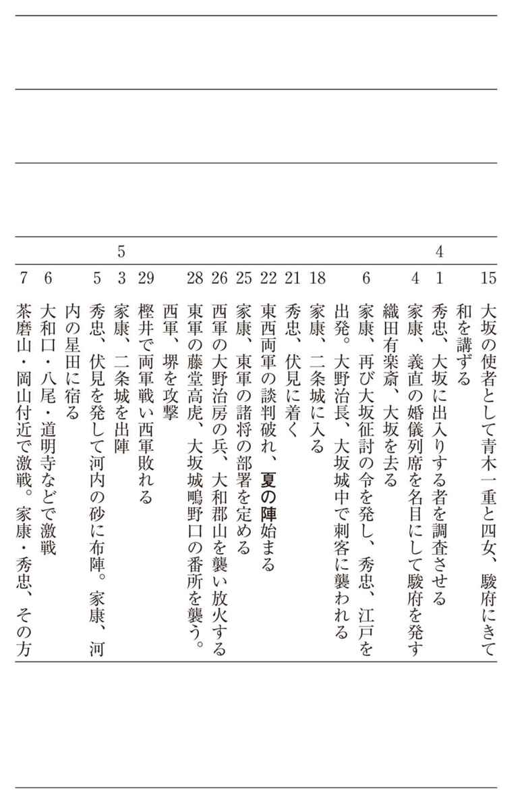

| 日本の戦史 大坂の役 (徳間文庫カレッジ) | |
| Unknown | |
| (2016) | |
日本の戦史
大坂の役
旧参謀本部／編纂
この作品は縦書きでレイアウトされています。
また、ご覧になる機種により、表示の差異が認められることがあります。
一部の漢字が簡略字で表示されていることがあります。
概 説 桑田忠親
大坂の役
■世嗣豊臣秀頼
太閤秀吉は、生涯、実子に恵まれなかった。正妻の北政所とのあいだには一人の子もない。十数人の側室中、秀吉の子を生んだのは、淀殿（二の丸殿）一人である。
秀吉が、すでに長浜城主だったころ、一男一女をもうけたという説もあるが、まだ、臆測の程度にとどまる。もちろん、その生母についても確証は得られない。秀吉の実子は、淀殿とのあいだにできた長男の鶴松と、それから、次男の秀頼の二人ということになる。
長男の鶴松は、天正十七年（一五八九）の五月二十七日、山城の国の淀城で生まれた。五十三にもなって、初めていとし児を得た秀吉は、夢かとばかりに驚喜したといわれるが、無理もない話である。
ところが、この鶴松は、わずか三歳で病死してしまった。同十九年の八月五日のことである。生母の淀殿も、もちろん悲嘆の涙にかきくれたに相違ないが、父親秀吉の落胆ぶりは、よその見る目にもあわれであった。
しかし、いちど死んだものは二度と還らないと悟ると、豊臣家の跡目相続人としては、多くの養子の中から、一番年長の秀次（秀吉の姉の長男）をえらび、同年の十二月二十八日、関白職を秀次にゆずり、秀吉は太閤と号して伏見城に隠居しようと考えていた。同時に、文禄元年（一五九二）朝鮮の役を起こし、肥前の国名護屋の大本営にいて、渡鮮将兵の総指揮にあたっていたが、あけて二年の八月三日、大坂城に留守居していた側室の淀殿が、また、男児を安産した。これが次男の秀頼（おひろい）である。
淀殿が再び懐妊したという報告に接したとき、太閤秀吉は鶴松の場合を顧み、きわめて冷静で、かつ慎重な態度を持し、──又、二の丸どの、みもちのよし、うけ給はり候。めでたく候──と、祝辞を述べる反面に、──われわれは、子ほしく候はず候まゝ、其の心へ候べく候。大かう子は、つるまつにて候つるが、よそへこし候まゝ、にのまる殿ばかりの子にてよく候はんや──などと書き送り、すねたところさえ見せている。これは、同年の五月二十二日付で正室北政所に出した自筆の消息の一節である。
しかし、八月九日付の消息となると、──さだめて、まつうら、子をひろい候て、はやばやと、申しこし候間、すなはち、子の名は、ひろいごと、申すべく候。したじたまで、おの字もつけ候まじく候。ひろい、ひろいと、申すべく候──と、書き、鶴松のことをすてと名づけたのと同様に、赤児をいちど捨てさせ、近臣の松浦重政に命じ、改めてそれを拾わせ、ひろいと名づけたのである。
五十七歳で、ようやく、再び、わが子を得た秀吉としては、念には念を入れたかったに相違あるまい。
ひろいは、次第に成長した。成長して可愛くなるにつれて、いつしか自から禁をやぶり、おひろいと呼ぶようになったらしく、ひろいが二歳の頃、その近況を見舞い、──土産に唐のめんこを探しもとめて与えよう──と、書いた七日付の自筆消息の宛名には、──御ひろいさま──と、したため、その下にととと、署名している。
文禄三年の十二月、おひろいは、伏見に移った。移徙の儀式が盛大に行なわれた。伏見城の普請がすっかりできあがったからだが、秀吉は、やはり、この愛児を自分の膝もとに置いて、昼夜いつくしみたかったものとみえ、あけて文禄四年の正月二日付で、おひろいに与えた消息には、──返す〴〵、御ゆかしく候まゝ、やがて〳〵参り候て、口を吸い申すべく候。又、われ〳〵留守に、人に口を御すわせ候はんと、思ひまいらせ候──と、ある。その可愛い口を、人に接吻させるのを惜しんだ、いじらしい様子がうかがわれる。
鶴松をうしなって一時は不幸のどん底に落ちこんだ秀吉も、再び、幸福の絶頂に達することができた。こうなると、彼の眼中には、おひろい以外の何ものもなかったのである。
この年の三月二日、朝廷から勅使をくだされ、伏見移徙の祝儀として、おひろいに、剣と馬とを賜わった。そこで、秀吉はそれを好機として、おひろいに位を授けられんことを奏請している。と、同時に、甥（姉の子）の秀次などに関白職をゆずり、豊臣家二世の主と定めたことを、早計だったと、後悔するようになった。これは、仙台伊達家の家老伊達成実の日記に書かれている確かな事実である。
また、公家の山科言経の日記を見ると、太閤秀吉が、日本全国を五分し、その五分の四を関白秀次に、五分の一をおひろいに与えようという意見を出し、それを、秀次に納得させようとした、とのことである。
また、秀次の右筆駒井重勝の日記によると、将来、秀次の娘をおひろいの妻とすることを、秀次に約束させた、とある。
これらのことは、おひろいを秀次の養嗣とし、成長の暁には、おひろいを豊臣家三世となし、この三世に関白職をゆずらせるための予備工作であった、と思われる。
そうして、この工作を快く思わなかった関白秀次は、自暴自棄に陥った結果、乱行をかさね、遂に謀叛の嫌疑までこうむり、文禄四年の七月十五日、紀州高野山で切腹を命ぜられ、二十八歳で果てたのであった。
秀次の処罰にあたって、秀吉は、──天下の置目をただすため──と、称したが、愛児おひろいに天下をゆずりたいための陰謀と見なすものもあった。
そこで、人心の動揺を恐れた秀吉は、加賀大納言前田利家をもって、おひろいの後見人と定め、また、諸大名におひろいにたいして忠誠を尽すことを約束させるために、文禄四年七月十二日付で、血判の誓約書を提出させている。
あけて、慶長元年（一五九六）の五月十三日、秀吉に伴われて上洛し、宮中に参内したおひろいは、従五位下に叙せられ、その十七日に、初めて秀頼と名のっている。
慶長二年の四月、秀頼は改めて宮中に参内し、五歳で元服式を行ない、従四位下左近衛権少将に叙任され、ついで、左近衛中将に進み、翌三年の四月二十日には、権中納言に任官した。秀吉が亡くなったのは、同年の八月十八日であって、秀頼は、まだ、六歳の幼児であった。
このいたいけなわが子を、豊臣二世の主としてこの世にのこし、あの世に旅だつ太閤秀吉の心中の悩みは、いかばかりか、推察するに余りがある。それは、八月五日付で徳川家康以下五大老に与えた遺言状に──秀頼事、成りたち候やうに、此の書付の衆として、たのみ申し候。なに事も、此のほかには、おもひのこす事なく候──と、ある通りであった。
秀吉の死後、慶長四年の正月十日、側室淀殿は、秀吉の遺言通り秀頼を伴い、京都の新第を出て大坂城西の丸に入った。秀頼は、幼弱ながら豊臣家二世の主として大坂城に君臨し、天下の政治は、秀吉が晩年に定めた五大老と五奉行とで代行していた。ところが、五大老の筆頭で、かつ、秀吉の在世中から隠然たる実力を養っていた徳川家康が、秀吉の定めた掟にそむき、諸大名と結んで権勢をほしいままにしたので、それを快く思わない五奉行の一人の石田三成が、家康追討の兵をあげた。
慶長五年の九月十五日、三成と家康の両軍は、美濃の関ヶ原で遭遇し、おおいに戦った末、三成は惨敗し、京都七条河原で斬られた。
しかし、秀頼は、この天下分け目の関ヶ原合戦に関係しなかった。それは、三成も秀頼をひき合いに出すことを避けたし、家康もまた、太閤の遺児秀頼に謀叛を企てないことを条件として、太閤恩顧の諸大名を味方につのったからである。
■家康と秀頼
さて、一方、徳川家康の立場から、関ヶ原決戦以後の天下の形勢を見ると、関ヶ原戦勝の結果、徳川氏の政権が樹立されたけれど、豊臣家は、二世秀頼を主君とし、依然として大坂に健在していた。
石田三成は、打倒家康の兵を挙げるに際し、その責任を一人でしょって立ち、累を秀頼に及ぼすことを避けた。その点、亡君信長の三男である神戸信孝を巻き添えにした賤ヶ嶽合戦における柴田勝家よりも、立派だった。家康もまた、三成と決戦を交えるにあたり、秀頼にたいして異心のないことを、武人派の大名たちに誓っている。この戦いは、秀頼に手向かうのではなくて、三成を討つためだ、といったから、太閤秀吉から恩顧をうけた大名たちも、家康に味方したのである。
しかし、それだけに、家康は、豊臣家二世の主秀頼にたいする処置に困ってしまったのである。
関ヶ原の一戦で、徳川氏の覇権が確立し、家康は、実力を行使して、三成を京都七条河原で斬り、それから、西軍に属した諸将の領地を削り、これを東軍に味方した諸将士に頒与したけれども、秀頼との主従関係は、これを急に断つことが不可能であった。いや、むしろ、急に断つことを憚った。これは、逆臣の汚名を着せられるのを嫌ったからだ。それに、関ヶ原の決戦に際して、秀頼にたいして異心のないことを、武人派の諸将たちに誓った手前もある。
そこで、家康は、小牧の役の直後、関白に任官することによって、北畠信雄（信長の次男）との主従関係の逆転をはかった秀吉の故智にならい、家康自身の官位を昇進させる方策によって、豊臣秀頼との主従関係を転換させようと、考えたのである。
関ヶ原の役から二年半ほどたった慶長八年（一六〇三）の二月、家康は、朝廷に奏請して、右大臣・征夷大将軍に任ぜられた。同時に、また、源頼朝の先例にならい、江戸に幕府を開いた。これによって、彼は、天下の大小名を統帥する武門の棟梁となったのである。朝廷がこれを裁許したのは、日本国の内乱を平定した徳川家康の実力を承認したからだ。
そのために、豊臣秀頼は、徳川将軍の統帥下にある関西の一大名の地位に転落し、名義上、主従の関係が逆転してしまったのである。その証拠として、それまで、家康は、自ら大坂城に参覲して、秀頼に年賀の辞をのべていたのが、それからというものは、秀頼の使者が年賀のために家康のいる伏見城にやってきても、家康は答礼の使いさえも出さなくなったのである。
こうなると、家康も、気持の上にかなり余裕ができたので、こんどは、大坂がたの懐柔策に取りかかり、朝廷に奏請して、秀頼を内大臣に任ずると同時に、徳川秀忠の娘千姫を秀頼に嫁がせている。秀頼は十一歳、千姫は七歳にすぎなかった。
一方、大坂がたでは、関ヶ原決戦以後の、家康のこのような僭越な行為を、陰で憤慨していたが、戦勝の実績を目の前に見せつけられているので、どうにも手が出せない。手どころか、口も出せない。また、秀頼と千姫との婚姻は、太閤秀吉の遺言でもあったから、秀頼の生母淀殿も、それで満足するほかなかったのである。
家康としては、このような懐柔策によって、大坂がたの不安を除き、次第にその反撥心を弱め、無力な一大名たることに甘んじさせるのが、ねらいであった。なにも、愛孫の千姫を犠牲にしてまでも、豊臣家を滅ぼし、太閤の遺孤殺害のそしりをうける必要もなかった。天下の大勢は、すでにきまっていたからである。
だから、このまま無事にいけば、世は徳川の時代と変わっていっても、秀頼は、関西の一大名として過ごし、豊臣の子孫は、毛利や島津と同様に、末ながく継続した筈であった。
ところが、家康に、このような考えを捨てさせ、遂に大坂討滅の決意を固めさせたのは、慶長十年（一六〇五）、徳川秀忠が征夷大将軍に任ぜられた際のことであった。
■家康の大坂討滅決意
家康が征夷大将軍の宿望を遂げてのち、わずかに二年で将軍職を嗣子の秀忠にゆずり、大御所と称して、駿府（静岡）に隠居したのは、かれの、政界からの隠退を意味するのではなくて、これによって将軍の権威を高め、徳川政権の永続性を天下に誇示するとともに、豊臣家の政権回復をまったく断念させるのが目的だった。
だから、これに先だって、豊臣秀頼を右大臣に昇進させて、恩を着せ、徳川秀忠が二代将軍に任官すると同時に、秀頼にたいして、自ら上洛して賀詞を徳川将軍に呈することを、促したのである。秀頼がこれに応じて上洛しさえすれば、彼が徳川幕下の一大名にすぎないことを、正式に承認することになるからであった。
大御所徳川家康は、駿府の城にあって、ひたすら、秀頼の上洛を期待していたのである。
ところが、その期待は、見ごとに裏ぎられた。当年十三歳の幼主豊臣秀頼の背後には、母公の淀殿が控えていたからである。
淀殿は、断乎として、わが子秀頼の上洛をこばみ、「強いてこれを求めれば、秀頼を手にかけて自害する」とまで、放言したということである。もっとも、これは徳川がたの御用学者が後に書いた「当代記」という本に記してあることだから、どこまで事実であるかは判明しない。しかし、家康の依頼によって、秀頼上洛の催促のための使者にたったのが、太閤秀吉の後室高台院（北政所）だったというから、淀殿が感情的になったのも当然と、思われなくはない。
淀殿は、少なくとも、秀吉の生存中は、側室の身分として、秀吉の正室である北政所（杉原氏）には、頭があがらなかった。
それに、北政所も、正室らしく立派に振舞っていたので、淀殿としても、ことさら、これを敵視する必要もなかった。
もっとも、北政所と淀殿が、犬猿の間柄にあったということは、とかく、歴史ファンの話題となっている。
北政所は、秀吉が織田信長の小者頭で木下藤吉郎と呼ばれていた時代から、秀吉と苦労をともにした、いわゆる糟糠の妻であり、夫の秀吉が、信長の死後、天下を平定し関白に任官されると同時に、北政所の称号を勅賜され、程なく、従一位に叙せられ、豊臣吉子と改めた。これにたいして、淀殿は、秀吉の主君織田信長の姪（妹お市の方の娘）にあたり、近江北三郡の大名浅井長政の息女である。戦国の世の習いで、母お市の方の嫁ぎ先が二度とも滅亡したために、仇敵秀吉の側室にさせられたが、元来、秀吉の主筋にあたる女性である。織田家の足軽頭浅野長勝の養女である北政所とは、素姓が、まるで違っている。しかし、正妻は正妻、愛妾は愛妾であって、秀吉の閨房には、厳然たる秩序があった。淀殿が、内心で、たとえ、なんと思っていようが、表面上、側室は正室に頭があがらない。たとえ、居館がへだたっていたとて、一挙一動、北政所の指図に従って行動せざるを得なかった。秀吉も、正妻としての北政所の立場を考えて、淀殿を、そのように扱ってきた。これは、愛情の問題とはまた別である。豊臣家の大奥の秩序であった。そこに、側室としての淀殿の劣等感がないでもなかったと、推測される。
「絵本太閤記」「慶長小説」「閨閤伝」などという俗書によると、北政所は才色兼備の才媛であり、淀殿は容姿双絶で、しかも、嬌態綽約として、これに抜きんでる者がいなかった。北政所は、三条殿・加賀殿などの側室を従え、秀吉の生母大政所の指図をうけていた。また、淀殿は、同じ近江の名族の出身である側室京極殿と親しくし、浅井明政のむすめ饗庭の局（淀殿の乳母）、渡辺内蔵介の母正栄尼、大野道犬の妻大蔵卿の局（大野治長の母）などを従えていた。そのため、秀吉の閨門は、北政所派と淀殿派の両派に分かれ、その暗闘が、はしなくも、茶の湯の会と花つみ供養の際に爆発したというのである。これは、また、加賀の白山の麓に咲くという黒百合の花、千利休の娘お吟のこととも関連して、なかなか興味ぶかいエピソードとなり、大衆小説やドラマの種本とされている。しかし、史実ではない。
北政所と淀殿とのあいだには、もちろん、暗闘があったであろうが、秀吉の在世中は、それが、露骨なかたちでは現われなかった。北政所は、実子がないので、秀吉と淀殿との間に生まれた秀頼のことを可愛がったであろうし、淀殿も、北政所のことを、秀頼に、「まんかかさま」と、呼ばせていた。だから、淀殿は、醍醐の花見の宴の席上、同じ側室の京極殿と盃争いなどはしても、まんかかさまとは、争うこともなかったであろう。むしろ、盃争いも、北政所の仲裁によって、鎮まったのである。このことは、前田利家の御伽衆村井重頼の覚書に記してあるから、確かな事実と思われる。
ただ、太閤秀吉が死ぬというと、両者の関係は逆転した。淀殿が、秀吉の遺命に従って、豊臣二世の主秀頼をつれて大坂城に移ると、北政所は、入れ代わりに大坂城を出て、京都の三本木に退いた。淀殿は、そのような北政所にたいして、むしろ、申しわけないと、思ったくらいであろう。北政所は、髪を剃って、高台院と号し、京都の東山に高台寺を建て、そこに隠棲し、ひたすら亡夫秀吉の菩提をとむらうことになった。その行為は、太閤の後室として、実に見あげたものであると、淀殿も思っていたに相違ない。
ところが、その高台院が、こんど、徳川家康の使者として、秀頼の上洛を促すために、大坂城にやってきたのであった。敗北したと思った相手が、いつのまにか立ちあがり、復讐の牙を鳴らして、彼女の眼前に出現したのであった。この際、太閤の遺児だとか、豊臣二世の当主だとかいったような面目を捨てて、徳川将軍秀忠に臣従したほうが、淀殿のためにもなるといいたげな顔を、高台院はしていた。
事実は、そのとおりであった。淀殿が、家康や高台院のいうことをきき、このとき、秀頼を上洛させ、徳川将軍に臣従させていたならば、家康は、あるいは、大坂討滅に踏みきれなかったかもしれないのである。
しかし、淀殿は、家康の命令はともかく、このとき、かつての太閤夫人であった高台院が、家康の武威を笠に着て、彼女にたいして、秀頼の上洛を迫ったことによって、極度に激昂し、これを拒絶したのであった。彼女が、北政所に敵意らしいものを発見したのは、おそらくこのときだったかもしれない。
淀殿の拒絶にあった家康は、心中に苦笑を漏らしたことであろう。と、同時に、彼は、重大な決意をせねばならなくなってきた。
この鼻っ柱のつよい女がついているからには、豊臣秀頼もほうっておけない、大坂をそのままにしておけないと、考えたことだろう。
将軍職を秀忠にゆずって大御所と称した家康は、すでに、六十四歳に達していた。もはや、老いさきも短いのである。今のうちに、万事をかたづけて、後顧の憂いをなくするにしかずと、腹をきめざるをえなかったであろう。
■財力削減の謀略
さて、大坂討滅の決意をかためた徳川家康は、まず、豊臣家の財力を削減するためさまざまな謀略を行なった。
「慶長中外伝」によると、太閤秀吉が世嗣秀頼にゆずった大坂城内の遺産金額の総計は、金子九万枚・銀子十六万枚・金銭五貫文・銀銭二百貫文としているが、このほかに、大判千枚吹きや、二千枚吹きの金分銅が沢山あった。金銀だけではない。一色何千貫文もするような宝器・什物のほかに、衣類・武具・弾薬・兵糧、その他の物資が、九重の天守閣の各階層に、山と貯えてある。そのことは、（天正十四年）卯月六日付の大友宗滴（宗麟）の書状によっても明らかだ。黄金の茶室や茶器だけでも、値段にしたら大変なものである。ともかく、莫大な遺産があった。
このような金めの物が、打倒徳川のための軍資金となる恐れは、十分にあった。関ヶ原残党の浪人者を大坂に集めるにも、これだけあれば、わけはない。家康の心配は、そこにあった。そこで、万が一の危険を防止するには、これを、大坂がたの手によって、消費させるに限る。口実は、なんとでもつく。
老獪な大御所家康は、最も巧妙な謀略を用いたのである。それは、豊臣の家運挽回の祈願や、亡族の供養にかこつけて、神社・仏閣の修造を秀頼に勧告することであった。もっとも、それまでにも、そのような策略を講じなくもなかったが、大坂討滅を決意した慶長十年（一六〇五）以後はいよいよ拍車をかけ、近畿地方の大社寺でその余慶をこうむらぬものは殆どなかったと、いってよいくらいであった。
例えば、伊勢遷宮に備えて、神宮に宇治橋を架けさせたことも、その一つであった。そのとき、淀殿が、伊勢の慶光院の周養上人にあたえた自筆の消息と称するものが伝わっているが、それによると、彼女も、片桐且元などとともに、うかうかと家康の策略にのせられ、宇治橋架設のために、巨額の費用を勧進していたのである。慶光院は、伊勢神宮に所属する尼寺であって、代々、遷宮の勧縁に従事してきた。代々の尼上人は、公武祈禱のことにもたずさわって、その名を知られていた。周養上人は、慶光院第四世の住職であり、淀殿と親しかった。伊勢の宇治橋の工事が完成したのは、慶長十一年の四月のことで、同月二十七日に清祓を修し、二十八日から十日間にわたって、一千百余人の僧侶を集めて、読経を行なわせ、橋供養をしている。
このようなわけで、慶長十二年には北野天満宮、十三年には鞍馬寺、十四年には出雲大社、十八年には金戒光明寺の御影堂、河内の観心寺の金堂などの修築を行なったが、同十七年には、京都方広寺の大仏殿が再建されている。
方広寺の大仏殿は、これよりさき、天正十六年（一五八八）に、豊臣秀吉によって造営されたが、慶長元年（一五九六）の伏見の大地震で崩壊した。それをば、家康の勧めで、秀頼が再興に取りかかったのが、同七年のことだが、その後、失火によって炎上したのを、同十三年から再び工事に着手し、資材を全国からあつめ、同十五年から二年間かかって、完成したのである。その経費の莫大だったことは、「当代記」にも、──太閤お貯えの金銀も、この時に払底した──と、記しているほどであった。
しかも、家康は、諸大名に令して、秀頼の出費を助力することを禁止している。助力をゆるしたのでは、大坂財政攪乱の目的が達せられないからだ。例えば、熱田神宮造営の際に、肥後の加藤清正が助力を申し出たところが、家康は、──勧進に及ばず──といって、許可しなかった。
■二条城の会見
慶長十六年（一六一一）の三月、家康は京都の二条城で、豊臣秀頼と会見を行なった。家康はすでに七十歳、秀頼も十九歳になっていた。
会見の目的については、その機会に秀頼を殺害しようとたくらんだとか、また、これに応じない場合に大坂討滅の口実をつくるためであったとか、さまざまにいわれているけれども、それは、笑うべき幼稚な俗説である。実際の目的は、これによって、豊臣対徳川の主従関係が逆転したことを天下に誇示し、諸大名を徳川幕府の統制下に心服させるためであった。
淀殿は、このときも、秀頼の身の上を気づかい、上洛を、一人で反対したが、周囲の意見が、彼女のわがままをゆるさなかった。第一、このときは、秀頼自身が上洛を買って出てさえいる。十九歳ともなると、母公の権力ばかりでは、どうにもできない一面があったと見える。それに、このときの相手は、前回と違い、大御所家康であった。家康が、直接、愛孫千姫の婿である秀頼に会見しようというのに、これを拒否することは、さすがにできなかったらしい。
しかし、この二条城の会見で、家康の目的は、一応達せられたものの、その反面に、秀頼が家康の命令に従ったためかえって、大坂討滅の口実を見うしなってしまった。痛しかゆしであった。
なお、この両者の会見に、秀頼の後見として、加藤清正が二条城に供奉したことは、豊臣家にたいする清正の忠誠を証明する話として、人口に膾炙している。
秀頼の上洛について、一番心配したのが、清正だったといわれる。
清正は、ただちに、朋友の福島正則としめしあわせ、大坂城に馳せ参じ、秀頼と淀殿の説得につとめた。豊臣がたでは、二条城出仕を不見識と称して、容易に実行に移そうとしない。これには、清正も正則も手を焼いた。そこで、清正は、淀殿に向かい、──二条城において、万が一のことがあれば、敵は幾万あろうとも、この清正一人で蹴散らし申し、秀頼公を守護いたそうぞ──と、いって、鉄石の如き誠心を披瀝した。
その誠心に動かされて、淀殿もついに秀頼の上洛を許したといわれる。
清正は、正則と協議した結果、正則が万が一の用心に所撈と称して大坂城に留守居し、清正は、上洛する秀頼の輿の側に菖蒲革のたっつけ袴をはき、大きな青竹の杖をつき、徒歩で供奉した。それから、家臣五百人に小者のいでたちをさせ、京都と伏見の町々に潜伏させておいた。二条城では、清正も丸腰にならねばならないので、懐中に短刀を秘めていたという。
家康と秀頼との会見は、無事にすんだ。再び秀頼に供奉して大坂にもどる途中、清正は、淀川をくだる船の中で、懐中から短刀を取り出し、それを見つめながら、「これで、太閤殿下への御恩は半ばお返ししたも同然である」と、つぶやいたといわれる。
しかし、これらの行動を見ると、清正は、内心、大坂がたの将来を憂慮しながらも、外面では、家康と同調していたのである。あたかも、この年（慶長十六年）の六月二十四日、五十歳で病死したために、大坂がたによって、その死を惜しまれ、有名な毒饅頭説まで作りあげられたが、清正は、元来、北政所と親しく、淀殿、石田三成、小西行長などに反感を持っていた男だから、かりに病死しなかったとしても、豊臣家のために、それほど役立ったとは思われない。清正も、片桐且元と同様に、かなり脚色された忠臣だったのである。
■方広寺鐘銘事件
慶長十九年（一六一四）、大御所徳川家康は、七十三の歳を迎えた。老いて益々元気ではあるが、いつ、どうならぬとも予測できぬ年齢である。せめて、足腰の達者なうちに、一日もはやく素志を貫徹せねばならぬ。彼は、老耄のせいもあって、いささかあせっていた。なんとかして、大坂討滅の口実をつかまねば困る。
そのうちに、豊臣秀頼の勧進にかかる方広寺の大仏殿が、いよいよ落成した。伏見の大地震でつぶれた大仏も、新しくできあがった。八月には堂供養と開眼供養とが、いっしょに挙行されることにきまった。造営奉行を命ぜられた片桐且元は、豊臣譜代の家臣でありながら、いちいち、家康の指図をうけて、その準備を進めている。家康は、開眼供養を八月三日、堂供養を十八日に行なうようにと、命じた。
ところが、七月二十九日のこと、突然、供養を延期し、梵鐘の銘と棟札の写しを差し出すようにとの厳命が、江戸から通達されたのである。棟札が異式だし、鐘銘にも不審な点があるというのが、理由だった。
棟札の異式とは、大工の棟梁中井主水正の名が書いてないことだが、これは、筆者である照高院興意法親王の意見によるものであって、日本も唐国も、大伽藍の棟札には大工の名を記さないのを、通例としたからであった。
鐘銘の不審な点とは、──君臣豊楽、国家安康──の二句であって豊臣を楽しませる一方に、安の字を中に入れて、家康の二字をひき裂いている。これは、──ことさら、家康の諱名を記し、家康を咒詛するものだ──と、いうのである。
この二つの抗議は、徳川の御用役人となっていた南禅寺金地院の住職以心崇伝が摘発した結果であった。
鐘銘事件は、重大な結果をもたらした。
銘の作者は、博学能文のほまれ高い清韓和尚であった。
家康は、この問題をば、得たりかしこしと、取りあげ、さっそくその当否を、五山の禅僧たちに糺している。
日頃から清韓の高名を嫉視していた僧侶たちは、異口同音に、清韓のことを、「五山不案内の仁」といって罵った。林羅山のごときは、さらに、──右僕射源朝臣──という鐘銘の句を、──源朝臣（家康）を射る──と、解釈し、また、──君臣豊楽、子孫殷昌──という句も、──豊臣を君として子孫の殷昌を楽しむ──と訓む下心であると、こじつけ、まことに醜い御用学者ぶりを発揮している。
いつの世でも、このような御用学者はいるものだ。崇伝や羅山は徳川家康という権力者にたいして醜い奉仕をしたが、近代社会になると、奉仕の対象も進歩し、ある特定の団体・グループ、果ては、大衆ということにもなってくる。しかし、学者というものは、本質的に、弱きを助け強きをくじく存在でなければなるまい。崇伝や羅山は、その反対に、強きを助け弱きをくじいたのである。
それはともかく、事態の悪化におどろいた片桐且元は、単身、駿府にくだって、直接、家康に弁解しようとしたが、家康は、面会を許さないで、本多正純と以心崇伝に命じ、且元を詰問させている。──鐘銘と棟札の一件は、実に不都合だし、大坂で浪人どもを召抱えているが、あれは、何事か──と、いうのであった。
浪人の招集については、果たして、正純と崇伝の指摘どおりであったか。「細川家記」には、──前年（慶長十八年）の二月から、大坂がたは、挙兵を企てていた──とさえ記している。それは、はなはだしい誇張であるにしても、その事実が、慶長十九年八月当時、決して、なかったとはいえまい。が、それにしても、大したことはなかったと思われる。その証拠として、徳川がたでは、すでに、この年の三月から五月にかけて、イギリスから鉄砲や鉛を買い入れているのに比べて、大坂がたでは、城内に鉄砲などを売り込もうとしたイギリスの商人を拒絶している。
戦争準備につとめたのは、むしろ、徳川のほうだったのである。
彼らの詰問にたいして、ろくな申しひらきもできない片桐且元は、豊臣家の柱石どころか、腰抜け武士というべきだ。
さて、鐘銘事件を耳にした淀殿は、さすがに動顚したとみえて、さっそく、大蔵卿の局を駿府につかわし、秀頼に異心のないことを告げさせている。
ところが、家康は、片桐且元とは会わないくせに、大蔵卿の局には面接をゆるし、しかも、鐘銘問題など、おくびにも出さずに、──大坂に関することは、且元に残らず命じたから、且元から直接聞いてほしい。しかし、秀頼殿のことは、決して悪く思っていないから、すべてを聞き流しにしている──と、言葉やさしく、いい聞かせたのである。
その一方で、また、駿府に滞在していた片桐且元にたいしては、──先年、内命をくだして、秀頼に加増を与えたことを、疎略に思っては、不義と見られようぞ。大坂では、関東を調伏するとの噂があるが、けしからぬことだ──と、威嚇させている。
そこで、且元は、「秀頼公に誓詞を出させましょうぞ」と、いったが、本多正純は、「誓詞ぐらいではすむまい」と、答えた。
且元は、懊悩した。そうして、この難題からのがれるためには、大坂を国替えにして貰うか、人質として秀頼公を江戸に詰めさせるか、母公の淀殿を江戸詰めにするか、この三つの中の一つを選ぶほかあるまいと、決心した。小心者の且元は、正純の一喝に動顚して、なすところを知らず、窮余の一策として、このような、大坂がたにとって最も不利な、屈辱的なことを考え出したのである。
幸か不幸か、且元は大坂へ帰る途中で、駿府を暇乞いしてきた大蔵卿の局と、ばったり出合った。
局は、家康から、「くわしいことは且元に告げたから、聞いてほしい」と、いわれた手前、委細を且元に尋ねた。すると、よせばよいのに、且元は、自分の胸中で窮余の一策として考え出した、かの、三つに一つの迷案をば、しかも、家康の内意と偽って、報告したのであった。
家康のやさしい応対ぶりに、すっかり気をよくしていた局は、びっくり仰天した、そうして、且元の心中を疑った。とんでもない噓つきだ、けしからぬ裏切者だ。彼女は、且元に先んじて大坂にもどり、このことを秀頼や淀殿に申し伝え、且元のことを、いろいろと、讒訴したのであった。これは、むしろ自然のなりゆきといってよかった。
これを聞いた淀殿は、かんかんになって、怒った。「太閤様の築かれた、この大坂城を明け渡せとは何事ぞ。秀頼や妾を江戸に人質とは、何事ぞ。大蔵卿の局のいう通りに、大御所（家康）が、そんなことをいう筈がない。おのれ、且元の裏切者めが」と、柳眉を逆だてた。大野治長も、もちろん、彼女らに同調した。そこで、さっそく、且元を城中に入れて、刺し殺そうと計画したとさえ、いわれている。
神経の鋭敏な片桐且元は、はやくも、この形勢を見てとり、やまいと称して登城せずに、兵を集めてその屋敷を固めさせた。そこで、さすがに当惑した淀殿は、自筆の消息と誓書を且元におくり、かれの登城を求めた。そのときの誓書は、次のようなものであった。
起請文前書のこと
一、京・大坂で、さまざまな噂が飛んでいるとのことですが、われわれ親子（淀殿と秀頼）ともに、そなた（且元）のことを、おろそかに思ってはおりませぬ。どのようなことを人が言っていても、聞きいれないでくだされ。こちらも耳に入れませぬ。
一、秀頼も、わらわも、そなたの長年のお世話を、どうして忘れましょうぞ。そなたよりほかに、頼みとする方もありませぬ故、いよ〳〵お頼みするわけです。親子ともに、心中に、ゆめ〳〵、いささかも、おろそかに思っておりませぬ。
一、そなたさえ御異心がなくば、こちらとしましては、ゆめ、いささかも、約束に違犯しませぬぞ。
この三ケ条に違犯したならば、上は梵天帝釈・四大天王、下は地神・八幡・愛宕・湯屋権現・祇園・賀茂・春日、殊には氏神、総じて、大小の神祇の御罰をこうむること、疑いがありませぬ。
慶長十九年九月二十六日
ちや〳〵
いちの正殿
且元にたいする母子の信頼感を披瀝し、誓詞をしたためて、且元の大坂登城を促したのである。
この誓書の文面から窺うと、淀殿も秀頼も、ずいぶん、片桐且元を頼みにしていたらしく思われる。
且元は、賤ヶ嶽七本槍の一人であって、太閤子飼の直臣である。七本槍の武将の殆ど全体が徳川がたに味方したにも拘らず、且元だけは、秀頼の輔臣として、どこまでも、豊臣がたから離脱せずに、忠節を尽してきた。そうして、こんどの方広寺鐘銘事件でも、豊臣と徳川との間に立って、ずいぶん苦労したに相違ない。淀殿が、且元のことを頼もしく思うのも、当然であろう。
だから、大蔵卿の局が且元のことを讒訴したときも、一時は、烈火のように激怒したものの、内心では、且元の苦衷を察し、且元さえ登城してくれれば、じっくりと語りあって、善後策を講じたいと思ったことであろう。勝気で、名誉心のつよい性格であったが、淀殿も、やはり女である。父母を討ち滅ぼした敵の大将豊臣秀吉にさえ肌身をゆるさねばならぬ次第とならば、その屈辱にも堪えるほどの、かよわい女である。女の宿命が、到底、避けられないことを彼女はよく知り抜いていたのであろう。
しかし、周囲の情勢は、もはや、いかんともなしがたい。大蔵卿の局、大野治長以下、城中のすべての者が、且元にたいして、怒り心頭に発している。そうした雰囲気の中で、淀殿も怒り狂った。秀頼も、母や大野治長の怒りにつられて、怒っていた。
淀殿は、且元を、思う存分に、面詰したかった。
しかし、且元は、遂に、登城しなかった。大坂がたの将来を心配しながら、自分の身もまた、可愛かった。死を怖れたのである。
秀頼は、ついに、片桐且元の禄をうばい、且元大坂へ不忠の顚末を、駿府の大御所家康と江戸の将軍徳川秀忠に報告した。これは、家康がつきつけた条件を、間接に拒否したことであり、事実上の宣戦布告であったのである。
十月一日、片桐且元は大坂を脱出して、摂津の国茨木の居城に帰還している。
豊臣秀頼の通告を手にして、ほくそ笑んだのは、大御所家康であった。
鐘銘事件は、大坂がたを刺激するための、単なる口実にすぎなかった。その証拠として大問題になった方広寺の梵鐘も銘も、そのまま、今日に現存している。べつに、削除されていない。それに、銘文は、元和・寛永年中に、古活字版として、刊行されてさえいる。
■大坂冬の陣
豊臣秀頼の通告をうけて、家康は喜んだ。敵が思う壺にはまったからだ。
そのころ、加減がわるくて、床に就いていた家康は、そのために病気もけろりと全快し、非常に若やいだと、本多正純が藤堂高虎に報告した書状の中に記しているから、家康も根っからの戦国武将であったことがわかる。人質として大坂につかわした孫の千姫のことなど、二の次だったとみえる。
いよいよ、東西の手切れとなった。
大坂がたは、町中の米穀を城内に収め、近国からも糧米を徴すると同時に、太閤恩顧の大名たちに来援を乞い、また、諸国の浪人を招き入れ、軍備をととのえることに狂奔した。鉄砲や弾薬なども、堺から買い入れている。
大名への依頼は、秀頼、淀殿、大野治長、織田有楽（信長の弟）などが、それぞれ、手分けして、使者をおくり、大坂救援のことを懇願した。使札を貰った大名の数は、すこぶる多かったらしいが、だれ一人として、大坂の危急に馳せ参ずるものがなく、反対に、みな、誓書を徳川幕府に提出し、徳川に他意なきを示したというから、人間社会などは、いざというと、非情なもので、強きを助け弱きをくじく慣いであった。
秀吉の小姓から成りあがった福島正則などは、秀頼が千姫と婚礼したときには、西国の諸大名に誓書を出させるための斡旋もし、秀頼が疱瘡をわずらった際には、まっさきに大坂に馳せつけたけれども、こんどに限って、大坂にあった米八万石の借用を秀頼から求められると、自由処分にまかせはしたものの、救援の懇願にたいしては、──淀殿を江戸におくって平和をはかるに越したことはない──と、勧めたということが、「当代記」や「駿府記」に記されている。この男も、やはり、北政所がたであり、淀殿に反感を持っていたらしい。
また、毛利輝元は、家臣佐野道可を浪人の身分におとし、大坂に入城させている。やはり、家康の手前を憚ったのだ。しかし、「毛利家四代実録」によると、大坂城内へ米一万石・黄金五百枚を贈っている。
また、「東武実録」によると、加藤清正の子忠広の老臣加藤美作守は、大船二艘を造り、援兵を大坂におくろうとし、秀頼の乳母の子が肥後の国にいたのを大坂にのぼらせ、また、家臣横江甚四郎を大坂につかわし、東軍の敗報を聞くたびによろこんだというが、はかない反抗というほかあるまい。
それから、大坂の陣で、豊臣がたに内通し、処罰されたものも意外に少ない。これは、福島正則の旧臣で徳川旗本の使番をつとめていた青山清長と、茶人として名高い古田織部重然の二人である。
また、浪人の募集に従事したのは、大野治長と、織田有楽、津田左門などだが、関ヶ原このかた、久しく天下の変動を望んでいた浪人たちが、これを千載一遇の好機とし、数万余も集まったのである。おもなものは、真田幸村（信繁）、長曾我部盛親、毛利勝永、後藤基次（又兵衛）、塙直次（団右衛門）などであり、これと比べて、豊臣譜代の衆は、大野治長、同治房、同治胤、織田有楽、同頼長、青木一重、速水守久、真野頼包、木村重成、薄田兼相など、約三万人にすぎない。
これにたいして、徳川家康は、約二十万の大軍を指揮して、慶長十九年十月十一日に駿府を出発し、十一月十八日、江戸からやってきた将軍徳川秀忠と茶磨山（茶臼山）で合体している。
戦闘は、十一月十九日、大野治房らのたてこもる福島砦の攻略に始まった。大坂がたも全力をつくし、各所に東軍をむかえうって善戦した。
しかし、この大坂冬の陣において、家康が目的としたところは、この挙によって、天下の大名たちが、ことごとく徳川幕府の統制に心服し、それを乱してまで大坂がたを支援する者のないことを、大坂がたに思い知らせ、これを精神的に屈伏させようとするにあった。一挙に大坂城を覆滅させるのが目的ではない。相手を屈従させ、秀頼をどこかへ転封させるか、大坂城を破却させるか、どちらかにしたかった。しかし、大坂がたが、もし、その術策を見ぬき、これを拒否する場合には、徹底的に討滅してもよいという、二段構えの巧妙な戦略を用いたのである。
家康は、兵を損じないで、陣地を近づけ、大坂城に肉迫し、大筒を放って、人々を威嚇し、城内の戦意を失わせることにつとめた。秀頼や淀殿にたいしては、とくに、この戦法が効果的であるのを知っていた。
大坂がたの総大将豊臣秀頼は、すでに、二十二歳に達したが、実戦の経験は、こんどが初めてだ。女のほうにかけては、妻の千姫のほかに、愛妾も貯え、子供も二人産ませて、一人前だが、暖衣飽食、遊惰に流れ、いたずらに肥満して、物の役に立ちそうにもない。それに、十万の将兵を自在に指揮する能力に欠けている。太閤秀吉の忘れ形見だというのが、唯一の存在価値でしかない。しかも、この若大将を補佐する者といっては、前田利家、片桐且元なきあとは、大野治長兄弟とか、織田有楽とかいった、小姓・茶坊主の徒輩にすぎぬ。それに、母公淀殿の存在は、重荷にこそなれ、少しもプラスしない。真野頼包以下七手組の連中にとっても、足手まといになっている。また、譜代の衆と浪人者との間にも、戦術の統一を欠くことが多い。真田や後藤も、講談本で誇張されているほどの戦術家でも、器量人でもなかった。
■東西の講和
さて、徳川家康は、すべての敵情を見ぬいたうえで、大坂がたに和議を持ちかけた。
まず、本多正純から織田有楽を説得させ、大野治長の弟治純をして治長を説かせ、さらに、阿茶の局に命じ、淀殿の妹常高院を通じて、淀殿を説得させた。「譜牒余録」によれば、織田有楽は東軍のスパイと見なされているほどである。有楽はスパイではないが、第二の片桐且元と見なされなくもない。
有楽は直ちに本多正純の説得に応じ、和議の斡旋をひきうけたし、また、治長も、「いちど和睦して、時期を待つにしかず」と、いって、これに賛同している。
秀頼も、初めは、浪人者の諸将とともに、和議に反対だったが、母公の淀殿が、有楽や治長の意見に傾くに至っては、次第に軟化してきた。
家康は、頃あいをはかって、寄手の諸軍に命じ、毎夜、一斉に喊声をあげさせ、また、城中を大筒で砲撃させた。それが、淀殿や大蔵卿の局の心胆を寒からしめる効果があったのである。
「大坂冬陣記」によると、大坂がたでは「淀殿を江戸に人質とするから」と、いい、そのかわりに、新参浪人の扶持の加増を求めたけれど、家康が、これを拒絶したと、記している。「当代記」によれば「四国のうちで二国を賜わったならば大坂を退城してもいい」と、持ちかけたのにたいして、家康は、「安房と上総の両国ならばよかろう」と、答えたとある。
いろいろと、条件が合わず、難航をつづけたが、あくる元和元年（一六一五）の正月になって、大坂がたの領地も、秀頼、淀殿や浪人どもの身上ももとのままで、ただし、織田有楽と大野治長が人質を出し、また、家康の大坂出馬のしるしとして、大坂城の総構えの堀を埋めるということで、東西の和議が成りたち、家康と秀忠のしたためた誓書を秀頼が受取り、秀頼もまた、両御所（家康と秀忠）にたいして、──今後とも、謀叛や野心など起こさぬ──という誓書を呈出したのであった。
ただ、家康の誓書に──諸事、前々の如く相違なく──と、だけあって、城の堀を埋めることを、口約にとどめたのは、これを悪用するための巧妙な謀略であった。
しかし、それに気がついたものが、大坂がたには、一人もいなかった。ただ、平和の到来に酔いしれていたのであった。
■大坂夏の陣
和議は成立した。秀頼も淀殿も、ほっとひと息ついたに相違ない。家康は、秀忠を上方に残して、駿府に帰った。
ところが、徳川秀忠は、ただちに、安藤正次らを奉行として、大坂城の堀の破壊にあたらせ、三の丸の外堀だけでなく、二の丸の内堀をも埋めさせたのである。
これを知った大坂がたは、はなはだおどろき、徳川がたの奉行を責めたが、家康公の命令だと称して、聞きいれない。
大坂がたでは、ただちに使者を駿府につかわし、その違約を責めたが、家康は「奉行の誤りだ。元のとおり修理させる」と、答えたと、「寛文日記」に伝えている。
そのうちに、徳川がたの奉行は、大坂城二の丸の千貫櫓をはじめ、有楽（織田）屋敷、西の丸の修理（大野治長）屋敷まで引きくずし、その土材で内堀を埋めたので、二の丸までことごとく平地になり、本丸だけが残存するという悲惨な状態になってしまったと、「駿府記」に記している。
堀埋めの工事を終えた将軍秀忠は、正月十九日に大坂を去り、伏見を経て、江戸に帰ってしまったのである。
大坂城総構えの破壊が、城内の人々を痛憤させたことは、いうまでもない。
「山本日記」によると、当時、江戸にいた福島正則は、冬の陣の戦況には、それほど関心を示さなかったが、講和の成立を耳にして、「南無三、してやられた」と、思わず嘆声を発したというが、もっともなことである。講和締結は、大坂城内外の総堀を埋めるための家康の戦略にすぎなかったのである。
しかも家康は、大坂が裸城となったのを見すましてから、再び難題を吹っかけてきた。──秀頼を大和か伊勢に移すか、浪人どもを追放するか、二つに一つを選べ──というのである。
大坂がたからすれば、国替えの要求は、秀頼現状維持の誓約にもとるものだし、浪人衆追放の要求も、古参・新参者の身上を保証するといった誓約に反する。ともに、不当きわまる言いがかりであった。いまさら、大坂城を去ることも、浪人者を追放することも、到底できるものではない。ことに、総堀や三の丸・西の丸の一部も破壊された現在、頼みとするのは、浪人の将士だけであった。
同年の三月、秀頼は青木一重を、淀殿は常高院、二位の局、大蔵卿の局、正栄尼などを、それぞれ、駿府につかわし、国替えの宥免を乞わせたけれども、家康は、かえって、これを東西手切れの口実とし、ただちに諸大名に大坂に向かって出陣することを命じたのである。
大坂がたは、冬の陣で籠城策を取ったけれども、夏の陣では、城の総堀が破壊され、いわゆる裸城になっているから、城外に討って出るほか方法がない。ところが、野戦は家康の最も得意とするところであったから、大坂がたにとっては、まことに不利な戦闘となってしまった。しかし、城兵は冬の陣のときに劣らず、十万内外の数に達してはいた。
家康は、二十万の大軍を手分けして、再び大坂城に迫った。
大坂がたは敵の主力の出動に先だって、大和および和泉方面に出撃し、その一部隊を破って気勢をあげたが、いくさの大勢に影響をあたえるに至らなかった。
浪人組の大将後藤基次は、敵の後方攪乱を策し、片山・道明寺方面に討って出た。これに呼応して、木村重成などが、八尾・若江に出て、奮戦力闘したけれど、勝利を得ないで、ともに陣歿している。
最後のいくさは、岡山・天王寺付近の決戦であった。真田幸村（信繁）や毛利勝永などは、一度ならず、家康の本陣を攪乱させ、勇名を馳せたが、結局、敗死した。
西軍は大坂城内に退避し、東軍はこれを追撃して、三の丸に迫った。
■大坂落城
さて、大坂城内の桜門に陣取っていた城主豊臣秀頼は、さすがに奮起して、天王寺方面に討って出ようとした。しかし、その出城を待って、裏切者が城内に放火するかもしれない、という流言がひろがったため、秀頼は、結局、本丸に留まることになったといわれる。
果たして、間もなく、台所頭の大隅与右衛門という者が、東軍に呼応し、台所に火を放ったので、火焰が風にあおられて、天に沖し、これに力を得た東軍は、なだれをうって三の丸に突入した。
大野修理（治長）屋敷も放火され、ついで、二の丸も落ちた。
郡主馬、津川左近などが、秀頼の旗と馬印を護衛していたが、かれらは、それを千畳敷に立てて自害し、渡辺内蔵助、その母正栄尼、七手組の頭の堀田図書、野々村伊予守などもまた、次々と自刃している。
こうなっては、もう、手の施しようもない。秀頼は、母公の淀殿、妻の千姫とともに、天守閣にのぼり、自決しようとしたが、速水甲斐守の諫めに従ってそれを中止し、山里の丸に入って戦火を避けた。
大野治長は、窮余の一策として、千姫を無理に脱出させて、秀頼母子の助命を乞おうと考え、老臣木村権右衛門に命じて、千姫に随行させた。千姫は、ついで、東軍の武士坂崎出羽守に助けられ、城内からの脱出に成功している。ときに、十九歳であった。
五月八日、東軍に加わっていた片桐且元が、秀頼母子の所在を徳川秀忠に報告した、といわれるが、この且元の行為こそ、まさに、裏切りであって、その人となりの卑劣さがうかがえる。これは大野治長などの純粋な行動と比べると、唾棄すべきである。且元をあれほどまで頼りにしていた秀頼や淀殿に、最後になって、煮え湯を吞ませたのだ。
明治の文豪坪内逍遥は、史劇「桐一葉」を書いて、片桐且元を大坂城中の柱石と称し、その苦衷を讃美し、大野修理（治長）をもって獅子身中の虫になぞらえている。しかし、逍遥は、元来、英文学者であるから仕方がないとしても、このような史観は、江戸全盛期に書かれた講談本の焼き直しにすぎない。治長こそ柱石で、且元こそ身中の虫だったのだ。
それはともかく、淀殿は、杖とも柱ともたのむ片桐且元に背かれ、滅亡の一路をたどっていった。女ごころの浅はかさ、面目にこだわる気のつよさが、わが子秀頼をも、豊臣家をも、大坂城をも、破滅させたといえなくはない。
徳川秀忠は井伊直孝に命じ、山里の丸に籠もった秀頼母子を監視させ、茶臼山の本陣に赴き、助命の可否について、家康と相談した。しかし、家康は、母子の助命をゆるさなかった。冷やかに、その素志を貫徹したのであった。
秀忠の命令を承った井伊直孝は、この旨を大野治長に伝え、同時に、大坂城内にたいする砲撃を開始した。
助命運動に力つきた大野治長は、このことを秀頼に復命した。そこで、秀頼、淀殿母子は、山里の丸で自害し、治長、速水守久、毛利勝永、真田大助、氏家道嘉、竹田永翁、大蔵卿の局、右京太夫、宮内卿の局、饗庭の局などの男女が、ことごとく、これに殉じている。
大坂城は、遂に、あえなく落城した。秀頼は二十三歳、淀殿は、「翁草」によると、四十九歳であった。
大坂落城と同時に、太閤秀吉のときから城内に蓄積されていた巨額の金銀財宝は、その焼け残ったものが、ことごとく、徳川将軍家に没収された。例えば、秀吉が天下の諸大名に誇示していた黄金の茶室や、黄金の茶器などは、惜しくも焼失したが、黄金の茶釜だけは、焼け跡から掘り出された、ということである。
なお、大坂落城の後日譚として、千姫のことがある。千姫は、徳川秀忠の娘であり、七歳のとき、十一歳であった豊臣秀頼に嫁いだが、大坂落城のときは、十九歳であった。
家康は、この、いとしい孫娘である千姫を大坂城から救い出した者には、彼女をつかわすことを予約した。これを聞いて喜んだ坂崎出羽守直盛は、いちはやく、城外に脱出した千姫を戦火のただ中から救いあげ、このことを家康に報告した。家康は驚喜し、直盛に破格の恩賞を与えようとした。しかし、直盛は、あくまでも、千姫を授からんことを願って、やまなかった。
ところが、大坂落城の翌年、千姫は、播州姫路の城主本多忠政の嫡子平八郎忠刻を恋慕し、婚約がととのい、姫路に輿入れすることになった。家康の違約を怒った坂崎直盛は、輿入れの途中、行列を襲い、千姫を奪い取ろうと企てた。が、このことが未然に発覚した。すると、家康は、「出羽守（直盛）は発狂したものとみえる。自害するならば、坂崎の家を取り潰すことだけは赦免しよう」と、穏便な発言をした。いささか、責任を感じたのであろう。
そこで、坂崎の家老たちが評議をかさねた末、ついに、主人の出羽守直盛を殺し、それを自害したように見せかけ、──出羽守自害──と、家康に報告した。これは、坂崎家の将来を考えた末のトリックであった。しかし、このトリックがまもなく露顕し、坂崎家は改易に処せられ、断絶したというから、あわれな次第であった。
千姫は、三十歳のとき、本多忠刻と死別し、その後、髪を剃って尼となり、天樹院と号し、江戸城竹橋御殿で、三十年の余生を過ごしたが、寛文六年（一六六六）の二月六日、七十歳で病死した。この長い後家生活にからんで、吉田御殿などという、さもありげな、淫蕩きわまる千姫御乱行の物語さえ伝えられたが、もとより史実ではない。
千姫もまた、大坂落城の悲劇にまつわる、生きながらの犠牲者だったのである。
■豊臣家の末路
さて、大坂落城、秀頼自害の後、豊臣家はどうなっていったか。
秀頼には、当年、八つになる息子があった。国松といって、側室とのあいだにもうけた子供である。秀頼が十六歳のとき、側室某に産ませたのだが、徳川がたを憚り、淀殿の妹常高院の夫にあたる京極高次の領内、江州大津の町の研屋源右衛門かたに預け、研屋のせがれとして育てたが、大坂夏の陣が起こると、大津蔵屋敷支配の宗語という者の子で、十二歳になるのを附き添え、大坂城におくりかえしたという噂がたった。そこで、大坂落城と同時に、京都所司代の板倉勝重の手の者が、国松の在りかを捜索した。国松は、附き添いの小童と一緒に、落城の前日、城をのがれ出て、河内の枚方までやってきたが、妻木雅楽助の番所で捕えられ、伏見まで送られた。しかし、それが国松だとは、誰も知らなかったのを、小童の告白によって、所司代に報告され、五月二十三日（元和元年）に、京都の六条河原で殺された。
そのとき、家康が、板倉勝重に向かって、「八つの幼児のことゆえ、殺すにも及ぶまい。坊主にさせよ」といったのを、そばから、謀臣本多佐渡守正信が、「青道心は後の禍」ときめつけて、死罪に決定したという話は、世に名高いが、これも、家康を慈悲深く見せかけるための、徳川御用学者の作り話と思われる。
国松に続いて、その妹も捕えられたが、これは、女性のことだから、いのちを助け、縁切り寺として有名な、相州鎌倉の東慶寺に入れて、尼僧とした。彼女は、同寺二十代の住職天秀尼となって、天寿を全うし、江戸初期の正保二年（一六四五）、かなりの高齢で亡くなっている。天秀尼には、もちろん、子供はない。
こんなわけで、豊臣家一族は完全に滅びたが、巷間には、秀頼が大坂城で自害したというのは、まっ赤なウソであって、実は、島津家を頼って、九州の薩摩に落ちのびたのだという、秀頼薩摩落ちの伝説が流布された。また、これと関連して、生母の淀殿も、秀頼と一緒に薩摩にのがれたとか、また、国松も同行したとか、あるいは、真田、後藤、木村などの忠臣もこれに随行したと称する大坂浪人薩摩落ちの伝説さえ、生まれたのである。
なお、秀頼が、薩摩から、さらに琉球に渡ったとか、淀殿が、上州の厩橋（前橋）にのがれた、などという珍説奇談まで、流布されている。
しかし、これらは、源義経や明智光秀の生存説と同様に、多くは、悲劇の英雄の末路を悲しむ大衆の感傷性と、──もし、生きながらえていたとすれば、どうだったか──といった、仮想的な興味から、まことしやかに、作り出されたロマンティックな叙事詩にすぎない。
なお、大坂がたの将兵にたいする残党狩りも、きびしかった。毎日、五十人、百人と首を刎ね、京都から伏見への街道すじに、十八列の棚を造り、一列に千以上の首をさらしたと、いわれる。大衆への見せしめのためだった。
また、豊臣がたの将士は、多く大坂城内に私宅をもち、妻子を住まわせていたので、七手組の大将の妻子なども悲惨な最期をとげたらしい。例えば、速水守久の子の出来丸は、九月二十七日（元和元年）に、人質さきの江戸の本誓寺で誅せられたし、大野治長の子弥十郎も、同日、処刑されている。関ヶ原合戦ののちに伊豆の八丈島に流された宇喜多秀家の旧臣岡真綱は、その子の平内が大坂に籠城していたため、連坐の罪で、七月二十九日、京都の妙覚寺で殺害された。また、豊臣家の京都奉行前田玄以の孫二人も誅せられた。美濃三人衆の一人として名高い氏家卜全の子道喜は、山里の丸の米蔵で淀殿の自害の介錯をすませてから、立派に自刃した武将だが、その次男の左近・三男の内記・四男の八丸の三人が、揃って、妙覚寺で腹を切らせられた。そのとき、二人の兄が弟の八丸に、まず切腹させようとしたところが、八丸は、兄に先を譲って、腹を切ろうとしない。そこで、二人の兄が、「心が臆したか」となじると、八丸は、「身どもは、まだ歳がおさなくて切腹の作法を心得ぬによって、兄上の切りようを真似て、追いつき申そう」と、答えた。二人の兄も、弟の志の殊勝さに感服し、みごとに腹を切って見せ、八丸も、これにならったといわれる。左近は十五歳、内記は十二歳、八丸は八歳だった。
大坂の役
〔凡 例〕
一、明治年間に参謀本部が編纂した「日本戦史」は、「本篇」と「補伝」からなっています。「補伝」というのは文献・史料であって、「本篇」はそれをもとにして参謀本部が書き上げたこの戦役の歴史です。したがって「補伝」は「本篇」を補足し、資料としての裏付けを与えるものです。
一、本書においては、原典の「本篇」「補伝」の名称を「第一篇」と「第二篇」とに改めました。また、原典はいずれも文語体あるいは漢文で書かれているため、現代の読者に理解しがたい点も多いと思われますので、原典のもつ味わいを正確に生かしながら現代訳しました。
一、仮名づかいは新仮名に改めました。なお、地名はカッコ内に現在の地名を入れ、注をほどこすとともに、図版も加えました。
第一篇
第一章 戦役前の形勢
慶長十九年（一六一四）の冬と元和元年（一六一五）の夏との二度にわたった大坂の役の原因を一言でいうと、徳川家康が豊臣秀頼を滅ぼし、徳川家の安泰をはかろうとしたことにある。これはよく知られていることなので、ここでは関ヶ原の役以後、大坂の役に至るまでの、およそ十四年間の関東と大坂との関係、そして徳川・豊臣の二家と諸大名との情況を述べ、この戦いの直接的な原因となった大仏鐘銘の問題、それから片桐且元の進退問題など、戦争開始までの種々の状態を述べてみよう。
①関東と大坂の関係
慶長五年（一六〇〇）九月の関ヶ原の役に勝ってから、徳川家康の威勢はますます高まり、政権はほとんど彼の手中に握られるようになった。
家康は思いのままに賞罰を行ない、諸大名の禄高を増減し、その封地を移し替えて、国内を一新した。その賞罰は、慶長五年の十一月と翌年二月の二回にわたり、さらにつぎの年の慶長七年までかかって行なわれたのである。
このとき、豊臣秀頼の禄高封地も定められた。すなわち、摂津（大阪府と兵庫県）・河内・和泉（いずれも大阪府）の内およそ六十五万七千四百石である。そして秀頼の後見役としての片桐且元には、大和平群郡（奈良県生駒郡）一万八千石を加封して、豊臣家の政務を担当させたのである。
そして家康自身は、慶長六年三月、大坂から伏見に居を移し、さらに十月には秀頼に告げて江戸へ移った。翌年三月、大坂で秀頼に年賀のあいさつをし、十月再び江戸に帰った。その後、慶長八年二月八日にも秀頼に年賀を述べている。その月の十二日、家康は征夷大将軍を拝命し、同時に右大臣に任ぜられたが、これは十月にその職を辞している。
かくして慶長八年十月、家康が江戸に帰ってからというもの、国内の政令は、すべて家康から出されるようになった。なお、前年の十二月から、伏見城には三年交替の城番をおく、という制度が定められている。
いずれにしても秀頼は、故太閤秀吉の嗣子であるから、当然、秀吉の覇業を継ぎ政権をつかさどる人物であったが、幼かったために、しばらくその任を家康に託したわけである。
ところが秀頼は、すでに領地食禄を定められて、一大名と何ら変わらなくなっていた。ただ、ほかの大名と違うのは、慶長六年に大納言、八年に内大臣、十年に右大臣という大きな爵位を得て、朝廷の優遇と公卿や諸大名の崇敬を受けるという点だけである。
家康は慶長十年四月に征夷大将軍を辞し、嗣子秀忠が将軍となり、内大臣となった。そのときから家康は、江戸城西の丸に移り、十二年七月からは駿府に隠居したが、なお各種の政務に目を通していた。
家康父子が大将軍となってからは、多くの諸大名を使って、各地の城を修築させた。
たとえば七年五月に二条城を新築、同年六月には伏見城の修築、九年六月には江戸城を改築、同七月には佐和山城を彦根に移した。さらに各城の修築をつぎつぎに行ない、十五年には清洲城を名古屋に移して大きくし、十九年正月には江戸城を増築、そして高田城（城主松平忠輝。新潟県高田市）を築かせた。
また、諸大名を江戸と駿府に参覲させたりして、なるべく大名たちに負担をかけるようにしたのである。

徳川と豊臣との政治上の形勢は、だいたい以上のようなことであったが、その私交上の情況はどうであろうか。
家康の夫人南明院は秀吉の妹で、天正十四年（一五八六）に嫁ぎ、十六年に亡くなっている。秀忠の夫人崇源院は浅井長政の娘で、秀頼の生母淀君の妹にあたる。
こうして豊臣と徳川の姻戚関係は、すでに久しいものであるが、秀吉が亡くなってからは、豊臣と徳川の勢力が逆転するなど両家の間はだんだん疎遠になって行った。そこで秀忠の長女で七歳の千姫を、十一歳の秀頼の夫人とし、慶長八年七月に婚礼を行なった。つまり、秀頼は、秀忠の婿であり、家康には孫という関係になったのだが、それも表面上のことで、両家の和解にはならなかった。
十年四月に秀忠が大将軍に任命されたとき、家康は秀頼を入京させて賀を述べさせようと思った。そこで秀頼の嫡母の高台院（北政所）を通じて、それとなく秀頼に伝えさせた。ところが秀頼の生母淀君が、徳川に屈することを恥として、絶対に家康の意向に従おうとしなかった。
十三年八月に駿府城が完成し、十四年正月には家康の第九子徳川義直がはじめて尾張（愛知県）の領主となったとき、秀頼は使者をやって賀を述べさせた。そして十五年以後は、毎年賀正の使者を駿府に遣わした。
慶長十六年三月、家康は上洛して二条城に入った。そして秀頼を呼んで会見しようと思い、織田有楽（長益）を通じて秀頼に伝えた。
「婚姻を結んでから数年をへたが、まだ私（家康）と貴殿とは相会う機会がなかった。それに私も老齢となったので、生きているうちに一度会いたいと思う。もしご光来あるならば両家の好誼も増し、長く太平の基となるであろう」
秀頼は、これを承諾した。
二十七日、秀頼は大坂を出発して淀川を上り、京都へ向かった。従う者は、織田有楽・片桐且元・その弟貞隆・大野治長、および七隊長らの三十余人であった。この七隊というのは、秀頼の親衛隊のようなもので、隊長は速水守久ら七人である。
家康は、その子義直を浅野幸長に託し、同じく第十子頼宣は加藤清正に託し、ともに秀頼一行を東寺で迎えさせた。義直・頼宣を託したのは、暗に人質のつもりで、それによって大坂方の君臣の気持を安んじさせる意味があったようである。
池田輝政と藤堂高虎もまた出向き、一行とともに二条城へ入った。城門は本多正純・渡辺守綱・同重綱らが、豊臣方の七隊長とともに守衛にあたった。
さて、家康は正殿に秀頼を迎えて会見し、酒杯三献の礼を行なった。高台院もまた来城し、陪席した。秀頼はおよそ二時間、二条城にいたが、儀礼も終わって城を出ると、義直・頼宣がまた見送りをした。
秀頼は途中で大仏殿の工事を見て、午後一時に豊国神社に参詣してから伏見に出た。加藤清正は自分の屋敷の前に舟を浮かべ、秀頼をそこでもてなし大坂まで送っていった。
豊臣と徳川の両家の情況は以上のようであったが、当時の諸大名と両家との情況はどうであったか、それをつぎに述べてみよう。
■豊臣・徳川の間にゆれる諸大名
関ヶ原の役以前、秀吉に服した大名はおよそ二百十余人であった。つまり、家康を除く一万石以上の大名は、二百十三人を数えた。しかし慶長五年の関ヶ原の役で徳川を滅ぼそうとした者は八十七人、そのうち八十一人が戦死と処罰、あるいは領地名籍を失ったのである。あとの六人は領地を減ぜられたが、まったく家康を恨まず、かえってそれだけですんだことに恩義を感じていた。
すなわち、徳川方は関ヶ原の戦いで残った百三十二人のほかに新たに封ぜられた者も多く、今や百九十余人の大名があった。しかも、その半数近くは徳川の一族および譜代であった。これを細別すると、外藩にして豊臣に親しい大名は十四家、徳川に親しい大名は三十三家である。豊臣以来の外藩六十八家、徳川の一族および譜代は八十二家であった（諸侯表参照）。
こうした力関係のため、家康が大将軍となり、さらにその政権を豊臣に返還することなく、秀忠に譲っても、一言の異議を唱える者もなかったのである。
しかも大名たちは徳川に服従して、築城や修築などの使役にあまんじたばかりでなく、江戸に屋敷を構え、参覲することになった。この「江戸屋敷」については慶長九年に藤堂高虎が主唱し、伊達政宗がこれに賛同、つづいて諸大名がみな従ったのである。
九年六月に相良長毎がその母を江戸においたのをはじめとして、十年に浅野長政・藤堂高虎が妻子を江戸に移したことから、しだいに諸大名もそれに習った。こうして参覲交代が始まり、諸大名の妻子はみな江戸に移されたわけである。そして十五年には全国諸藩の老臣の質子、つまり人質が江戸屋敷におかれるようになり、これを証人と称した。
一方、豊臣に対しても諸大名は臣礼を失ったわけではなかった。八年七月に千姫が秀頼の妻となったときには、福島正則などが主唱して西国諸大名はみな秀頼にそむかないという誓書をさし出したりしている。ましてや、秀吉の恩顧を深く受けた大名は一日として豊臣家を忘れることはなかっただろう。すなわち、清正・正則・長政父子（子は幸長）、そして且元など、みな秀頼の成長を待ち、豊臣家の覇権回復を期待していたのである。
従って、徳川と好誼を重ね、また秀頼が礼を屈して入京することを認めたのも、忍び難きを忍び、表面をつくろったに過ぎなかったのである。なにしろ家康の健康はまだ衰えた様子もないが、これに反して豊臣方の老臣は相ついで世を去っていた。
浅野長政は十六年四月に亡くなり、その年の六月には清正が五十三歳で死んだ。池田輝政は十八年正月に、浅野幸長は同年八月、前田利長は十九年五月に、それぞれ亡くなり、豊臣家の復興を願う者はただ且元と正則だけとなってしまったのである。
片桐且元は、かつて秀吉の命により、小出秀政（和泉岸和田城主）とともに秀頼の保育補佐、つまり傅役を仰せつかっていた。
秀吉の遺言というのは、「よく秀頼を見よ。つつしんで家康と事を生ぜしむることなかれ」ということであった。
ところが、和泉岸和田の城主、小出秀政は慶長九年に病死してしまい、且元ひとりが秀頼の傅役として勤め、また家康からは、豊臣家の家務を統括するようにとの命令を受けていた。且元はよく勤め、秀吉の遺言にはそむかず、しかも家康の意向に逆らわないようにと心がけていたのである。
家康は、豊臣方の諸将に対していろいろな策略をもってその心に取り入ろうとつとめた。秀吉が在世のときから清正や池田輝政らと婚姻関係を結び、秀吉亡きあとにも、福島・蜂須賀・黒田・浅野・前田らに対して、それぞれ婚姻関係を結んだ。
つまり家康の娘、秀忠の娘、あるいは徳川家の親族または家臣の娘を家康の養女に仕立て上げ、豊臣家縁故の諸将や、その子息と結ばせたわけである。逆に、たとえば浅野幸長の第二女を徳川義直に娶ったりして、とにかく盛んに政略結婚を成立させた。また、家康は豊国神社の祭祀を盛大にしたり、高台院に対しても親しく礼をつくしたりして、決して豊臣家を疎んじてはいないということを諸将に信じさせるように謀ったのである。
しかし、大坂の諸大名は故太閤の旧恩を感じて、必ずしも徳川に対して好誼を交えることをいさぎよしとしていなかった。
一方、秀頼は、ただ読書と歌詠みに日を送り、実母淀君は時勢や機運を明察することができないので、ただただ昔の権勢を回復することばかり夢みていた。関東の徳川家の威権が日々に盛大となるにつれて、淀君の嫉妬の情はますます深くなっていった。慶長十年四月、徳川からの申し出を拒んで、秀頼を上京させなかったことなどをみても、よく淀君の気持がわかる。
伊達政宗は、秀吉が死んだときから、すでに大坂がたの将来について憂慮していたが、関ヶ原の役が終わるとますます心を煩わし、ついに黙視することができなくなった。そこで徳川の部下今井宗薫に書を与えて、秀頼の処分についてつぎのような意見を述べている。
「秀頼殿が幼年のあいだは、江戸もしくは伏見において家康殿のそばにて養育をし、成人ののちに、もし秀頼殿が天下の覇業を託すべき人物でないとなったならば、二、三国の領地を持つ大名となし、豊臣家の家系を存続させるがよいと思う。いたずらに今のまま秀頼殿を大坂においた場合、必ず四方より不逞の者どもが秀頼殿を担ぎ出して、乱を起こすであろう。そうなれば、純真な公子がついにその終わりをまっとうできないことになるだろう。それでは故太閤に対してわれらの報恩とはなるまい。どうか時期をみて、このことを本多佐渡守（正信）に告げて欲しい」
そういう意見書であった。思うに政宗は秀吉の優遇を受け、また家康の恩顧をも受けた者であるから、その志は両家の一方にだけ片寄ることができなかったのであろう。
当時、外藩の諸大名のうちには、政宗のほかにも関東・大坂の関係が結局は両立しないであろうと、心配した者も多かったと思われる。
大名ばかりでなく大坂の士民も、関ヶ原の役以後、常にこの点を心配していたようである。十年五月に秀頼が家康の意向に応じなかったときなどは、関東の兵が今にも攻めてくるだろうと思い、家財を運び出して避難した者もあった。このとき秀忠の兵は京都・伏見にあって、十万と称されていたのである。
また十九年二月五日、大坂城天守閣の上に虫の大群が集まったのを見て、人々は黒煙が立ちのぼっていると思い、大騒ぎした。さらに同年七月、徳川の武士山口直友が、キリシタンの信者を逮捕するため堺に向かったが、それを見て大坂に戦乱が起きるものと思いこんだりした。こうしたことからも、いかに大坂の士民が徳川と豊臣の関係を憂慮していたか、その一端を知ることができるであろう。
②大仏供養の停止
京都東山の方広寺は天正十四年（一五八六）に秀吉が創建した。堂の高さ六十六メートル余、半身の仏像の高さが四十八メートル余あって、東山大仏殿といわれている。
慶長元年（一五九六）七月、大地震のために仏像がこわれた。そこで翌年七月、信濃善光寺の仏を迎えて安置した。しかし高台院（北政所）の勧めに従ってこれを善光寺へ返還し、三年五月、再び大仏を建てようとしたが、高台院が病気になったので中止となった。
慶長七年、家康は片桐且元を通じて秀頼母子に、
「大仏再建は故太閤の宿願である。よろしくこれを成し遂げて、太閤の遺志を継ぎ、その冥福を祈るべきである」
と伝えた。秀頼母子はそれを聞いておおいに喜び、同年十一月に工を起こした。ところが十二月四日、工事人の失火で仏像は溶け、堂もまた灰となってしまったので、工事の継続はしばらく見合わせることになった。
十三年十二月、再び工事を起こす計画をたて、秀吉の残した大法馬金を改鋳してその費用にあてた。西国や北国の諸大名も穀物を送って援助し、十五年六月、工事を再開したのである。この大法馬金というのは、秀吉が黄金を鋳工して大法馬を数十個造っておいたものである。もちろん不慮の際に役立てるために備えていたもので、一馬は鈑金千枚にあたるものであった。
さて、工事再開にあたって、淀君は実妹である秀忠夫人に経費の補助を求めた。秀忠は本多正信を駿府へ遣わして、家康にそのことを告げた。すると家康は正信を叱りつけて、
「正信、よく考えてみよ。東大寺は聖武帝の聖願をもって建立したが、兵火にかかるや、僧重源が募金をして再建した。時の将軍である頼朝は、このことに干渉しなかった。勅願寺ですらそうである。まして方広寺は太閤の思いつきから創建したもの。それを秀頼が継承するのは豊臣家の家事にすぎない。将軍である徳川家が、何で係わり合う必要があろうか」
といった。そうしたわけで、秀忠は淀君からの使者に経費の補助を断わったのである。これを知った世間の人々は、「家康はこの大工事を豊臣家だけにやらせて、大坂城中の資財を消耗させる目的であろう」と噂した。
関東側は、資金を出すことは断わったが、工事技師として中井正次を派遣し、豊臣方の片桐且元を工事奉行とした。そして、家康は京都所司代の板倉勝重に命じ、且元と協議して工事を監督させることにした。
方広寺の堂宇は宏壮で、また旧規によって丸い大柱がおよそ二百七十、一柱の大きなものは値段が千五百金、小さい柱でも一本につき数百金を下らない、というほどであった。このように莫大なる費用と、約二年の歳月を費して、慶長十七年の春、方広寺はようやく完成した。さらに十九年三月、その鐘を鋳造することになり、下野天明（栃木県佐野市）の鋳工三十九人を集め、四月十六日に工を起こしている。このときも且元を監督として大工・小工・鋳手などを合わせて三千百余人、韛百三十二挺をもって一万九千貫目の銅を熔かして造りあげた。
鐘の高さは一丈八寸、口径九尺一寸、厚さ九寸、重さは十万六千二百五十斤という大きなもので、親王・公卿以下、うちそろってこれを観にきたという。
且元は南禅寺の僧清韓に命じて、この鐘の銘を選定させた。
二十四日、秀頼はその完成を家康に告げるため、且元を駿府へ行かせた。五月三日、家康は且元を謁見した。そして家康は報告を聞くと、
「頼朝が東大寺を落成したときの儀式を踏襲するべきである」
と命じた。さらに七日、
「大仏供養の導師を妙法院宮常胤親王とすること。また、その期日を八月二日となすべきである」
という家康のことばを聞いて、且元は五月二日に駿府を辞去し、二十八日に京都に帰着した。
六月十一日、秀頼は家康の旨を受けて、大野治長と片桐貞隆に、それぞれ五千石を加増した。そこで二人は、その日のうちに豊国神社に詣で、それから東行して駿府へ行き、家康に拝謁して加封の礼を申し述べ、さらに江戸へ行き、七月上旬に帰った。
六月二十八日、方広寺では新しい鐘をかけ、『撞初の式』を行なった。七月三日に且元は大仏開眼供養の日を八月三日と決め、仁和寺宮覚深親王を導師とすることの詔勅を得た。そして駿府の家康にそのことを報告するとともに、江戸に帰っていた中井正次を呼んで、上棟式を行なわせることを江戸幕府に願い出て、将軍秀忠の許可を得ている。
七月六日、且元は大仏供養に参列する人の名前と関白以下諸有司の着座順序などを記して、それを駿府に提出した。
七月十日、家康は本多正純と南禅寺住職の崇伝に命じて、且元と板倉勝重に書を送った。
それによると、開眼供養と堂供養を同日に行なうか、日を隔てて行なうかということ、もう一つには、天台宗と真言宗の座位の問題について干渉してきたのである。
家康の書に対して、七月十五日、且元と勝重は駿府へ返書をしたためた。その文面は──八月一日に上棟し、三日に開眼供養と堂供養を同時に行ない、天台宗の座位を左側にする──ということを記し、また秀頼が同日臨会すべきか否かの伺いをたてたのである。それに対して家康は、
「開眼供養を三日にし、堂供養を十八日にすべし。十八日は太閤の忌日であり、ちょうど十七年忌にあたる。秀頼の臨会はその意志にまかすがよい」
との答えであった。ところが二十一日になって、家康は、
「鐘銘に、よろしくない語句がある。なお上棟および供養の日取りも、みな吉日ではない」
といい出し、僧崇伝と板倉重宗（勝重の長男）を呼び出しておおいに怒った。そこで、二十三日に且元と勝重が連署して駿府に書を送って弁明につとめたが、二十六日、家康はその書面を見て、
「両供養を同日に行なうのはよろしくない。また鐘銘と上梁に記した語句が、どうも納得できないから、その記文の謄本を送るように」
と命じ、両供養を停止させてしまった。
崇伝と正純は、あわてて勝重にこのことを告げた。この報告は二十九日に京都に達したが、そのときにはすでに天台宗・真言宗の僧侶各五百人が京都に集まっていたのである。それに供養餅六百石・酒三千樽を積み、遠近より数万の士人庶民が集まっていた。
勝重は家康の中止命令を且元に伝えると、且元はおおいに驚き、
「鐘銘は清韓が選んだのであって、右府（秀頼）の知るところではない。清韓は文名高い人物であり、また書は聖護院宮の筆によるものである。だが、自分がこのたびの役の総統であるから、責任は自分にある。しかし期日は迫り、諸侯公卿も来集し、警備万端を手配し、諸国よりこれを観るための士人が充満している。いまさらここで中止するわけにはいかない。
どうか家康公のご不満な点は、一時許していただき、まず供養の式をすましたいと思う。そのあとで、問題の銘文は消して、自分は死をもっておわびいたし、責任を明らかにするつもりである。今ここで中止をしたら、上下の者たちに動揺を生じるであろう。どうか貴殿からよろしく取りはからってほしい」
と勝重にいったが、勝重は聞き入れなかった。且元は清韓を呼んで、銘文のことを詰問したが、清韓は弁解したものの、訂正することは承服しなかった。
且元は駿府へ使いをやって、鐘銘と上梁の記稿の謄本を送った。八月二日、鐘銘の謄本が駿府へ到着した。
──豊国神君昔年掌普天之下位億兆之上外仁政内帰仏乗（太閤秀吉は、かつてあまねく天下を握り、万民の上に位して、よく仁政を行ない......）
という文句で始まる長文の記稿であった。そして清韓の撰による鐘銘は「洛陽東麓 舎那道場 聳空瓊殿」という文字から始まっていたが、その終わりの方に、
国家安康 四海施化 万歳伝芳
君臣豊楽 子孫殷昌 云々
という文字があって、これが問題になったのである。家康はこの銘の中にある「国家安康」という句を喜ばず、天海僧正と林信勝とに審議させた。
彼らがいうには、
「大坂の叛意はすでに久しいことです。どういう策謀を秘めているのか、実に予測しかねるものがあります」
というわけで、さらに銘文を一通謄写して、それを江戸幕府へ送った。
八月四日、上梁棟の謄本が駿府に着いたが、それには家康が遣わした五人の監使と都匠の名が記載してなかった。故事によると、公に造った寺の上梁の際の記稿文には、それらの姓名を記すことになっていた。そこで八月六日、家康は正純と崇伝に命じ、且元へ抗議の書を送らせた。その文意は、
「鐘銘の文が奈良大仏のものとおおいに異なっており、なおかつ大御所の名家康の二文字を分割して記入し、上梁棟に都匠の名を記してない。それはどういう意向か、よく審議して返答すべきである」
ということであった。その上、なお家康は五山の僧侶に鐘銘の良否を問うために、板倉重昌（勝重の次男）を京都に遣わした。
九日、且元の使者が駿府から帰ってきて、且元に、
「駿府へくるように」
との家康の命令を伝えた。
十三日、秀頼は且元に駿府へ行くことを命じたので、且元は鐘銘についての弁明をするために、清韓を連れて駿府へ向かった。
■五山の僧、清韓を讒言する
十四日、板倉重昌は京都に着いて、家康からの命令を父の勝重に伝えた。そこで勝重は東福寺の守教、南禅寺の宗最洪長、相国寺の瑞保、建仁寺の慈稽、勝林庵の聖証、妙心寺の海山ら五山の僧を呼んで、銘文の解釈をさせた。
しかし、これら五山の僧たちは、かねてから清韓が博学ゆえに豊臣家に寵遇されているのを妬み、「あれは田舎者じゃ」と、肥後の人である清韓を罵っていた。
そうしたときに、この銘文の解釈を問われたので、五山の僧らはこのときとばかり、
「これは故意に、不祥の語句を使ったのでございましょう」
と、異口同音に答えた。ただ妙心寺の海山だけが、
「これはただ天下の太平を祝し、大日如来の功徳を顕わすのみです」
といったにすぎなかった。
このころ、大坂では諸国の浪人を招き、兵備を進めているという情報が家康の耳に入り、ますます家康は感情を害した。
十七日、且元は鞠子まで到着したが、あえて駿府に入らず、使者を立てて本多正純にいわせた。
「鐘銘のことでお咎めを受けたと聞き、右府母子（淀君と秀頼）は非常に心を痛めております。しかし、この銘は清韓が選んだもので、右府母子はまったく知らないことです。そこで、清韓を連れてまいりました」
そういう使者の口上であったが、家康は命令して、且元を徳願寺にとめおき、清韓は町奉行に預けた。
十八日、重昌は駿府に帰って、五山の僧らの解釈を報告した。それによると──家康の名を切り分けるのをもって凶となすばかりでなく、その他にも不穏な語句が多く、徳川家を呪う意志がある──というのであった。林信勝もこの銘について不法を唱え、なおかつ「君臣豊楽」という字を読んで、「豊臣を君として楽しむ」という意味であると主張した。
そこで家康は、清韓を正純の屋敷へ呼び出して、天海僧正・崇伝、および信勝らに命じて糺問させたのである。清韓は、訊問に対して次のように答えた。
「すなわち国家安康の句は、大御所の徳をたたえるために記文中に含めたものであります。名を分ち、句を成すのは、昔から数えきれないほどの例があります。けれども、もしこれを不敬と仰せられるならば、それがしの罪であります」
と申し述べたが、とにかく清韓は蟄居を命ぜられた。
二十日、家康は且元を召し、正純と崇伝を通じて次のように語らせた。
「余は太閤の遺志を守り、七十万石を右府の領地となし、三万石を政所（高台院）に湯沐料という名目で与えている。それにもかかわらず右府は太閤の遺訓を忘れ、大仏供養に託して、余の呪咀をはかり、また京都を焼こうと計画し、かつ諸国の浪人を集めて戦備をなしていると聞く。余は右府の意向がわからない。そちもまた余の命令を聞かず、上梁棟を変更したのは、どういうわけか。しかし汝は文学・学問に詳しくはあるまいから、鐘銘の罪には問わない。ただすみやかに鐘を壊し、さらに関東と大坂の親密をはかるように、善処すべきである」
さて、二十三日には淀君は家康が激怒しているということを聞いて、侍女の大蔵卿と正栄尼とを使者として、家康へ謝りにやった。二十九日に駿府に着いた二人は、家康の側室阿茶の局を通じて、この旨を家康に伝えた。家康は二人を登城させて暖いことばをかけ、秀頼母子の安否を問いかけたりした。そしてなおもいうには、
「右府は余の孫娘の婿であり、淀君はわが子秀忠の妻の姉である。従って余は、右府をわが子のように思っている。右府がかりにも真心をもって将軍（秀忠）に対したならば父子としての義をまっとうし、骨肉の情を通じ合い、両家は永く一体となって、決して間違いが起きないだろう。
しかるに奸臣どもがはびこり、流言を煽り、城壁を固め、兵備を修めているということは、すでに隠れもない事実ではないか。右府はこの際、賢臣の言を聞き、奸臣を遠ざけ、諸国からの浪士どもを追い払い、戦備をといて、他意なきことを遠近に明らかにし、そして永久の平和をはかるべきである。その方たちは帰って、このことを淀殿によく話すように」
と家康は諭したが、鐘銘のことについては一言も触れなかった。
初めこの二人の女使者は、銘のことについての弁解をするため、日夜そのことばを暗誦してきたほどであった。だが家康がそのことに触れなかったのでおおいに喜び、安心したのだった。
九月七日、家康の命を受けた正純と崇伝が、且元の旅宿を訪ね、家康のことばを、つぎのように伝えた。
「右府（秀頼）がわれら父子（家康・秀忠）を呪咀しているが、そちが謝ってきたので、これを許す。しかし豊臣家の諸臣が、戦いを企むこと、日をおってますます激しいと聞く。余が健在である今にしてこのようなことでは、将来どうなることか、秀忠も心安からぬことであろう。そこで余はそちに命じる。よく考えて、東西和親の方策を立てよ。そして右府の安全をもはかるべきである」
且元は、それを聞いて、
「よくわかりましたが、万全の妙策というものは、私のごとき者に考えられるものではありません」
と答えた。すると、正純は且元とは姻戚のよしみがあるので、ひそかに且元に告げた。
「秀頼殿が、もし大坂を去るならば、大御所はそれ以上のことはお望みなさるまい」
それを聞いた且元は、もとより移封を望んではいなかったから、
「これは豊臣家の大事であります。臣下の自分らが決定できることではありません」
と答えた。正純はなおもいった。
「まずあなたが、移封を決心すべきである。たとえ秀頼殿が聞き入れなくても、もとより使者のあなたの過ちにはならないでしょう」
且元はかねてからいろいろと考えていることがあった。しかし今はそれもいわず、ただ、「大坂へ帰り、君命を聞いてからご報告をします」とだけいった。その後、病いを得た且元は、数日の間、滞留していたが、ついに家康とは直接会見することはできなかった。九月十二日、且元は駿府を立ち、大坂へ帰った。淀君の使者の二人も、同じくこの日、駿府を出発した。
③片桐且元の退去
九月十六日、且元と二人の女使者すなわち大蔵卿と正栄尼が近江の土山（滋賀県甲賀郡。鈴鹿越の要衝）に到着した。そのとき二人が、且元の旅宿を訪ねて、今回のことについて意見を問うと、且元はそれに対して、
「駿府の命令はあなた方も聞かれたように、謎めいている。私が思うに、関東方の意図はわが君を移封させようとするにあるらしい。しかし今、豊臣家の金城湯池たる大坂を去るのは下策である。かといって、それを拒めば、関東の疑惑はいつまでも解けまい。そこで、しばらく駿府の意に従うことにして、わが君が将軍の婿であるから夫人とともに東下し、諸大名とともに江戸に在住すること、これを中策と思う。あるいは、後室（淀君）は将軍の夫人と姉妹であるから、後室を関東に在住させ申すこと、これが上策だと思う」
二人は且元の意見を聞いて帰ったが、あとで大蔵卿が正栄尼にいった。
「大御所（家康）の期するところは、必ずしも市正（且元）のいうとおりではありますまい。これは市正の策謀で、後室を関東へ送って、自分の功としようと思っているのです」
二人はただちに出立し、伏見に出て且元より先に大坂へ帰った。そして、
「市正は後室を大御所の夫人としようとする意図である。すでに内約しているのかもしれません」
といいふらしたのである。淀君はこれを聞いて激怒した。
「われは太閤の側室ではあったが、秀頼の生母である。そして織田信長の姪でもある。たとえ戦さとなり、秀頼とともに城中に死のうとも、何で関東に行き、はずかしめを受けよう。且元は不届きであるぞ」
といって、大野治長らを召して協議をした。治長は以前から且元と不仲であったこともあり、且元が徳川氏に通じ、豊臣家を裏切るつもりかもしれないという疑いを深めていた。そこで今、このことを聞くに及び、いよいよ且元を憎み、彼に誅罰をくだして、徳川に対して戦端を開くことを治長は強く主張した。
九月十八日、夜半に伏見を発った片桐且元は大坂に帰り、翌十九日の凶日を避けて、二十日の正午に大坂城へ上った。
秀頼は千畳敷の間へ且元を呼び出し、その労をねぎらった。同席していた大野治長・木村重成・渡辺糺などが駿府の様子をたずねると、且元は一切の事情を説明し、彼の考えた三つの策を述べた。しかし、すでに大蔵卿から、且元に陰謀ありと聞かされていた秀頼は、且元のことばを疑いながら聞いていたのである。そして二十二日、治長・重成・糺らは会議して次のような結論をまとめた。
「このところ関東ではしきりに土木工事を起こしたので、諸大名が困っている。それで全国の武将はみなわが豊臣家に心を傾け、お味方しようと思っている。大坂城は堅固であり、士卒兵馬も非常に強い。兵糧も数年間を支えるほど備えてある。だから西南の諸大名を味方に招集したならば、豊臣家の威勢が以前のようになることも期待できよう。また、東国へは伊達政宗や他の大名たちによく話をつければ、きっとわれらに応じて立上るであろう」
この決議を喜んだのは淀君である。
■淀君、且元を許さず
こうして淀君は織田有楽・薄田兼相らの秀頼親衛隊ともいうべき七隊の隊長を呼んで謀議をした。また、その夜、淀君は織田常真（信雄）を呼び、人を通じていった。
「実は且元が関東と通じていることが明らかになった。よって且元を殺し、われらはこの城に拠って兵を挙げようと思う」
それを聞いて、常真はおおいに驚いた。
「且元が正か邪か、まだ確定しないうちに事を起こすべきではありますまい。よく且元の心を聞いてからでも遅くはありません」
と常真がいったが、淀君は不服で、ひそかに大野治長らと語らった。
「常真は耄碌して時の動きに暗い。もう一度よく諭したうえで常真がわれらのいうことを聞かなければ、秘密の漏れないうちに、彼を亡きものにせねばなるまい」
それを常真の家臣の娘で、淀君の侍女になっている者が聞き、常真に告げた。そこで常真は淀君の再度の勧めに対して一応承諾したものの、九月二十三日に淀君が且元を召して、そこで殺そうという謀議があることを知ると、驚いて、そのことを且元の近臣に知らせてやった。
且元は、その事情を聞くと、病いと称して屋敷に閉じこもった。謀が漏れたと知った治長たちは公然と且元を討とうと決議し、且元邸の隣である織田有楽の屋敷とその付近に兵を配した。且元に味方する者は三百余人ばかり、急を聞いて駆けつけてきたり、且元の家臣らも集まって、治長らの兵を迎え討とうという態勢をとった。しかし且元は、「攻めてくる者は、君命をおびてやってくるのだから、弓・銃砲をもって迎え討ってはいけない。屋敷の壁を上る者があれば槍で退けるべし」と固く彼らを戒めた。
九月二十五日、秀頼母子は、書面および誓詞をもって且元を召し出そうとしたが、且元はそれに応じなかった。治長らは、且元の弟貞隆を呼んだが、貞隆も応じなかった。治長らは、「叛者に味方するとは何事ぞ」と貞隆を責めた。しかし貞隆は、
「東西のあいだの和親をはかるために、忠を尽しているのを、ざん言によって罪に問われるのは私も承知できない。もし本当に兄が不忠を働いたというのならば、大義親を滅ぼすということばどおり、自分が兄を討つ。何であなた方の忠告などを待っていようか」
といって、昂然とした態度を示した。
秀頼は三度も且元を呼び出すために使いを出した。しかし且元は重病と称して出ようとしない。そこで、治長らは七隊長に、「且元を攻撃せよ」と命じた。だが、誰もその命を聞こうとしなかった。
「いま且元を討てば、東軍がそれを契機として兵を起こすであろう。それに且元に罪はないのである。もしいま軽挙妄動すれば、結局右府（秀頼）のため禍を招くことになるだろう。それより私が且元と調停の労をとろう」
七隊長の一人である速水守久がそういって且元の屋敷に出向き、且元の意中をたずねると、私談として且元は速水に答えた。
「例の三策のことは、決して駿府の命令ではない。自分があくまで豊臣家の安泰を考えての策であった。家康は今年七十三歳、もはや高齢のことであるから、とにかく、ここを切り抜ければ、またわが方にも良策が生まれてこよう。後室（淀君）が私の策をいれて江戸在住を承知してくだされば、江戸の邸宅を新築するのに手間取らせることである。丘陵を削るとか、壮麗な屋敷造りのために土木工事を遅らせるとかして、時を費せばよい。
この間にまた何とか打つ手もあろう。また家康翁が亡くなるころには、右府はますます盛んな年齢となっている。そのうえで豊臣家の志をはたすべきである。
また、私がかつて『秀頼は暗愚なり』といったのは、徳川をして右府に対する干渉をなくしたいとの考えであった。それを後室や治長らは、私が徳川にへつらう者であると曲解している。聞くところによると、家康翁は慶長十六年に二条城において右府と対面したとき、右府の聡明さに驚いたということである。それゆえ、家康翁は生前のうちに必ず右府を滅ぼそうと思い、鐘銘などの難題を出したのであろう。もしいま、わが三策を実行しなければ、必ず関東の兵が押し寄せるであろう。これこそ豊臣家の不幸である」
且元はすすり泣きしながら語った。これを聞いて守久も涙を拭って去った。
織田有楽の弟今木正祥は、秀頼の近臣として仕えていたが、彼も且元をおとずれて説いた。
「城中七門のうち、生玉口を除く六門まではみな貴下兄弟の管理をしている所であります。夜、ひそかに兵を動かして城中に入り、治長や治房、渡辺糺らを誅し、関東に告げて処分をまつがよろしいでしょう。もし関東が取り合わなければ、城に拠って、ざん言をした者どもと戦いましょう」
と勧めたが、且元は聞かず、「彼らと戦うことは主君を無視するに等しい。彼らが自分を攻めて来れば一矢を報い、しかるのちに自殺するまでだ」といった。
正祥は、「それでは」と問いかけた。
「あなたに二心がないのなら、人質をお出しなさいませ」
「それはもとより願うところだ」
その答えを得て正祥は城中に帰り、且元に異心のないことを報告した。それでも淀君は納得せず、
「且元が反逆者でないとはいわせぬ。出雲守（孝利）を人質として出させ、諸門の兵卒を退去させよ」
と命じた。且元はそこで息子の孝利を人質として出し、織田有楽と大野治長の子息を、自分の方へ人質として預かった。しかし、九月二十七日に速水守久が孝利を返してきて秀頼の命令を伝えた。
それによれば、「且元への疑いは解けた。これから茨木に退いて後命を待て」というものであった。それを聞いた且元はよろこんで、これまで所管としてきた兵器貢税や、大仏殿造営に関する帳簿などを差出して茨木に去ることを承知した。
二十八日、秀頼は駿府・江戸・京都所司代へ使者を遣わし、且元不忠の状を告げてやった。
十月一日午前六時、且元と弟貞隆は髻を切り、士卒五百余人を従え、槍は鞘をはずし、銃の火縄に点火して玉造門を出た。且元は轎に乗り、貞隆は甲冑を身につけて従った。七隊長は兵を率いて、この一行を護送していった。且元は大和街道を通って河内松原までくると、そこで織田有楽と大野治長の人質をかえし、七隊長と酒を酌みかわして、訣別したのである。
こうして且元の一行は鳥飼にきて淀川を渡り、午後四時、茨木城に入った。
第二章 冬の陣・両軍の計画
①東 軍
徳川方の大坂攻略の計画は、もとより大仏鐘銘のことなどに始まったわけではない。おそらく太閤が逝去したときから、すでに密議をこらしていたのであろう。しかし、その謀略は深遠かつ極秘に行なわれ、なんらその痕跡を残していない。昔から文献などに記録されているのは、ほとんど臆測に過ぎない。ゆえに本書では、それらをとりあげなかった。
〈その一〉家康
家康は片桐且元に東西講和の役を命じ、間接に豊臣家の移封のことも命じはしたが、豊臣方としてはおそらく、その事に応じないであろうから、結局は戦端を開くようになるだろうと推測していた。
そこで慶長十九年九月七日、関西の諸藩のうち島津家久・細川忠興ら五十名に命じて、「家康・秀忠にそむかざること」という誓書を出させた。また、江戸に在住する諸大名も、この日をもって誓書を提出させられた。
九月十四日には、秀忠と土井利勝を駿府に呼んで密議し、翌十五日には僧天海と密議した。
また十八日には、江戸からの帰途、駿府に立ち寄って家康に拝謁した池田利隆に、「急いで兵を尼崎に出し、城主建部政長とともに、大坂に対して備えるよう」と申しつけた。
十月一日正午、京都より板倉勝重の急使が駿府へ到着した。使者から大坂の状況を聞いて家康はいった。
「余は秀頼を信じ、再三にわたって、その戦意を捨てるべく諭したが、彼は迷妄して悟らず、叛逆の謀議がますますはなはだしい。こうなっては、兵力をもって彼を除かなければならない」
かくして家康は、江戸へ急使を出して出兵の準備をさせるとともに、本多正純と安藤直次を通じて、桑名城主本多忠政に命じ、伊勢の諸城主へ出兵の準備をさせることにした。
また、正純と板倉重昌に命じて、近畿・北国・中国および西国の諸藩に次のような出兵の令をくださせた。
大和の諸城主は、おのおの城にあって後命を待つべし。
次の諸国の城主は、すみやかに兵を発して、次の各地に駐屯すべし。
十月二日、大野治純に、「大坂へ行って近況を偵察し、なお茨木に行って片桐且元に密旨を授けよ」と命じた。本多正純には、東海道へ一里飛脚をおき、京都からの通報を便利にするよう命じた。また、藤堂高虎を江戸から駿府へ呼び寄せ、松平忠明を美濃、本多忠政を伊勢の諸隊の司令に命じ、稲葉紀通・古田重治・一柳直盛・津田民部・分部光信らを率いて、瀬田付近に向かわせた。
十月三日には家康の第九子義直・第十子頼宣に従軍を命じ、ただちに義直を先発させ、名古屋において後命を待たせることにした。
四日、第十一子の頼房に駿府の留守を命じた。
五日、京都所司代板倉勝重の使いが大坂の様子を知らせてきた。大坂では浪士を多数招集し、四方に要塞を築いている──ということだった。
家康は正純と重昌に命じて、「いよいよ十一日に出発し、二十日には京都に着くから、且元は茨木城で待機するように」と知らせた。
六日、勝重は織田有楽の書を送り、有楽には異心のないことを伝えた。この夜、織田常真の書も駿府に到着して、大坂の近況を告げてきた。
七日、且元の使者二人が駿府へやってきた。家康はその一人を帰して、手紙を且元に持たせてやり、且元の労をねぎらった。もう一人の使者は江戸までやり、秀忠に報告させている。
この日、駿府の留守、および沼津本坂の番士を次のように決めた。
なお、十月七日には次のような命令を下している。
一、松平定行は、先鋒隊とともに伏見に行き、父定勝と兵を合わせて、伏見・淀の二城を守ること。
二、井伊直勝が病気となったため、弟直孝が代わって戦場に出ること。
三、関西代官五味藤九郎は、道路橋梁の修繕・諸軍の宿舎の設営・農夫商人たちの訴えを聞くこと。
四、駿府町奉行彦坂光政は糧食を運送すること。
そこで光政は関東八十万石の租税を督促するとともに、伊豆に碇泊している西国の船を調べて、出港させないように伝えた。
同じ年の十月七日、家康は藤堂高虎を先鋒隊として、大和（奈良県）の兵を統率し、紀伊（和歌山県）・美濃（岐阜県）・尾張（愛知県）・伊勢（三重県）・三河（愛知県）・遠江（静岡県）の兵たちとともに天王寺口（大阪市南東部）に向かわせることに決定。翌八日の未明、高虎は大和に向かって出発した。
十月八日、家康は竹中重信を通じて、江戸に在住している福島正則に、「秀頼が大野治長らに謀られ、利用されているのは明らかである。貴下は太閤の恩顧深き人物であるが、この際は江戸に在住されたまま静観していてほしい」という意味のことばを伝えている。
十一日午前八時、まず頼宣が出発。安藤直次・水野重仲ら数百人が、これに従った。午前十時、いよいよ家康は兵五百余人を従えて駿府を出発。
十二日、掛川まできたとき、大野治純が大坂から引き返してきて、大坂方の様子を知らせた。
「兵を起こすのは織田有楽父子（長益。子は長孝）・木村重成・渡辺糺・大野治長らであります」
つづいて、板倉勝重からの使者がきて、
「大坂の招集によって、在京の浪士、長曾我部盛親・後藤基次・仙石宗也・明石守重・松浦弥左衛門以下一千余人が、五日と七日の両日に大坂城へ入りました。やがて彼らは奈良や宇治に放火し、茨木を攻めて且元兄弟（弟は貞隆）を殺すだろうという噂があります」
と報告した。
十三日、中泉に到着したとき、重信が正則の使者を連れて、江戸から追いかけてきた。正則の使者は、「福島正則は、幕府に忠誠をつくすこと。秀頼母子にはかねて書状をもって諫めておいた」という意味の書面を持ってきた。
十四日、浜松着。ここでも家康は諸将に命令を下し、十五日、吉田に着くと、勝重の使者がきて、豊臣方の兵が堺を攻め取ったことを告げた。同日、蜂須賀家政が阿波（徳島県）より駆けつけたが、正純は彼を疑い、家康への謁見を許さなかった。そこで家政は、ただちに江戸へ向かったのである。十六日、「且元の兵が堺で敗れた」という報告を聞いた。この日、義直が兵一万五千を率いて名古屋を出発している。
十七日に家康は名古屋に着いたが、翌十八日は大雨のため、そこにとどまる。そこへ忠直および前田利常の使者がきたので、利常には淀と鳥羽付近に、忠直には東寺・九条・西岡・山崎付近に駐屯するように命じた。
十九日には岐阜に到着。そこへ徳永昌重の使者がこの月九日付の秀頼の陳情書をたずさえてきた。これを見た家康は笑って取り上げず、ただ昌重に、「一揆が起こる場合に対して備えよ」といった。また、正純には、「島津・毛利・鍋島・黒田・福島（正勝）・池田（忠継・忠雄）・浅野・蜂須賀・加藤・森・田中・生駒をはじめとする中国や西国の諸将に、急いで兵を率いて大坂へ向かうように伝えよ」と命じた。
家康は二十日に柏原、二十一日に佐和山に到着。且元の使者に時服を与えて帰し、且元には、「二条城へくるように」と伝えさせた。
二十二日に永原着。二十三日には矢橋から四十挺櫓の船で急ぎ琵琶湖を渡り、京都に着いて二条城に入った。
家康は、さっそく藤堂高虎や片桐且元を呼び出し、地図を見ながら大坂城の濠の深さを調べ、攻撃の方法を合議した。
二十五日には、在京の諸将を召して、「西国の兵が到着しなくても、現在の兵力でまず大坂城を攻めなければならない」といって、高虎に意見を問うと、
「まず城兵を誘い出し、そのあとを追って城内へ攻め入るがよいと思います」
という。家康もそれに同意した。
二十六日に織田常真は二条城へきて、家康に謁見、そこで家康は、常真が豊臣方の謀議に加わらなかったことを賞し、領地を与えることを約束したのである。
二条城へ到着してからの家康は連日諸将に指図し、軍議をかさねた。やがて大坂城を脱出してくる者もあって、彼らから城内の様子を聞くと、城兵およそ三万余、武器・兵糧なども充分あるらしく、淀君は武装して諸隊を巡視しているとのことであった。
また十一月一日には島津家久の使者がきて、秀頼からの書をさし出し、
「われらは大坂の招きに応じなかったし、贈領なども退けました」
と報告した。
また翌二日には、秀忠が江戸から急行して大坂へ向かっていることを聞いたが、家康はそれを喜ばず、使者をやって、「焦り急ぐな」と戒めた。
〈その二〉秀忠
将軍秀忠は、家康が十月一日に出した準備命令を受けてから、ただちに出兵の用意を始め、十月四日、酒井忠世・土井利勝に命じて江戸在邸の諸大名に号令した。
「西国・東国の諸侯ともただちに領国に帰り、兵馬を整えて、大坂出陣の命令を待つように。ただ福島正則・黒田長政・加藤嘉明らは、江戸にとどまっていること」
というものであった。十月八日、秀忠は利勝を使者として駿府へ遣わし、
「自分が大坂の攻撃を指揮しますから、大御所は江戸にあって関東を押さえていてほしい」
と伝えさせたが、家康は許さず、
「余がまず上洛して、大坂の様子をみることにする。もし大坂城の守備が相当のものならば、秀忠が攻め落とすがよい。江戸の留守は、松平忠輝・蒲生忠郷・奥平家昌・最上家親・鳥居忠政・酒井重忠・同忠利・内藤清次に命じるがよい」
ということであった。
また、伊達政宗や上杉景勝などの東北の諸将が出兵することを願い出てきたので、秀忠は使者を家康のもとに送って、許可を仰いだ。家康はこれを許し、「政宗・景勝、それに佐竹義宣を先鋒として上洛するがよい」と命じた。十月十六日、秀忠は次のような軍令を布告した。
軍 法
一、喧嘩口論は堅く禁ずる。もし違反する者は、理非を問わず双方ともに処罰する。親類縁者であるからとか、また朋輩知人のよしみをもって喧嘩に加わるのは、無意味なことであるから、きっと厳罰を申しつける。また喧嘩を知らぬ顔で放っておく者は、後日そのことがわかったときには、その主人を重い罰に申しつける。
一、先手の軍兵をこえて進めれば、たとえ高名な者の命令といえども、軍法にそむくことゆえ成敗する。なお、先手に断わりなく、物見を出してはいけない。
一、わけもなく、他の備えの者と相まじわってはいけない。そうした者は武具も馬も取りあげ、もしその者の主人が異議を唱えるならば、それも罪に問う。
一、攻撃のとき、人数押しの場合には脇道をしてはいけないこと、堅く申しつける。
一、諸事、奉行人の申すことにそむいてはならぬ。
一、使者を出すとき、どのような者を遣わそうとも、その命令に違反してはならない。
一、持槍は、軍役以外のときは持たせてはいけない。ただし長柄の槍のほか、持たせる場合は、主人の馬のまわりに一本だけのこと。
一、陣中においては、馬を取り放しておいてはいけない。
一、押買い・乱暴をしてはならない。違反する者は成敗をする。
一、小荷駄を進めるとき、軍勢とまじわらないように堅く申しつける。
一、舟渡りの場合、他の備えとまじわらないこと。その一手だけで舟渡りのこと。馬も同様である。
右の条々、もし違反する者があれば、厳罰に処す。
この軍法に追いかけて、十九日には行軍・薪銭・駄賃馬の制定を定めて、これを行軍の沿道に掲示させた。
定
一、行軍中、宿賃のことは宿主の薪を使った場合は、びた銭三文、馬一匹について六文ずつのこと。ただし、自分の薪を持参した場合は、宿賃は無料である。
一、駄賃馬は指定の場所より外へは、追い通してはならない。
一、駄賃銭はお定めどおり、厳重に支払うべきこと。
右この由を相守るべきである。
慶長十九年十月十九日
安藤対馬守（重信）
土井大炊頭（利勝）
酒井備後守（忠利）
さて、東北の諸将は伊達政宗が兵約一万、上杉景勝は約五千の兵を先鋒隊として、二十一日、江戸を出発した。佐竹義宣は遅れて二十四日に兵一千五百を率いて出発。秀忠は関東の後事について、すっかり処分をすませ、二十三日に兵およそ五万余人を率いて江戸を出発した。そのとき留守を命じた将士は次のとおりである。
また、要衝の諸城・関所の守備将士、および条令などを次のように定めたのである。
定
一、あちらこちらにおいて、雑多な噂をする者、取り調べること。
一、人質らしい者、そのほか女や子供なども舟渡し場において取り調べること。不審の者があった場合、どこであってもとどめおき、江戸御留守役へ申し出ること。
一、大道のほか通行してはいけない。
一、御留守中、東へ通る人数があったならば、取り調べること。
一、若党・小者、および人夫などが、軍陣より脱走した場合、御領・私領にかかわらず、主人よりの申し出次第、捕えて押しこめおくこと。
付＝軍陣より脱走した者を隠しおいたときは、その宿の者はいうまでもなく、郷中までも罰を受けること。
一、小者・人夫が、陣中より外出するについては、主人より手形をもらってまいるべきこと。もし手形がなくて立ち戻った者は取り調べること。
一、お年貢の取り立てがはかどらない場合は、急いで納めるよう申し付けること。
なお、秀忠は福島正則・黒田長政・加藤嘉明らを江戸にとどめ、また、平野長泰・谷政則を駿府より江戸に召し出し、かれらの監視をひそかに松平忠輝に申しつけ、
「正則らに叛逆の様子があれば、すみやかに処罰せよ」
といい残して江戸を出発した。途中、使者をおくって、家康と連絡をとり、十一月一日に岡崎、二日に名古屋と進み、五日には佐和山に着き、行軍特別教令を諸将士に配布した。
それは十一条から成るもので、「行軍中に脇道をするべからず」とか「泊りの宿では笠・頭巾を取ること」「町道で馬の口を洗うべからず」「馬に声をかけるべからず」といったような注意書であった。
そして、十一月十日、伏見城に入り、十一日に京都へ行って家康にあい、十三日には再び伏見へ戻った。
②西 軍
大坂方では、片桐且元が茨木へ退いたのち、いよいよ守城の決意を固めた。
十月一日、大野治長・その弟治房・織田有楽父子・木村重成・渡辺糺・薄田兼相らが謀議し、酒宴にかこつけて、秀頼の親衛隊である速水守久・青木一重・真野頼包・伊東長次・堀田正高・中島氏種・野々村吉安の七隊長を招き、いよいよ兵をあげることを合議しようとした。しかし、その中の一人青木一重は、
「忠誠な且元でさえも嫌疑を受けて退けられた。私もまた、しばしば駿府に使いをして大御所とは旧知の間柄である」
といい、治長らの謀議に賛意を示さなかった。正高・氏種なども、「会議に出たくない」というありさまだったが、速水守久がみなを説いて、とにかく七隊長は会議に出席した。しかし、この会談ではそれぞれ意見は不一致のままだった。
十月二日、秀頼は諸国に書を送り、関ヶ原の役に西軍に与し、その後、山村などに隠れひそんでいる者たちを招いた。この日、高台院（北政所）は大坂へ行こうとして鳥羽まで来たが、関東側の役人にはばまれ、京都へ帰っている。
治長は、大坂付近に碇泊している商船を検閲して、米二十万石を買い、これを城中に納めた。このため米価が急に上って、一石の価が百三十匁となってしまった。これより先、福島正則の米が八万石ばかり大坂にあったので、治長は江戸にいる福島正則に手紙を送って、この米を借りたいと申し込んだ。
大坂城中には、秀吉がのこしておいた金塊、すなわち「大法馬」があった。治長は城内の本丸において金塊を熔かし、「竹流」と名づけて、これを金貨にし、集まった諸浪士たちに給与することにした。
十月七日、大坂方の招きに応じて、諸浪士たちが、それぞれ来集した。長曾我部盛親は、若干の兵を率いて京都からやってきた。これは土佐一国を賞与するという約束である。また真田幸村は、兵三百を率いて九度山より駆けつけた。これには五十万石の賞与を与えるという約束であった。そのほか後藤又兵衛基次・毛利勝永・仙石宗也・明石守重・京極備前・石川康長と弟の康勝・山川賢信・北川宣勝・御宿勘兵衛政友らが集まってきた。
しかし諸大名は、一人として招きに応じる者はなく、治長らはそれを心配したが、表面には出さず、諸将士らには声を大にしていった。
「福島正則・黒田長政・加藤嘉明らは、みな太閤の厚遇をうけた者たちである。われらに応援しないということはあり得ない。いま彼らは江戸にあるが、もし関東の兵がことごとく出兵したなら、その虚に乗じて彼らは起ち上り、必ず敵の後方を絶つであろう。だから諸将士は、大坂を守り、四面要害の地として防備に力をつくして欲しい」
そうして、治長たちは城池の修築を命じたのだった。
この大坂城は、天正十一年（一五八三）に秀吉が築いたもので、塁壁の高さは約三十メートル、濠は広く、水も深い。また空高く五層の天守閣がそびえている。外郭を見れば、西方は横堀（現在の東横堀）で区切られ、船場を隔てて海を控え、北側は天満川があり、川北は福島・野田・川崎にいたるまでの水田である。城の東方は、大和川や平野川があり、大和川の水は鴫野・今福から片原町にいたり、その間、三百メートルにもおよぶ広さがあった。
さてこの自然の要害に加えて大坂城はさらに守城の態勢をかためた。淀川に沿って堤を増築し、防壁や櫓などを造り、乱杭を打って水を堰きとめ、西方の兵に対して備えた。また、東は玉造より猫間川まで二百メートルばかりも、壕を掘り、その上に塁壁を構築した。南は空壕が生玉より玉造にいたるまで続き、そのそばに高さ三十メートルの石壁を築き、その上に鹿柴という妨害物を並べ、二十メートルごとに櫓を造った。この櫓は市街の倉庫をこわして、その器材で造ったという。そして各櫓には銃砲をそれぞれ十挺ずつ備えた。また、壕の中には柵を立て、西方の博労淵、そして阿波座・土佐座の西岸に小砦を構え、さらに河原町（現在の瓦町）に砦を構えた。船場や天満は島津ら西国諸侯の陣地として用意し、福島には砦を築き、百メートルを越える壕を掘った。野田・海老江・中島・伝法・九条などにも兵を配置し、伝法の川口には櫓五十挺を使うという巨艦大安宅丸を繫ぎ、さらに番船をおいて、敵方の船路を押さえることにした。また、鴫野・今福に対しては京橋堤に柵を設け、東西北の城壁にも矢眼・銃眼の数を増した。こうして大坂城は天険に加えるに充分の設備をし、兵も多く、兵糧も豊富であり、「今までにこれほど充実したことはない」と城兵らも誇らしげにいったほどであった。
しかし、真田幸村・後藤基次らは、
「博労淵・福島などに要塞を築いて守備兵を分けてしまうことは、城中の兵数がそれだけ減じてしまうわけで、ことに、もしその砦の一つでも失った場合は士気はおおいにくじけるであろう。砦は築かない方がよいと思う」
と諫めた。しかし治長は、その言を聞き入れなかった。治房もまた船場に砦を築こうとしたので、青木一重らが、「兵を配置するのは簡略な方がよろしい」と進言した。が治房は聞かず、天満から材木を取り寄せ、思案橋の西北にある大野道犬の屋敷の外に積んで柵壁を築いた。そして、二メートルごとに銃十挺を配置したのである。
城南の平野口小橋の北に要地があり、そこは城門にも近接していた。そこで、真田幸村は願い出て、
「兄の信幸は家康公の信任ある家来であるから、秀頼公は必ず余を疑っておいでだろう。できることなら、この地に要塞を築いて東軍に備え、いよいよ戦いとなったとき、大坂城と交通を絶って敵を迎え撃ち、みなの疑いを解き、かつ城中の人々の結束を固めてほしい」
といった。だが、幸村の懸念のとおり、幸村が東軍に内応しはせぬかと疑っていた治長は、後藤基次にそのことを相談した。基次は、
「幸村という人物は、名だたる武将である。決して叛逆などするような人ではない。ただ死力をつくして戦い、後世に名を残そうとする人物である」
と答えたので、治長はそれを秀頼に報告し、秀頼は幸村の願いを聞き入れたのである（第三章⑧参照）。
さて秀頼は、新旧諸将を召して軍議を開いた（おそらく十月中旬から下旬）。そのとき、まず、治長が、
「茨木城（大阪府茨木市）を攻撃して落とし、京都に火を放って、板倉勝重を虜にすべし」
といった。それに対して幸村は、
「私が考えるには、関東北国の兵の大半はまだ京都まできていない。そこですぐさま兵を山崎（京都府乙訓郡）に出し、秀頼公自ら旗を天王寺に立て、私と毛利勝永が先鋒となり、盛親と基次が大和路を攻め、伏見城を落とし、京都に火を放って、宇治・瀬田に陣を構えるべきでしょう。これこそ東西の連絡を断ち切り、わが方の勝利を得る方策でありましょう」
と進言した。しかし治長は、
「古来から宇治・瀬田に兵をおいて勝った者がない」
といって反対した。そこで幸村は、
「先んずれば人を制す。およそ城を守るには、後援の望みがあるときにのみ利がある。もし天下を敵として戦い、城を守るときは、敵のために気を吞まれ、やがては兵糧もつき、力衰えてついには敗れるであろう。しかしいま、宇治・瀬田（滋賀県栗太郡）で戦い、東軍には川を渡らせず、その間に近畿・中国・四国に使者を出して、この事を告げ、かつ太閤恩顧の諸大名がみな味方すると報じたならば、わが方にきたって味方する者、必ず多かろう。また、少数の兵で大軍を防ぐには、大河を利用して阻み戦うのが最もよい。長途に疲れている東軍が、寒さに弱りながら河を渡るとき、その途中でこれを撃ち、あるいは伏兵をおいて戦闘中を後方から襲えば、敵は必ず混乱するであろう。それに乗じて撃てば、きっと勝つ。また、敵が寒中の川を渡れば、水から上っても手足が凍えてすぐには弓銃も使えまい。そこを撃てばわが方に利あり、またわが方が不利となり退いたとしても、それから城を守っても遅くはありますまい」
基次も幸村のその説に賛成した。
「それがしに二万の兵を与えてくれるなら、真田とともに宇治・瀬田に向かいましょう。もし同時に木村か大野が京都に向かって、板倉を討つならばなおよろしく、大和口へは長曾我部と明石などを、茨木城へは七隊長のうち一、二名を備えさせるがよかろうと思う。さらに大野か毛利が、七隊長の一、二名とともに大津に進駐いたし、壕や堤を築いて守らせ、城中にはべつに遊軍をおいて、兵力の弱い所へ援兵を出させるがよかろうと思う」
だが、秀頼の近臣たちは、城守りの意見が多く、幸村・基次の進言は受け入れられなかった。
十月十一日、招きに応じてきた諸将らが、秀頼に拝謁した。中でも、中村一忠の家臣だった矢野正倫は、
「主人が死んでその庶子はあるが、無禄で幼い。もし自分が功名を立てたならば、その幼子に中村の家を再興させて欲しい」
と頼んだ。秀頼はそれを許して、新しく召し抱えた士五十騎を矢野につけてやった。このとき城中の兵はおよそ九万であったが、まず十万と称していた。これより先に秀頼は、家臣の和久是成を使者として、伊達政宗を味方につけようと誘ったが拒絶され、また高屋・川北という二人の使者を薩摩に遣わして島津家久を誘ったが、これも断わられた。
秀頼は、諸将がそれぞれの受持部署について不平があると聞き、抽選で決めようとしたが大野治長は、
「黒門口は要害であるから、自分が受持つ」
といったので、渡辺糺が怒り、「自分勝手に決めるのは、諸将を侮るものである」といい、治長と糺は互に刺し合おうとするほどの争いとなった。その場はみなが両人をとめたものの、結局抽選のことも沙汰止みとなった。後藤基次はそれを聞いて、
「惜しいことをした。二人の悪漢が相殺となればよかったものを」
と、ひそかにもらしたそうである。
十月十二日、城方は堺を攻めようとしたが、堺の人々はこれを聞いて、銃砲・弾薬・武器などを献じて、秀頼に従うことを誓い、秀頼の朱印を受けたいと願い出た。
十月十三日、赤座直規・槙島重利が、兵三百余とともに堺の奉行所（当時は政所と称す）を囲むと、奉行の芝山正親はかなわぬとみて岸和田（大阪の南部）へ退いた。これより先に芝山は、茨木城の片桐且元に救いを求めていた。そこで且元は、多羅尾と富田という者に二十人の歩兵をつけて堺へ行かせ、さらに牧と十河という者たちに二十騎と銃卒百余人をつけて急行させた。
ところが、多羅尾・富田らが堺に着いたときには、すでに大坂方の兵が奉行所を占領しており、多羅尾は戦死、富田はようやく逃げ帰るというありさまだった。あとから出発した牧らは吹田（大阪府吹田市）から尼崎（兵庫県尼崎市）に行き、そこから海路を堺に向かおうとしたが、舟が一隻もない。そこで尼崎城主建部政長に頼んだが、政長は門を閉じて彼らを入れなかった。というのは、且元が秀頼に味方するのか徳川につくのかはっきりせず、堺を救援したのも、どういうつもりなのか測り難いということで拒絶したのである。
こうして且元の兵がとまどっているのを、大坂方の斥候が見つけて、治長に報告した。治長は三百人の兵を出し、それに中島の土豪らが加わって攻め、結局、且元の兵は神崎から伊丹あたりへ転戦してきたため、牧・十河らをはじめ七十八名が戦死し、残兵は茨木に敗走した。
大坂方は堺を取った勢いに乗じて、茨木を攻めようとした。そこで且元は、十五日、京都の板倉勝重に書を送って救援を求めた。勝重は丹波の諸藩に命じて、且元を救援させることにした。このとき、村上吉正は松平定勝に属して伏見城にいたが、自ら且元応援を願い出た。そして夜半に茨木に着いて、穂積に駐屯。つづいて戸川逵安・長谷川守知・川勝広綱・藤掛永勝らが救援に駆けつけてきた。
この日、秀頼は再び使者を薩摩と紀伊に出し、出兵の依頼をした。しかし島津家久は、
「自分は味方することはできない。というのは父義弘が関ヶ原の敗戦後、徳川から許されて今日まで恩誼を受けているから、いま大坂方につくわけにはいかないのだ。しかし再三のお誘いではあり、自分は徳川方へも応援しないことにしよう」
と、ていねいに出兵を断わった。
一方、紀伊の浅野長晟は秀頼からの使者を斬って、はっきりと誘いを断わった。
十月二十三日、大坂方は戦闘をしやすくするためついに大坂城外の市街を焼き払った。
二十五日、秀頼は近臣らと相談して、長曾我部盛親の担当する方面が広過ぎるというので、北川宣勝をそこに加えている。その後、淀川の堤が数カ所破れたのを利用して、東軍の通路を断とうとしたが、東軍はすぐこれを修理した。また西軍が狭田宮（河内茨田郡）を破壊しようとすると、東軍がこれを反撃して西軍を退けるという小ぜり合いが数度あった。
十一月二日には、渡辺糺の兵が、「老母の養老金として百両欲しい」と願い出て、その代わり京都に潜入して家康を狙撃しようとしたが、失敗して捕えられた。
四日には薄田兼相・山口弘定らが兵を率いて平野に出たが、翌五日、東軍の松平忠明・本多忠政らの兵が飯盛よりくると聞き、戦うことなく城中へ引返した。
西軍では、淀川堤の数カ所を切って、その付近に水を氾濫させ、山城（京都府）の玉水（綴喜郡）・天神森などの要地に砦を設けようとの計画があった。しかし六日には東軍の藤堂高虎が奈良をへて河内に入り、大和の諸将もあいついで進軍してきたので、西軍の計画は果たせなかった。十五日、家康は京都を発して奈良にきた。
それを知った幸村が治長に説いて、
「今日家康は十三里の長途を駆けて奈良に宿泊をする。武装した者も馬もおおいに疲労しているはずである。奈良はここから七里ばかりであるから、ただちにわが兵を、暗峠および中垣内越（山城の木津から奈良に通ずる）の二道から進めて、輪攻めにして放火すれば、地理に暗い彼らは必ず混乱するであろう。そこで家康の本陣を襲撃したならば、家康を討ち取ることも、むずかしくはあるまい。この戦略には自信がある。これを指揮する将は、後藤・長曾我部・毛利らの数名の中から選ぶのがよいと思う」
といったが、治長は、
「それはなかなかよい策ではあるが、大事の前の小事に過ぎまい。秀頼公に申し上げてご相談しなければならない」
などといって、ついに幸村の提議を用いなかった。
十八日には秀頼が、またしても薩摩へ使者を送り、島津家久を味方に誘った。織田有楽・大野治長も、その書に副書をしている。しかし家久は聞かず、今度は使者を捕え、書とともに家康へ送った。
二十一日には、秀頼は池田利隆の陣にも使者を送り、
「諸大名のなかにも内応する者は多い。もし貴下もきてくれれば、備前（岡山県）・播磨（兵庫県）・美作（岡山県）の三国を差し上げよう」
などと誘いかけている。
治長はまた、池田忠雄に書を送り、
「あなたの采地、淡路の士民は大半、わが方によしみを通じている。貴下もすみやかにわが方に帰順するがよい」
と申し渡したが、池田利隆・忠雄はともに使者を捕えて東軍の本営に送った（第三章①参照）。
大野治房は、浅野長晟や藤堂高虎が、太閤の恩を忘れて東軍に属したのを憎み、彼らを東軍の陣営から引き離して殺そうと思い、この夜、吉川瀬兵衛に命じ、秀頼の書を持たせて家康の営へ潜入させた。しかし、二十五日に長晟の兵に捕えられてしまった（第三章①参照）。
十一月二十八日、福島正則・蒲生忠郷に遣わした使者が帰り、蓮華村まで来ると東軍の兵に出会った。二人の使者は両森と岩瀬という者であったが、奮戦して敵三人を倒し、鼻を削り取って城に帰った。
秀頼は賞として鎧一領ずつを二人に与えた。
第三章 戦闘と講和
①東軍の大坂城包囲
東軍の統率者は、前章に述べたように、前将軍家康と現将軍秀忠である。そして、その計画・戦略は主として家康が立て、藤堂高虎・本多忠政・松平忠明らを先進させたことも前章に述べたとおりである。
その高虎は、十月十九日に山城（京都府）の木津に着き、二十六日に河内に入り国府に進み、大和の諸藩の将兵がくるのを待って、二十八日にこれらの諸軍を率いて小山に宿し、翌二十九日には和泉（大阪府）の大仙陵に駐屯した。
これよりさき、新宮行朝とその弟の堀内氏満は、関ヶ原の役ののち、紀伊に隠棲して世の変わるのを待っていたが、大坂の役が起きたのでただちに大坂城に駆けつけた。そして赤座直規・槙島重利らとともに、兵三百余を率いて、堺付近を武力で取り押さえた。ところが、藤堂高虎の先頭部隊が、藤井寺・平野地方に到着したと聞くと、赤座と槙島は兵を収めて去り、新宮行朝だけが百七十余人を率いて堺にとどまった。
大野治房は、東軍迫ると聞いて行朝のもとへ使いを出し、帰城を勧めた。そこで行朝は二十九日の夜明けに堺を出発して住吉の南にくると、東軍およそ一千余人が海岸から二百メートルばかりの所にいるのを見つけた。が、行朝はそのまま、東軍の陣営前を駆け抜けて通った。東軍の兵は、これを見て追撃しようとしたが、隊長渡辺了は、「これは堺に伏兵をおいて、われを誘いこむつもりであろう。追うな」と兵を制した。
大坂方の長岡興秋（忠興の次男）・塙直次・御宿政友の三人は天下茶屋にいて行朝を迎えた。
十一月五日、高虎は陣を移して、住吉神社を背にしようとした。監使の真田信昌・横田重量・鈴木伊直などは神社を前にして陣すべきだといったが高虎は、
「この地は東に池があり、西に丘があり、うしろには松林がある。つまり敵はわが方の兵力がどのくらいか知りにくい。しかもわが方が敵を制するのに都合がよい。余が身をもって責任を負うから、神社を背にして陣すべきである」
と譲らなかった。こうして高虎の主張どおり神社を背にし、阿倍野道に面して陣を取った。それから間諜を放ち、敵地に盛んに火を放った。
その日（五日）、福島正則の家に、福島丹波の子で、父に放逐された長門という者が、兵二十人を率いて大坂に味方しようと、海路を住吉にたどり着いた。ところが、藤堂の前衛部隊を見て大坂方と間違い、大坂城への案内を頼んだ。すると、藤堂の兵は急に長門らを討ち、首を住吉浜にさらした。同じ日、家康は藤堂の兵があちこちに放火し、民家を襲って掠奪すると聞き、命令を下してこれを固く禁じた。
十月十九日、本多忠政は伊勢の諸将を率いて枚方に至り、松平忠明は美濃の諸将を率いて淀に駐屯した。十一月三日に家康の命を受けた忠明は、翌四日には石川忠総・徳永昌重らとともに平野へ進んだ。
この日、且元は大坂城図を家康にさし出した。家康は本多正純・板倉勝重・安藤直次・成瀬正成らを呼んで、その図面を示して軍議をさせ、中井正次に命じて、大坂城付近の地図を作らせた。
五日には、忠政は阿倍野へ、井伊直孝は住吉に進み、昌重および西野光教・稲葉紀通らは久宝寺村の河原に駐屯した。忠明・忠総は平野に五カ所の関門を設け、交代でこれを守ることになった。
家康はこの日、ふたたび且元を呼び、大坂城包囲の方策を問いかけた。
十一月六日、家康は天王寺に放火することを命じ、茶磨山（茶臼山。大阪市天王寺区）と岡山（同生野区勝山）の間を破り連絡路を開かせた。そして、紀伊より和泉の大島に到着した浅野長晟に命令して住吉に進軍させた。長晟は大仙陵にきて高虎と面会した。
十一日、家康は松平忠利と伊奈忠政に鳥飼付近の堤を壊し、淀川の水を減らすように命じて、着々と戦闘の準備を進めていた。
その日、伊達政宗が家康に面会し、「生玉神社に陣地を定め、攻撃方面を八町目口としたい」と願い出た。家康は陣をおくことは許したが、「攻撃方面は今後の命令を待つように」といって別れた。そして、本多正純ら重臣を召して、十三日を期して戦闘につくことを告げた。このとき東軍の諸隊はほとんど大坂城を取り巻いて軍営を配置し、長さ八尺、太さ四尺もの竹楯などを備えて、いまや命令を待つばかりであった。
十二日、徳川義直は木津付近に陣取る。この日、上杉景勝・佐竹義宣が家康に面会している。僧天海は、「十二日に二条城を出て南行するのは凶である」と告げたので、家康は改めて出発を十五日と決め、木津・法隆寺・住吉を家康の駐営地と定めた。
十三日には秀忠が土井利勝を二条城に遣わして、家康と軍事について相談させた。十四日には本多正信が、関東の措置をすませて江戸から到着した。
十五日午前六時、家康は二条城を出発して大和に向かって進む。旗七本・槍百本・弓三張・銃三挺を備えていた。頼宣もこれにしたがった。従士はそれぞれ小具足をつけ、兜はつけていなかった。午後二時、木津に到着。村の庄屋の家に入り、従士はそれぞれの宿舎に休んだが、間もなく、急に出発の命をくだして、家康は奈良に向かった。旗幟・人馬はほとんど木津にとどめ、わずかに三十五騎を率いて出発したのである。
これは軍中の人夫たちの中に怪しい者がいるのを見つけたからだった。
さて、家康は五時に奈良へ着き、中坊秀政の家に宿をとった。そして、その日は観世流の某を召して謡曲を謡わせ、人々を慰めた。
一方、秀忠は伏見を出発して河内に向かった。槍三本そのうち十字槍が一本、薙刀一振を持たせて進み、夜になって枚方に到着した。
十六日午後二時、家康は奈良を出発して、法隆寺へ向かった。その道中で南部利直がきあわせ、家康に拝謁した。このとき前田利常も阿倍野から法隆寺にきて、家康に戦略を報告している。
秀忠は、午前七時に枚方を出発して、枚岡に到着した。
十七日には、家康は住吉に行き、祠官の家に入った。先鋒の藤堂・浅野・蜂須賀・前田・松平忠直など十数将が、続々ときて謁見を許された。謁見がひととおり終わったのち、家康は、とくに高虎と前田利常を召して、地図を見ながら攻撃方面を決め、各部隊に命じた。
この日、高虎と直孝は住吉から天王寺に移った。また向井忠勝らは福島砦を攻め、柵二重を攻め落とした。
十八日、家康は百余騎の精兵を従えて、午前六時に天王寺へ着いた。秀忠はすでに到着していて家康を迎え、ともに茶磨山に登って二重に鉄楯を張り、そこで軍議を始めた。家康は、悠然としていった。
「たとえ外郭を破っても、内城は容易に攻め落とすことはできまい。そこでまず持久策をとり、対城を諸所に築き、城方の交通を断ってしまうがよい。余は畿内の地にて鷹狩りなどをしていよう。秀忠は軍を伏見に帰して、春を待って再び攻めるがよかろうぞ」
対城というのは、当時の軍用語で、攻撃する城に対して塁壁を築くわけである。
さて家康は、しばらくしてから、藤堂高虎と本多正信を呼び、城攻めの方策について軍議をした。その結果、諸所に塹壕を掘り、土山を築きながら、徐々に城に迫ることを命じた。
午後四時、家康は住吉に帰る。途中、黒門筋外壕のあたりを巡察し、利常・忠直の陣を観た。高虎は銃三十挺を茶磨山の下に配置して、家康と秀忠の会見の警備を任命された。
十九日午前一時、秀忠が住吉にきて家康と軍議し、さらに正信・正純・高虎・直次・正成らを召して軍議をさせた。それによって、鳥飼付近の堤を破り、新庄村のはずれの地で北中島の川をふさぎ、淀川の水を北流させて天満口の進路を開き、船場・天王寺などの諸軍とともに総攻撃を行なわせることに決めた。そのために要する土俵二十万の調達を、摂津と河内の二国に命じることとし、午後四時、秀忠は平野に帰っていった。
十一月二十日、和泉にいる兵が神社仏寺に乱暴をし、これを破壊しているという知らせを聞いた秀忠は、西尾光教を遣わして、それをやめさせた。
二十一日、家康はかねての作戦どおり、対城を築くことを命じた。その地点と数は次のとおりである。
天王寺──一 茶磨山──一 今宮の下──一 その続きの場所──一 福島近辺──一 伝法口──一 その続きの場所──一 大和路筋──一 今福──一 守口と天満の間──三
二十二日、平野にいる秀忠は岸和田城番の松平信吉を呼んで北条氏重に城番を代わらせ、信吉（家康第五子）には新荘直定とともに、今宮の対城を守らせるように命じた。
この日、池田利隆・忠雄は、大坂方から降伏をすすめにきた使者を捕えて家康に送った。家康はその使者の指を全部切り落とし、額に『秀頼』の二字を焼き印して、大坂城へ追い返すように命じた。
二十五日、勅使が京都からきて、家康と秀忠を慰労した。
家康は春日井に堤を築き、淀川の水を中津川（長柄川）に導いて天満川を干してしまおうと計画し、それの責任者として伊奈忠政を任命し、諸大名に葦や荻の刈りこみを分担させた。
同じ日、津軽信牧がはるばる兵を率いて家康のもとへ参上し、戦闘に加わりたいと申し出たが、家康は、「騒乱のときには、余は全国に目を配ることができない。特に遠国においてはなおさら心配である」といって、すぐさまその領国に帰させてしまった。
この夜、一人の男が長晟の兵営に潜入したのを、兵が捕えた。男を訊問すると、彼は、「大坂城中からの使いである」というので、彼を本営に連行した。家康は、取り調べにあたって、その男がなぜ東軍の陣営に忍びこんだのかと、問わせると、彼は次のように答えた。
「長晟や高虎は、太閤の旧恩を忘れてはいない。そのために両人とも豊臣方に内通している。その証拠に、こうして手紙をやり取りしています」
というので、彼の持っていた書状を見ると、それは秀頼から長晟に与えたもので、その文面は、
「余は汝らの計略によって徳川父子を誘いこみ、こうした戦いを起こさせたことを喜ぶ。なおこのうえとも同志を誘い合わせて反撃せよ。事が成功したときには、約束のごとく東国を賞として与える」
というような意味の手紙で、二通とも二十一日付であった。
これを見た家康は、「これは、つまらぬ離間策にすぎない。余が彼らの術中に落ちると思うか」とおおいに笑い、高虎を呼んでその書と捕えた人物とを与えて、
「この者の手足の指を全部切り、額に『秀頼』の二字を烙印して、城中へ送り返せ。そして将来このようなことなきよう、見せしめとするがよい」
と命じ家康は先に池田利隆・忠雄のもとにきた使者と同じ処分にするように命じたのである。
高虎は命令に従って、その男の指を切り始めたが、十二、三本切ったとき、男はまったく衰弱してしまったので残りはやめ、額には『秀頼』の二字を焼き印し、紙の旗に大野治房の紋を描いて、背にはさみ、男を板に乗せて黒門の外に運び棄てた。そのとき大声で城内へ、男のことを知らせたが、城中からは「そんな男は知らぬ」という答えが返ってきただけだった。
それから、数日後の二十七日、長晟が豊臣方と内応しているという噂があった。ちょうどこのとき長晟は、今宮に陣営をおいていたので、家康は木津口に陣取っていた伊達政宗に命じて、政宗の陣を長晟の後方に移させて監視させた。この夜、東軍は四方から城に向かって、盛んに銃砲を撃ちまくり、前夜の仕返しをした。
二十八日、家康は諸軍の糧食を増し、三十万人に対して、毎日一千五百石を給与することにした。とくに遠国の者には糧食の割当を倍にした。それとともに近畿諸藩から人質を、五人あるいは十人取った。が、豊臣方との内通を疑われた長晟の家臣からは、とくに十三人を出させ、これらを伏見におくことにした。
二十九日には、池田忠継が野田を落として上福島に入り、九鬼守隆は竜池を抜いて下福島を取った。石川忠総は土佐座を取り、蜂須賀至鎮は阿波座を落とし、さらに浅野長晟らとともに船場に陣を進めた。
この日、京の朝廷から慰労の勅使が家康の陣営を見舞い、翌三十日には秀忠の陣営に、同じく勅使が訪れて、労をねぎらった。
月がかわって十二月一日の朝、大坂城兵が高麗橋を焼き落とそうとして、草を積み火を放った。ここに陣をとっていた石川忠総はこれを防ごうとして数時間にわたって銃を撃ちこんだが、味方の兵力が少なかったため、永井直勝が本営に増援を頼んだ。そのとき、家康は加々爪忠澄を遣わして、忠総に伝えた。
「橋があれば、わが方もそれに備えなければならない。ところがわざわざ向こうが橋を焼くのだから、それはこちらの望むところである。今、われらは天下の兵を動員して一城を囲んでいる。たった一つの橋の有無などはもとより論ずるにもたりない。それに汝の兵力は少ないのだから、敵に乗ぜられ敗れては恥である。ただちに兵を収めて、船場の陣営の諸将とともにしばらく敵のやることを見ていればよかろう」
というのである。
しかし、城兵はついにその橋を焼くこともできずに、退いてしまった。
また、大坂城中では朝方に大野治長の屋敷から火を出した。東軍はそれを見て、城内に内応者があって放火したものと思い、諸隊は競って進み、城へ迫っていった。これに対して城兵は銃を集めて攻撃を加え、東軍に相当多くの死傷者が出た。その東軍の中ではただ前田利常だけが兵に命令して、攻撃軍に加わっていない。
二日、家康・秀忠の父子は、本多正信はじめ重臣らを従えて各所を偵察した。
それとはべつに正純に命じて諸隊を巡視させたが、夕方に帰営した正純は、家康に結果を報告し、
「天満という土地は狭くて、東西わずかに六町（六百メートル）しかなく、そのため諸将の持場は、一万石に対して三間の割合です。したがって天満には兵士がぎっしりつまっている状態です。これでは前線に戦闘が起こっても、後隊が援軍を出す必要などないでしょう。これに反して船場は広さが二十町（二キロメートル）余もありますから、兵を船場に移した方がよかろうと思います」
家康はこれを聞き入れ、天満にいた池田忠継・森忠政の陣を船場に移した。
四日、松平忠直・前田利常・井伊直孝らの兵が城に迫って戦い、多くの死傷者を出した。家康はこれを聞いて怒り、井伊直次をやって兵を収めさせた。ついで家康は茶磨山に行き、忠直の部将本多成重と同富正らを呼んで、むやみに開戦したことを叱り、それから高虎や政宗の陣を巡視して、夕方、住吉に帰った。同じころ秀忠は岡山に軍営を移し、義直・頼宣も天王寺の付近に陣を移した。
家康は城中将士の妻子が、奈良に多く潜んでいるのを聞き、中坊秀政・小堀政一にそれらを捜索逮捕するよう命じた。
五日、家康は横田重量と間宮伊治を通じて、諸隊に、
「塁前に土手を築き、なお竹楯を増修すること。一兵といえども敵弾に死傷させてはならない」という軍令を出した。また九鬼守隆には、番船を河口に浮かべ、城兵の脱出に対して備えさせることにし、政宗に対しては、
「そのうちに総攻撃を行なおうと思う。それゆえ、城へ登るときに必要な梯子をあらかじめ多く作っておくように」
と命じたのである。
この日、秀忠は土井利勝を家康のところへ遣わして、
「聞くところによると、秀頼との講和の話が出ているそうですが、今や天下の兵をもって一城を攻めているのです。これを落とすぐらいのことは、決してむずかしいことではありません。どうか一斉攻撃の日を決めてください」
といわせた。しかし家康は、
「秀忠の無念の心はもっともである。けれども小敵と侮ってはいけない。それに戦わずして勝つ者こそ良将というべきものである。そう伝えて、ぜひともわが言に従わせるように」
と、利勝にいいふくめた。利勝は帰って秀忠に報告したが、秀忠は家康のことばを喜ばなかった。どうしても講和のことが不満であったが、本多正信が秀忠を諫めて、家康のいい分に従わせたのである。
六日、午前八時に家康は茶磨山に本営を移したが、この山頂は大へん狭く、近臣のほかは居るべき場所がないので、番士らは一心寺を駐屯所とした。寺の東に総門を建て、山下の堀までの百メートルばかりの間に、二百人ばかりの兵卒を並べ、中門から玄関までには、駿府与力二十人・弓五十張・銃五十挺の兵をおき、玄関には三十数名の士が控え、南の嶺に屋舎を造り、そこを側近をはじめ同朋・茶道・医者その他の者の宿舎とした。
守衛の兵たちは南の山に陣取り、山名禅高・三浦正次は今宮に布陣し、松平康安は南方に陣取った。その他の諸将は天王寺村七郷の民家に宿営して、その数およそ三万余ということである。
彦坂光正が糧米奉行となり、総軍は岡村猪飼、舎利寺村と林寺村には、本多忠純と酒井出羽守が兵五百余を従えていた。
茶磨山の本営は、以上のように配置されていたが、これとはべつに攻城軍として、本多忠政・有馬豊氏・加藤明成・池田利隆が天満にあり、松平康重・岡部長盛は川崎に、片桐且元・石川貞政・宮木豊盛・蒔田広定らは京街道に陣を構えていたし、上杉景勝・佐竹義宣・堀尾忠晴は今福・鴫野に、前田利常・松平忠直・井伊直孝・藤堂高虎・伊達政宗らは城南に、浅野長晟・蜂須賀至鎮・池田忠雄・稲葉典通らは船場、そのほか毛利や福島の兵らと、合計十九万余人が大坂城の四方を囲んでいて、家康の攻撃命令をいまや遅しと待ちかまえていた。
九日、城中の青木一重からの手紙が本多正純のもとへ届き、正純はそれを家康に差し出した。受けとった家康は永井直勝と青木可重を呼んで密議をこらしたのち、間もなく諸隊に命令を出した。
「今夜の六時と十時、明け方四時の三刻に、一斉に発砲して城中を驚かせよ。そして明日も明後日も、それを続けよ」
こうして、夜中になると砲が鳴り響くので、城中では安眠できなかった。だが後藤基次・真田幸村・長曾我部盛親らが巡視して、
「これは夜襲ではない。わが方の出方を試しているのだ。だから、こちらは一弾も撃ってはならない」
と命じた。そして、松明を投げ、油をそそぎかけて、東軍が前進して戦闘する足がかりになる仕寄りなどを焼いた。家康はそれを聞いて、味方の中に内通者があるのではないかと思い、不快げであった。
十日の夜、家康は諸隊に命じて、降伏を勧める矢文を城中に射込み、十一日、間宮伊治・島田直時らに命じて、城壁の下を掘らせることにした。つまり隧道を掘って城内の櫓を崩そうというわけである。この工事は十四日から始まったが、約百メートルほど掘り進んだときに講和が成立したので、結局、途中で取止めとなった。
この計画を命じた十一日には、本多忠政をはじめ諸将の砦の移し替えを命じたり、黒田長政が三百斤の鉛を献上したり、真田幸村に降伏を勧めて拒否されたりしている。
このような東軍の動きに対し、大坂方も十日から十一日夜にかけて、城中でしきりに喊声をあげ、おおいに東軍の諸陣営を銃撃した。
十二日、家康は秀忠とともに天満を巡視した。そのとき有馬隊の櫓に上って大坂城内を見下ろしたところ、城兵が家康の馬印を見つけ、盛んに大小の銃砲を撃ち込んできた。中には三、四貫目の弾丸もあった。危険を感じた正純は、しきりに去ることを勧めたが、家康は聞かなかった。そこで水野勝成が、
「一カ所にとどまって視察するのは、諸侯諸将などの任務であります。全軍の総大将の視察というものは、よろしく各陣を見て回るものであります」
といった。そこで家康と秀忠は勝成のいうことをきいて、彼とともに鴫野へまわり、片桐且元の陣、上杉景勝の陣などを巡視して帰った。
この日、数日前に勝重が督促した島津家久から使者がきて、「道中強風のために遅れたが、近日東上いたしますゆえ、駐屯の地を決めていただきたい」といってきた。家康は尼崎の川中島を島津の営地と決め、使者に伝えた。
十三日は大雨であった。家康は総攻撃の日を急ごうと、中井正次に命じて吊梯子と鉄鉤を造らせ、また、正純には、各隊におのおの五十挺の梯子を配らせた。それから浅野長晟と忠義には、土俵で横堀を埋めることを命令した。
②中之島
中島は天満川の北にあって、中津川（長柄川）以南の地を南中島といい、中津川の北で神崎川の南にあたる地を北中島という。大坂城兵は、この両地に砦をおき、野田・福島・伝法と連絡して、相互に助けあっていた。
この方面の両軍の動きを見ると、まず十月二十八日に西軍の明石守重・中島氏種が、一万余の兵を率いて城を出た。そして、尼崎方面の東軍に対して天満に陣を構え、番船三十艘を神崎においた。
これに対して東軍は、まず池田利隆が十月十九日に姫路を出て、二十一日に西宮に着き、そこに陣をおいた。池田忠継は十月二十日に備前（岡山県）を出発して、西軍が天満に進んできたときには、すでに尼崎に陣取っていたし、池田忠雄も淡路から出陣してきていた。
このとき利隆・忠継らの兵は合計して一万五千余人ばかりであり、この中には戸川逵安・花房職之らの兵も加わっていて、同じく尼崎に布陣していた。
さて、十一月六日になると、池田利隆は神崎に進み、川に沿って陣取った。しかし忠継は利隆が何も知らせずに陣を移動したことを快く思わず、忠継自ら利隆の陣に駆けつけて、「貴公が先駆けの功名をはかるなら、今後は、各自勝手に行動しよう。お互いに相談するのは無益である」と告げ、兵を神崎川下流の大和田川に進めた。戸川・花房らも忠継に従って、ともに陣取った。そして夕暮れを待って舟筏を中島の下流に浮かべ、西軍の不意を襲い、首数十を取った。
七日には、忠継隊の隊長、津田元房と元匡の父子が、神崎川を渡ろうとしたところを西軍の銃撃を受けたが、反撃して、彼らを追い払った。つづいて午前八時、忠継は大和田川を渡って西軍の兵を追い払い、大和田を取った。戸川逵安・花房職之ら七十余騎も忠継の軍に負けじと、川を渡って北中島にとどまった。
一方、池田利隆は忠継らが兵を動かす前に、家康からの使者を受けた。それは、「神崎川は大きな川だから、舟筏を用意してから渡るように。充分に心して士卒を損傷することがないように」との注意だったので、利隆はさっそく川の深さを測らせた。やはり神崎川は深くて徒歩では渡れないとわかり、舟筏を求めたところ、「今朝、忠継らが大和田川を渡った」という知らせを聞いたのである。利隆は先を越されておおいに憤慨し、ただちに部下を指揮して神崎川を渡った。午後二時、有馬豊氏・森忠政・加藤明成らもそれにつづいた。
西軍では城方の将の織田長頼が十三（大阪市東淀川区）の渡しを守っていたが、有馬の兵が川を渡ってきたのを見ると、あえて戦わずに退いてしまった。そのころ東軍の石川忠総らの兵も利隆らにつづき、神崎川を渡って中島に進入していた。
この夜、池田忠継はさらに中津川を渡って、浦江・大仁に移っている。翌日、神崎川を渡ったという知らせを聞いた家康は、
「中島は重要な土地である。利隆・忠継らは勝利に気をよくして進撃すると、必ず多くの兵を損じるであろう」
といって、城昌茂を軍監使として利隆らのもとへ遣わした。だがこの日、忠継は昌茂の制止を振り切って野田地方へ進んだ。
このように東軍の進撃がつづいていたころ、折から西軍の城将・織田有楽と七隊長らが中島方面を巡視した。池田の兵が攻めてくるのを見てとり、兵を川岸に充分に備えて池田の兵を待ち受けていた。利隆はこの様子を見たが、構わず進撃しようとする。監使城昌茂は、それをとどめて、
「敵は多勢、わが方は少ない、状況も向こうが有利であるから、今は動かず敵の様子を見るのがよいと思う」
といったが、利隆はきかず、どうしても進撃しようとする。そこで城昌茂は大声を発して、
「われは大御所の命を含んできた者である。わが言はすなわち大御所の言である。どうしてもいうことを聞かぬか」
といったので、利隆はしぶしぶ昌茂の言に従った。こうして敗戦はどうやらまぬがれたのである。
十一月十五日、松平康重・岡部長盛らは山陰道の兵合計一千六百余を率いて摂津に入り、康重は吹田の東北にあたる別府に陣を布いた。これに対して西軍は吹田川の対岸に陣取って弓や銃を並べ備えた。しかし康重の家来で都築某という者が、西軍の陣営に火を放ち、守兵らを混乱に陥れ、これを撃退して、多くの将士とともに北中島に入った。
③船場南方
船場の南端、今の三ツ寺町（大阪市南区）付近に大野治房が砦を築き、明石全延を守将に兵八百人をもって守っていた。
十一月十八日（陽暦十二月十八日）、東軍の蜂須賀至鎮はここを攻めるため、老臣らに命じて、その方面の地形を偵察させた。そして、茶磨山に行き、本多正純に面会して、
「敵兵は、地形の険を頼りにしているらしく、兵の守備力は固くはありません。そこでこの砦を攻め落とそうと思いますが、お許しを得たい」
と願い出た。正純がその言葉を家康に伝えると、家康は、
「兵を損ずることなく、かの砦を落とせるならば、もちろんたいへん結構なことである」
といって、佐久間安政と同勝之に命じてただちに偵察させた。役目を終えて帰って来た佐久間は、「船場南方の砦は攻め落とすべきでしょう」と報告したから、家康はすぐさま次のように命令をくだした。
「蜂須賀至鎮は追手として向かい、浅野長晟は搦手、池田忠雄は遊撃となって敵を攻めよ。木津の地形は人馬を動かすに便利とはいえない。だから三人で、よく協議して必勝を期すよう」
しかし至鎮は、長晟と行動をともにしたくなかったので、秘かに本多正信にそのことを告げた。正信はそれに対して、「では、好きなようになさるがよい。他日、その責任は自分がとる」と答えた。
浅野長晟は、そうしたいきさつを知らず、斥候を出して敵の砦を偵察させ、その報告を聞いた、それは、
「あの砦は狭くて小さいので、多勢の兵を用いるべきではありますまい。蜂須賀の一隊だけで十分でしょう」
ということであった。一方、蜂須賀至鎮は陣営に帰ってから、諸士と協議していった。
「余は、明日午前六時に出発すると長晟に約束した。しかし、彼に先立って余は四時に出発しようと思うが、どうじゃ」
それに対して、老臣らは、
「思うに長晟もまた、必ず約束の時間より先に出発するでしょう。それゆえ、わが方では二時か三時に出発するほうがよかろうと思います」
そこで至鎮は、十九日の午前三時に勝間（大阪市西成区）を出発し、その兵三千余を二つに分けて水陸より並び進んでいった。水路から行く者たちは、船四十艘で進み、途中敵の番船五艘を捕えた。
砦を守備していた明石全延は、兵を励まして防戦した。
蜂須賀の部下山田宗登は三百余人の兵を率いて、ひそかに砦の背後に出ると、民家に火を放ち、突撃して不意を襲った。船軍の方は、砦の下に迫って、鉄鉤で塀をこわして攻め、陸と川から砦を挟み討ちにしたのである。激しい北風で火は四方に燃えひろがり、砦の兵はおおいにうろたえ、支えきれずに明石全延をはじめ兵らもみんな、博労淵（大阪市西区）に逃げていった。
至鎮は使いを出して勝利を家康に報告した。家康からは兵を収めるようにと命じてきた。そこで至鎮は、家臣の中村重勝に占領地を守らせておいて引き揚げた。
一方、浅野長晟は兵一万余とともに今宮にあったが、この朝、約束のごとく六時に出発した。ところが、途中で蜂須賀の軍がすでに進撃したとの報告を受けたので、急いで川を渡ったために多くの溺死者を出してしまった。しかも戦闘には間に合わなかったのである。
二十六日、家康は船場から野田・福島への交通を便利にさせるため、舟橋を架けるようにと至鎮に命じた。そこで至鎮は船場南方に六カ所、舟橋を架けたので、蜂須賀の兵と九鬼守隆の兵らの往来が便利になった。このことが、大坂城中では、東軍が野田・福島に乱入したという噂となって伝えられた。そこで後藤基次が八千余の兵を率いて城を出て、はじめてその情報が間違いとわかったのである。
これを見た永井直勝らの東軍諸将が本営に告げると、家康は、「明日、船で福島方面を巡視しよう」といい、銃卒三百人を出して城方の兵に対して備えるよう命じた。
ところがこの夜、真田幸村の間諜がこれを聞きこんで帰った。幸村はおおいに喜んで、射撃の上手な者を五十人ほど選び、さらに強兵十八人に槍と鉄鉤を持たせ、小舟三隻に乗せて出かけ、家康を狙撃しようと計画した。そのとき、幸村の子の幸綱は、「他の城将らに告げずに行けば、あとで問題になるであろう」といって、手紙を書いて後藤基次に渡し、夜十時に、兵とともに、天満川を出発した。そして博労淵の南の葦洲に着くと、葦の中に潜んで夜を過ごすことにした。しかし十一月も終わりころとあって、寒風が身を切るほど冷たく、それに加えて霰まじりの雨が降っていた。
兵たちはお互いに抱き合って寒さに耐えた。幸村は大樽をあけて酒を兵士らに配ったり、壺から油を汲んで、凍傷の予防に兵士らの手指に塗らせた。こうしているうちに夜明けを迎え、幸村は兵士たちに餅などを与えて労苦を慰めた。そして、銃に火縄を点じさせ、家康のくるのを待ったのである。
だが、その二十八日の夜明け、秀忠は、家康が福島方面の巡視に出ると聞いて、榊原康勝を遣わし、それをやめるようにといわせた。
「この寒風では老体によろしくありません。どうか地図を調べて視察にかえ、巡視のことは秀忠に命じてください」
だが、家康はきかなかった。心配した正信が占師天海を連れてきた。天海は、
「今日、占ってみまするに、不吉の兆があります。外へ出てはなりません」
といったが、それでも家康はきかず、
「理由もなく出馬を取りやめては、みなの信頼を失うであろう」
と、正信にいった。正信は、
「昨日、亀屋永仁が京都からきまして、『勅使が明後日にこちらへこられる』ということでした。このことをもって本日の巡視取りやめの理由になりましょう」
といい、ようやく家康の巡視を中止させたのだった。その代わりに本多正純・成瀬正成・安藤重信たちに命じて、銃卒を率いて船で行かせ、葦島の付近および福島・新家（地名）を巡視させた。
一方、家康を待ち伏せていた真田幸村は、本多正純らの旗印を見ると、「余は家康を撃つために出かけてきたのだ。彼らを撃ってはならぬ」といって兵を収め、退いたので、とうとう東軍には知られないままであった。
④野田・福島
野田と福島は、南中島の西南端にあって、ちょうど中津川と天満川の中間に位置し、西は伝法・四貫島、西南は九条、南は狗子島・博労淵と川を隔てて相対している。
豊臣の船倉がその西南端にあって、新家と呼ばれる地が、この船倉の北にあたる。
豊臣方の将大野道犬は柵櫓を福島の五分一（地名）に造り、八百人で新家を守り、川に沿って三重の柵を立てた。そして大安宅丸以下、大船数艘を新家・伝法に浮かべていた。その中には六十挺櫓の福島丸や三十七挺櫓の伝法丸それに盲船（両側に胴壁をつけて、ところどころに矢を射る穴をあけた船）などもあった。また、福島には砦を設けて、宮島兼与・小倉行春が二千五百人をもって、これを守っていた。
さて、十一月十六日、九鬼守隆・小浜光隆・千賀信親らが、志摩（三重県）から三国丸や安宅丸など五艘と、軽船五十艘を率いてきた。そして伝法口に碇泊し、番船を川口におき、諸国からの入船を検問したのである。
これより先、十一月五日に江戸を出た東軍の向井忠勝の率いる船六艘は、遠州灘で暴風にあい、忠勝の船だけがようやく伝法に到着した。ほかの船はみな遠州灘で漂流したり、沈んだりしてしまった。
大坂に着くや、忠勝は池田利隆の家臣の菅若狭と協同で、伝法口の城兵を討ち、柵二重を攻め落とした。
十八日には、忠勝・守隆・光隆・信親および若狭ら、兵数合計一千六百余人で、新家を攻めた。しかし西軍の守りは固く、落とすことはできなかった。十九日の夜明け前、九鬼の水軍は豊臣方の大安宅丸に乗りこんで、ひとあばれして引き揚げ、二十三日には、向井と池田の兵が新家の守備兵を撃退した。しかし、向井忠勝は本営の命を受けて、新家を池田の家来の菅権佐らにまかせ、五分一付近の島に移っている。
二十五日、向井の兵は福島で戦い、小船数艘を取った。翌日の二十六日には、野田で九鬼の水軍と西軍の船二艘とが戦闘をまじえ、銃を撃ち合った。その夜、守隆は石火矢を放って西軍の番船を撃ち、向井忠勝・千賀信親らも敵船数艘を捕えた。
二十八日の夜も、守隆・忠勝・信親らは、五分一の柵櫓を攻撃して、大船・盲船など数艘を取った。城方の守備兵はみな、天満へ逃げ去った。
この夜の戦いをまったく知らなかった池田忠継は、二十九日の夜明け前に、野田・福島の守備兵をおびき出して討とうと計画し、戸川逵安・花房職之らと野田の新家へ行き、小さな堤を隔てて敵陣を射撃した。ところが応答もなく、ここで、はじめて敵はすでに守隆・忠勝らに破られたことを知ったのである。そこで忠継は上福島に放火し、そこに陣取った。それを知った池田利隆は、忠継が深入りしたのを危いと思って、これを救うために中津川を越えて進軍しようとしたが、軍監の城昌茂が、それを制止して許さなかった。
⑤鴫野・今福
鴫野・今福（いずれも大阪市城東区）は、大坂城の東北に近接している。大和川をはさんで南北にあり、鴫野はその左岸、今福は右岸で相互の隔たりはわずかに四キロほどである。
今福の西は蒲生村（城東区）と接しているので、その堤を今福堤とも蒲生堤ともいう。今福と鴫野の左右は水田がひろがり、人馬の交通には不便なところである。
西軍は今福堤を三カ所切断して、柵を四重に設け、これを守備していた。柵は敵にもっとも近いものを第一柵といい、城の方に向かって第二、第三という。その第一柵は今福村から三百メートルばかり離れたところにあって、大野治長の武将矢野正倫と飯田家貞が、それぞれ兵卒三百人ずつを率いて守っていた。
そして十一月二十三日から、柵の後方の切断個所の工事を、夜を日についで急ぎ、仮橋を架け、銃隊を配して守備させた。
鴫野堤にもまた三重の柵を造り、銃隊長井上頼次と大野治長の部下数士が、二千余人の兵を指揮し、交代で守備にあたっていた。
さて、この地方へ向かった東軍は、上杉と佐竹の両隊である。上杉景勝は兵五千を率いて十一月二十五日に到着、鴫野口に陣取り、兵を四隊に分けた。また上杉陣の南には堀尾忠晴が、その後方には丹羽長重が各五百騎を率いて陣取っていた。
佐竹義宣は兵一千五百を率いて、この月の十七日に大坂へきて城東にいたが、二十五日には京橋口へ向かい、そこで陣取ったのである。その先頭は、兵六百人を三隊に分け、西軍の柵に対抗して一柵を設けた。
この日、家康は上杉・佐竹の両隊の陣に使者を出し、「明朝同時に西軍を撃退せよ」と命じた。
十一月二十六日の夜明け、佐竹隊の渋江政光が銃隊と槍隊を率いて今福堤に進んだ。佐竹の部将である梅津憲忠もこれに加わって第一柵の前に駒を進めた。そして守備隊と戦い、銃隊に命じて柵中を撃たせた。佐竹の士の戸村義国ら五、六十人は、ひそかに堤下から進み、守備兵を退けて柵の口まで迫った。これを見て西軍の部将矢野正倫の兵が仮橋を渡ってきて防戦した。しかしその半数は死に、半数は傷ついて柵中へ逃げこんだ。
攻撃する東軍はますます勢いづいて戦ったので、守備隊は柵門を閉ざす暇も、仮橋をこわす間もなく退却した。東軍は柵の中へ雪崩れ込み、西軍の将矢野正倫は数人と戦ったが、やがて退いて二、三百メートルも行き、京街道の分かれ道まできたところで、東軍の兵に殺された。彼の部下も全員戦死し、正倫とともに守備していた飯田家貞も戦死した。
その他の西軍の残兵は片原町（都島区）の第四柵まで退却した。が、東軍は佐竹義宣が自ら馬を進めて指揮をし、部将渋江政光らが第四柵も攻め破り守備兵を追い払い、佐竹隊の兵が第四と第三の柵をも占領した。
一方、鴫野口の攻撃軍は上杉景勝であったが、この十一月二十六日の未明、まだ上杉の兵が出発しない前に、本営の監使安藤正次・屋代秀正・伊東政世らが柵の前に進んだ。この柵は、西軍の井上頼次が守っていた。安藤正次らは上杉の隊に告げずに槍を揮って進撃を始め、柵中の城兵も出てきて銃を撃って応戦したが、距離が近過ぎてあたらず、柵内に逃げ込んだ。
そこへ上杉の隊が到着し、景勝の部将安田能元・須田長義らがおおいに攻撃をしかけたので、守備隊はついに支え切れずに退却し、井上頼次は戦死した。上杉隊は逃げる敵を追撃して首百余を取った。部将直江兼続は兵に命令して、追撃を大和川までとしてとめさせた。景勝は旗を鴫野の堤上に立てさせ、兼続に命じて大和川の西堤を切って柵をつくり土嚢を重ねさせ、銃卒三百名を土手下の葦の中に配列させた。
一方、西軍の状態であるが、城中にいた木村重成は、今福口が敗れ、東軍がすでに片原町に進んだと聞くと、ただ一騎で城を出ていった。そして駆けながら部下の兵を呼んだ。重成の老臣大井某と平塚某などは、急いで京橋口に向かって駆けて行き、ようやく片原町で重成に追いついた。
東軍の佐竹義宣の隊は西軍が次第に増加するのを見て片原町を引き揚げ、第二柵に退いた。重成の老臣大井たち九人がこれを攻めたので、佐竹隊はこの柵も棄てて退いた。
このとき、南の対岸から上杉隊が重成の兵を側撃したので、大井たちは堤の北に伏せて銃撃を避けた。
この戦いを、秀頼は後藤基次らとともに菱櫓に登って見ていた。基次は戦機迫るのを見て、
「今福は、まさに敗れようとしております」
というと、秀頼は、
「これを援けよ」
と基次に命じた。基次が今福に駆けつけると、木村重成の兵と合わせておよそ三千にのぼり、おおいに気勢があがった。基次は木村隊が堤の下に伏せているのを見ると、自ら堤の上に立って射撃をしながら、
「戦いとは、こうしてするものぞ」
といったので、兵たちは基次の豪胆に励まされて堤上に出て一斉に射撃をした。その勢いで戦局はところをかえ、東軍が堤の下に伏せてしまった。
基次は、秀頼の命令だとして、木村重成と交代しようとしたが、重成は聞かず、
「戦いは今や真っ最中というのに、交代をすればわが隊の足並が乱れ、敵に乗ぜられるであろう。あなたは戦争に経験豊かな人だが、私はこれが初戦である。どうか私にやらせて欲しい」
といった。そこで基次は、
「敵兵はますます増加してくるようだ。あなたは堤の上の敵を撃て。私は堤の下に備えて、さらに敵を撃退して第二柵を奪い返してみせよう」
といって銃卒らを小舟に乗せて東軍の側面から攻撃させた。
重成もまた家来の柳某という者に命じて、堤の北より水田に沿って進ませ、佐竹の隊を狙撃させた。このとき、佐竹隊の戸川義国は第一柵を五十メートルばかり出て、竹楯を並べ、十匁銃をつづけざまに撃ちまくった。しかし義国が疲れた兵を交代させようとして兵を堤の上に集めたとき、重成と基次は伏せていた者全部に突進を命じ、槍を揮って進んだ。
東軍の兵は支えきれず、ついに柵中に退き、重成・基次は采配を揮って総攻撃を命じた。このとき、直江兼続の兵に狙撃されて、基次は左腕を負傷してしまった。しかし東軍は大敗し、重成の兵は第一柵を取り戻した。ときに午後三時であった。
重成・基次の隊が今福に向かうと同時に、鴫野口には、七隊長や渡辺糺・木村宗明・竹田永翁らが天満から援軍として駆けつけ、上杉景勝の兵と対戦した。
上杉の第一隊、須田長義は銃卒百人をもって第一柵を守り、およそ一時間ばかり銃撃したが、今福堤から基次の兵が側射してきたので非常に動揺した。そこへ渡辺糺や永翁らの援兵がおおいに奮戦し、ここでも東軍は敗れ、柵二重を取り返された。西軍は勝ちに乗じて追撃したので、東軍の死傷は数え切れないほどであった。上杉の第二隊、安田能元の兵が代わって戦ったがこれも敗れた。東軍はなんとか西軍をくいとめようと第三隊の杉原親憲が銃卒五百人を三隊に分けて進み、一斉に連射したから、今度は西軍が動揺した。これで、再び勢力を盛り返した東軍に鉄孫左衛門がかたわらより射撃に加わり、敗退した第二隊の安田能元も兵を励まし槍を揮って反撃に転ずる。第一隊須田の兵もまた引き返し、第二隊とともに側面より攻撃した。
西軍もおおいに奮戦したが、勢いに乗る東軍におよばず退いた。安田能元は逃げる西軍に追い討ちをかけ、数百人を倒したのである。
さてもう一度、今福方面を見よう。
佐竹隊の渋江政光は、前隊の敗戦を怒り、槍を揮って兵を励まし、おおいに力戦した。
木村重成・後藤基次の兵らは合同して、この政光を討とうとした。政光は兵二百余を率いて、佐竹隊の柵を守り、柵の後方に兵を伏せさせておいて、西軍の迫るのを待っていた。一時間ばかり両軍の対陣が続いたが、やがて重成の兵三百余が基次の指揮に応じて突撃した。政光の兵は崩れ、重成はこれを二百メートルばかり追撃したが、基次が長追いをやめさせた。このとき、双方の弓銃卒がみな退いてしまったが、重成の家来の井上某という者だけは十匁銃を持ってやってきた。重成はこれに命じて政光を狙撃させ、政光を倒した。このとき東軍はあわてて政光の屍を収めることもしなかった。基次の兵は、これに乗じて突撃し、柵を破って攻め入った。
この柵を守っていた佐竹の士二十余騎は基次の兵と血戦してほとんどが討死し、梅津憲忠も傷つき、そのほか百五十人余が死んだ。
このとき佐竹義宣は麾下の士五、六十人を率いて今福村の西端にいたが、先頭部隊の敗滅を見ておおいに怒り、義宣自ら刀を揮って指揮をしたものの、兵士たちの戦意はまったくなくなっていた。そこで義宣は鴫野の上杉景勝に使いを出して援軍を頼んだ。景勝はそれを杉原親憲に命じ、親憲は七百余人を率いて援軍に向かった。しかし大和川の中洲まで行くと、水が深くて渡ることができず、側面から西軍を銃撃させた。このため西軍はおおいに苦しめられた。
これより先、榊原康勝は佐竹の援隊として稲田村にあり、その先頭兵三百ばかりが鴫野川の左岸に駐屯していた。康勝はたびたびその先頭隊に使いをやって、「軍令を待たずに勝手に戦ってはいけない」と命じていたのである。
ところが、榊原の先頭隊川井某という者が佐竹隊が危いとみて、命令を待たずにただちに川を渡ろうとしたが、川が深く溺れかかった。それをみた貴志某という者が、槍をさしのべて摑ませ、川井はようやく岸にたどりついた。そして二十数人で側面から攻め、また堀尾忠晴の兵も川を渡って側面から攻撃した。
奮戦していた木村重成は長時間の戦いで隊が疲れているのを見てとり、兵を収めた。とにかく西軍は各柵を修繕し、守備を整えてから城へ引き揚げたのである。
榊原康勝は、川井ら二十数人が軍令をきかずに進撃したことを怒り、これを殺して軍法を正そうとした。ちょうどそのとき、佐竹の使者がきて、川井らの来援の礼を述べたので、康勝も川井たちの罪を許したのである。
さて家康は、鴫野の戦いの報告を聞くと、上杉隊が疲れていることを察して、使者を出して景勝に、
「すみやかに兵を収めて、その地を忠晴に譲るように」
と命じた。秀忠もまた使いをやって、家康と同じことを景勝と堀尾忠晴に命じている。
忠晴は喜んでその部下に命じて、兵二百二十人を率い、上杉の陣の南から進撃させた。それを見た城兵が、激しく銃撃したので、堀尾の兵は進むことができない。そこで忠晴は、射撃に巧みな伊賀の士を八十人ばかり送り、城兵の銃撃に対抗させた。
城兵の渡辺糺らの兵は、先頭に進んで、なおも堀尾の兵と戦ったが、前後左右からの接近戦を受けてついに崩れてしまった。こうして堀尾は上杉の陣に進んだが、上杉景勝は、どうしても兵を収めない。家康は再び使者を遣わして、忠晴に譲るようにうながしたが、景勝はなおもこれを拒んで、
「大将が軍陣にあるときは、君命も受けない場合があります。朝から非常な苦労をして、ようやく取った地を、どうして他人に譲り渡せましょうか」
といって受けつけず、竹を杖に城に向かって立ち、じっと城を見つめていた。その左右には三百人の兵が伏せていて、これも前隊の戦いを見ていた。
また、上杉陣の後方にいた丹羽長重が前方の苦戦を聞いて、景勝と協議をしようとして駆けつけたが、景勝は家法と称して長重を陣地に入れなかった。
そのうちに西軍が兵力を増してきたので、景勝は兼続や孫左衛門に命じて、大和川堤より敵の側面を攻撃させることにした。
また堀尾の兵も回り途して、大和川の洲の突端から射撃したので、不意を受けた西軍は大きな損害を受けて退いたのである。
けれども西軍の兵数は多かったので、一旦大和川の外堤に拠り、柵を修繕して、真野頼包をとどめて守らせることにした。
すでに日も暮れ、東軍も柵を造り、守備兵をおいて篝火をあかあかと燃やして夜を明かした。
あければ十一月二十七日、家康は佐竹隊に代わって、本多忠朝に命じて今福へ陣営させた。浅野長重・真田信吉・その弟信政・仙石忠政・秋田実季などが、これに属することになった。しかし、この陣も数日後に後藤の兵に火をつけられ、焼かれている。
この日、秀頼は、大坂城中で前日の戦功者に褒賞を行なった。木村重成の士十四人と後藤基次の士五人に金一封を与えたのである。
月がかわって十二月の七日の夕暮れ、家康は本多忠朝に命じて仕寄りをつけさせた。
忠朝は、
「わが陣地の前には濠が三重になっています。しかもみな水が深くて進撃しがたいので、どうか他の攻め口と代えていただきたい」
と願い出たが、家康は承知しなかった。
さらに十二月十二日には家康と秀忠が巡視の途中、上杉の陣地に行くと直江兼続は銃手に命じて、城へつづけざまに射撃をさせた。
家康は景勝の労を慰め、上杉の部将須田長義・杉原親憲・島津玄蕃・鉄孫左衛門に感状を与えた。
⑥博労淵・船場
博労淵は狗子島の東にあって、もとは淵の名であったが、のちには、その沿岸の地を総称するようになった。
西南に葦島・三軒家・荻島などがある。西軍はこの博労淵に柵櫓を築き、壕を南北に掘って、船場方面へは橋を架けて通じ、守備隊として、薄田兼相（隼人）・米村六兵衛・平子主膳をはじめ、七百人の兵がおかれた。
そのころ、阿波座にいる阿波の商人たちは、大坂城兵に囲まれて脱出もできずにいたが、蜂須賀至鎮が十一月十九日に船場方面を取ったとき、商人らはひそかに逃げ出して、城兵の守備がたいして堅固でないことを告げてきた。そこで至鎮は婿の池田忠雄と兵を合わせて、博労淵・阿波座・土佐座などを攻めたいと思った。しかし博労淵の守備兵らが、ときどき小舟に乗って船場付近の荻の茂みに隠れながら射撃してくるので、そのことを本営に報告し、荻を刈り除くために別に一隊を派遣してほしいと願い出た。
家康は藤田重信をやって、博労淵を巡視させた（月日不明）が、帰ってきた信重は、「あの砦を攻めれば、五、六日も持ちますまい。願わくば、小笠原信州（秀政）・浅野采女（長重）・前田大和守（利孝）らの兵とともに、（合計五千）私が攻めたいと思います」と報告したが、家康は許さなかった。
そしてさらに永井直勝や水野勝成にも偵察させ、堀直寄にも水の深浅や堤の高低を調べさせた。そして家康は勝成と直勝に命じて、狗子島沿岸に仕寄りをつけさせ、一方、本多忠朝には博労淵の柵櫓を撃ちこわすよう命じたが、忠朝は舟がないという理由で断わった。そこで勝成に命じたが、これもまた断わってきた。それをきいて直勝が、「銃隊長一人を賜われば、私が博労淵を取りましょう」と申し出た。だが家康はこれに答えなかったので、直勝は石川忠総を推薦した。家康はそれをききいれ石川忠総に命じた。忠総はそこで、先日至鎮が願い出た荻の洲の刈りこみを行なった。翌二十八日、忠総は兵二千三百人を率いて葦島に陣取り、なお勝成と直勝がつけた狗子島の仕寄りも、譲り受けた。
家康は堺の浦の大船十五艘を忠総の陣に回らせ、浅野長晟に忠総の後援を命じた。
これを知った蜂須賀の老臣中村重勝は驚いて、
「本営が勝成らに命じて仕寄りをつけさせたのは、あす博労淵を攻め取ろうと思ったからである。わが隊は先鋒としてここにきている。それなのに他人に博労淵を取られたのでは、せっかく船場南端を取った功を失うことになる」
といって、この夜、急に博労淵の対岸に仕寄りをつけた。
この夜、大雨が降った。土地の低い葦島の地は水が出て人々の足までつかった。そんな中で石川忠総の兵は露営し、夜を徹して銃を発射しながら警備したのである。そのためか、敵方の守備隊は姿を現わさなかった。
二十九日、忠総は博労淵攻撃を開始した。
夜明けにまず葦島の洲の先端に出たが、ちょうど満潮時にぶつかり、渡ることができなかった。そこを敵兵は柵櫓からしきりに銃撃したので、弾丸雨のごとく、忠総の兵は多くの死傷者を出してしまった。
そのときたまたま、焼け損じた小舟が二隻流れくだってきたのを見つけ、忠総の士と大叔父の大久保忠為ら数人がこれに乗り、まず渡った。また、忠総は新家に陣取っている九鬼守隆に使いを出して舟三隻を借り、これに乗って狗子島の北から渡った。蜂須賀の兵もまた、数十隻の船に乗って木津口に迫った。
このとき西軍の薄田兼相は、博労淵が険要な地であることに気をゆるめたのか、他の場所に行っていた。そのため守備の平子主膳は東軍の不意の攻撃に驚き、防戦にも気勢あがらず、東軍が少数の兵であることも気づかないで砦を捨てて逃げ去った。
忠総はまず上博労を取り、土佐座に向かって逃げる西軍を追撃していった。蜂須賀の家臣森村重父子（子は氏純・村近の二人）らは舟から、同じく老臣の中村重勝は陸地から下博労に向かって攻撃した。こうして、忠総と蜂須賀は、柵櫓一つずつ取った。
このとき、池田忠雄の家士で横川重棟・箕浦元正ら数人は飲用水を求めるために船を出したが、蜂須賀の兵が博労淵を攻めるのを見ると急にその背後に接して上陸し、池田忠雄の船印を立てておおいに奮闘した。重棟は西軍の平子主膳が、葦の中に逃げ隠れていたのを見つけてこれを撃ち殺し、元正は敵船を分捕った。
博労を落とすと蜂須賀至鎮は阿波座に向かい、石川忠総は土佐座に向かって攻撃を続け、ついに午前八時、おのおのその地を取った。
一方、この日大坂城中では──博労淵・阿波座・土佐座などがすでに破られ、船場・天満も危うい。これに対してどうするか──ということで協議がなされた。
七隊長らの意見として、
「われらは初めから、守備地の広いのは不利であると説いていた。はたしてそのとおりになった。そこでこれからは、天満と船場を焼き、兵を収めて上町に退き、壕（今の東堀）によって守るべきである」
といったが、大野治房が反対した。
「わが隊はまだ接戦をしていない。ただ弓矢の戦さのみで退くのは恥である。諸士が退きたいというなら、かまわぬから私を捨てるがよかろう」
それに対して、塙直次も、
「治房の守るところを、見棄てるわけにはいかない」という。議論は二つに分かれたまま軍議を終えたが、反治房派の諸将は夜になって急に軍議をするといって、治房を呼んだ。使者が二、三度呼びに行き、夜半になって、ようやく治房がやってきた。
諸将らは、その治房の留守を狙って、人に命じて町家に放火させ、治房の軍営に延焼させた。治房の兵らは、あわてて武器弾薬・馬具などを捨てて、京橋口の織田有楽の屋敷へ避難した。塙直次は部下を戒めて、徐々に兵器を収めて退いた。
これより先、後藤基次は部下に、こういった。
「船場に火があがると見るや、必ず東軍の備前島にいる兵が進撃してくるだろう。そこで、こちらは伏兵を出して待つことにする」
その夜、後藤の兵が待ち伏せていると、はたして東軍の戸川逵安らが、進攻しようとした。そのとき、花房職之が、
「後藤基次がいることだから、必ず伏兵を出して待っていることだろう」
と、制止したので、東軍は進攻を思いとどまった。そのため西軍の将の中で、「基次の言葉があたらなかった」といって嘲笑する者があった。だが基次は、「敵には、花房職之がいたからだろう」といったという。
十一月三十日、蜂須賀至鎮は、本営の許可を受けて船場の南御堂（東本願寺別院）に陣を移した。そして部下の兵に命じて、治房の棄てた旗幟を立てて嘲笑させた。それを見て、治房の兵はおおいに怒り、射撃してきた。山内忠義・池田忠雄・浅野長晟・鍋島勝茂らも、相次いで船場へ陣を移した。
こうして十二月二日、東軍が船場に兵を集めているとき、基次は船場方面を巡視したが、本町橋だけが残り、他の橋はみななくなっているのを見て、「これはなんとしたことだ」と問いかけた。すると治房が、
「わが担当方面に対して、あなたの命令を受ける必要はない」
と開き直ったので、基次も怒り、まさに争いになろうとした。それを塙直次がとどめ、基次に謝って、
「あなたは、とにかく引きとってください。橋のことは、私がなんとか処理しますから」
といって取りなした。
十二月三日には、池田忠継が本営の命をうけて、天満から船場に陣を移し、兵を率いて今橋に向かった。城兵は、これを見て銃撃してきたので、忠継は秀忠より賜わった鉄楯三張を持ち出させて、城兵に応戦した。ところが城兵の砲撃で、楯はいずれも倒れてしまったので、城兵はおおいに嘲笑した。驚いた忠継の兵たちはみな逃げてしまったが、一人河田八助という士が進み出て、鉄楯三張を持って帰ろうとした。それを見て、大野治房の士小畑某が、三十匁砲を狙い撃った。河田は傷を受けたがそれでも屈しなかったので、敵も味方もみな、彼の勇力を褒めたという。
このとき、城南天王寺方面の東軍諸将は、いずれも城に近づき、城東の諸隊もまた、進んで城濠に迫っていた。ただ天満の一面のみが、川を隔てているだけである。そこで十二月四日、東軍は大きな竹を編んで簀を造り、その上に蓆を敷いて、夜ごと船場や天満の川に浮かべ、城中の様子を監視していた。
十二月五日、これを知った城中の大野治房の部将の塙直次・長岡正近・御宿政友らが協議して、「城を囲まれているだけでは能がないから敵の陣へ夜襲をかけよう」ということになり、治房は銃卒百五十人を選んだ。しかし直次は、「夜襲には多くの兵を用いるべきでない」といい、結局、議論している間に夜が明けてしまった。
このころ、蜂須賀の老臣中村重勝は淡路町本町橋筋の南に軍営していた。そこを狙って、塙直次は、前日果たせなかった夜襲をしようと思い、十六日の夜、銃卒百人を門外の橋側に伏せておき、部下の兵二十余人を従えて、肩に白布を貼って目印とし、暗号をも定め、足音を忍ばせて第一に進んだ。
第二に治房の兵、第三に長岡正近の兵とつづいて進み、十七日午前二時ごろ、重勝の陣営を襲い、まず番兵数人を殺し、急に喊声をあげた。
重勝は鎧を着ける暇もなく、槍を揮って戦ったがついに討死した。部下はみなあわてうろたえて、二十余人も直次の兵に殺されている。
急を聞いて稲田示植と植次の父子、および岩田七郎左衛門らが駆けつけ、蜂須賀至鎮の陣からも援兵を繰り出したので、塙直次は兵を収めて退く。だが、植次の兵は追撃して橋の側で戦った。
家康はその日の正午ごろ、至鎮を呼んで感状を与え、また示植以下十余人を賞した。
⑦天 満
天満は大坂城の北方にあって、西は中津川の支流を隔てて南中島に接し、西南は天満川を隔てて船場に接し、東は淀川を隔てて備前島に隣接している。
西軍の大野治長・南部信連は六千の兵を率いて城内の北面を守り、織田有楽は一万余の兵を率いて天満に陣取って、南中島方面に備えていた。七隊長もまた、天満に出て砦造りの監督をしていた。
家康は天満川が深くて、城に迫りにくいことを気にかけていた。そのとき藤田重信が、淀川右岸の堤を切って、水を神崎川と中津川に引き、切断個所に柵を立てて土俵や木石を埋めて、水を堰き止め、淀川下流の水を干そうとする案を立て、家康に進言した。
家康はその策をとり上げ、十一月十一日に松平忠利と伊奈忠政に工事を命じた。さらに十九日には、天満・船場の水を干す計画をたて、和泉・河内の二国に命じて、土俵二十万と葦・茅などを出させている。
しかし、鳥飼付近で堤を破り淀川の水を引く工事が、あまり効果がないと見た家康は、さらに沢上江に堤を築くことを諸将に命じた。
天満方面の攻撃軍に加わっていた阿部正之は夕暮れどき東軍諸隊を巡視して帰り、秀忠に告げた。
「天満にある西軍は、今夜必ず自ら火をかけて退くでしょう。その理由は五つあります。第一には、上福島に向かうわが兵力の少ないことを敵は知りません。第二には、彼ら自身が兵力の少ないことを認めていますから、戦闘を避けたいと思っているでしょう。第三には、北中島の諸隊が中津川を渡ってくるのを見て驚くことでしょう。第四には、天満は城と川を隔て、橋が少ないこと。第五には、総郭がありません。これによって考えるに、敵は天満を保持することができますまい」
このとき、野田・福島で敗れた西軍の兵たちも天満に入ってきていた。しかし正之の推察どおり、西軍は天満を守り難しとして、自ら焼き払って退いた。十二月一日の午前八時、池田利隆・同忠継・森忠政・有馬豊氏らは中津川を渡って天満に陣取った。しかし、そのとき森忠政の部下田中伊織が天満橋側で銃戦して、多くの死傷者を出した。家康はそれを聞いて、天満の諸隊に命令を出し、水野勝成に伝えさせた。
「命令のないうちに進むべからず。積み上げた木材を楯として銃兵だけを残し、その他の兵は退くべし」
また橋の状態を調べさせると、「橋は三分の二まで焼け、なお三分の一は残っているが、そばに焼木が積んであるので、遠くから見ると全焼したように見える」という報告であった。
十二月四日、東軍は天満と船場で連合して攻撃をしようと準備を進めていたが、城兵からの銃撃はこの数日、弾丸を惜しむ様子もなく続くので、東軍の将の誰かが城に内通しているのではないかと疑うものもあった。
六日、家康は沢上江の工事を早めるため、毛利秀就・福島正勝に命じて人夫一万五千人を出させ、角倉与一の川舟数百艘を使って土石の輸送を応援させ、九日、長柄村沢上江堤の工事が完成した。それによって、高さ五メートル・幅二十七メートルの流れが中津川に入り、天満川の水が減じたのである。けれども、大和川が天満川に合流するので、城下の水はまだ深い。そこで家康は大和川を堰きとめるように中井正次を呼んで命じ、人夫一万五千を出すことにした。
⑧城南（真田丸・八町目口・谷町口）
大坂城の地勢は、西に海を控え、東と北に川があって、自然に敵をはばむ条件が備わっていたが、ただ南方だけは、平地のまま城に続いていた。そこで、空壕を掘って敵に備えたわけであるが、それでも秀吉は死ぬまでこれを心配していたという。真田幸村が、南の郭外に砦を築いたのも、この方面を最重要視したためであろう。
城の三の丸の南面には、三つの門がある。西端にあるのが松屋町口、その次を谷町口、その東を八町目口という。ともに天王寺に通じる。
真田幸村の砦は、八町目口の東、つまり城の東南端にあって、世にこれを真田丸と称していた。この真田丸の南は岡山に対し、北は城濠に接している。塀柵を周囲にめぐらし、柵外には壕をめぐらせ、しかも壕の中に二重の柵を立てていた。塀柵には二メートルごとに矢眼六カ所を開けて、銃三挺を配置し、櫓の間には柵楼を設け、二メートルの武者走りを構えて銃卒を並べた。
真田丸の南、小橋村には俗に小橋の篠山という篠の密生した小高地があって、ここにも銃卒を出して守備させていた。この砦は真田の一隊だけが守り、ただ監使として伊木遠雄がきていた。この方面は真田のほかに、南条忠成・郡良列・中島氏種・長曾我部盛親・内藤忠豊などが城中にあって備えていた。
さて、十一月十一日以後、東軍は徐々に城南に迫り、城からおよそ一・五キロばかりの地点に柵を設け、陣を進めてきた。
東軍諸将の位置は、前田利常が真田丸に対して駐営し、その西に井伊直孝があり、その左右を松倉重政・桑山一直・古田重治・脇坂安元・寺沢広高が固め、それより西には松平忠直が陣を張り、八町目口に対していた。伊達政宗は松屋町口、藤堂高虎はその東で谷町口に対して陣を布いた。
家康は利常・忠直・直孝の三人に命じて、真田丸と城に向かって竹楯をつけさせたが、それは長さ十六メートル、高さ八メートルというもので、一人に楯一つを備えさせた。
月がかわって十二月二日、家康と秀忠は、早朝より兵を進めて本営を移した。先鋒諸隊も城に接して陣営を移し、井伊の隊が、城に向かい一斉射撃をしながら喊声をあげた。秀忠はそれをみて、「まずいことをする」といい、家康は反対に井伊を褒めた。また、家康は、単騎で城近くを巡視し、利常の営に行って、
「急に城を攻めてはならぬ。塹壕を掘り、土塁を築いてから、大砲をもって射撃せよ」
と命じた。利常はそれに従って、壕掘りを始めた。
幸村はこの様子を見て、篠山に兵を増して射撃させた。このため利常の兵に多数の死傷者を出した。
十二月三日、後藤基次は本丸に行って、
「昨今、東軍は城に迫り、住吉・平野の両営の間の連絡も頻繁になっている。近く総攻撃があるらしい。遊撃の諸将士は各方面へ随時出向いて応援をするべきである」
と進言した。そこで木村重成は、八千の兵を率いて、東八町目口の石川貞矩の陣のあとに駐営し、三重に備えを固めた。
この日、秀忠は本多正信を利常の陣に遣わして、
「明日、わが本営を岡山に移す。利常は篠山を攻撃して陣を進めよ」
と命じた。
一方、家康は、城は堅固であるから力ずくではかなわぬとみて、藤堂高虎に命じ、西軍の部将南条忠成を味方に誘いこませている。
高虎はその伯父の隠岐とこの忠成とが友だちであったので、伯父を通じて忠成を誘い、伯耆全国を褒美として与えるという条件で東軍に寝返りさせたのである。忠成は塀柱の根を切り、そこから東軍を城内に導くことにして、合図をしたら銃撃を開始することを約束した。
ところが、その塀の下の柵木に紙片がひっかかっていたのを根来智徳院が見つけて怪しみ、渡辺糺が検視して、柱根の切断個所を発見してしまった。
そして四日、南条忠成の叛逆が知れて、忠成は兵三十人とともに捕えられ、翌々日に処刑。また藤堂高虎の伯父は、その前に自殺した。
さて、篠山進攻の命を受けた前田利常の右先頭である本多政重の隊は、四日午前二時、篠山に向かった。
ところが幸村は、間諜の報告によって、この動きを予知していたので、急いで篠山の兵を引き揚げたのである。本多隊が行ったときには、幸村の兵はすでに一人もいなかった。
前田の左先頭である山崎閑斎・横山長知らは先を争って進んだが、暗夜で方向も定まらず、とうとう真田丸にきてしまった。
真田の兵はこれを討とうとしたが、幸村は討たせず、さながら眠っているように見せていた。やがて夜が明ける。幸村は一人の兵に命じて壁上から前田の兵に向かっていわせた。
「お前らは篠山を囲んだが、一体なんのためか。鳥獣を探すのか。それなら喊声に驚いて鳥獣はみな逃げてしまったぞ。もし暇があるなら試しにわが砦を攻めてみよ」
これを聞いて、本多政重隊の部将、奥村栄顕はおおいに怒り、兵とともに壁を破ろうとしたところ、真田の兵は急に雨のように銃弾をあびせかけた。このため前田の兵らはほとんど倒され、栄顕も重傷を負った。政重・閑斎・長知らの兵の死傷者は数知れなかった。前田の第三備え、富田重政も明け方に進んだが、真田の防戦が激しく、兵はみな壕の底にひそんだまま進めない。ただ一人、前田隊に属した浪人の小幡景憲だけが、三、四十メートルばかりやっと進んだという。
前田利常は、彼の部将らが、命令を待たずに進んだのを怒り、ただちに兵を収めさせた。そして先頭諸隊を篠山に宿営させ、利常自身は木野村に陣を進めた。
一方、前田隊が真田丸に迫るのを見た井伊直孝と松平忠直はおのおの先を争って進み、城壁の外柵を破り、空壕に身をひそめた。
これらの敵を見つけた西軍は、迎え撃とうとしたが、夜半のことで、誤って二斗入の弾薬箱に火縄を落としてしまった。そのためこれが爆裂し、楼櫓は焼け、守将石川貞矩は火傷して退却するという事故が起きた。
ところが、この火焰を見た東軍は、南条忠成の内応だと思って勢いづき、ますます兵を進めた。ときに午前四時である。
これを迎え撃ったのは木村重成の指揮による城兵である。戦闘およそ一時間半、東軍の井伊・松平の両隊は二重の柵に押さえられて進めず、退却をはじめた。中でも、空壕に入った兵たちは進みも退きもできないところを射撃され、みな殺しにされた。
井伊・松平の兵は負傷二百五十余人、死者もほとんど同数であった。戦闘が終わったときは夜はまだ明けず、冷たい霧がいっぱいに立ちこめていた。
真田幸綱と伊木遠雄は城兵五百余を率いて西の柵門を出、東軍の松倉重政・寺沢広高の二隊を撃ち破った。敗兵らは松平忠直の隊に入る。そこへ七隊長らの兵がきて盛んに銃撃したので、忠直の兵も多数の死傷者を出した。
このとき、松平忠直の弟で十四歳の直政は身をかえりみず進み出、その家来に命じて馬印を城壁の下に立てさせた。戦いは正午を過ぎても決まらず、東軍の死傷はますます数を加えるばかりであったが、城兵の方は一人の死傷者もなかったという。
東軍では監使が何回も駆けつけて、撤兵させようとしたが、みな聞かず、戦闘は激しくなるばかりであった。家康の使者として安藤直次がきて、兵を引けとの命令を伝えたが、諸隊の者たちは敵の銃弾を恐れ、また、恥を知り名を重んじて、互いに隣の隊の進退をうかがって動こうとしない。
家康は再び使者を出し、結局、午後三時に井伊隊がようやく退き、忠直も兵を収めたが、両隊の死傷者は相当な数にのぼった。
家康は本営に忠直の部将本多成重・同富正らを呼び、不用意に開戦したことを叱った。また秀忠は、井伊の部将木俣守安に対して同様に命を待たず攻撃したことを怒り、幽閉を命じた。しかし、家康がとりなしたので、許されている。
翌五日の夕暮れ、大坂方の城将織田長頼の一部の兵が喧嘩争いを起こし、陣営内が騒がしくなった。
これに乗じて、東軍の藤堂高虎の先頭隊は、急に兵を進めて柵を破り、城壁をよじ登って城内に突入した。長頼の兵は必死に防戦した。女子供までが石や瓦を投げ、弾丸運びを手伝った。長曾我部盛親・山川賢信・北川宣勝・井上時利らも応援に駆けつけた。ところが、当の長頼だけが、病気と称して出てこなかった。
この谷町口方面の戦闘は、結局、戦いを不利とみた高虎が自ら法螺貝を吹き、兵を収めて退いたが、この後も東軍諸隊は城にますます近接し、城内でも土俵を積み防備を固めた。東軍の死傷者は各陣営で三百から五百にも達したが、城兵には一人の死傷者も出ていない。
八町目口では井伊直孝と城兵との銃戦が行なわれ、互いに一進一退を繰り返したが、結局、直孝は仕寄りを作ることができなかった。
長曾我部の守地が危いと思った秀頼は、先の八町目口で奮戦した北川宣勝に、その陣をも合わせて指揮させようとした。しかし宣勝は、
「私こそ彼の指揮を受けるべき者で、どうして彼の指揮をすることができましょうか。長曾我部の守地には、どうか他の援兵を送ってください」
といってひきさがった。
十二月十一日には、前にも述べたが、家康はトンネルを城内に向けて掘らせようとしている。
またこの日、家康は幸村の伯父の真田信尹に命じて、幸村に十万石を与える条件で降伏させるよう説かせたが、幸村は答えて、
「いま、秀頼公の恩命を受け、数千の兵の将として迎えられているのは、このうえなき光栄と思っています。それを大坂から去って、敵につくというのは、義として私にはできないことです」
と断わった。だが信尹はふたたび家康の命として、
「信濃全国を与えるから、東軍にきたれ」
と伝えさせた。すると幸村は、
「私は禄高の多少によって、去就を決める者ではありません。もうこれ以上、きてくださるな」
と、怒っていった。
⑨講 和
家康は、そもそも豊臣家と戦いが起こりそうになったとき、ひそかに織田有楽にいいふくめて大坂城中に入れ、有楽の子庄蔵を江戸へ人質として預かっていた。有楽もまた家来の村田吉蔵をときどき駿府へ使いに出して、大坂城中の様子を家康に報告したりしていた。
十月某日、家康は大野治純に命じて、講和を勧める書を織田有楽と大野治長におくらせた。さらに、十一月二十日、家康は本多正純に命じて有楽・治長に講和を勧める書を出している。その大意は──先月以来、治純からたびたび講和を勧めているが、いまだになんの返事もない。貴殿らはよろしく右府（秀頼）を諫めて和議を整えるよう──というものであった。この書は京の商人後藤光次に持たせたものだが、有楽・治長の二人はまたしてもこれを聞こうとはしなかった。家康は二十一日になって尾張の武士村田権右衛門を城にやり、同様に和議を勧めたが、これにも返事はない。
かくして二十四日、家康は和議が書信の往復ぐらいでは整え難いことを悟り、治純に、「使者をたてて治長らの士を東軍の営に招くよう」と命じた。
これより先、東軍の捕虜に治長の部下で与助という者がいた。治純にみせると治長の部下に相違ないので、治純は与助を預かることにした。治純はこの与助を城にやり、有楽・治長を説得し、その部下を招いた。
そこで有楽は村田吉蔵を、治長は米村権右衛門を出した。
家康はこの二人に諸将が差し出した城中への書を示して城中に応ずる者のないことを知らせ、講和を勧めた。
十二月に入るとすぐ、有楽と治長は正純と後藤光次に答書を渡したが、その大意は──右府（秀頼）が講和に応ずる気持がなく、われらの微力のおよぶところではない──ということであった。
また秀忠も講和には不賛成で、そのことを土井利勝を通じ家康に述べさせたが、家康は聞き入れようとしない。
こうして、この数日の間に家康の意を受けた本多正純・後藤光次と有楽・治長との間に、書面の往復で講和の交渉があった。
十二月十四日、家康は側室の阿茶の局を京都から呼び寄せた。これは、家康が常高院に淀君を説き伏せさせるのが上策と考えたためである。すなわち常高院は京極忠高の母で、淀君の妹である。現にいまも城中にいる。そこで、常高院への使者として、阿茶の局を送ることにしたのである。
それまでの講和交渉としては、秀頼は、「南海道の二国を得るならば大坂を去ろう」というのに対して、家康は、「安房・上総の二国を給しよう」という。しかし秀頼は関東にくだるのは不承知ということで、交渉は途絶していたのである。
十二月十六日、家康は数十人の砲術に巧みな者を選び、南は高虎・忠直の陣地、北は備前島から城中を射撃させた。その弾丸が天守閣の柱を砕き、そのため天守閣が西に傾いた。そのほか弾丸は千畳敷にも命中したので、婦女たちは泣き叫び、うろたえた。これらの状況を見た淀君は急に有楽と治長を呼び、秀頼に和議を勧めさせたが、秀頼はきかない。七隊長も勧めたがきかず、秀頼は、
「いま、兵を挙げたことは、必ずしも志を得ようというためではない。ただ、亡き父太閤の遺命に従って、この城をわが墓としたいと思うばかりである」
といって、和議に不承知であった。
そこで有楽と治長は、新参の諸将から秀頼を諫めさせてはと思い、幸村・盛親・基次、そして仙石宗也・毛利勝永たちに会議をさせた。ところが、みなのいうには、
「この堅城で、みなが義を守って戦えば必ず勝つ。たとえ歳月がかさなろうとも落城の恐れはない。いま、東軍の兵は、遠国からきて、この寒さに苦しんでいるし、すでに敗北の様子さえ見える。だからこそ彼らは和議を唱えてきたのである」
と反対したので、治長は秀頼に告げて、
「新参の諸将が戦いを好むのは、講和後には自分らがまた浪人となり、路傍に餓死しはせぬかと、それを恐れているのです。決してわが君のためを考えているわけではありません」
というので、秀頼はふたたび幸村ら諸将に会議させた。
すると今度は、後藤基次が発言した。
「そもそもこのたびの戦いには、故太閤恩顧の諸将は一人も応じてきていない。それに城中の食糧弾薬にも限りがある。さらに城中の諸将は、いまやお互いに相疑い相和せず、こんなことでは守城もおぼつかない。そこで幸村らをして全軍を指揮させてはどうか。諸将がもし心を一つにすれば、敵兵百万ありとも恐るにたらず」
これに対して織田有楽は、
「和議をしぶっているのは、新参諸将の今後のことを考えているからだ」
などといったので、幸村は、
「それならすぐに講和をなさるべし。新参の士はみなもとにもどるまでのこと。自分はすでに家康父子を敵としたのだから、死んでも名誉だと思っている。ただ、この講和の正体を疑うのみである。老獪な家康の手におちいらぬようになさい」
といった。
有楽と治長は相談して、秀頼に言上した。
「とにかく一度和を結んで時を待てば、家康もすでに老人ですから、その死後は自然と政権はこちらにまいりましょう」
秀頼は、「それでは前に片桐且元がいったことと同じである」といっておおいに怒った。淀君もまた和を説いたが、秀頼は聞かず、
「この和議は家康の方から出たのだ。どうも疑わしい」
と、あくまでも不承知であった。
それから、幾日もの間、いろいろと講和についての動きがあったが、十二月十八日に、家康は正純に命じて阿茶の局とともに京極忠高の陣営に行かせ、常高院を城中より招いて、講和の交渉を談じさせた。
常高院は大蔵卿とともにきて、淀君の命令を正純と阿茶の局に伝えた。
「右府（秀頼）の命が保障されるならば、和を結んでもよい」
ということである。家康は阿茶の局を通して、それに答えさせた。
「故太閤は右府を余に頼んだ。また、秀忠は右府の義父である。したがって余は右府をわが子のように思っているが、右府は余を仇敵視している。これは奸臣どもが右府を誤らせたのであろう。余は右府を厚遇しようと思うが、秀忠はあくまで城を落とそうとしている。城壁や櫓を壊すための材料が山積みしているのを、あなたたち自身の目で見て帰り、淀殿に告げてすみやかに和を結ぶように話しなさい」
さらに家康は、
「秀頼の封地は今のままでよいし、他国に移るならば大国に封じよう。ただし人質は出してもらいたい。そして客将の去就は、その心にまかせよう」
といい、そのことを伝えさせた。だが本多正純は、自分の意見であるとして付け加えていった。
「大御所は武名海外にまで聞こえるお方である。それが戦って、なにものをもなすことなく帰国すれば、その名声を損じます。ゆえに、城の外郭を壊し、それを今度の出陣記念とすべきである。右府としても、それが両御所に対する義理でありましょう」
さて、常高院は阿茶の局とともに城に入り、このことを淀君に報告した。城中ではさっそく重臣会議を開き、ついに講和と決まった。
十二月十九日、本多正純は阿茶の局とともに、ふたたび京極忠高の陣営において常高院と会見したが、秀頼側の申し出としては、
「本丸だけは残し、二の丸と三の丸は壊すこと、母（淀君）を人質にはしない、人質は治長と有楽の子を出させること、城中の将士は新古を問わず罰しないこと──の誓書を両御所から賜わりたい」
というわけで、家康はそれを全部承知した。が、
「和を結べば、もはや城の濠はすべて無用であるから、わが方の手でこれを埋める」
と付け加えた。これを聞いた淀君は、講和成立を喜ぶあまり、濠を埋めることに対しては深く考えてはみなかった。
二十日、有楽と治長は息子を人質として出した。家康はこれを正純に預けた。この夜、淀君の命によって二位の局と饗庭の局は常高院とともに茶磨山にある家康の本営に行き、衣服三領・緞子三十端を家康に贈った。
二十一日、家康は講和成立を諸隊に知らせて、仕寄りの取り壊しを命じ、濠を埋める監督と諸門の監督をそれぞれ命じた。
秀頼は誓書の監視役として、木村重成・郡良列、そして有楽と治長の使者を茶磨山にやった。
こうして家康は誓書に血判した。その条項は次のようなものであった。
一、今度籠城の諸浪人については、なんら異議を申し立てないこと。
一、秀頼の御知行は従来どおりのこと。
一、母（淀君）は江戸へ行かなくてもよろしいこと。
一、大坂を開城するならば、どこの国でも望み次第に替えて進ぜること。
一、秀頼の御身上に対して、決して表裏あらざること。
正純は、つづいて重成らの使者を岡山の秀忠本営に案内した。秀忠も同文の誓書に捺印して渡した。
この日（二十一日）、家康の命によって、西国諸藩に講和を告げ、すでに出兵した藩も帰国させることにした。薩摩・豊前・筑前・筑後・肥後らの兵船など、合計千余艘が室津（兵庫県揖保郡）まできていたが、みな、命令を聞いて帰国した。
二十二日、家康は、秀頼と淀君の誓書の監視役として、阿茶の局と板倉重昌を城中に遣わし、秀忠は阿部正次を遣わした。
一、秀頼は御所に対して、今後、謀叛の野心を持たないこと。
一、いろいろな説が出た場合、ただちに御所の意見をうかがってから、申しつけること。
一、諸事、前々からのとおりであること。
こうして講和は成立したが、幸村はひそかに秀頼に願い出た。
「東軍は必ず武装を解いて、安眠するでしょう。夜襲をすれば、必ず家康・秀忠を生け捕りにできます」
しかし淀君は、「せっかく和を結んだのに、すぐに違反してはならない」といい、幸村は再三にわたって願ったがききいれられなかった。
二十四日には有楽・治長らが、家康にそれぞれ衣服を献上。織田尚長（有楽の子）・大野治徳はそれぞれ衣服二領を献上。淀君は使者を遣わして寝具を贈り、それぞれ講和成立の感謝の意を表わした。そのほか七隊長らは、大刀・折紙を献じて謁見した。
午前十一時には、東軍諸将が続々と本営に行き、講和の祝いを述べた。
片桐且元と弟の貞隆は家康に仕えたいと願い出たが、許されなかった。
家康は蜂須賀至鎮の部将らに、博労淵・船場における戦功を賞し、稲田宗心・林道盛らに各一百両を与えた。また稲田示植と植次に感状と刀を、山田織部ほか四名に感状と衣服を、また池田忠雄の部下横川・箕浦の二人にそれぞれ感状を与えた。
秀忠は井伊直孝を召してその功労を賞し、伏見城守備の役を免じて、佐和山に帰国させた。
さて、話はさかのぼるが、谷野方面に起こった一揆に触れておこう。
浅野長晟が大坂へ出兵した隙をうかがって、吉野・熊野に一揆が起きた。これは大野道犬が新宮の武士で湊某という者と、津守某とを誘って起こし、新宮城攻撃を命じたのである。
十二月の七日、まだ夜明け前、一揆勢は三千余をもって城に迫った。城代の戸田勝直は二千の兵を率いて、新宮川で銃撃して一揆を退け、八日にも来襲した一揆を川を渡って迎撃、ついに彼らを壊滅させた。
浅野長晟は大坂にあって家康の命をうけ、一揆退治のため部将熊野兵庫に二千の兵をつけて送った。しかし兵庫が現地に着いたときには、すでに平定されていたのである。
さて講和後の十二月二十五日に話をもどすと伊達政宗がこの日、家康の本営に行く途中で藤堂高虎にあい、その耳に口を寄せていった。
「和議は成ったが、必ずあとに面倒が残るだろう。すみやかにこれを除く方がよいと思う」
高虎は賛成したが、「これは数人合同して進言すべきである」といって茶磨山の本営に行き、諸将にこれを話すと、井伊直孝・蜂須賀至鎮・松平忠直・前田利常、そして松平忠明・池田忠雄・本多忠政・石川忠昭・水野勝成・永井直清らが賛成をした。そこで政宗が代表して家康に進言したが、家康はきかなかった。
「諸将のいうことは非である。不義を行なう者は必ず天罰を受ける」
といって、足利義昭を退けた信長は光秀に殺され、父を追い払った信玄の不遇の死、さらに太閤が信長の子孫を滅ぼそうとしたので、家康が信雄を助けて小牧で戦ったこと、石田三成が幼主秀頼を欺いて、関ヶ原に敗れたこと、などを述べて最後にこういった。
「余は太閤の旧誼を思って和を成した。いま豊家を滅ぼすのは簡単だが、それは余の志ではない。諸士は二度とこのようなことはいうまいぞ。もし今後、秀頼がこの恩を忘れて不義を行なえば、自ら滅亡を早めるだけのことである」
この日、家康は午前八時に茶磨山を引き揚げ京都に帰って、午後四時に二条城へ入り、秀忠は岡山に残った。
二十九日、家康は富田知治の旧領伊予（愛媛県）宇和島十万三千石の地を政宗の長子である秀宗に与えた。また、池田利隆の軍功に対しては白金三千枚を与えた。
年が明けて元和元年（一六一五）一月一日。東軍諸将は二条城と岡山において、前将軍家康・現将軍秀忠に賀正を述べた。
三日、家康は二条城を発って関東へ帰る。
このとき家康は秀忠のため松平勝隆・同康安・水野分長らに命じて郡山を警備させている。秀忠は岡山の本営に蜂須賀至鎮を呼んで戦功を賞し、松平姓を授け、感状と刀を与えた。その部将の稲田宗心らにも金子や感状・刀などをそれぞれ与えた。
十八日には、佐竹義宣の部下戸村義国ら五名および上杉景勝の部下杉原親憲ら三名を呼んで、鴫野・今福方面の戦功を賞して感状と物品を与えた。
⑩城郭の破壊と濠埋め
大坂城の外郭を壊して濠を埋めるという、この二つの件は、慶長十九年（一六一四）十二月十九日、家康側の要求したことであって、誓約書にはないことである。
その濠埋めについての大坂方の言及は、記録中にも見えない。しかし二十一日に講和が成立したことをみれば、濠のこともきっと承諾したのであろう。
思うに、家康があまり簡単にこのことをいったので、淀君や治長らも深く気にとめなかったのであろう。
しかし、ふりかえって考えれば、家康がなぜ講和を急いだか、その主目的は、まったくこの二事にあったのである。
それを、城方ではまったく気づかず、家康の術中におちいっていたのである。
したがってこれによって、大坂城は夏の陣を待つことなくすでに落城したも同じであったといえる。
すなわち、外郭を壊し、濠を埋めたということは、冬の陣の終結を意味すると同時に、夏の陣の始まりであったともいえるわけで、非常に重要な事件である。そこでここに、それについて一章を加える。
慶長十九年（一六一四）十二月二十一日、家康は大坂城の濠の埋め立てのため、松平忠昭・本多忠政・本多康紀を奉行に任じた。二十二日、奉行は区域を定めて、諸藩に工事を割り当てた。
二十七日、二条城にいる家康は在坂諸侯に命令して、五万石以上は一万石ごとに二十人の兵を出させ、工事の役にあてさせることにした。五万石以下の大名でも、役を願い出る者があったので、さらに一万石以上、三万石以下の藩には二十人とし次のように割り当てを定めた。
三万石以上～五万石以下──三十人
五万石以上～七万石以下──五十人
七万石以上～十万石以下──百人
十万石以上～十五万石以下──二百人
十五万石以上～二十万石以下──四百人
二十万石以上～二十五万石以下──八百人
二十五万石以上～三十万石以下──千五百人
三十万石以上～五十万石以下──二千人
五十万石以上～百万石以下──三千人
この日、治長は埋め立てが内城におよぶのを見て、忠昭ら三奉行に約束は外郭の濠だけであるのに、どうして内城にもおよぶのかと問いただしたが、三人は、
「大御所の命である。総濠と約束したが、総濠とはすべての濠の意味で、内外を区別するわけではない」
と答えた。そこで使者を本多正純にやって詰問すると、正純は、
「それは物頭らが命令を誤って聞いたのであろう。ただちにやめさせます」
と自ら出向いてやめさせた。ところが正純が去るとまた埋めはじめた。淀君はこれを聞いて驚き（以下日付不明）、侍女阿玉の局を遣わして正純らを詰問した。ところが成瀬正成などは、とぼけて嘲けり、顔が美しいなどといってごまかしてしまい、安藤直次は詰問をまったく受けつけず、人夫を促しているという始末であった。
淀君はそこで、治長を阿玉の局とともに京都に行かせ、正信に違約を責めた。すると正信は、
「正純が愚かで命令を聞き違えたらしいから、これは大御所に直接訴えてみましょう。しかしいま、自分は風邪をひいているから治るまで待ってほしい」
という返事。治長と阿玉の局は、こんどは板倉勝重に話すと、これも、
「正信の病気はすぐ癒るでしょうから、それまでお待ちなさるがよい」
と答えた。そうしたことで時間をとっている間に、人夫を急がせて、ついに濠を埋めてしまった。
正信・勝重らは、淀君からの詰問を家康に伝えると、家康は治長らに答えた。
「まず帰るがよい。余が正信を遣わして処分しよう」
その正信は大坂に行き、わざと驚いたふりをしてこういった。
「これは正純が愚かなことをした。しかし改めて濠を掘れば、埋めたときの十倍の人夫を要する。どうせ二度と戦さはないのだから、濠は必要ないでしょう。どうか当方の不行届を許してくだされ」
大坂城中では、家康らの謀略を知っておおいに怒った。
元和元年（一六一五）正月八日、秀忠の使者が名古屋に着き、埋立工事の状況を報告してきた。それには──事を急いでおりますが、二の丸の濠の広さは八十～百二十メートル、水の深さも四～八メートルもあり、いまだに完成しておりません──とあった。十日には永井尚政が秀忠の使者として岡崎に着いた。そして永井は──十六、七日には工事完了の予定──と報告している。ところが十二日には秀忠の使者として追っかけ安藤正次・佐久間政実が到着し、──二の丸の濠は思ったより深く、堤を取り壊して埋めましたが土は濠の三分の一ぐらいしかなく、そのため千貫櫓と有楽・治長らの屋敷を壊し、道路を平らにし、ようやくこれを補いました──と知らせている。
こうして十八日、青山重政が岡崎に工事竣工を伝え、十九日には秀忠は伏見に帰った。
第四章 夏の陣・両軍の計画と措置
東西の講和が成って、誓書を取り交したのは、慶長十九年（一六一四）十二月二十一、二十二の両日であった。にもかかわらず西軍は二十二日の夜、東軍の陣営を襲撃しようと協議し、一方、東軍もまたその翌二十三日に濠を埋め出して、約束外の内城の濠まで埋めてしまったのである。
つまり双方ともに偽りの謀計をもって、この講和を結んだわけで、こういう講和が、永く保たれるわけがなかった。
こうしたわけで、いくらも歳月のたたないうちに大坂方は再び客兵を招集し、徳川将軍にそむかずという約束を破っていった。一方、関東方も秀頼を大和に移封させようとしていた。秀頼の封地を従来のままにする、という約束に背いたわけである。
盟約の血判が、まだ誓書の上で乾かないうちに、早くも戦争の影が、京畿の間に動き出したのである。
夏の陣開戦の原因は、このように互いに約束を破ったことにあるが、以下再びこれを東西両軍に分け、その計画と措置を述べてみよう。
①東 軍
元和元年（一六一五）正月二十四日、秀忠は伏見を発って京都に入り、二十八日には京都を出て、二月七日に中泉に至り、家康と会見した。そこで、本多正信父子（子は正純）・土井利勝らを召して、ひそかに協議をした。なにを協議したのか知ることはできないが、彼らの意向は、おそらく、再び戦争を起こして、すみやかに豊臣の処分をつけたいというところにあったのであろう。
この密議ののち、二月十四日に家康は駿府へ帰り、秀忠は江戸へ帰った。
二月中旬、京都所司代の板倉勝重は、大坂方が再び浪人を集めており、小幡景憲にも誘いがあったということを聞いた。そこで勝重は、伏見城代の松平定勝と相談して、景憲の願いを聞きいれ、彼を大坂方に入れておいて、その情報を密告するようにと命じた（本章②）。
三月五日、勝重は駿府へ急報し──大坂方が再挙をはかっているらしく、外郭に塀柵を設け、埋めた濠の土をさらっていること。食糧を買い集め、浪人の募集も昨年以上であること。大野治長が、京都大仏再興のための木材を、ひそかに大坂へ運ばせていたこと──などを報告した。
三月十五日、家康は、秀頼の使者青木一重と、淀君の使者たちを引見した。そのとき、青木は金襴十巻と一重描金の鷹架十個を時候の贈り物として届けた。
淀君の使者は、常高院・二位の局・大蔵卿・正栄尼の四女で、「兵乱によって摂津・河内の二州の田が荒れ、歳入がおおいに滅じたので、将士を養うことができない」と訴え、救援のほどこしを願い出た。
家康はそれに対してはっきりした返事をせず、
「余は近日、義直（家康の第九子）の婚儀のために名古屋へ行く。そのときにあるいは、京都へも行き、摂・河二州を視察して、政令を出すかもしれない。あなたたちは名古屋に行って余を待ちなさい。関東の婦女は礼節にくわしくないから、あなたたちも義直の婚儀を手伝って欲しい」
といって、名古屋へ発たせてしまった。
この日、また板倉勝重からの急報が駿府に届いた。それによると──京都にも盛んに流言がひろがり、いまにも大坂の兵が京都に火をつけるというので人々は恐れて、鞍馬・愛宕の山々に逃げこんだり、万一のことを考えて財産を御所や公卿の屋敷に預けたりするなど、市中は非常に混乱している──ということであった。
さらに翌日には勝重の子板倉重昌が京都から駿府に帰ってきて大坂の状況を報告し、その後、数日の間に秀忠の使者として土井利勝がきて家康と密談した。
このように大坂の状況が刻々と駿府に届き、一段とあわただしさを加えていった。
ついで家康は駿河の加護ヶ鼻で砲を造らせ、軍賦の改制を行なっている。
また、京都では、家康・秀忠が大坂を攻めるために近く上洛するという噂が立った。事実、江戸幕府は、
「家康が近く名古屋へ行き、秀忠も近日上洛するので、江戸にいる将士は随行の準備をせよ」
という命令を出していた。
家康から京都の警固を命ぜられた本多忠政は、上洛に先だって勝重と書を交換して種々の打ち合わせをした。
また、南部利重（南部十郡の領主）が老臣を江戸へ遣わし従軍を申し出て、江戸と駿府へ、それぞれ二十頭の馬を献上した。秀忠は、その志は認めて馬は受けたが、従軍は許さず、留守中の東国を警備するように伝えた。
四月一日、酒井忠世・土井利勝は秀忠の命を受けて畿内諸侯に檄をとばし、
「昨年から今春にかけて大坂に入った者の住所氏名を調べて報告し、またその中で大坂方から脱出した者があれば、老若男女をとわず逮捕せよ。行方不明の者はその妻子または親戚の姓名を報告せよ」
と命じた。
また、秀忠は忠世らを通じて武蔵（東京都と埼玉県）の将士に次のように命令した。
「将軍は上洛のため、四月九日か十一日に江戸を出発する。みなは先だって江州（近江＝滋賀県）瀬田に行き、昨年城攻めをした諸将と協議して、後命を待つように。軍賦は一万石につき三百口の兵糧を与えるが、瀬田において銀子で支給する」
この日、松平忠明・本多忠政の兵が京都へ入って、東寺・七条に宿営し、皇居の警固にあたったが、三日後の四月四日には伏見に入っている。
この四日には、家康は名古屋に行くといって駿府を出発し、留守は頼房（家康の第十一子）に命じた。
その前日には、従軍の諸将に出陣の準備を命じている。将士の多くは窮乏していたので急には準備できず、正純を通じて援助を願った者もあったが、家康は許さなかった。
これより先、藤堂高虎は淀城の警備を命ぜられると、ただちに諸兵の部署を定め、また津と伊賀上野の両城の留守、それから名張の守護を決めた。そして四日に約五千人の兵を率いて上野を出発し、五日に淀へ入って土地の豪族木村某の城砦に宿営した。そこで家康の入京を待ったのである。
なお、藤堂良勝に宇治川・桂川の警備を命じ、淀の大橋・小橋に見張所を設けて視察をさせ、いちいち秀忠に報告させた。
井伊直孝もまた、淀城の警備を命ぜられ、四月六日に彦根を出発し、八日に伏見に着いた。成瀬正成は四日、桑名を出て伏見に向かい、大垣城主石川忠総は十一日、京都に入って昌隆寺に宿営した。
七日、家康の命により、本多正純は島津・鍋島・大村らの西国諸将に書を送った。それは大坂再戦に備え、西国・中国の諸将を兵庫・西宮・尼崎方面に集めるための準備命令の書であるが、八日・九日・十日にも同文の書を送った。これは前の書状がもし届かなかったら、と思ってのことであろう。
家康は、五日に田中に着いた。そこへ大野治長の使者がきて、秀頼母子が移封を断わったと報告した。
それに対して家康は、
「冬の陣のとき、秀忠が大坂を落城させると主張したのを余はとどめたが、今後は調停はせぬ。移封が不承知ならば、秀頼は秀忠に直接、話をするがよい」
と答えた。
家康は、中泉・浜松・吉田・岡崎を通って、十日に名古屋へ入った。そして、先に名古屋に着いて家康を待っていた青木一重と常高院ら四人の女使者に、
「大坂では浪人を集めたりして、秀頼母子の憤懣が解けないらしい。だが、そんなことでは豊臣家の長久もおぼつかない。しばらく大坂を離れて大和郡山に移り、世の疑いを解く方がよい。余は大坂城を修理して、きっと他日、秀頼を大坂に戻らせよう」
と、家康はいって、この由を大坂に伝えさせた。
十二日、義直の婚礼があった。その前に、大坂を脱け出した織田有楽とその子の尚長は、十三日に名古屋に着いて、家康に謁見していった。
「大坂城中では議論が統一せず、諸将が分離しているようです。大野治長・後藤基次の一派、木村重成・渡辺糺・真田幸村・明石守重らの一派、また大野治房・長曾我部盛親・毛利勝永・仙石宗也らの一派などに分かれ、そのうえ、淀君がときおり口ばしを入れるために、常に軍議がまとまりません」
これを聞いて家康は決心を固め、雨の十四日を避け、十五日に名古屋を出発し、十六日に亀山に着いた。この日、義直も名古屋を発った。松平忠直は比叡山の近くの近江坂本に到着した。十八日、家康は京都に着き、二条城に入ったのである。
一方、江戸幕府の秀忠は、四月十日に出発した。世子竹千代（後の家光）・第三子国松（後の忠長）を留守とし、それに蒲生忠郷・最上家親・鳥居忠政・内藤政長らを留守役として竹千代らにつけ、島田利正・米津由政を町奉行として江戸の政務をつかさどらせ、福島正則・平野長泰には、従軍を許さなかった。
秀忠は諸将を率いて、十二日、小田原に着き、十四日は清水、十五日は田中に着いた。そのとき石谷貞清（十六歳）が江戸から追いかけてきて、従軍を願い出た。
秀忠はその志を認めて許したが、江戸へ使者を送り、これ以上、追いかけてきて従軍する者のないように命じた。
秀忠は軍を進め、十八日には岡崎、十九日に四日市そして二十一日に伏見城に入った。
その前日、二十日には、伊達政宗・黒田長政・加藤嘉明が京都に着き、前田利常・上杉景勝・池田利隆・弟忠雄・京極高知・同忠高・堀尾忠晴・森忠政・生駒正俊・有馬豊氏、そのほか東西の諸将が、前後して続々と到着した。
二十二日、秀忠は京都に行き、家康と密議をこらし、正信・正純・利勝・高虎らも同席した。
高虎は、家康に意見を問われて答えた。
「大坂方の兵は多くても、国持大名がおりません。わが勝利は確実です。だがことを急いでは、あるいは失敗があるかもしれません。それゆえ、京都・伏見の間にわが軍をとどめてじっくり待てば、敵は必ず出撃してきましょう。その機に乗じて一挙に攻めるのがよいと思います」
家康はこの意見をとり、全軍を二つに分け、一つは大和より迂回し、一つはただちに河内に向かい、ともに道明寺で合流してから、城南より攻撃することを決定した。それと同時に行軍道路の修理や山崎の要路を守らせるよう命じた。
また、二十四日に家康は秀忠と談合の上で、和平勧告の使者を大坂に遣わした。
「城中の将士が再び兵を集めて誓約を破ったので、われら父子、やむを得ず出馬した。もし前にもいったように、秀頼が郡山に移り、諸浪士を追い払えば、七年の約束でわれらが大坂城の濠を修理して、復帰させるであろう」
しかし、これに対して秀頼は答えなかった。
この日、秀忠は、向井忠勝が九鬼守隆・小浜光隆と謀って、伝法沖巡視中に小船三艘および米・大豆・兵器を押収したことを賞し、
「なお、大坂入港の船舶を点検すべし」
と命じた。
二十五日、秀忠は土井利勝と本多重信を二条城に遣わして諸軍の部署を相談させた。しかし秀忠の腹案に対して、家康は、
「先鋒がもし破れたときには、全軍が崩れるだろう。だから譜代の将士を先鋒とさせなければなるまい」
といって、それぞれの部署を定めた。
しかし、水野勝成は諸将に対する遠慮から先鋒の辞退を申し出たので、夕方、家康は勝成を呼び寄せて、
「大和口の先鋒は最も重任である。選抜して汝にそれを命じたのだから、大和の諸将を率いて道明寺に向かうがよい」
といって、さらに堀直寄と丹波氏信を付けてやった。しかし勝成は、なおも辞退していった。
「去年、大和の諸将は高虎の命令に従いませんでした。もし微禄の私が、諸将を指揮することができなければ、私は重大な責任を犯すことになります」
すると家康は、
「もし汝の命令を聞かない者があれば、ただちに一人、二人を誅し、そのほかの者を懲らすがよい。汝の任務はその行軍における将帥である。よく自重してやれよ」
といい、勝成は感激してこの命令を引き受けたのである。
二十六日、秀忠は入京して家康と会談し、父子出馬の日を二十八日と決めた。
高虎はこの日、雨の中を星田に行き、翌二十七日、砂（河内）に到着。砂の忍岡（勝山ともいう）に壕を掘り、壁を造り、櫓を立てて大坂を望見できるようにして、秀忠の準本営にあてる備えをした。
勝成も二十六日に京都を出発したが、大坂兵が郡山を焼いたと聞いて（第四章②）、道を急ぎ二十七日の夕方、奈良に到着した。
二十七日、大坂城の士御宿政友が京都に駆けつけて、板倉勝重に密告した。
「京都の士で大坂から買収された者が、大御所と将軍が出馬なさったあとで、二条城と伏見城に放火し、大坂兵は京口で両将軍の帰るのを挟み討ちしようと計画しております。どうか将軍らの出馬の日を延期なさいますように」
というのだったが、そのほかにも、同様なことを密告する者があったので、家康はこれをききいれ、正成・正純・重信らを伏見に遣わし、翌日の進発を停止するように秀忠へ伝えた。
そして定勝に二条城を警固させ、その子定行と渡辺茂らに伏見を、また松平乗義と妻木頼忠らを枚方へ留営させて、警備させた。
間もなく勝重は放火の首謀者木村宗喜（古田重然の家老）と、その与党数十人を捕えて、彼らを東寺において磔にした。
二十八日には、大和口の本多忠輝、河内口の松平忠直が、相次いで進発した。
この日、藤堂の士が、鴫野口の番所を夜襲して二十二人を斬った。
また大坂の兵が、堺の町に放火し掠奪したので、徳川方の水軍が、これを銃撃した（第五章①）。
二十九日には、浅野長晟の兵が、大坂の兵を樫井に討った（第五章①）。
この日、家康は向井忠勝が一昨日の夜、伝法沖で敵船を捕え奪ったことを褒め、
「今後はどのような船舶をも抑留せよ。もしきかないときはただちに討ち取って報告せよ」
と命じた。

三十日、忠輝は奈良に出て般若寺に宿営。勝成は法隆寺に、政宗は山城の木津に、その他の諸将もみな奈良付近に宿営した。
五月一日、高虎は秀頼が城外を巡視するのを知って、二条城と伏見城に急報し、三日に軍営を千塚に移した。
五月五日、秀忠は伏見を出て、砂に到着した。そして高虎の営を訪ねて軍議をした。
家康も二条城を出発したが、行軍が遅れたので、星田に到着したのは深夜であった。ただちに秀忠および高虎、そして本多正信・土井利勝・本多重信らを召して軍議をした。その結果、翌日、道明寺に進むことが決定された。それは、城方の後藤基次らが翌日、国分地方に進発するという情報が入ったからであろう。
この日、細川忠興が家康に行軍の途中で謁見し、「先鋒を仰せつけて欲しい」と願い出たが、家康は忠興の兵が少ないのを見て、藤堂の隊に合併させた。
この夏の陣のために、四月以来、各所を警備させた者は、次のとおりである。
②西 軍
講和が成立して、淀君や大野治長らは、しばらく無事に過ごせることを喜び、歌舞・酒宴・風流事を催して、人々を楽しませた。しかし、領地や財貨が乏しいため、戦功のあった将士を賞することができなかったので、新旧を問わず将士たちの不満がつのった。その結果、諸将は秀頼に再挙をはかることを勧め、再び浪士を招集することになったのである。
大野治房（治長の弟）は大津代官鈴木左馬助を、山城の狼谷へやって小幡景憲を招いた。
景憲は、冬の陣のときには東軍の前田隊に加わって働いていたが、とがめられることがあって徳川麾下を離れ浪人となっていた。
今度は鈴木左馬助を通じて西軍の治房からの誘いを受け、景憲は一応承知したものの、心の底ではこの機会に徳川方に復帰したいと思っていた。そこで治房の書を持って、伏見城代松平定勝のもとへ行くと、定勝は京都所司代の板倉勝重と相談をした結果、景憲を東軍の間者として働かせるため、大坂の招きに応じさせることにしたのである。
景憲は、二月二十四日に大坂へ行き、二十六日に治房に謁見した。ただちに、岡部則綱・布施弥七郎・新宮行朝・吉川権左衛門・武藤丹波・法華宗の僧随雲院らと軍議をし、景憲は治房の部下に属することになった。
三月になると、京都所司代から、
「近畿各地に起こった群盗は、大坂に籠城した浪士であるから、鎮圧するように」
と大坂へ要求してきた。が、織田有楽や大野治長は、
「それは野盗であろう。また去年招集した浪士たちであったとしても、講和後には全部解散したので、いま彼らを調べることもできない」
といって断わった。
秀頼は、将士たちが公然と兵器を備えたり、練習することを禁じた。つまり、関東にその様子が知られることを怖れたのである。そして、秘かに再戦の準備に取りかかったのである。
また埋められた塹壕も掘り返し、そこに二重の柵を立てて、八町目口や谷町口などに柵門を設けた。
このとき城中に招いた浪士や無頼の徒などの数は、冬の陣以来の者を合わせて約十五万人ばかりということである。そして彼らを新旧諸将の部下に属させた。
それらの諸将は、次のとおりである。
大野治長・大野治房・大野道犬・木村重成・真田幸村・毛利勝永・長曾我部盛親・後藤基次・明石守重・麾下七隊長・寄合組
さて、三月十三日、治房は自分の屋敷に景憲・則綱・弥七郎・行朝らを集めて軍議をした。行朝は、ただちに京都へ兵を向けることを主張し、みなも賛成した。
ところが小幡景憲だけが、一人反対していった。
「思うに、家康は必ず迅速に出兵するでしょう。家康は百戦の経験者であるし、機を見ること神のごとくです。姉川・長久手・関ヶ原など、みな少数をもって多兵を破ったのです。いまや天下は十六年来、徳川氏に帰しています。したがって、もしここでわが方が一戦を挑めば、彼の出兵はいままでよりも迅速に運び、たちまち、わが方は失敗するでしょう。ですから、こちらの上策としては、無闇に兵を出さないで、むしろこの名城に立て籠って守る方がよいと思います。そして、数年間支えておれば、必ずその間に、よい時機を見つけて、それに乗ずべきときがあると思います」
この景憲の言を聞いて新宮行朝は、
「家康が東北諸城の兵を招集するのには、どうしても五十日は要するであろう。その間に、わが方が京都を取り瀬田を焼いて、彼のくる路を遮断してしまえば、彼には駐留する地点がなく、交戦しても遅々としてはかどらず、その間に家康は老衰して、戦争に堪えられなくなってしまうだろう」
といった。それに答えて景憲は、
「思うに東軍は、伊達政宗や上杉景勝らの外藩を用いず、必ず譜代の兵のみで戦うでしょう。なぜなら、もし数万の兵をあげても、中に数人の内通者を出したら勝利は得られないからです」
行朝と景憲の論争となった。行朝はすぐに反論した。
「徳川譜代の士は、窮乏している。どうしても外藩の力を借りないわけにはいかないと思う」
「徳川譜代の大名は、およそ二十カ国、兵数は十六万にもおよぶでしょう。そのうち六万を留守とし、十万の一半を将軍に付けて江戸を守らせ、家康自らは五万を率いてくるでしょう。そこで西軍が、もし瀬田を焼き払えば、敵は必ず坂本よりくるでしょう。それに古くから、宇治・瀬田で防戦した者は、東方が必ず勝ち、西方は敗れています」
「塁を瀬田に築いて、敵を阻めば、大津の米はわが方の手に入る」
「板倉勝重や松平定勝は、常に江州へ工作員を放っています。わが軍がもし大津で敵路を押さえれば、東軍は叡山の裏路と山中越から京に入ってくるでしょう。家康が京に入れば、たとえ命令がなくても、前田や藤堂の兵がすぐに京へ集まり、瀬田にあるわが方の兵は、ただ捕虜となってしまうだけでしょう」
「敵が山路をとってくるならば、わが方としては、最も乗ずべき好機であろう」
「敵は叡山・山中越などの山岳地に陣して、前線が戦っている間に、その後隊は京都に入ってしまうでしょう。それに下から仰いで、山上の敵を攻めれば、まずは逆襲を受けると思います。武田氏の三増合戦を思い起こしてください」
すると今度は、岡部則綱がいった。
「わが軍が京都に向かうのは、勝重を追い払うためである。もし、うまくいかぬ場合には、伏見に向かい、定勝を討とう」
治房も発言した。
「右府（秀頼）の許しを願って、兵を出そう」
なおも景憲は、
「伏見の城は堅固で、簡単に落とすことはできません。井伊直孝の智勇は、その父に劣らず、必ず兵を率いてやってくるでしょう。そのうえ各所に秘かに兵を配置しているようです。大坂が兵を出したと聞けば、ただちに彼らを集合して、その数も三千にはなるでしょう。むしろわが軍は、兵を精選して徐々に京都を略取するのがよいと思います」
みんなはこの意見に従った。
そこで治房は、十五日に、士百五十騎・弓銃卒三百人を景憲につけ、黄金二千枚を新兵招集の資金として与えた。
十四日から十五日にかけて、治房は兵の精鋭化をはかり、おおいにその部下をふり落としている。武藤丹波の軽卒二百余人のうちから百五十人を追い払い、またほかの弱兵三百人を追放した。
ところが十七日、妙心寺の長老が、治房に書を送って、小幡景憲が間諜であることを告げた。その大意は次のとおりである。
「小幡勘兵衛景憲なる者は、東軍の間諜として貴地に行ったが、先月二十八日に伏見に帰って、大坂の情況を定勝および勝重に報告しています」
長老の弟子、佐蔵主からもまた、塙団右衛門直次の部下に書を送って、「景憲のことを注意するように」といってきた。そこで、治房は人に命じて、景憲の挙動をうかがわせたが、景憲は小鼓などを打って閑暇を楽しんでおり、異常は感じられなかったのである。
そこで諸将は城中に会合して、景憲の処分について相談した。竹田永翁は、
「妙心寺長老らの書簡は、もしかすれば関東方の離間策かもしれない。むしろ景憲自身に問いただし、その挙動によって判断したのち、処分してはどうであろう」
といい、一同は賛成した。
そこでその日のうちに治房の屋敷へ、景憲を呼んで則綱・丹波・随雲院などが、ともども詰問した。
「このごろ、京都伏見に流言している大坂城兵の放火説は、あなたから出ている。松平定勝の従者が、妙心寺にあなたのことを報告しましたぞ」
と、例の二通の書を示した。
景憲は、おおいに笑った。
「貴下たちは、そんな人たちの言をもって私を疑う。そんな軽率なことでは、老練の家康と対抗できますまい」
と、嘆息した。治房はその様子を屛風の陰で聞いていたが、やがて出てきて景憲に謝っていった。
「いや、疑ったわけではなく、あなたを試してみたまでのこと。それでは右府を安心させるために、誓書を作ろう。そして、あなたの母堂を佐和山から呼んだがよい。なお疑われないように、余の邸内に移住するがよい」
景憲は承知して、誓書を出した。
治房は、邸内に景憲の住居を新築しはじめた。しかし、「住居が落成するまで堺にいたい」と景憲がいうので、監使を付けて、それを許した。
十九日、景憲は堺に行き、六日間滞在して、二十五日に大坂へ戻った。そして新築の工事を見て、二十八日に移住することを約束し、二十六日に堺に帰った。
ところが二十七日の夜明け、景憲はひそかに堺を脱出し、二十八日に伏見に逃げこんだ。もちろん治房らは追跡したが、捕えることはできなかった。
四月三日、秀頼は急遽、普請奉行らに命じて天王寺付近の井戸を埋め、上地を平らにして、交戦に便利なようにさせた。
四日、秀頼は、東軍が続々と京都伏見に集まってくるという報告を聞き、新旧諸将を城中に呼んで会議した。
「余は家康の違約を憎み、去年義兵を挙げたが、城中の意見もいろいろに別れて守城が困難となり、ついに講和を結んだ。家康は亡き太閤との誼みを思えば、講和のときに交した誓約を守るべきであるのに、ただちにいつわり、策謀をもって、わが城の外郭を壊し、濠を埋めた。そしていままた、京畿を警戒すると称して、余に敵対しようとしている。すでに、事ここにいたっては、もはや黙っている場合ではない。家康がきたならば、潔く決戦をして、弓折れ矢尽きれば、諸将とともに余は戦死するのみである」
との秀頼の決意の言葉に、諸将はみな奮起した。そして七隊長が、
「公がそう仰せられるなら、奮い立たない者とてございましょうか。考えまするに、敵は南に回って天王寺口からくるでしょう。われわれは八町目口に出て全軍を二分して敵の旗本を攻撃し、両将軍の首を取ってお目にかけましょう」
というのを聞き、秀頼はおおいに喜んだ。そして全軍の部署を定めた。
織田長頼は、自分が全軍を統轄したいと願い出たが、衆議はそれを承知しなかった。そこで、長頼は、
「余は信長の甥である。諸軍を指揮するのが、どうしていけないのか。いま、それを許されぬとあらば、城にあっても益なきことである」
と怒って、京都へ行ってしまった。織田有楽とその子尚長も、長頼のあとを追って大坂を去った。これより先に有楽は、京都か堺に退去したいという書を家康に送って、了解を得ていたのである。
五日、秀頼は戦場となる地形やその状態を知るために、城外を巡視した。その前駆を後藤基次と木村重成の両隊がつとめ、津川親行が馬印を持ち、つづいて郡良列、その次が秀頼麾下である。また毛利勝永が秀頼の兜を捧げ持っていた。
麾下の隊装は太閤のときと同様に華やかであった。それから明石守重・長岡興秋・毛利元隆・木村重宗・藤掛定方・三浦義世・生駒正純・真田幸綱（幸村の子）・黒川貞胤・伊木遠雄などが秀頼に付き従った。長曾我部盛親・真田幸村の両隊がこれに続き、後衛は大野治房がつとめた。
七隊長はとどまって四門の警戒にあたり、大野治長は本丸を守った。
さて秀頼の一行は、追手門から出て阿倍野を過ぎ、住吉に着き、帰りは茶磨山に登り、天王寺を過ぎ、平野に至り、そして岡山をへて午後四時に城へ帰った。その夜は全軍に酒飯が供された。ところが、やや意気あがった城中に不穏な動きが起こった。九日の夜、治長が本丸を退出して桜門を過ぎたとき、一人の男が暗闇から飛び出して治長を刺し、脇から肩を貫いた。治長の従士山岡某がそれと見るや、間道を回って賊の前に出て、一刀をあびせた。しかし賊は旧路を回って逃げた。そこへ治長の従士平山某が、治長を背負ってやってきて賊と出会い、これを斬った。
翌日、その死体をさらして人々に示すと、これは、治房の士成田勘兵衛の部下で、服部某という者であると判明した。そこで勘兵衛を詰問しようとすると、勘兵衛は屋敷に火を放ち、自殺してしまった。このため、城中の人々は互いに疑い、将兵の間はますますばらばらになっていった。結局、真相は不明であるが、弟治房が、治長の優柔さが他の将士に影響することを怒っているのを勘兵衛が知って、治房にかわって部下に命じた、という説をなす者もあったのである。
さて秀頼は、和歌山の浅野長晟・豊前の細川忠興に使者をやって、味方について欲しいと説いたが、どちらも断わってきた。
長晟は、故太閤と昔からの誼みがあったが、冬の陣にも徳川方についている。それというのも、現在の大封を得たのは徳川氏の恩であるからというわけである。
忠興には治長や淀君から、数回も書が届いたが、応じなかった。この浅野・細川の二人だけでなく、豊臣家は旧恩ある諸将をほかにもずいぶん誘ったらしいが、いまは、それについての資料がない。
二十四日、家康父子は、常高院と二位の局を帰して、秀頼に移封の命令を伝えさせ、また大蔵卿・正栄尼も帰した。しかし秀頼は、
「この城は故太閤が心をこめて築いた城で、どうしても退去するわけにはいかない。幕府はそれを不明として兵を向けようというならば、われはただ、運を天にまかせて一戦するのみである」
といって、ついに家康へ返答をしなかった。
四月二十六日、大野治房の兵二千余は、暗峠を越えて郡山に放火し、二十七日にはその東北の村落に放火してまさに奈良一帯を焼こうとする勢いであった。そこで五条の城主松倉重政と奥田忠次は兵を出し、迎え討つために法隆寺村と竜田に放火して、国分越から引き揚げた。
第五章 戦闘
①樫 井
大坂城に近くて封地の大きいのは和歌山である。その藩主浅野の家は、もと豊臣家の縁につながり、もっとも太閤に誼みのある家柄であった。だから大坂では冬の陣のときも味方するように招いたのであるが、浅野長晟は徳川家に恩があるといって東軍についた。夏の陣においても大野治長を使者として再三にわたり招いたが、応じない（第四章②）。
そこで大坂方の諸将は、東軍を迎え討つに先だって、まず浅野を攻めくだそうとして、ひそかに浅野の領地内の郷士や、吉野・熊野の郷民に金を与えて、長晟の進発を待ち、各所に蜂起して和歌山を襲うことを命じたのである。
そして大坂城兵は前面から長晟を迎えて、挟み討ちにすることを計った。
浅野長晟は東軍が大坂付近に到着するのを待って、出発しようと思っていたが、板倉勝重から急な催促があったので、元和元年四月二十八日、兵五千を率いて和歌山を出発した。
先頭は午後一時に佐野（泉佐野市）に着き、本隊は信達に着いた。この佐野は治長の旧領で、治長の老臣北村喜太夫・大野弥五右衛門がこの地にあって、まさに長晟を討つため、蜂起しようとしていた。それを探知されて、喜太夫は捕えられ、弥五右衛門は殺された。
大坂城では、浅野を迎え討つため大野治房を司令とし、大野道犬・塙団右衛門直次・岡部則綱・御宿勘兵衛政友・長岡正近、そして治長の手兵なども加えて、およそ三千人が二十八日に城を出た。
直次と則綱が先頭司令となり、二人は堺を過ぎて岸和田を通ろうとした。しかし岸和田城主の小出吉英は、援将の金森可重らとともに、東軍の命令を守り、固く城を守って出なかった。
そこで治房はやむなく宮田時定を石津にとどめて岸和田城に備えさせ、堺の警固兵である槙島重利・赤座直規らを移して、それに加えた。
大野道犬らは後衛として、堺の港に午後四時に到着。堺の大湊の市街に火を放った。これを見て、東軍の水軍である向井忠勝・九鬼守隆・小浜光隆らが海上から銃撃し、大坂方の兵も七百人ばかりが海浜に出て、これに応戦。約二時間ばかり戦ったが、日が暮れたのでやめてしまった。
治房の本隊は、兵火の明るさを利用して、夜のうちに堺をへて大島を過ぎた。その先頭の直次と則綱は互いに功を争って同調せず、おのおの府中から貝塚に向かって南進していった。大坂方が進軍を続けていたとき、浅野の先頭部隊は佐野の市場にあった。
二十八日の夜十二時、斥候の報告によると、──大坂の兵がおよそ二万（実際は三千人）、明日、和歌山を攻撃するらしい──ということであった。
そこで、さっそく浅野右近・浅野左衛門佐・上田宗古・亀田高縄・前田越前・浅野大炊助・仙石因幡らの先陣諸武将が集まり、軍議を開いた。左衛門佐は、「佐野において防戦すべし」というが、高縄は、
「何よりも勝たねばならぬ。佐野は海辺に近く山嶽地帯からは離れ、ひらけた平野であり、兵馬の進退は思いのままである。いま少勢をもって大軍を打ち破るには、このような土地は不適である。それにひきかえ、後方一里（四キロ）ばかりのところにある樫井は、われらに絶好の決戦場である。よろしく蟻通明神の松林を前にして八町畷を銃撃しつつ後退すべきである。前方に松林があれば、敵もわが軍の兵力がどの程度か知ることはできまいし、かつ八町畷の左右は深い泥地なので騎馬を並べて攻め寄せてくることもできまい。かくすればわが軍の勝利は疑いない」
といった。だが左衛門佐はなおも、「退却とは卑怯なり。むしろ進軍して死すのみである」といい争う。こうしていよいよ決闘しようとまでいいつのった。右近がようやくこれを押しとどめ、越前を本隊にやり、長晟の決裁を仰いだ結果、長晟は高縄の建議をとり、樫井で防戦と決まったのである。
ここにおいて亀田高縄は安松に、浅野右近らは長滝に退いて夜の明けるのを待った。左衛門佐は最後に退却し、翌暁、安松を過ぎ、樫井に至った。この夜、真夜中すぎから雨となり、夜明けには降りやんだが、あたりは一面に霧が深くたれこめていた。
四月二十九日の夜明け、大坂兵は岡部則綱がまず貝塚を出発し、塙直次もつづいて進んだ。
ところが、この二人の功名争いはやまず、お互いに、罵り合う始末。それを案内役の淡輪重政らが調停して、結局、二人は安松の北に駐留して後続部隊のくるのを待ち、それから徐々に進むことにした。この間に紀伊路の先導役山口兵内・兵吉の兄弟に敵状を偵察させている。
夜の明けるのを待って、山口兄弟の情報を得た直次と則綱は、従兵数十騎とともに進み、南方にある敵を攻撃した。
ところがそこには浅野方の亀田高縄の兵が待ち伏せていて、直次らが近づくと、一斉に撃ってきた。そのためたちまち二、三十騎が倒されてしまった。
浅野長晟の兵、つまり和歌山兵の一部は、樫井の蟻通に退く。大坂兵は河原に沿って進み、高縄の兵は退く。かくして大坂方は急追撃に移った。和歌山兵もよく防戦した。刀槍を揮い、または素手で取り組み、激闘ののち岡部則綱は傷を負い、塙団右衛門直次と淡輪重政はついに戦死した。そして大坂兵はみな、安松に退いた。
大野治房は──戦いは先に打ち合わせた土豪たちが蜂起してから──と先頭の直次らが突進したのを知らずにいた。しかし重政の兵が帰ってきて、先頭部隊が潰滅したと聞き、おおいに驚いた。そして御宿政友・長岡正近らの諸将とともに樫井に向かって急進した。
浅野長晟は、亀田高縄や上田宗古らが退却してきたのを迎え、その功を賞し、使いを出して家康と秀忠に報告した。
再び大坂兵を攻撃しようという仙石因幡の意見に対して、柴田松翠軒は、「自重して一度、和歌山に退くべし」という意見を出した。長晟は決断して、日暮れごろ全隊を紀伊の山口に収めたのである。
そのため、治房らが樫井に駆けつけたときは、和歌山兵がみな退却したあとで、ただ死体が山積しているだけだった。そこで塙直次の死体を火葬してから、大坂城に帰った。岸和田城主小出吉英らは、退却する大坂兵の後衛部隊を追って、首級と捕虜数十人を得た。家康・秀忠は、長晟の戦功を賞し、また本多正信らは三度書を送って、吉英らの追撃の功を賞した。
長晟は山口にあって和歌山全土に蜂起した土冦を討つため指揮し、これを平定し、五月五日、その首謀者たち三十数人の首を討ち、それらを東軍の本営に送った。
②道明寺
樫井の戦いは、両軍とも多くの死傷者を出したが、要するに緒戦であり、東西両軍の本番の戦争は、それから一週間後の道明寺口の戦いから始まる。
道明寺は河内志紀郡（大阪府南河内郡美陵町）の一村で、大坂城の東南約二十キロの所にある。その東に国分村があり、豊臣の領地の東南端に位して東は大和に接し、奈良より堺に通じる街道と、紀伊より山城に通じる街道とが、ここに合して十字形をなしている。
大和と河内の国境は、生駒山より葛城山・金剛山にいたる一帯の連山で区切られている。そのため交通路は、いずれも山頂を越えており、およそ十七道あった。その大きなものは、北にあるのが暗峠越、南にあるのが亀瀬越と関屋越である。亀瀬越と関屋越の二道は国分に入って一つに合わさる。
国分と道明寺の間に、石川と片山村があり、南に玉手・円明村がある。それらの三村はみな突起した小山の麓に寄りそっており、その小山が片山村に接している所を小松山という。道明寺の西には藤井寺村、同じく西南には誉田村がある。以上の村々はいずれも道明寺口の戦場となったのである。
さて、樫井から敗退して、四月三十日、大坂に帰った大野治房らは、さらに城内において軍議を開いた。後藤基次がいうには、
「城は濠を埋められて防ぐ方法がない。平原に迎え討つとしても、老練な家康を破ることは難しい。そこで、東軍は必ず大和路よりくると思うから、少数で大軍を迎え討つには天嶮を利用するがよい。山地の狭い場を利用して戦えば、十中の七、八まで勝つだろう。先頭を破ればその他は必ず奈良郡山に退却し、再来するとしても数日はかかるだろう。そのときはまた臨機の良策があろう」
との意見に、真田幸村や木村重成らが賛成し、大野治長が秀頼に報告して、大和口迎撃に決し、部署は次のように決定した。
五月一日、前隊は出発してまず平野に宿営した。
東軍の大和口の諸将は、四月二十八日以後はいずれも奈良およびその付近にあった。
その第一番の組長は水野勝成で、五月四日に秀忠に呼ばれて伏見に行き、敵に奈良を焼かせなかった功として、黄金五十枚の賞を受けたが、そのまま夜を徹して南に帰り、五日には、堀直寄・松倉重政・別所孫次郎・奥田忠次・丹羽氏信、および中山照守・村瀬重治らと出発して、午後四時に国分に着いて宿営した。兵数約三千八百である。
勝成は単騎、小松山に登って視察した。他の諸将らは、この小松山が陣地として適しているといったが、勝成は、
「余は前将軍（家康）からの命令によって、この隊の統制を受け持っている。みなは勝手なことはいわないでほしい。ここに駐留すれば敵襲を支えることはできまい。それより地勢から見て国分がよい。今夜、国分に駐営して、もし敵が小松山にきたならば、明朝本道から回って玉手・円明の方に出て、敵を挟み討ちにしよう」
といって、小松山に陣をおかなかった。
また、第四番隊の伊達政宗は、第二、第三番に先だって、約一万人の兵を率いて奈良を出発し、午後九時に国分に着いた。その先頭片倉重綱は、小松山の東南で兵を二つに分けて、一隊は山下に伏せさせた。政宗自身は一隊を率いて二百メートルばかり退いて駐営し、本隊および右方の松平隊に報告して、終夜警戒をした。
第二番の本多忠政らは兵約五千人を、第三番の松平忠明らは兵約三千八百人をそれぞれ率い、夜になって国分の西方、小松山に接して駐留した。第五番の松平忠輝は、兵約一万二千人とともに、まだ奈良に宿営していた。
この日、つまり五月五日の西軍の動きを見ると──真田幸村・毛利勝永は天王寺にいたが、夜になって平野に行き、後藤基次にいった。
「今夜半、道明寺でわれら三人は会い、夜明け前に国分の山を越え、前隊・後隊を合して道の狭い所の口元で東軍を迎え討ち、われら三人が死ぬか、家康・秀忠の首を得るか、必ずそのどちらかに決しよう」
そしてともに訣別の盃を酌みかわしてから幸村・勝永は帰っていった。
基次が死を決したのは、──彼が謀叛を企てていると城中で噂が立ったからと思われるし、その風説は去る日家康が、本多正信の親族である僧楊西堂を基次の陣にやって、東軍へ誘ったことから起きたのである。そのとき基次は誘いを断わって、次のような意味のことをいった。
「今や落城の時期が迫っているのに、弱きを捨て強きにつくことはできない。私は太閤の嗣子の依頼を受けて、一方の将となっている。関東の将軍から招かれ、『勝敗は一に私の去就によって決する』などといわれたのはまことに名誉であるが、私は西軍を捨てるわけにいかない。ただ思うに、開戦の日、すみやかに戦死して、関東の厚意に応えるまでである」
さて、翌六日、といっても午前零時、基次は二千八百の兵を率いて、平野を出発した。松明数百をつらねて大和街道を行進し、夜明けがたに藤井寺に着いた。そこで幸村らの後隊を待ったが、なかなかこないので、単独で出発して誉田を過ぎ、道明寺に出た。
さっそく斥候を出してみると、敵兵二、三千がすでに国分にいるとわかった。そこで先頭に石川を渡らせ、ただちに小松山を占領すべしと命じ、やがて基次も小松山に向かった。午前四時ごろ、先頭の兵は片山を東に下り、鬨の声をあげて東軍に討ち入った。
東軍の水野勝成は午前二時ごろ、藤井寺方面に松明の明りを発見して、堀と丹羽の隊から聞張の銃兵（斥候）を出させた。
未明に、松倉重政は田の間より進む。奥田忠次は小松山にのぼろうとして、ちょうど山をおりてくる西軍と衝突したのである。しかも銃戦の暇もなく、槍の激闘となった。そして忠次以下数人が山上で戦死した。
重政の軍は、北から西軍の銃火をくぐって進み、やがてこれを追い払い、さらに南へ進んで力戦した。そして藤堂高久や天野可古らとともに、西軍の銃隊長平尾久左衛門らの兵二百余を討ち、ついに西軍の後方を絶つことに成功した。しかし、西軍も猛烈に戦ったので、重政の隊はほとんど全滅しようとしたが、堀の隊や水野の隊がきて、ようやく助かったのである。
これより先、勝成は西軍が小松山を占領したのを見て、隊を一斉に突進させ、激戦となった。伊達政宗隊の先頭片倉重綱は、西軍が山を下って銃撃するのを見ると急に伏兵を起こして銃撃させ、自らも進撃して午前九時、小松山へのぼって攻撃した。
松平忠明の隊は小松山の東より進み、西軍の銃撃を受けたが、槍をもって突撃して山背を越した。
後藤基次は、初め東軍を、数回も撃退し、七、八十人を殺したが、三方面より攻撃を受けるにおよんでついに勝算がないことを覚悟した。かたわらの兵たちに、「死にたくない者は、いまから去れ」といったが、みな死を誓う。そこで基次は小松山を西に駆けくだって、広い地に出ると兵を二隊に分け、東軍の中へ突撃した。
すぐさま敵の一、二隊を破る。が、敵は多勢を頼みに退かず、そこへ東軍の丹羽隊が側面から攻撃してきた。基次の隊は乱れたが、麦畠の中に折敷いて防ぎ戦った。基次隊の先頭山田外記・古沢満興らは、山の西におりて隊伍を整えようとした。
そのとき伊達政宗の本隊が山麓にきて、数千の歩兵が一斉に銃撃したので、外記は退却することもできず、満興をはじめ多くの者が戦死してしまったのである。
基次は自ら兵を収めようとして、単騎先頭に立ったとき、胸を撃たれた。従兵の金方某が基次を肩にして去ろうとしたが、基次の体が大きくて動かない。それに基次はその場を退こうという気はなく、「首をはねろ」と命じた。金方はやむなく、その命に従い、基次の首をはね陣羽織に包んで田の中に埋めた。のちに伊達の兵がその首を探して持ち帰っている。
西軍は基次の死を聞くと、三人、五人、あるいは一人で敵中に突進して戦死する者が続出した。時はすでに正午に近い。
東軍の水野隊は小松山をくだった西軍を追って奮戦。西軍は支え切れず、道明寺に向かって退却した。山下に沼があり、石川には小橋がただ一つある。まず水野勝成が川を越えた。中山照守・水野勝重・村瀬重治らがそれに続いた。四将みな馬をおり、槍を揮って進撃し、西軍の後藤隊を三百メートルも追い退けた。
このとき、西軍の薄田兼相・山川賢信・北川宣勝・井上時利・明石守重・槙島重利・長岡興秋・小倉行春・山本公雄らの諸隊が、道明寺河原に集まってきた。後藤隊の残兵は、山川と北川の隊に混入することになった。諸将は、追撃してきた敵とおおいに奮戦した。ことに薄田隼人正兼相は容貌猛々しく腕力も人に優れた人物である。ことに冬の陣では博労淵で不覚の敗北を喫しており、その恥をそそごうと死を決して縦横に大刀を揮い、たちまち敵七、八騎を斬り倒した。水野の部下である河村重長がきて兼相と槍を合わせたが、勝負がつかず、取っ組み合って互いに刺そうとした。そこへ兼相の従者がきて、重長に斬りつけたが、鎧のために刀が通らない。兼相はわずかながら重長を傷つけたものの、結局は、兼相はついに重長に殺されたのである。
井上時利も奮戦して、東軍の秋山右近を殺したが、自分も討死した。そのほかの諸将も道明寺をすてて、誉田の森に退いた。
西軍の毛利勝永は、三千の兵を率いて夜明けに天王寺を出発した。藤井寺に到着してみると、後藤・薄田らの諸隊が敗れて、残兵が続々と帰ってくる。午前十一時過ぎになって、三千の真田隊が到着。やがて福島正守・渡辺糺・大谷吉久・伊木遠雄ら約数千の兵がいずれも到着してきた。
真田幸村隊は渡辺隊と合同して、毛利隊の右から誉田に向かったが、北川宣勝らの苦戦を見ると、幸村は単騎駆けつけ、三百メートルほどともに退いて、東軍の追撃に備えるべく隊伍を整えた。
東軍伊達隊の片倉重綱は、西軍が道明寺方向へ退くのを見ながら、「西軍のどの隊に向かうべきか」というと、家臣の丹野某がいった。
「赤隊の中に、主家を亡命した者がおりますから、どうか赤隊を撃たせてください」
赤隊とは真田隊のことで、旗幟や甲冑にみな赤い色を使っていたからである。
そこで重綱は騎兵を合わせて前後二隊に分け、また銃卒をその左右に展開させ、側面から敵将を狙撃するように命じてから、法螺貝を吹き喊声をあげて突き進んだ。
幸村は兵を伏せ、敵の接近するのを待って、槍を揃えて片倉の兵を迎え撃った。片倉の兵も突撃し、両隊混戦となり、片倉の隊では一人として血を流さない者はなかった。が、西軍の兵も多くの死傷者を出した。
西軍渡辺糺は傷ついたが、赤隊は退かず、東軍片倉重綱は自ら敵四騎を斬って退き、誉田の村落に兵を収めた。
真田隊はこれを追ったが、伊達隊の奥山出羽が本隊の兵を率いて重綱を救い、真田の隊は誉田の西に退いた。このとき真田幸綱（幸村の子）は十六歳であったが、敵と戦い、股に傷をうけながらもその首を取って、馬首にかけ、傷口の血も拭わずに進んだという。
東軍第五番の松平忠輝の隊は、朝遅く奈良を出たので、途中で開戦の報を聞き、急ぎはしたが、国分をへて片山に着いたのが午後になり、ついに戦機に遅れてしまった。それを残念に思った部将の花井主水らは、「これから西軍を攻撃したい」といったが、玉虫対馬と林平之丞は反対した。忠輝は主水を使者として、政宗に願って、政宗の代わりに進んで戦いたいと申し出たが、政宗は忠輝が進むことを許さなかった。
皆川広照も忠輝に謁して、「午前中戦った敵は疲れているはず。これから敵を討てば数時間ののちに打ち砕くことができ、その勢いで天王寺まで追跡すれば、この戦いの武功第一となるでしょう」といって戦うことを勧め、「私が先頭に立ちたい」と願い出たが、忠輝は聞かず、円明村に駐留した。
このとき東軍は、道明寺村から誉田に連なり、西軍は誉田の西から藤井寺の前にわたって相対していた。東軍の一柳直盛・菅沼定芳の隊が銃撃して戦いを挑めば、西軍も真田の隊がこれに応ずる。
こうしている間に一柳直盛は西軍の旗の揺れ動くのを見て、本多忠政の隊に行き、
「城兵は退却しようとしています。これを討てば必ず勝つでしょう」
といったが、忠政は、
「自分もそう思うが、一部隊で向かっては衆寡敵せず」
と答えたので、直盛はもっともと思い、政宗に使者を出して進撃を口説いた。
しかし政宗は応じない。水野勝成も政宗に進撃を勧めたが、政宗は、
「わが隊は力戦して、士卒みな疲れているから、つづけてこれ以上、戦うことはできない」
と、断固としてききいれなかった。そこで勝成は、中山照守に命じて、本多忠政・松平忠明を説かしたが、二人ともためらっていて、決心がつかなかった。
一方、西軍の真田幸村は毛利勝永の隊に行き、その手をとっていった。
「今暁、濃霧のために時を誤って行進が遅れ、戦機に間に合わず、ついに又兵衛（基次）や隼人（兼相）らの死を救えなかったことを、自分は恥ずかしいと思う。これは豊臣家の運も尽きたということか」
「しかし、ここで死ぬのは何の益もない。明日、ともに右府（秀頼公）の馬前で死のうではないか」
と、勝永もともに嘆いて、そういった。
午後二時半ごろ、豊臣の伝令や治長の使者がきて、八尾・若江方面の西軍の敗戦を告げ、退却の命令を伝えてきた。諸将は相談した。幸村は自ら殿をつとめようとしたがみなはききいれず、結局、午後四時過ぎから、順次退却を開始した。東軍は追撃しなかったので、幸村は大声をあげていった。
「東軍は百万を称しているが、ついに一人の男子もおらぬのか」
こうして毛利勝永の銃隊を東軍の追撃に備えて残し、付近の民家に放火して、そのどさくさにまぎれて退却したのである。
この戦いでは、東軍の戦死者は百八十人、負傷者は二百三十余人を出した。一方西軍の戦死者は、二百十余人、俘虜となった者五人であった。
この夜、東軍は藤井寺・誉田・道明寺、および古市にわたって宿営した。
西軍は、平野をへて岡山・天王寺・茶磨山に退いた。
③八尾・若江
道明寺口と同じ六日に、八尾（八尾市）・若江（河内市）の戦いがあった。これも、東西両軍の本戦であって、時刻も距離も、それほど違ってはいない。しかし、その方向も部隊もべつであって互いに連絡はなかったので、章を分けることにする。
八尾・若江の両村は、河内にあり、道明寺の北八キロあまり、大坂城の東八キロあまりにあって、長瀬川・玉串川の間に位置している。
両村の間は四キロ弱。その中間の若江に接して西郡村があり、西郡の南に萱振村がある。若江の北には岩田村があり、八尾の北には穴太村がある。そして八尾の西には、川を隔てて久宝寺村がある。
八尾から西方にのびる道路は、久宝寺・平野をへて大坂に至り、東にのびる道は、玉串から恩智川を越えて高野街道に出る道で、立石街道という。
同じく若江より東方、玉串川、恩智川を越えて高野街道に接し、また西の方は深江村において奈良街道と合し、高井田・玉造をへて大坂に至るのを十三街道という。
この八尾・若江の付近は、長瀬川・玉串川の中間であるため、土地が低く、泥の深い水田が多く、十三街道と立石街道のほかは、ただ多くの細路があるばかりであった。
さて、元和元年（一六一五）五月六日（陽暦六月二日）、この方面で戦った西軍の司令官は、長曾我部盛親と木村重成である。
重成はすでに五月二日、秀頼の命令で山口弘定・内藤長秋らとともに京街道に備えていた（地点不明）。しかし東軍の主力が星田・砂・千塚をへて、道明寺にくるという噂を聞いて帰城し、五日、秀頼の別命をうけ、今福に出た。だが地形を視察した重成は、「この地は走駆には不便で、東軍の大軍がここから攻め寄せることはないだろう。高野街道から道明寺に抜ける──という説はおそらく本当だと思う。転進して道明寺へ向かおう」と、弘定・長秋にいった。
ところが道明寺方面にはすでに後藤・真田らが出向いている。そこで──人のあとに従うより、むしろべつに陣を選び、家康・秀忠の麾下を側面から討とう──と案内一人を連れ、松原・吉田・岩田・若江・河野・西郡・萱振・八尾の諸村を巡視した。
こうして六日午前零時に出発を予定したが、兵の集合が遅れ、午前二時、兵四千七百人を率いて出発した。提灯一個を目標とするほか、いっさい点火を禁じ、大和橋を渡って行進するうちに、道明寺方面で遥かに銃声が起こり、煙があがるのを見た。
重成は齢若く、気が短い。老臣の平塚某に偵察を命じたが、それが帰る間ももどかしく思って、さらに南へ転じて進み、その先頭は早くも八尾に達した。平塚が若江に行ってみると、農民らは逃げ出していたので、もとのところへ引き返したが、そのとき全隊はすでに南へ去っていた。そこで八尾に先回りして地形を調べ、重成の到着を待った。やがて到着した重成に、
「わが先頭がとまった場所は、前に沼地があって、敵もこられませんが、当方もまた進むことができません」
と報告した。重成は軽はずみに進んだことを悔い、全隊を転回して若江に向かった。二百メートルばかり北へ進むと、その右に東軍の藤堂隊がいることを知った。しかし、それは長曾我部隊にまかせることにして通り過ぎた。
一方、長曾我部盛親は六日午前四時に増田盛次らとともに、八千の兵を率いて城を出た。久宝寺をへて八尾に進む。先頭隊の吉田内匠は、べつに萱振村に出たが、敵がすでに攻撃してきたことを、盛親の本隊に告げた。
この八尾・若江方面で戦った東軍は、河内口の先鋒である藤堂隊の兵五千と、井伊隊の三千二百人である。
藤堂高虎は五日の夜、星田の会議から千塚の営に帰って、「明朝進軍する」との命令を出した。そして六日の夜明け、昨夜捕えた西軍の斥候を出陣の血祭りとして首をはねる。
このとき、はるか道明寺方面に銃声が聞こえ、先頭の斥候が八尾・若江方面に人馬の音があったと報告してきた。なお偵察を命じると、その後、八尾方面の西軍がますます近づいてくることがわかった。
高虎は昨夜の軍令にそむくわけにいかず、勝手な行動ができないので、砂（地名）の本営へ指令を仰ぐために出向いていった。五百メートルも行くと、霧が晴れて、西方を見れば、久宝寺から八尾・萱振・西郡・若江一帯に敵が蟻のごとく動き集まっているので、いまは本営の指揮を仰いでいる暇もないと思い、高虎はすぐに引き返して、戦闘準備をした。このとき、細川忠興がきて高虎と会見した。そこへまた右先頭の隊長藤堂良勝が駆けつけてきて、
「敵はわが軍を顧ずに若江に向かっています。これは砂と星田に本営があるのを知って襲撃するのに違いありません。わが兵はこれを側面から攻めたいと思います」
といってすぐに去った。
そこで高虎は伝令を出し、左先頭隊にも進撃を命令した。また本隊の部将藤堂高吉・同氏勝にも、「左方に向かって敵を側面から攻撃せよ」と命令した。本隊の銃隊長、および母衣組の士藤堂家信らは、玉串川の堤上に進み、萱振村に向かって開戦した。
長曾我部の先頭は、三十人あるいは四十人ずつ、ところどころに集合して応戦する。藤堂の銃隊二百人ばかりが撃ちまくったが、長曾我部の銃隊は後方にあったので応戦できない。
家信は馬をおり、槍を揮う。諸士もみなそれにつづいて奮戦したので、西軍は退却をはじめた。なおもそれを追撃して、八尾地蔵堂の前で、西軍の吉田内匠をはじめ多数を殺し、西軍を追い払った。
藤堂氏勝は玉串川の堤をへて、八尾に向かった。高虎も、馬を玉串川の東堤に進めて、督戦した。
左先頭隊の藤堂高刑は、高野街道を南に五百メートルほど進み、本隊の命令を得て、田圃の細路から西に向かって玉串川の堤に達し、なおも八尾の西に進み、麦田の上で隊伍を整えて進撃を開始した。高刑は馬をおり、槍を揮い、長瀬川堤上の敵に突入し、従士もそれに続いた。
それより前に西軍の盛親は、麾下三百騎を左右に配置し、みな馬からおろし堤上に伏させて高刑らの兵を待っていた。それらが敵の突入とともに槍を並べて下から突き上げたのである。藤堂兵はこのために散乱し、高刑は殺され、ほか多数が倒された。
高刑とともに突入した桑名一孝は、もとは長曾我部の家来であった。そのため、みなに狙われてついに殺され、従兵も全部殺されてしまった。同じく高刑の隊と共同して右から進んだ渡辺宗は傷つき退いて、父の渡辺了の隊に入った。了は穴太村の細路から長瀬川に出て馬印を堤上に立て、兵を河原におろして奮戦し、敵を退けた。
藤堂氏勝は玉置和高らとともに八尾村の北を迂回し、村と長瀬川堤の間に出て馬をおり、槍を揮って敵中に突入した。玉置和高らは弓をもって側射する。しかし西軍もよく防いだ。氏勝は傷つき、その子小太夫に背負われて退く途中で息が絶えた。
藤堂高吉は田圃の細路を通って、八尾の西口に行ったが、高刑や一孝らの死を知り、戦機に遅れたことを悔んで奮激し、追撃してくる敵に逆襲を試みた。だが従兵がまだ到着しなかったため、逆襲が成功しなかったばかりか、敵が八尾に出たのを知らず、ますます本隊と離れてしまい、作戦変更の命令を受けたときは、左先頭隊が敗れたあとであった。そこで八尾村の南から村と長瀬川堤との間に出て、敵を攻撃した。
長曾我部の兵は藤堂の左先頭を破り、勢いに乗じて沼地に追撃し、騎士六十余人・兵二百余人を殺し、なお進んで、藤堂の援隊をも破って大勝した。そして長瀬川の堤上に駐留して休憩した。
木村重成の隊は午前五時に若江に着いた。そこで東軍が高野街道より急に方向を転じてくるのを見ると、重成は隊を三分して、右翼を藤堂隊に備えさせ、左翼の二百人を岩田村に出して、奈良街道に備えさせた。そして本隊は若江の南端にとどまり、山口弘定・内藤長秋を前方の十三街道に進めて、井伊隊に向かわせた。
藤堂隊の右先頭藤堂良勝は同良重とともに萱振村に向かった。良重は単騎猛進し、木村重成の右翼に突っこんだが、重傷を負った。
良勝は部兵を率いて西方に進み、銃戦を展開、それに乗じて突入し、進退すること三度におよんだが、ついに良勝は戦死し、兵の過半数を失った。
木村の右翼隊はおおいに奮戦し、藤堂隊を破り、なお追撃しようとするのを重成はとめて退却を命じた。そして有功者や負傷者を若江の本隊に送り返して、兵を収めたのである。
東軍の井伊直孝は、この日の午前一時、急に全隊に命令して食事をさせ、なお昼食を腰につけさせて進軍の命令を待たせた。
直孝の老臣たちは道明寺へ向かうことを勧めたが、直孝は敵がくるのを知り、それを避ければ他日になって後悔すると、八尾・若江方面へ進んで戦うことを決定。そして先頭銃隊を若江の前堤に向かわせ、全隊も山道をくだり、西に馬首を向けて備えを設けた。午前七時、敵がようやく近づくや、右先頭庵原朝昌・左先頭川手良利らは部隊を率いて進んだ。
重成の本隊は玉串川の西方堤上に銃卒三百六十人を配備して、井伊隊を田圃の細路に誘いこんで襲撃する作戦にでた。重成は若江の南端にあって、昼食をすませてゆっくりと敵のくるのを待っていた。初め、重成の右翼隊が藤堂隊を撃退したときに、弓隊長の飯島某が、「わが兵はすでに功を収めたことでもあるから、城に引き揚げては」と重成に勧めると、
「わしはまだ家康・秀忠の首を取っていない。部分部分の勝ちなぞは、いうにもたりぬことだ」
として重成は、きかなかった。
井伊隊の左先頭川手良利らが玉串川左岸にのぼると、他の部隊もこれに続いた。そして一斉射撃をすると、木村隊は西に退き、小堤は井伊隊が占領した。
ここで無謀な進出はいけないと、庵原朝昌にとめられたがきかず、良利は単騎敵中に突入した。それに数名の士も続いたが、これを木村隊は槍の穂を揃えて迎え、良利ら数人を殺した。これを見て朝昌ら一千の兵が一斉に進撃した。双方激突して互いに死傷者を多数だしたが、やがて木村隊は敗走をはじめた。
青木某と早川某は重成を擁して退却しようとしたが、木村重成は払い退けて前進し、朝昌と戦い、ついに西郡の堤上で討死した。安藤長三郎という者が重成の首を取ったのである。
木村の左翼隊の前面、つまり暗峠越には、東軍の第一番手榊原康勝・小笠原秀政・仙石忠政・諏訪忠澄・保科正光・藤田重信・丹羽長重らの諸隊があった。しばらくは若江の戦況を望観していたが、やがて井伊隊が大勝したのを見て、榊原隊・丹羽隊も西軍を追撃した。
これより先、藤堂隊の渡辺了は八尾を占領して久宝寺にいる長曾我部隊と対峙していた。が、いま井伊隊がことごとく木村隊を撃破してさらに西南に進んでくるのを見ると、渡辺了は、再び兵を久宝寺に向けて進撃させた。しかし長曾我部の兵は、若江方面よりくる東軍を顧慮して渡辺隊にあえて応戦せず、退いて大坂へ向かった。渡辺隊はそれを追って、増田盛次をはじめ三百余人を殺し、平野を占領したのである。このために、道明寺方面から退却してくる真田・毛利らの隊は、本道から大坂へ帰ることができなかった。
このとき高虎の使者が渡辺了のもとにきて兵を収めよとの命令を伝えた。だが渡辺はこれに従わず、
「本隊を進められよ。ともに道明寺口より退却してきた敵を討とうではありませんか」
といった。そのとき、秀忠の監使小沢忠重・永井白元がきたので、渡辺はさらにこのことをいうと、二人の監使も賛成して、高虎の営に行って進撃を勧めた。
しかし高虎はききいれず、結局七回も渡辺に使者を出して、撤退を命じた。そこでやむを得ず、渡辺は平野に放火して、兵を収めたのである。この戦いで、藤堂隊の死者は、部将六人、兵三百余人、取った敵の首は約五百三十余であった。
井伊隊もまた、部将数人、兵士百余人が戦死し、敵の首三百五十余級を得た。それらの首はすべて家康の本営に運ばれ、首実検されたのである。
木村・長曾我部の両隊も、勝利を得るたびに大坂城に報告し、取った首を送った。秀頼はこれらを首実検したのち、三の丸追手門にさらした。
この日の朝は、細い雨が降っていたので、家康は、「星田に滞在する」と令を発した。しかしその後、秀忠の使いがきて、西軍の所在と東軍の攻撃の様子を告げるのを聞いた家康は、秀忠に前進を命じ、自分自身も星田を出発して、父子ともに午後六時ごろ枚岡に着いた。
そのとき、道明寺口より水野勝成の報告があり、つづいて薄田兼相・井上時利らの首級が届いた。さらに八尾・若江からも木村重成らの首級と俘虜が送られてきた。
そこで首実検ののち、秀忠は千塚に、家康は枚岡に宿営と決まり、藤堂隊は八尾に、井伊隊は千塚に駐留したのである。
④天王寺・岡山
■東軍開戦前の経過（五月六日夜～七日午後）
五月六日、八尾・若江・久宝寺の戦闘が終わると、藤堂高虎は使いを枚岡と千塚の両本営に出し、この日の戦いで死傷者を多く出したのを理由に、明日の先鋒を辞退した。そこで家康は、藤堂と井伊を秀忠麾下の先頭となし、明日の岡山口の先鋒は、第三番手の前田利常に、そして天王寺口の先鋒には、第二番手の本多忠朝らを命じた。
この後、徳川義直と頼宣は枚岡に、利常は久宝寺に宿営した。
第三番手の松平忠直は家老を本営にやり、明日の先鋒を願い出た。
しかし家康から、「今日の戦いには昼寝していたのか」と叱られ、「明日の先鋒は利常に決まった」と知らされた。忠直はおおいに恥じ、嘆いていった。
「明日の戦いが終われば、恥をそそぐ日はない。両将軍に見捨てられては、もはや高野山にでも隠退するよりほかはあるまい」
しかし、家老の本多富正は、
「むしろ、命令にそむいて、諸隊に先だって進み、死を決した方がよろしかろうと思います」
といったので、忠直はなるほどと思い、ただちに進軍の準備を命じた。
京極高知と忠高、そして石川忠総らは、京橋口へ進軍を命ぜられ、この夜のうちに柱本村（摂津・島上郡＝高槻市）の堤上に行き着いた。
この日の夕方に家康は全軍に伝令を出して、
「明日の陣地は、禄高一万石ごとに正面一間（一・八メートル）の割であること。また暗号を定め、采か山か、と問えば、采と答えさせること。かつ采片を右肩に掛けて標識とさせること」
などを命じた。
五月七日、午前二時、秀忠は千塚を出発して、夜明けに若江・八尾の戦場を巡察し、また伝令を諸隊に出して配備の順序を告げた。
家康は午前四時ごろに枚岡を出て、片山・道明寺の戦場を巡察した。十時ごろ平野に着いて、秀忠と会う。家康は、自分は茶磨山に行くと告げ、秀忠には、岡山へ行けと命じた。
夜明けとともに諸隊は相次いで出発する。
岡山口の先鋒は前田隊。隊長は山崎閑斎・奥村河内・本多正重ほか。そして前田利常の本隊、兵数約一万五千は、久宝寺を発し、平野をへて岡山に着き、ただちに部隊を配備した。この右に備えたのは、本多康俊・同康紀・遠藤康隆その他の諸将である。そして、その左に備えたのは、片桐且元・同貞隆・宮木豊盛その他の諸将であった。一方の先鋒本多忠朝は浅野長重・秋田実季・松下重綱・真田信吉その他の諸将らと天王寺に向かった。第一番手の榊原康勝は小笠原秀政・その子忠脩・忠政・諏訪忠澄・丹羽長重その他の諸将らと隣り合って進む。酒井家次は、松平康長・山内一唯・牧野忠成その他と茶磨山に向かった。
藤堂高虎と井伊直孝は、秀忠の前備えとして平野道を挟んで陣を張り、高虎と直孝の中間に細川忠興がひかえた。
秀忠の麾下は、大番頭の阿部正次・高木正次が大番組を率いて前に出た。その次には書院番頭の青山忠俊・水野忠清・内藤清次・松平定綱が、それぞれの書院番組を率いていた。その左に旗本組頭の酒井忠世・土井利勝の両隊が並び、その両隊のうしろには本多正信・その子忠純・高力忠房・立花宗茂その他の諸隊が続いた。さらにそのうしろに秀忠がいる。そこは平野道の西である。そして安藤重信の隊が、後衛としてひかえていた。
黒田長政・加藤嘉明は、岡山口の前田隊のうしろにあった。
家康は最後に平野から住吉街道の北を過ぎて、天王寺へ向かった。このとき大番組と書院番組などが混同するのを見て、各隊の距離をおのおの四十メートルぐらいとるように、と伝令を出している。
先鋒を願い出て許されなかった松平忠直は、夜をついで諸隊より先に進軍していた。午前七時には天王寺の西南に向かい、本多隊の左方に備えを構えた。そして十二隊を鶴翼の隊形とし、次に大番組・小姓組・旗本などの四隊をおいたが、その兵数はおよそ一万五千余人だった。
大和口の諸将は、第二番の本多忠政、第三番の松平忠明を先頭として、第四番の伊達政宗、第五番の松平忠輝らの諸隊がこれにつづいて進軍する。
その大和組の諸将と第二番の水野勝成に、家康は使者を送って、「昨日の戦いに死傷多く、そして功労少なからず。よって本日は旗本の前備えとなり、住吉に向かうべし」と命じ、勝成らはこれに従った。
家康は諸隊に号令して、本日の戦いはすべて秀忠の命令によって動くように命じ、また秀忠にはかり、伝令使を諸隊に送って次のようにいわせた。
「本日は、義直と頼宣に戦闘を教示しようとするものである。やたら開戦してはならない。馬を一、二町（百～二百メートル）後方におき、槍をとって徐々に敵に向かうがよい」
こうして戦備を整えてから、家康父子が、本多正重らに敵情を視察させると、「敵の隊伍は整い、動揺の様子はなく、戦闘を待っているようです」と報告してきた。
そこで家康は使者を城中に遣わし、再び講和を提唱して秀頼に他国へ移封するように勧めた。
■西軍開戦前の経過（五月六日夜～七日正午）
五月六日、西軍は道明寺・八尾・若江ですべて敗れ、将士の死傷者も少なからず出していた。
その敗戦の夜、真田幸村・毛利勝永らは茶磨山および天王寺に駐留、翌七日の夜明け前、大野治長が茶磨山にきて軍議した。そのときに幸村が、
「天王寺付近を戦場と定め、城中の諸将はみな出て、そこに配備し、東軍を誘致して決戦をする。べつに一隊を船場におき、正面軍は戦闘の真最中に、ひそかに下寺町（大阪市天王寺区下寺町）をへて茶磨山の南に迂回し、敵の背後をつくがよいと思う」
と提唱した。
そこで諸隊は次のように部署を定めた。
真田幸村は茶磨山に陣をとる。その先頭は真田幸綱・同信倍。そして大谷吉久・渡辺糺・伊木遠雄・福島正守・同正鎮らは茶磨山の南に、谷を背にして配備する。毛利勝永は天王寺の南門に備える。
ところで、この天王寺付近では、すでに東軍が沼や池や井戸などに、竹竿へ紙片をつけた目印を立てていた。それを見て東軍の用意周到さに驚いたということである。
さて、勝永の前面には、その子勝家と他の諸隊を配備した。またその左右には、吉田好是・篠原忠照・石川貞矩・木村宗明、その他の諸隊が配備される。江原高次・槙島重利・長岡興秋をはじめとする諸将は、一心寺と天王寺の間にある石華表の南に駐留した。
毛利隊の先頭には、浅井永房・竹田永翁の隊があり、その東に大野治長の先頭銃隊があった。後方の毘沙門池の南には、大野の本隊と後藤・薄田・井上・木村・山本らの残兵が合して集結していた。これらを、右方天王寺口の兵とする。
一方、左方岡山口の司令官は大野治房である。その第一番は、治房の一隊で、布施伝右衛門と新宮行朝の五十騎、そして岡部則綱の六十騎と兵二百人、岡田正繁の三十騎、中瀬定純の三十騎、二宮長範、それから正徳院の根来僧兵三十騎などである。
第二番は、御宿政友・山川賢信・北川宣勝らである。
初め、この第二番諸隊は、敵を天王寺前に誘致するつもりであったが、東軍が急に進撃してきたので、応急の配備をしたのであった。
治房も先頭諸隊の西方高地にきて伝令使を出し、東方にある布施隊と新宮隊を両先頭として治長の先頭銃隊の左におかせ、本隊は池を前にして、正徳院・岡田・岡部・中瀬の諸隊を左にした。またその左へやや退いて二宮と御宿の隊をおき、治房の旗本を小橋村の東北に、そしてその右に山川・北川の隊をおいた。
七隊長、すなわち伊東長次・堀田正高・速水守久・野々村吉安・中島氏種・真野頼包・青木信重（兄一重に代わる）らは、おのおのその部下の兵を率いて天王寺と外濠の間に備えて、これを遊軍とした。
茶磨山の南に回るべき別隊は、明石守重を隊長として、精兵三百を選り抜き、船場に備えさせた。
城の東西と北方は橋を取り除き、船を焼き、長曾我部盛親・仙石宗也・津田主水、その他の諸将らに兵若干名をつけて守らせることにした。本丸には、秀頼の麾下郡良列・津川親行、そして大野治長らの兵だけである。
この日の朝、幸村は幸綱を城に帰して、秀頼の出馬を願わせた。そこで秀頼は桜門に出て旗幟を連ね、麾下の将士らは門外に整列した。
このとき追手の櫓の上から望み見ると、天王寺方面から岡山にわたって、敵兵が雲のごとく集まり、さらに平野方面から天王寺口に向かってくる兵たちがあった。
将士は、これを見ると、
「おそらく家康の隊であろう。彼らが到着する前に開戦すべきである」
といった。
■天王寺口の両軍（正午～午後三時）
東軍天王寺口の先鋒本多忠朝の隊は、他の隊より突き出していた。右に八十メートル余の池があり、左には小さな丘があった。
松平忠直の越前兵の前にも同じような丘があり、そこから茶磨山を見ると赤旗が翻っているので、真田隊とわかり、兵たちは驚き恐れた。斥候を出して様子を探らせたのち、忠直は、
「われはいま、食事をすませた。だからいま死んでも餓鬼道に落ちることはあるまい。ただちに閻魔の庁に行こうぞ」
といって馬を進めようとした。このとき、松平隊と敵との距離はおよそ一キロで、中間に谷や沼があった。
正午、両軍が接近すると、東軍は本多隊の銃卒が進み、西軍毛利隊は四千の兵を伏せてこれを待ち、やがて銃撃戦となった。幸村はこれをとめさせようとしたが、ますます激しく撃ち合う。本多隊の隊長窪田某・三宅某らが身を挺して追撃すれば、毛利の先頭はこれに逆襲した。ために、本多隊は支え切れず七十余人を失っている。
毛利勝永は隊を二つに分けて、本多隊を左右から攻撃した。その右隊は本多の各隊を破って越前兵の右隊に突入した。一方、左隊は東軍真田信吉兄弟を撃退し、さらに本多隊と戦った。本多忠朝は自ら馬を進めて敵二人を槍で突き殺したが、その際、銃弾を受けて馬から落ちた。だが、それにも屈せず狙撃者を斬り、さらに敵兵を追って行く。そのとき忠朝は全身に二十余の傷を負っていた。途中、小溝につまずいて倒れ、そこを毛利の士中川某に殺された。従兵もほとんど討たれたり、傷ついたりした。
小笠原秀政父子は、保科正貞とともに竹田永翁の隊を破り、天王寺を左にして進み、さらに大野治長の兵と戦った。そこへ勝ちに乗じた毛利隊がきたので、秀政は馬に跨がり槍をとって突入、敵数騎を殺したが、自分も重傷を受けて退き、その夜ついにこときれた。その子忠脩も退却せず、槍をもって奮闘したが、大兵に囲まれてこれも討死し、従兵二十人もみな死んだ。弟の忠政も父・兄の討死を知り、決死の勢いで敵中に突入し七傷を受けた。保科正貞も重傷、その従兵もほとんど死んだ。
この小笠原秀政は、先の若江の戦いに遅れて家康に叱られたことを恥じて死を決していた。また秀政の親戚にあたる本多忠朝は、冬の陣の今福口において、攻口の変更を願い出たときに、家康から、「父（平八郎忠勝）に似ぬ者じゃ」といわれたことを恥じ、今度の戦いに死を決していたものである。秀政と忠朝はこの前夜、ともに決死を語り合い、約束して別れたともいう。
秀政の子息忠脩は、父に代わって松本城を守っていたが、従軍を望んで、ひそかに駆けつけていた。このことが露見し、やがては軍令違反の罪に問われるものと思ってこれまた死を期していたということである。
越前兵は、銃卒数隊とともに東軍の先頭にたって、真田隊と銃戦を交える。
また本多丹下は吉田貞重・松平忠昌、そして監使の豊島主膳・城昌茂らと茶磨山に向かって奮闘した。右先頭の本多成重らは毛利隊と戦った。
幸村は毛利隊の銃戦をやめさせようとしたがおよばず、伊木遠雄に、
「事々にみな食い違って、ついになすことなし。これはもはやわが命の終わる秋である」
といった。そして再び幸綱を城に帰して、秀頼の出馬を願わせた。使者に発つ前、幸綱は、「父上とともに死にたい」といって断わったが、幸村は諭していった。
「われらの兄たちが徳川方に加わっているため、治長は常に余を疑っている。しかし、汝が行って右府（秀頼）のお側に侍し、右府と生死をともにし、そして余が二心なきことを明らかにせよ」
幸綱は涙とともに父の言葉に従って城へ行った。その後、幸村は越前兵の突入してくるのを見て、兵を指揮してこれに向かった。大谷吉久・渡辺糺・伊木遠雄らもよく戦い、越前兵も奮戦して、戦場の声は天地をゆるがすばかりであった。
家康は平野から桑津の西に出て、越前兵の後尾から進んだ。
毛利勝永が本多・小笠原隊を破って、勝ちに乗じて来襲してくるのを、秋田・立花らの諸将が防戦した。本多忠純も真っ先に進んだが敗退し、両軍は混乱して、敵味方の見分けもつかないほどである。
また、浅野長晟の兵が住吉街道の今宮に出るのをみて、「浅野が西軍に寝返った」と流言する者があり、東軍はおおいに驚いて、家康の麾下にまで流れこんで混入した。
さて、幸村が兵を率いて突入すると、越前兵は危く破られそうになった。それを援けようとして、家康麾下の士が進み、戦死する者もあった。
東軍は諸隊が競って進撃したため、後方の備えが定まらない。そこで諸隊の前進を押さえ、敗兵が散るのをとどめた。家康は馬を路傍にとめた。そのとき、そばにいたのは騎士小栗正忠一人だけであった。旗奉行も麾下を離れて先頭にある。永井直勝は諸隊を巡視して、引き返すように命じた。
越前兵は猛攻して、ついに茶磨山に旗を立てた。西軍は支え切れずに退いたが、真田幸村は意気ますます盛んで、縦横に突進して数回も東軍をかき乱す。
その後、幸村はわずかに退いて安居天神でひと息入れていたが、そのとき越前の士西尾某が進んできて、幸村を槍で殺した。大谷吉久も乱戦中に死に、御宿政友は岡山口から軍議のために茶磨山に向かったとき、越前兵に激突して重傷を負った。
岡山口の秀忠の前備えである藤堂隊と井伊隊は、西軍の突入してくるのを見て桑津村から進み、治長の銃隊を側撃し、その先頭は毛利隊を撃った。
毛利隊は、真田・大谷・渡辺の諸隊が敗北して、後方連絡が絶えたのを知り、退却を開始した。その途中の土手に導火縄をつけた火薬箱をおき、その爆発を合図に、真野（頼包）・野々村・伊東・堀田・青木らの七隊長とともに打って出、藤堂隊を破った。
しかし、井伊・細川の兵らが奮戦して、これらの西軍を退けた。越前兵も西軍を追撃してきたが、毛利隊は再び引き返して、七、八十人が突入してきた。だが西軍は支え切れず、黒門口あるいは大和橋口に退却した。そこで天王寺口と岡山口の東軍は合流し、いよいよ城に迫ったのである。
これより先、東軍大和口の諸将は住吉へ進もうとしていたが、越前兵は開戦の時機が迫るのを見て、ただちに阿倍野に行った。そこで家康から、「開戦をしばらく待て」との伝令を受けた。
しかし、水野勝成はすみやかに開戦を主張して、他の諸将を促したが、みな応じない。勝成は一人で隊を率いて、越前兵と同じく茶磨山の敵を攻撃した。そしてのちに船場をへて城中に攻め入ろうとしたのである。
また、西軍の明石守重は、船場から迂回せよとの命令を受け、精兵三百を選んで東軍の側背に出、不意を突こうと思ったが、天王寺口の西軍が敗れたと聞いて、市街の南端にとどまって東軍に挑んだ。午後二時ごろ、越前兵と激戦したのちこれを崩し、越前兵は水野隊に混入した。
勝成は浮足だった兵を、叱り激励して、自身も奮闘した。それを見た菅沼定芳は、兵たちに先だって駆けつけて戦い、西軍を追って城に入り、桜門に旗を立てた。
松平忠昌も、これに次いで旗を立てた。
神保相茂は、船場口の敵を追撃して、多数を殺したが、退いて士馬を休ませていた。
その前に家康に謁した伊達政宗は、
「疑わしい者が先鋒の中におりますから、万一のときはおまかせください」
といって、その許可を得ていた。伊達隊が先鋒へきてみると、神保の兵が自分たちの前にいたので、これを銃撃した。神保の兵は連呼して、「われらは東軍なり。間違うな」という。だが、伊達の兵は聞こえぬふりをして連射し、とうとう神保相茂主従三十六人を撃ち殺してしまった。
■岡山口の両軍（七日正午～三時）
岡山口の東軍は、「開戦をしばらく待て」との家康の命令を守っていたが、正午、秀忠は天王寺口の銃声を聞いて、開戦命令を出した。先鋒前田隊の先頭が、喊声をあげて進撃する。藤堂隊・井伊隊は、天王寺口の本多隊が敗退するのを見て、天王寺に向かった。
前田隊の先頭本多正重の兵は東方に寄って進むと、書院番頭の青山忠俊がそのあとを進んだ。大番頭阿部正次・高木正次も大番組を率いて進む。
東西両軍は進めば退き、退けば進んで力戦し、容易に勝敗が決まらなかった。そこで東軍の監使が前田隊に前進を促したが、前田隊の諸隊はまだ昼食をしていないといって進まなかった。そのとき西軍数千が来襲したので、東西両軍は入りまじって見分けがつかなくなった。そのとき、阿部正次は、みなに告げていった。
「わが東軍は長途をきたので、顔は陽焼けして黒く、鎧兜はほこりに汚れて鮮明ではない。西軍はそれと反対である。これを目印として撃て」
そして自ら槍を揮って敵数人を殺したが、自分自身も重傷を負った。
西軍の大野治房・大野道犬・内藤長宗らはただちに秀忠の麾下を突いた。このとき先頭に進んでいた酒井忠世や土井利勝らは、後方に銃声を聞いたが、土井の隊がまず敗れた。
秀忠は自ら槍をとって敵中に突入しようとしたが、安藤重信が馬を押さえてとめた。黒田長政・加藤嘉明らは麾下に集まって警固する。また、旗奉行の三枝昌吉は敗軍の中を進んで敵に向かい、沼を前にして旗を立てた。敗兵たちはその旗が進むのを見て、再びその下に集まる。利勝もまた、秀忠の前方にあって自ら敗兵を励まして反撃させた。
井伊の前隊は藤堂隊とともに天王寺口の敵を側撃したが敵は秀忠の麾下に向かってくる。井伊の旗奉行孕石春時は旗を整えて返戦しようとしたとき、敵の急襲にあって倒れる。井伊直孝は麾下に退いたが、その家臣ら十余人は引き返して戦い、他の諸隊と力を合わせて敵を撃退した。
また西軍の一隊（隊長不明）は、前田隊と戦っているとき、東軍の右備えの本多康紀・同康俊・片桐且元・同貞隆、その他の諸将の側撃にあって支えきれず、退却した。治房は、この敗兵を収容して、東軍を四、五百メートルほど撃退し、稲荷祠の前にきたとき、引き返してきた東軍前田隊と戦う。そのため、西軍はついに玉造口方面に敗退したのである。
第六章 結果
①落城（五月七日午後四時～八日正午）
天王寺と岡山口の戦いで西軍は大敗し、将士の大半が戦死したので、残兵は城中に退却した。東軍は勝ちに乗じて三の丸に迫る。
これより先、京極忠高・高知、石川忠総らは、五月六日の夜、城の東北に回り、枚方の守口をへて備前島に進む。また、松平乗寿は守口に備え、池田利隆は海路より天満・中島を守備していたが、城南の戦いで西軍が敗退したのを聞いて、ただちに川を渡って城門に迫った。
五月七日の朝、本丸桜門にいた秀頼は天王寺口に出て決戦しようと考えていたが、そのとき、家康からの講和の使者がきた。城中には講和を望む者もあり、また叛応者が秀頼の出城をねらって城に火をかけるなどの流言があったりして、秀頼は天王寺口への出馬を延期した。
そのうちに大野治長が茶磨山から帰ったが、ひどい負傷で倒れ、真田幸綱も戻ってきて父幸村の敗軍を知らせた。ついで天王寺口と岡山の敗報がとどき、城中は相つぐ敗戦に狼狽し、混乱した。
秀頼は嘆きながらも、
「一死、もとより期するところである。出馬して戦おう」
と意を決していったが、ちょうど天王寺から帰った速水守久が諫めていった。
「死体を乱軍中にさらすのは、主将のなすべきことではありません。むしろ退いて本丸を守り、力尽きてのちに自決しても遅くはありません」
秀頼は、その言葉に従った。
その後（時刻不明）、城中の台所頭である大隅某がひそかに東軍に通じていて、火を台所に放った。たまたま強風が起こり、火煙は物凄い勢いで天をこがした。東軍は城中の火を見て、先を争って進撃した。三の丸の柵を越え、先駆けした松平忠直の兵は大野治長の屋敷に火を放ち、いたるところに火の手があがった。
城中では将士のほとんどが討死していて誰一人として防禦配備を指揮する者がなく、ついに午後五時ごろ、二の丸が落ちた。
郡良列・津川親行は、千畳敷の床上に秀頼の旗を立てていった。
「臣らは城外で死ぬべきでありました。ただしこの旗を敵に渡してはならないので、つつしんで奉還します。死をもって長い年月の恩に報います」
良列は鎧をぬぎ、母衣を床におき、自害した。良列は太閤の黄母衣の士であった。その子兵蔵も父のあとを追って自殺した。
渡辺糺も、二人の子とともに千畳敷で自害。その母正栄尼もあとを追った。真野頼包・中島氏種・成田兵蔵らも相ついで自ら果てた。堀田正高・野々村吉安は本丸に入ろうとしたが、火焰のために入れず、本丸と二の丸の間の石壁上にすわって自殺した。
大野治房・大野道犬・仙石宗也らは逃げ去った。
秀頼は、母の淀君、夫人の千姫とともに、せめて天守閣にあがって、自殺をしようとしたが、速水守水が、
「勝敗は兵家の常であります。どうかしばらくお待ちください」
といって、秀頼たちを案内して天守閣をおり、芦田郭の土倉に入って火を避けた。
治長は千姫の侍女にいった。
「夫人を城外に出して、わが君母子の助命を大御所に嘆願してもらいたい」
午後五時、千姫は侍女の刑部卿とともに本丸を出た。しかし火焰のために通れず、石畳の下に立っていると、西軍の士堀内氏久がきて問いかけた。
事情を聞いて氏久は、千姫とともに出て、東軍の士坂崎出羽守直盛（成正）に会い、これに千姫を託した。治長は、老臣米村権右衛門を千姫に随行させ、自分の侍女と相談して、本多正信を通じ、今夜中に赦免を願い出るよう命じた。
米村が、正信の営に行ったとき、正信は、茶磨山に行っていたので呼んでもらい、この事を頼んだ。正信はただちに茶磨山に引き返して、一応家康の許可を受けた。つぎに正信は岡山へ行って秀忠に話したところ、秀忠は、自分の娘千姫が秀頼とともに死なないことを怒り、助命を許さなかった。
淀君もまた、ひそかに人を遣わして、「秀頼の罪を許していただき、あらためて大和を賜わりたい」と頼みこんだが、家康は、
「信濃ならば許す。しかし大和は与えられない」
と淀君の願いを断わった。
すでに本丸はほとんど灰となり、士卒らは戦死し、また自殺したり、あるいは火に焼かれ、水に溺れて死ぬ者もあった。また、遁走する者も多く、死守かなわず、いよいよ落城のときが迫った。
これより先、家康は茶磨山に本営を設けた。そのときに西軍の兵四、五百人が城の付近にいるのを見て、義直・頼宣に命じて攻撃させようとした。しかし二人が進んだときには、すでに敵は退却していた。
城中の火が本丸に延焼し、落城も間近いというので、諸将はみな茶磨山の本営にきて、大勝の祝いを述べた。
福島正勝・浅野長晟・蜂須賀至鎮らも、そのころになって到着し、茶磨山と岡山にきて両将軍に拝謁した。
家康は本多忠政を召し出して、その弟忠朝の戦死をいたみ、同時に使者を小笠原忠政の営に出して、傷の具合を問い、父秀政と兄忠脩の戦死を褒めた。このとき、本多忠輝は到着が遅れ、家康の怒りをかっている。
五月八日朝、秀頼母子が芦田郭にいることを、城内の事情をよく知っている片桐且元が察知して、秀忠に報告した。秀忠はそこで、安藤重信らにその様子を探らせ、井伊直孝に警固を命じた。
家康は、加々爪忠澄・豊島刑部を通じて、治長を諭し、秀頼母子以下従士の姓名を書いて送らせ、且元に命じて二位の局を芦田郭から呼び出させた。二位の局が茶磨山につくと、家康は秀頼たちのことをくわしく訊ね、そのまま二位の局をとどめて帰さなかった。
午前八時、秀忠は茶磨山にきて、家康に、
「おかげをもって今度の大勝を得ました」
と謝礼を述べると、家康は秀忠を諭して、
「今後ますます精を出し、統治せよ。そして三年間は、諸大名の江戸城修理の役を免ぜよ」
と励ました。そして、秀忠の耳に何事かささやいたが、すぐ大声で、
「よく考えて、秀頼の死を許せよ」
と家康はいった。しかし、その前の耳打ちでは、
「秀頼を殺して、後害を除くがよいぞ」
と勧めたのだということである。そこで秀忠は、
「再度の叛逆ゆえ、秀頼の罪は許せません」
と答え、岡山の営に帰ってから、井伊直孝に命じて、
「秀頼母子をなんとかして自殺させるように」
と伝えさせた。大野治長や速水守久は、井伊から秀頼母子の自害勧告を受けると、「二位の局が帰るまで待つ」といったが、東軍はきかなかった。
「二位の局が大御所に謁見したのちに、自殺の命令が出たのである。何で命を惜しむのか」
と嘲る者もある。また、井伊や安藤の兵らは、戦勝気分に酔い、騒いで銃を撃ち込んだりした。
ここにいたり、治長・守久らは、すべては終わったとして自ら城に火を放ち、ついに秀頼は自害し、毛利勝永がその首を刎ねた。そして、荻野道喜が淀君を刺した。ときに秀頼は二十三歳、淀君は四十九歳であった。
一説によると、家康は秀頼を死なせず、領地を地方に与えるということで、本営へ呼び寄せることにした。そこで守久が乗物二挺を頼んだが、軍中のことで駕はないから馬を供する、という東軍の答えだったので、
「秀頼母子の顔を群衆にさらすわけにはいかない」
と守久は怒った。こうした交渉中に、直孝・重信らは相談して、「秀頼が生存すれば必ず後患があろう。むしろ滅ぼすにしかず」と決め、そして銃撃して殺した──というのであるが、信用はできない。
大野治長・その子治徳・速水守久・その子出来丸・毛利勝永・弟勘解由・真田幸綱・荻野道喜・堀対馬守・伊藤武蔵守・成田左吉・森島長以・竹田永翁・加藤弥平太夫・高橋半三郎・同十三郎・土肥勝五郎・寺尾庄右衛門・片岡十右衛門・植原八蔵・同三十郎・小室茂兵衛・中高将監・同半三郎、そして大蔵卿と右京太夫（侍女の名で秀頼の乳母。木村重成の母）・宮内の局（淀君の大上﨟）・饗庭の局・阿玉の局など、三十余人が秀頼に殉じて自殺した。ここに豊臣家は、秀頼の庶子国松一人を残して滅びることになった。
秀忠は、安藤重信を通じて、このことを家康に報告させた。
②凱 旋
家康は、五月八日、秀頼自殺の報を聞き、板倉勝重を従えて、ひそかに桜門より城へ入り、京橋から出て、そのまま京都へ帰り、午後九時ごろ二条城に入った。
秀頼夫人の千姫も、ともに二条城に入っている。
この日、家康は九鬼守隆・小浜光隆に命じて、海岸の草むらの中にひそんでいる西軍の逃走者を捜索し、逮捕させた。
九日、秀忠は城跡の警衛を命じ、城の金銀の監視は阿部正次・青山忠俊・安藤重信らに命じ、西国・中国の諸将に百日の期限をつけて城の焼跡の修理をさせ、松平忠明に城を守らせて、城中の武器や馬具を与えた。
この日、秀忠は関ヶ原の役の例にならって、凱歌を奏せず、ただ軍神を祭って、伏見城に帰った。義直・頼宣、そして高虎らがこれに従った。その他の諸将は二条城と伏見城に行き、戦いの終わった祝いを述べた。
秀忠はまた、僧崇伝に命じて高野山へ書を送らせ、西軍の逃走者を調べさせ、また山口直友をして島津家久に書を送らせ──大坂の役は終わったこと、そして兵を率いないで上洛するように──と伝えさせた。
十日には、浅野長晟・蜂須賀至鎮・生駒一正・池田忠雄らが二条と伏見に行き、祝いの言葉を述べた。
十一日、高力忠房を大和にやって、西軍の残党の捜索を命じ、つづいて諸国の代官らに、西軍の残党とその妻子を逮捕するように命じた。
それから数日後、高野山に大坂の残党とその預かり物を探して、物品の目録を呈出させることを命じたが、やがて諸藩に西軍の捕虜およびかくまっていた者を許して、その家臣とすることを許可している。
二十三日、諸隊が取った首級簿を呈出させた。
六月一日、後藤光次が安藤重信に従って大坂城へ行き、城の金銀を持ち帰った。黄金二万八千六十枚、白金二万四千枚である。
六月十五日、家康は皇居に行き、秀忠は閏六月二十一日に同じく皇居に行ってあいさつを行なった。
七月一日、秀忠は二条城に行き、公卿諸大名をもてなした。また家康と相談して「武家法度十三条」を定め、七日、諸大名を伏見城に集めて、本多正純から「武家法度十三条」を伝えさせた。
③賞 罰
この戦役の懲罰は、西軍に与した者を処分するばかりでなく、麾下の将士の過失もきびしく処分して、元和元年（一六一五）中に終わった。
しかし褒賞の方は数年にわたって徐々に行ない、あるいは一人で二回から三回に分けて増封された者もある。
この戦役で没収した領国は、豊臣の所領六十余万石に過ぎなかった。そのため、元和二年になって、松平忠輝の四十五万石、元和五年、福島正則の四十九万八千余石を没収したのち、これを功労のあった諸将に分け与え、ようやく褒賞を終了したのである。
豊臣秀頼が自殺したのち、その封土である摂津・河内・和泉の六十五万七千四百石を没収し、つづいて、豊国神社の禄を没収した。
大坂落城後、何者かが匿名で多額の金を豊国神社に寄付している、という噂があった。調べてみると事実だったので、家康をこれをこわそうと思い、朝廷へ願い出た。朝廷では公卿門跡らに議事をくだし、その結果、
「社をのこして仏となし、大菩薩の号を贈るがよい」
という沙汰があった。
高台院もまた、存続を哀訴したので、七月九日、家康は僧天海と崇伝に相談して、社はこわさないが、手入れを禁じ、自然に朽ちるにまかせ、像を方広寺の廻廊中に移し、大仏殿の鎮守とすることにした。なお豊国神社の祠官を廃し、方広寺の住職妙法院門跡に千石を増俸した。
西軍の者を捕え、処刑した記録は次のとおりである。
五月十一日、長曾我部盛親とその従者中内某は、山城の橋本において蜂須賀の家士に捕えられた。盛親は伏見に連行されて訊問されたのち、五月十五日、六条河原で斬られ、三条河原にさらされた。中内は蓬庵父子の願いによって許され、その家士となった。その他の西軍残党七十二人は粟田口および東寺のそばにさらされた。
十四日、前大坂町奉行の水原石見守吉一が二条城付近に潜伏していたのを訴える者があったので、藤堂高虎の兵が捕えに行くと、石見守はその兵を殺し、自殺した。
二十一日、方広寺付近で大野道犬が捕えられた。堺の市民は神社仏閣や市街を焼かれたことを恨み、道犬を貰いうけ、六月二十七日に堺において磔にした。
大野治房も捕えられ、自殺を命じられた。その月日は不明である。治房に関しては、慶安二年（一六四九）になって、なお生存しているという風説があり、きびしくその行方を捜索させたという説も伝わっている。
長岡興秋は、父細川忠興の功によって許されることになったが、忠興が命じて、伏見東林院で自殺させた。
七月二十七日、幕府は岡平内を自殺させ、九月には北十左衛門を旧主南部利直に渡して殺させた。
徳川は豊臣滅亡策をさらに徹底させるため西軍に与した者の親または子をも探し出し、逐一刑に処している。
まず五月二十二日、伏見農人橋付近で秀頼の庶子国松（八歳）を捕え、翌二十三日、六条河原で斬首させた。これで豊臣の血縁はまったくとだえたことになり、徳川の豊臣家滅亡策は完成した。
二十七日、増田盛次の父長盛に自殺を命じ、仙石宗也の子（十歳）を伯耆（鳥取県）で捕え、閏六月二十二日、六条河原で、その乳母の子とともに斬ってさらし首にした。七月二十七日、岡成定は西軍の明石守重と親戚であり、なお成定の子平内は西軍に与したというので、京都で成定に自殺を命じ、その第二子忠兵衛も江戸で自殺させた。
七月二十九日には、前田玄以の孫三人に、三十日には荻野道喜の子三人に、それぞれ自殺を命じ、八月二十五日には、大野治長の質子弥十郎を江戸で自殺させた。
一方、西軍の将士やその遺族で許された者もある。
五月十二日、京極忠高は秀頼の女児（七歳）を捕えて伏見に差し出した。しかし死を許されて尼とした。
五月十六日、堀内氏久を秀忠の麾下とし、その兄若狭の罪を許した。これは氏久が千姫を護送した功によるものである。
二十日、大野治長の家老米村権右衛門を、講和に尽力したという功で許した。
山川賢信・北川宣勝は山城の国八幡の滝本坊に隠れていたが、秋元泰朝が知って捕えようとした。しかし二人は脱出したので、代わりに滝本坊の主僧が捕えられた。そこで五月十七日に賢信は本能寺にきて自首し、宣勝は智恩院にきて自首した。ともに滝本坊を許してくれと願うために自首したので、家康はそれをききいれ、二人を自首した寺に幽閉し、八月二日に放免した。二十四日には、速水守久の死節を賞して、その質子伝吉を許した。
東軍の将士で、叛応または内応の罪で処分された者は、次のとおりである。
六月十一日、古田重然とその子重一に自殺を命じた。その老臣木村実喜は磔にした。同十日、福島正則の士青山清長に自殺を命じ、同十二日、その子半左衛門と新三の俸給を取り上げた。同二十五日、福島正頼の領地を没収し、七月、佐々孫助を斬った。
十月十四日、清水氏満がかねて西軍と書信を通じていたというので、その兄最上家親に命じて、出羽清水の居城において殺させている。また村上義明の大坂屋敷留守役・富田次郎左衛門が内応した罪で自決を命じられた。
これより先、慶長十九年（一六一四）十二月二十六日、松前由広が大坂に誼みを通じたので、父の慶広に殺された。
天王寺口で敗退した家康麾下の士を、家康自ら一人一人訊問したのは、元和元年閏六月十七日である。横田重量らに命じて検べさせ、旗奉行の保坂金右衛門・荘田安信らが旗を乱して人々をまどわしたというので、保坂金右衛門・田野秀行・山上弥四郎は領地を没収、安信は閉門に処せられた。
江戸麾下の士については、十月二十三、二十四、二十五日にわたって、秀忠がその功罪をただし、また、諸士たちの見聞を投票させた結果、書院番大橋孫六郎ほか六人の俸給を取り上げ、石川重元（のちの丈山）が軍令を聞かずに先駆けしたというので、俸給を取り上げ、槍奉行の伊東政世ら三人は閉門となった。
藤田重信は若江の戦いに榊原康勝の進撃をとめたこと、城昌茂は冬の陣で池田利隆の進撃を抑えたこと、須賀勝政は天王寺口で指揮を誤ったことにより、領地俸禄を没収された。
また松平忠輝もこの役で罪を得ている。というのは、行軍の途中、駿河田中において秀忠麾下の士で長坂某と伊丹某が敬礼しなかったといって怒り、その従兵二十余人を殺したこと、また、道明寺口の戦いにこなかったこと、などのために、元和二年七月、その領地である高田四十五万石を没収され、新たに越後と信濃で四万五千石を与えられた。
さて、褒賞については次のとおりである。ただし第三章に記載した者は省く。
元和元年五月十日、伏見城と二条城に諸大名が集まって、戦勝を賀したとき、家康と秀忠は、諸隊の勲功を賞した。
特に松平忠直・弟忠昌・直昌を激賞して、家康より忠直に高木貞宗の副刀と牧谿の画幅を与えた。またその士、本多富正・同成重・荻田主馬助らに国光の刀と茶器を与えた。なお、主馬助には騎士の禄一万石を加えさせた。
十一月、忠昌に常陸（茨城県）下妻一万石、二年七月に信濃（長野県）松代九万石に封じ、五年十月に一万石を加えて下総（茨城県と千葉県）古河を領地とさせた。
同年十二月には、直昌に新たに一万石を与えて上総（千葉県）姉崎に封じた。
元和元年五月十日、浅野長晟の樫井の功を賞して、その士亀田高縄ら五人を召し、高縄には刀を与え、上田宗古には関ヶ原の役で西軍に属した罪を許した。
五年七月、長晟を安芸（広島県）および備後（広島県）に移して、三万一千石を加増した。
元和元年五月二十八日、秀忠は藤堂高虎と井伊直孝の八尾・若江の戦功を賞して、金錘・銀錘それぞれ二個を与え、また直孝には近江の地、高虎には伊勢の地、それぞれ五万石を与えた。なお、かさねて高虎は三年に三万石、直孝は五年に五万石を加増されている。また井伊の士、安藤重勝ら三人を召し、木村重成の首を取った重勝には刀と黄金十枚、時服三領を与え、他二名にも黄金・馬・時服などを与えた。
元年六月八日、松平忠明に五万石を賞与して大坂城に入らせ、五年に二万石を加えて、大和郡山に移封させた。
元年閏六月四日、蜂須賀至鎮に冬の陣の功により、淡路七万石を増封した。
また叙任で賞された者は、井伊直孝（侍従）、松平忠直・伊達政宗・前田利常（いずれも参議）、藤堂高虎（従四位下）である。
元年七月十日、高台院・織田信雄（常真）・その子信良・織田信則、および豊臣家の旧臣伊東長次・青木一重に封地を与えた。七月二十三日、水野勝成を大和郡山に移して三万石を加増し、五年八月、備後に移して四万石を加え、福山に城を築いて統治させた。
元年十月、旗奉行三枝昌吉の指揮を賞し、刀を与えた。
同十二月、松倉重政を肥前（佐賀県と長崎県）島原に移して、三万石を加えた。
また戦死の諸将をも追賞している。元年閏六月四日、本多忠政の第二子政朝に叔父忠朝の封を継がせ、忠朝の士山本唯右衛門に感状を与えて増封した。
三年七月、本多忠政を姫路に移して五万石を加えた。小笠原秀政の子忠政には四万石を加えて明石に移封した。奥田忠一には父忠次の遺領である大和を継がせて諸役を免じた（年月不明）。
熊野の僧、竹坊はただ一人東軍に属したので、三山の僧徒で大坂に与した者の土地をことごとく竹坊に与えた（年月不明）。
また西軍との交渉に功のあった阿茶の局を賞して、その孫、神尾守勝に采地千石を与えた（年月不明）。
以上、五年間に賞与を受けた者は、約八十人である。
第二篇
■第二篇は第一篇の補伝として、この役に関する史料のなかから主なものを収録しました
第一章 戦役以前
■本多正信、家康に大坂討滅を勧告
大坂の乱の原因をさぐってみると、慶長八年（一六〇三年）の家康公将軍宣下の祝儀の日に、その遠因を求めることができる。
その日、家康公は諸侯・近習・外様（＊１）にいたるまで、御酒をくだされたが、譜代の腹心、本多正信だけはそれを喜ばない様子であった。不審に思って、大御所（徳川家康）がその理由を聞くと、正信は謹んで答えた。
「いまの世をよく考えますると、君の御徳を慕って、諸人ことごとく帰服いたし、まことにおめでたいかぎりでございます。しかし将来、憂いをなす一つの悪竜がおそばにひそんでおります。これを除かなければなりません」
「いまや全国に下知せんとする身の余に、このうえ何の憂いがあろうぞ」
「では、あえて申し上げましょう。徳川の天下を奪おうとする者は、大坂におわします秀頼卿（＊２）その人です。といいますのは、秀頼公は太閤秀吉公の嫡流ですから、太閤恩顧の諸侯はいますぐにも秀頼公のお召しがあれば、十人のうち六人は大坂へ味方をすることでしょう。それもわが君がご盛大のあいだはなかなか敵対いたしますまい。しかし、いつかは諸侯の心も動いて、日本中が再び戦国の世になることは必定と思われます。古い諺にも、〝木は双葉にして断たざれば必ず斧を用いる〟ということがあります。大坂が、勢威を失っておるいまのうちに、すみやかにご征伐をなさいませ。そして天下安全のときがまいりましたら、そのときこそ私はめでたく御盃をちょうだいいたします。このようなことを申しますのも、それが本当の忠義と心得るからであります」
すると大御所はお怒りのご様子で、正信をにらんで申された。
「慶長三年の昔、故太閤秀吉が死期に臨んで、余と前田利家を病床に招いて、『秀頼を両人に頼む』といわれた。その心情を痛わしく思い、余は秀頼の成長を待ち、秀吉の遺言どおりにしようと思っていた。ところが石田三成のごとき奸臣が、この家康を除こうとして数度にわたる悪謀をくわだてた。だが、それも汝らとともに退けてきた。しかし、余がいまなお伏見・京都を去らないのは、余がいなくなったあと、奸臣どものために秀頼が害せられることを心配するからだ。このように、余が人の道を守っていればこそ、人はみな余を尊敬し、将軍職に推した。余には秀頼を殺すべき理由もなく、またわざわざ秀頼を殺して、逆賊の名を後世に残したくもない」
そういわれたので、正信は赤面して御前を退出した。
しかし、これよりのちも正信は、同様なことをしきりにお諫め申し上げ、そのたびにお叱りを受けていた。（中略）
そのことで正信が叱られたのは家康公だけでなく、秀康卿（＊３）からもきついお叱りをうけた。だが、慶長十二年（一六〇七年）に秀康卿がご逝去になると、正信は再びときを得たとばかりに、「大坂を取りつぶした方がいい」と、再三にわたって大御所にお諫め申し上げた。
そのうちに大御所もようやく徳川御一統のことを考えれば秀頼をのぞいた方がいいと思うようになり、正信の意見を取り入れる気持になってきたのである。
そこで正信は、いかにして堅城をほこる大坂城を落とすかという計画を立てたのである。〔慶長摂戦記〕
■松平秀康、秀頼をかばう
あるとき、神君（家康）と秀康卿がお話をなさっていた。
「父上が私に徳川のお家を譲らないで、弟の秀忠へお譲りなさったのは、いかがな理由からでございましょうか」
と、秀康卿がたずねたのに答えて、神君は、
「その方は太閤へ養子にやった者だからじゃ」
との上意であった。それからも二人のあいだには問答がつづいた。
「余はその方を太閤の望みで養子にやったのだ」
神君がそういうと、秀康卿は、
「それなら私は秀頼と兄弟に違いありますまい」
と念を押して、次のようにいいきったのである。それは秀康卿がつねづね仰せられていることだったのである。
「悲しいことながら、明日にも大坂の秀頼を殺そうと謀る者があると聞いております。私と秀頼が兄弟ということになれば、私は大坂に行って、秀頼とともに死にます」
その秀康卿は、慶長十二年にご逝去されてしまったのである。死にのぞんで卿はいったという。
「わが命のある限りは、秀頼を殺させまいと思ったが、すでにわが命も終わった。秀頼の滅亡も遠くはあるまい」
このことをそれとなく耳に入れていた神君は、大坂の役のときにも秀康の子である越前少将殿（松平忠直）に対して疑念を持っておられた。しかし、大坂落城のとき、真っ先に立って奮戦した少将殿のお働きぶりをご覧になって、
「孫もよくやったな」
といい、お喜びだったそうである。〔兵家茶話〕
■二条城の戯書
神君が上洛して二条城におられたころ、町のあちこちに落書をする者があった。
京都所司代板倉勝重が「誰が書いたのか、捜索させましょう」というのを聞いて、神君は、
「そのまま捨ておけ。いったい、いかなることを書いたのか見たいものじゃ」
と仰せになった。そこで勝重は御所柿の枝についている短冊のような物をご覧に入れた。それには、
御所柿（＊）は独り熟して落ちにけり
木の下に居て拾ふ（＊）秀頼
＊大御所家康にかけたことば
＊「拾ふ」は秀頼の幼名「ひろい君」にかけたことば
と書いてあった。それを読んだ神君は、
「このうえとも落書を禁止してはならぬ。はしたないことながら、余が見て何かと心得になることもあろうから、そのままにしておけ。これからも見たいものじゃ」
と仰せられたということである。〔古人物語〕
■真田幸村、父の遺志を継ぎ大坂城に入る
真田安房守昌幸は大坂の役の三年前、高野山麓の瀬良（和歌山県伊都郡）で病死した。死期が近づいたとき、昌幸は子供の左衛門佐幸村にいった。
「いまからあと三年、わが命があれば秀頼公に天下を取って差し上げるものを」
「どうすれば秀頼公の天下になるのでしょうか」
と幸村が問うと、（中略）昌幸は、
「三年後に家康は必ず大坂方に叛逆して兵を挙げ、秀頼公を討ち果たすだろう。だが、もしわが命ながらえていれば、人数三千ばかりを率いて勢州桑名（三重県桑名市）を越え、備えを立てて固く守る。家康はわしと数回戦って、わしの手並みをよく知っているから、真田昌幸が出たと聞けばしばらくはかかってくるまい。そうしているあいだに太閤恩顧の諸大名が、大坂へ駆けつけてくる。家康がわしに戦いを挑んでくれば、こっちも桑名を取る。さらにまだ戦いをやめないならば、わしは勢田（滋賀県栗太郡瀬田）のこちら側まで取ってしまう。そして勢田の橋を焼き落とし、柵をつけて守る。そのあいだには多勢の味方が各地から大坂へ集まってくるのは必定。そうなれば家康を退けて、天下は治まる。まあ、これは、わしの妄想戯言と思って聞いておいてもよい」
と話しているうちに、昌幸は胸苦しくなり、水を欲しがった。そして、その水を飲み終わったとき死んだということである。〔真田記〕
真田左衛門佐幸村は九度山（和歌山県伊都郡）に住んでいたが、秀頼公より大野治長を使者として、大坂城にくるようにといってきたので馳せ参ずる支度をしていた。
それを知った紀伊国主浅野但馬守長晟（＊４）は、橋本・到下村あたりの百姓たちに幸村を大坂へ行かせないように監視を命じた。また、高野山門主や衆徒たちからも、同じようなことを九度山あたりの住民たちに申しつけていた。
しかし、この様子を察した幸村は近辺の庄屋・年寄・百姓らを残らず自分のところへ呼んで、仮屋をこしらえ、数百人の者にもてなし酒をふるまった。そして、みんなが前後不覚に酔いつぶれたのをみて、そのあいだに百姓たちが乗ってきた馬に荷をつけ、妻子を乗物に乗せ、真田一家百人余が弓・鉄砲で前後を固めながら九度山を抜け出たのである。
男たちは酔いつぶれていたので、在所在所にいるのは女子供ばかり、その中を幸村一行はゆうゆうと通り過ぎ、やがて木目峠（＊５）を越え、河内に入り、大坂をさして道を急いだ。
さて、九度山の真田宿所で酔いつぶれた百姓たちは夜明けには目が覚めたが、すでに幸村たちの影は見えなかった。それぞれの家に帰った彼らは、留守の者にたずねてみると、「夜半の二時ごろに幸村殿一行は通り過ぎた」という。それを聞いて男たちは頭を抱えて後悔したが、もはやどうすることもできなかった。
大坂へ着いた幸村はまず一人だけで大野治長の屋敷へ行った。そのころ、幸村は薙髪して僧体であったので、玄関に出てきた奏者番（＊６）が、
「どちらからまいった山伏か」
と聞いた。幸村はわざと冗談めかして、
「大峰鳥（＊７）の山伏である。ご祈禱のためお目見得を」
と答えると、治長は登城して留守だという。幸村は番所の脇へ連れて行かれ、待たされることになった。
そこには十人ばかりの若侍が刀や脇差の目利きをしていた。その中の一人が幸村に向かっていった。
「和尚の刀を見せられよ」
「山伏の刀・脇差は、ただ犬威しのための物ゆえ、お目にかけるほどのものではありません。しかし、お慰みにごらんください」
差し出された刀を抜いて見ると、その刃の匂い、光りなど申し分ない。感心した若侍たちは、今度は脇差も見せろといった。柄をはずして中心（＊８）を見ると、脇差は貞宗、刀は正宗と銘があった。
これはただ者ではあるまい──と、若侍たちが思っているところへ大野治長が帰ってきた。治長は幸村を見ると、「これはこれは」とばかりに手を突いてかしこまり、
「近日とは思っていましたが、さっそくのご出馬、満足このうえもありません。すぐさま秀頼公のお耳にお達しいたしましょう」
といって、治長は城へ人を遣わし、そのあいだに幸村を書院（表座敷）へ招いて充分に馳走した。
秀頼からは速水甲斐守守久が使者として駆けつけてきた。
「幸村が大坂へきてくれたとは非常に満足である。さしあたって、宿舎が不自由であろう」
という仰せで、黄金二百枚、銀三十貫目をくださった。
この様子を見ていた大野治長の玄関の侍たちはすっかり驚いて恐縮してしまった。もともと幸村は冗談好きだったので、のちのちまでこのときの若侍たちに会うと、
「刀の目利きは上達したか」
とたずね、そのたびに彼らは赤面したとかいうことである。〔武辺咄聞書・武隠叢話〕
■長曾我部盛親、大坂城に入る
京都相国寺門前の藪の中に、寺子屋を開いている浪人があった。大坂の籠城が始まったある朝、その男が二、三人と連れだち、鎧兜を身につけて出発した。この人物こそ長曾我部盛親（＊９）であったが、それと知れたのはだいぶたってからのことだった。
大坂方に走った者のうち、このように浪人に身をやつしていた武士は多かったらしい。あるとき、寺町今出川の辻あたりではだんだん浪人が集まり、やがて二、三百騎となり、伏見では千騎ぐらいになって駆けていった。何か変わったことでもあったのかも知れないと思って町の人が訴え出たところ、京都所司代板倉勝重はおおいに怒り、
「そうと知ったら討ち捨てたものを」
といったそうである。〔槐記〕
■毛利勝永、大坂城に入る
関ヶ原の戦いののち、毛利豊前守勝永は土佐へ遠島にされ、妻子もともに土佐に住んでいた。
大坂の戦いが始まるらしいと伝え聞いた勝永は、ある夜、妻子にいった。
「わしの罪のためにその方らにも配流（＊10）の憂き目にあわせた。そのうえ、いままたわしの胸のうちを聞かせるのは忍びないのだが......」
と躊躇したが、妻はぜひ聞かせてくれという。それで、勝永はいった。
「わが家の武名は六代にわたって伝わってきた。それを思えば、この遠国の土佐の波にわが屍を沈めるよりは、秀頼公のために一命を捧げたい。しかし自分が、この島を出れば、残るその方たちの上にいっそうの難儀がかかるだろう」
そういいながら勝永は涙を流したが、妻は笑顔で答えた。
「勇士の妻として、そのようなことを何でいといましょうか。この夜明けに出船して武名を潔くなさいませ。君の御ため、家の喜びでございます。あとのことがご心配ならば、わたくしどもは子供とともに、この島の波に沈みましょう。あなた様のご運が恵まれたならば、やがてお会いできましょう。さあ、早くお出かけなさいませ」
勝永は喜んで小船に棹さして島を出、大坂へ行った。
勝永がいなくなったあとで、土佐の国主対馬守（山内一豊）がそのことを上聞に達すると、家康は、
「勇士たる者の志、殊勝である。勝永の妻子を少しも罪に問うてはならぬ」
といった。そこで対馬守は、妻子を城内に入れてねぎらったということである。〔兵家茶話・常山紀談〕
■塙団右衛門、大坂城に入る
塙団右衛門直次（直之ともいう）は武功名高い人物だったが、どういうわけか水戸へ下り、肥田志摩を頼ってそこに住んでいた。
水戸城下の西北一里ばかりに愛宕神社があって、毎月二十四日に人々が参詣した。あるとき、それに同道した団右衛門が、「諸士は何を祈るのか」というと、「武運長久、悪事災難をのがれるように」と答えた。
団右衛門はおおいに笑って、
「拙者ならば悪事災難の場か珍事重要の場へお引き合わせくださいと祈る。なぜと申せば、拙者は浪人だから、畳の上の奉公ではなかなか立身出世はできまい。しかし悪事災難の場に出会えば、われらの働きによっては名をあげたり、出世することもできる」
そうしているうちに、大坂で戦いが始まるというのを聞いて、団右衛門はさっそく「大坂城へ行く」と、肥田志摩にいった。すると志摩は、
「それならば、東軍に加われ」
と勧めた。しかし団右衛門は、
「東軍は人数が多いから、勝ったとしても、出世のほどは大したこともあるまい。だが西軍には、第一に有能な人物が少ない。拙者のような者でも、一手の大将にはなれるかもしれない。とすれば、死んでも本望である。だからおとめくださるな」
といって出発した。そのとき志摩が、餞別として金子を送ったが、団右衛門は、
「自分も金は持っている。ここへきたとき、あなたに預けておいた葛籠の中に人も馬も何とかできるほどの金を入れておきましたから、お気を使ってくださるな」
といって、餞別の金を志摩に返し、水戸を発っていったそうである。〔桃渓雑誌〕
■後藤又兵衛、大坂城に入る
後藤又兵衛基次（＊11）は黒田長政に仕えて武功数えきれぬほどの人物であった。そしてついに一万石を領し、大隈（福岡県嘉穂郡大隈町）の城主にまでなった。
慶長五年、関ヶ原の乱が終わると、黒田長政は戦功によって筑前五十二万石余を賜わり、福岡に城を築いた。長政も家臣の功労に対して加増し、後藤又兵衛は三万石となった。
ところが、長政と又兵衛は次第に不仲となったのである。又兵衛は暇を願い出たが、その智勇武功を惜しんだ長政は許さなかった。その後、又兵衛は次男基則のことで、おおいに長政に対し立腹することがあった。
ついには主人朋輩のなだめるのも聞かず、妻子郎党を引き連れて、慶長十一年（一六〇六年）の春、福岡を立ち退き、豊前の小倉に行ってしまった。
小倉三十六万石の領主細川越中守忠興は喜んで又兵衛を召し抱えたいと思ったが、親しい黒田長政の怒りを買ってはならぬと気がねして、客分としてとどめることにした。そして又兵衛の望みにより、五千石の扶持を与えることに決まった。
それを知った黒田長政は、果たせるかな小倉へ使者を出し、又兵衛を放逐するように忠興に申し入れたのである。忠興は客分ということで弁解したが、長政は承知しなかった。「たとえ客分であっても、世間には又兵衛が細川家に召し抱えられたと風聞が立つから、ぜひ追放してくれ」というのである。
忠興も怒った。そして、忠興も長政と仲違いとなって、戦いも起こしかねない状態となるにいたり、このことが御目付衆より江戸と駿府へ注進されたのである。
その結果、黒田・細川家は公儀の仲裁（＊12）で事なく治まったが、両家の交流は長く絶えてしまったのである。公儀により、駿府へ貰いうけられたかたちの後藤又兵衛は扶持もなく、浪人同様の身分となってしまった。そこで、細川家から路用金（＊13）などを出させて、又兵衛を京都へ送った。この事件は慶長十一年春のことであった。
又兵衛は京都がおもしろくないので、芸州（安芸の国。広島県）広島へ行った。福島正則の老臣尾関石見らと以前は親しくしていたので、彼らを頼って行ったのである。正則は又兵衛が城下にきたと知って、前の知行と同じ三万石で召し抱えようといった。
（中略）しかし老臣らは、黒田・細川両家とのこともあるので、わざと又兵衛を怒らせて、又兵衛の方から断わるように仕向けさせてしまった。（中略）
こうして又兵衛基次は広島を発ち、あちこちとさまよい歩いているあいだに、越前秀康卿（松平秀康）や前田利長からも召し抱えようという内意があった。だが、いろいろと支障があって、実現しなかった。
そこで又兵衛は大和の郡山城下にきて、そこで浪宅を構えることになったのである。だが、九年間もの浪人生活で暮しは貧窮し、家人も分散して、世渡りのすべもない。困り果てていると、筒井主殿助（＊14）の家中の士が又兵衛の浪宅へきて軍学の稽古をうけるようになった。こうして三十人ばかりの門弟ができたので、どうやらその日を過ごせるようになった。
そこへ、慶長十九年（一六一四年）九月二十一日、大坂の秀頼卿より密書がきて、大坂城へ招かれたのである。だが又兵衛は、行くにも衣服甲冑の支度ができず、弱っているところへ、またしても大坂から使いがきて、
「浪人どもの総大将を仰せつけらるべし」
という大野治長の書を届けてきたのである。（中略）
又兵衛はようやく門弟たちが寄金してくれた二十両を持って浪宅を閉じ、大坂へ出ていった。しかし、落ちぶれた姿で入城するわけにもいかず、京橋筋より町々の道具屋に立ち寄って見たが、又兵衛が欲しいと思う甲冑・具足などは、三百両以上ということで手が出ない。又兵衛は力なく町をぶらつくよりしようがなかった。なんども同じところをいったりきたりしていると、とある道具屋が店先から又兵衛を呼びこんで、
「あなた様は何かわけがおありのようですが、どうか仰せください。手前どもがここに商いをしておられますのはお城のお陰でございます。もしや、あなた様は右大臣（秀頼）様のためにご籠城なさるお心ではありますまいか。それならば、何なりとお役に立ちたいと思いますから、おっしゃってください」
といった。そこで又兵衛が事情を打ち明けると、亭主はさらに、「お名前は」というので、以前の身分と名前を語った。（中略）
話し合ってみると、道具屋は又兵衛と同郷の出身だとわかった。また、又兵衛の名前をかねてから知っており、快く甲冑を貸してくれたのである。しかも一日二日、その店に厄介になっているあいだに馬廻りの徒士・若党・中間まで集めてくれたので、又兵衛は借り馬に乗り、堂々と大坂城へ出向くことができたのだった。
又兵衛はまず大野治長の屋敷に行った。又兵衛は治長から白銀五百枚を与えられ、治長の案内で秀頼にお目通りを仰せつけられた。秀頼からはいろいろな品を賜わり、城郭内には宿舎も授けられた。
宿舎ができると、又兵衛は道具屋が集めてくれた雇人の中から才覚のありそうな者を選び、またほかにも何人かの家人を召し抱えた。
こうしてようやく落着くことのできたある日、又兵衛は大野治長に武具甲冑を手に入れたいきさつを話した。それを聞いて治長はすぐ黄金五十枚を又兵衛のところへとどけてやった。その金で又兵衛は道具屋に代金を残らず返済し、感謝の意をあらわすために酒肴も持って行ったということである。〔慶長摂戦記〕
■大坂に対する福島正則の挙動
大坂の役のとき、福島正則はひそかに国許へ使いをやり、家臣の福島丹波・尾関石見の二人に次のような手紙を与えた。
「余が太閤の重恩を受けていたことは、世人の周知するところである。余のことは捨ておき、お前達が決意して備後守正勝（正則の子）をたて、大坂方に味方して武士の誉れをたてよ。これは余の本心である。決して余のことを心にかけるな。また疑うでもないぞ」
これをみた両家老は、その他の武功ある老臣ともども、さっそく備後守の御前に集まり評定をひらいた。
福島丹波は世に鬼丹波といわれるほどの剛の者であったが、さっそく進みでて、
「わが君がこのたび大坂に味方すれば、大坂の志気はたちまちに盛んになりましょう。となれば、関東に加担している者のなかにも必ずや志をかえ、大坂に味方する者が出てまいりましょう。なぜなら、正勝殿が正則公に代わり、義をもって太閤の恩に報いる──といえば、その義を見て奮い立たないものはいないでしょう。大坂が勝利を得れば、もちろんすえながくその大功と繁栄がもたらせましょう。たとえ大坂方が敗れて自刃せねばならなくなったとしても、世人が武名をそしることはできますまい。また関東に味方することが正則公の本意であったとは思われますまい。石見、どうかな」
という。尾関石見は、
「丹波殿の意見はもっともである。しかしながら目の前の父公を見殺しにするというのは天道に反し、また人情のもっとも憎むところ。どうしてそんなことがあってよいものか。ただ、いまは時の流れをよく見て、家をたて身の安全をはかることこそが第一である。家康と秀頼、また将士たちを比べてみても、天下の大軍を迎え討って大坂方が勝利を得るということは千に一つもありえない」
だが、さらに丹波は、
「父公を見殺しにするのは、わし一人の了簡だが、これは父公の本意でもあろう。大坂方の弱きを助けて功をたてることこそ武士の誉れである」
と、なかなかに議論はまとまらず、その日は御前を退出した。
のちにまた、福島丹波は尾関石見を説得したが、石見はこれをききいれない。備後守正勝も石見と同様の考えであったので、ついに関東に味方したのである。〔古老噺〕
大坂の役のとき正則は、毎日、刀屋善太郎というものを町にだし、合戦のもようをいろいろ聞きこみさせていた。すると「城方優勢」という情報なので、正則はすこぶる機嫌よく、「みな若い者たちだが、よく城を守っておるわい。いやはやけなげなものじゃ」と、ことのほか感じいっていた。
そのころ、大坂にいた息子の備後守から使者として本部新左衛門が江戸にきた。本部はさっそく正則の前に出て、「木村長門（重成）は槍をばこう構え......」と手ぶり身ぶりを混じえて弁舌さわやかに大坂の様子を物語る。これには正則はじめ満座の者どもも、思わず話に引きこまれ、うち興じたことであった。さらに本部は、
「さてまた、こたびの道中では苦々しい目にあい申した」
というので、正則もなにごとかと尋ねると、
「いや、先の関ヶ原の役ののちは、福島左衛門大夫（正則）様が家中の者といえば、道中にても鬼神の如くに怖れられたもの。ところがこのたびの道中、草津石部からは、福島の者というと、店屋の女どもには鼻であしらわれ、会釈ひとつされず、おまけに馬子どもにまで馬鹿にされる始末。まったく面目なく、そのあとは、広島の者などと偽って身分は隠してまいりました。道中、人々は口々に、『福島殿は秀頼公をお助けするべきなのに、卑怯である』などと申し、ののしられました」
といったのである。正則も、もっとも至極と思い、それにはなにも答えずに涙ぐんでいた。
その翌年、本部は前年江戸に使いしたとき正則にいいすぎたことが心配となり、加賀に逐電したのである。〔武辺雑談〕
大坂冬の陣では、福島正則は江戸留守であった。が、大坂に内通しているから切腹させられる──という噂がたった。そのとき正則はこういった。
「家来どもは国許においてあり、それもいまは大坂に向かっているから江戸にいる者は数少ない。だが江戸の手勢だけでも、討っ手がきたならば一戦まじえてくれよう。わしの持槍の猿の皮を取りはらって戦えば、それほどぶざまな死に方をすることもあるまい」
正則の槍は猿の皮の袋に納めてあり、刃は一尺ばかりの逸品であった。〔武辺雑談〕
■池田利隆、秀頼の書を板倉勝重に送る
ある日、興国（池田利隆）公のところへ秀頼から書翰と二字兼光の刀が送り届けられ、「このたび大坂方に味方するならば、三カ国を望みのままにさしあげよう」とのことであった。
興国公はその刀を秀頼に返し、書翰は本須勘右衛門に持たせ、京都の板倉勝重のもとへさしだした。
ところが、勝重が勘右衛門に対面していうには、
「武州（利隆。武蔵守）殿には謀叛の意志ありとみた。このこと、さっそく上様に言上いたすであろう」
と。これを聞いた勘右衛門はおおいに驚いて、その理由をたずねると、
「武州殿にもし関東に対する無二の忠誠心があるならば、このたびの大坂からの書翰は封のままさしだされるべきであろう。書翰の内容を読まれたうえでさしだされるとは、その真意を察するに、その文面が武州殿の意にそわなかったのであろう。もし、こののち、武州殿の意にかなう書翰がまいったならば、たちどころに大坂に味方されるかも知れないので、あのように申したまでである」
というので勘右衛門もすっかり当惑し、さまざまに理を尽して興国公に異心のないことを申し述べた。だが、伊賀守（板倉勝重）は一向にこれをきこうともしなかった。そこで勘右衛門はキッと表情を正し、
「貴殿の申されることは、表面は関東のおんためといいながらも実は大坂方を助長するものといえましょう。まったく何の異心もない武州殿を、曲げて関東に讒言されるならば、武州殿は一身のおきどころもなくなり、やむなく大坂に味方するということにもなりましょう。かくなれば、関東がた御先手の一備え、二備えぐらいなんで切り崩さずにおきましょう。かくなることは自明の理、にもかかわらずあえて異心なき武州殿を讒訴されるというのは、関東への忠節というべきか、はたまた不忠というべきか」
と、あるいは嘆き、あるいは怒気もあらわに述べたてた。伊賀守もようやく心をやわらげて、
「その方の言、一々理がある。武州殿に異心なきこと、言上いたすであろう」
といって、くだんの手紙を納めたのであった。
勘右衛門は帰って逐一ことの次第を申し述べ、おおいに嘆賞されたという。〔池田家履歴略記〕
■伊達政宗、大坂の招きに応ぜず
大坂の役のとき、秀頼公は伊達政宗に和久半左衛門という者をやって、大坂助勢を頼んだ。ところが政宗はこれを承知せず、半左衛門を将軍のもとへ召し連れてゆき、ことの次第を申しあげたところ、将軍もことのほかご機嫌うるわしかった。
大坂落城ののち、和久半左衛門は奥州（伊達家）の家人として召し抱えられた。かねがね半左衛門の達筆の由を聞き知っていた政宗は、
「何ぞ書いて見せよ」
と申しつけた。すると、
「奥州は水の質が悪く、なかなか書けませぬ」
「どこの水であろうと水にかわりはなかろうに、なんとももったいぶった奴じゃ」
「いやいや、もったいぶっておるのではありません。京都の〝柳の水〟でなくては書けませぬ」
という。そこで政宗はひそかに〝柳の水〟を取り寄せておき、半左衛門を呼び出してまた「何ぞ書け」と所望した。
「紙は結構ですが、水が悪くて書けませぬ」
と、半左衛門はいいながらも筆に墨をふくませ一行ばかり書くと、
「やっ、これはよい水でございます。この水ならば書け申す」
という。政宗は、
「これは当所の清水なるぞ」
といった。だが半左衛門は、
「これは合点のいかぬことです。〝柳の水〟と思いましたが」
と申しあげた。政宗は、
「お前があまりに水の悪いことばかりを申したてるゆえ、京都の〝柳の水〟を取り寄せ、この水でも文句をいうならば、恥をかかせてやろうと思っていたが、いやいや、その方の手跡はまったくもってたいしたものじゃ」
とおおいに感じいられた。〔掃聚雑話〕
■政宗、三河武士に辟易
伊達政宗が大坂出陣の途中、相州（相模の国。神奈川県）中原において鷹狩りを行なった。
ところが、この地はかねて将軍家の御鷹場であり、大岡伝左衛門が管理のためにおかれていた。伝左衛門は政宗が鷹狩りを始めると、槍をかかえて駆けだし、
「大御所の御鷹場と知りながら狼藉至極。貴殿、わが首をとって上覧に入れ、申し訳されるがよかろう」
と、おおいに怒った。政宗はことのほか当惑し、なにかと弁解し、
「大御所にはそれがしから何分ともよろしく申し訳いたす。その方の落度とは絶対いたさぬ」
となだめて大坂へ出かけた。
大坂の役が終わり、政宗がこのことを大御所に申しあげると、権現様は笑いながら、
「あの者は譜代の臣で、代々武功のある侍じゃ。三河武士はかりそめにも主命を尊ぶこと、さようなものじゃ」
と仰せられた。〔続武家閑談〕
＊１ 将軍家に仕える武士で一門・譜代以外のもの
＊２ 豊臣秀頼。秀吉の次男（一五九三～一六一五）従二位権中納言
＊３ 松平秀康。家康の次男で一時、秀吉の養子となる
＊４ 浅野長政の次男。秀頼の近侍であったが大坂の役には関東方として活躍
＊５ 和歌山県伊都郡、紀見峠
＊６ 関白・公方・諸侯に取りつぎをする者。古くは天皇の奏事をとりついだ者
＊７ 奈良県吉野金峰山を中心とする修験場
＊８ 刀身の「つか」に入った部分。ここに銘を入れる
＊９ 元親の次男。関ヶ原の役には、西軍の南宮山に布陣したが、小早川秀秋・吉川広家の裏切りにより敗退。所領を没収されたが、大坂の役のとき再び大坂へ入城
＊10 罪人として流されること
＊11 隠岐守（一五六〇～一六一五）黒田長政の臣。朝鮮の役に武勲をたてた
＊12 将軍家から赤井五郎作、駿府から山口主水が使者として調定した
＊13 旅費。細川家ではこのとき金五百枚を与えたという
＊14 筒井定慶。大和郡山一万石の領主。大坂の役では東軍につく
第二章 大坂冬の陣
■藤堂高虎の作戦
大坂の陣のとき、二条城に藤堂和泉守高虎（＊１）が参上してきたので、権現様は、
「和泉は先手（先陣）をつとめることになっているが、その心得を申してみよ」
と仰せになった。高虎はそのとき、つぎのようにご返事をした。
「べつに心得とてございません。なんとかして敵をおびき出し、そして引きこませぬようにあしらい、敵につけ入って損害を与える。......それよりほかに方策はございません」
その答えが大そうお気に入りになって、権現様は、
「そうだ、そうだ。先手というものは、そのように心得ていたいものだ」
との仰せで、ご機嫌であった由。これは高虎が話してくれたのである。〔三河物語〕
■家康の遠慮
ある夜、翁がつぎのような話をしてくれた。
大坂の陣のとき、京都に着いた家康公は周囲の者にたずねた。
「洛中の者は今度の戦いをどのように申しているか」
日向半兵衛がそれに答えて申し上げた。
「関東お旗本のご人数は人も揃い、ましてご譜代のお歴々であります。それにくらべ大坂の兵は諸国の寄り合いで、素性確かでない者でも金銀をたくさん賜わるので集まっているのです。どうして彼らに戦いなどできましょうか。竹流しの金子（＊２）などを受け取るとそのまま脱走してしまう者も多いそうであります」
すると、家康は顔色を変えて、
「日向、おのれは何をいうか。武道不案内の者がいらざることを申すな」
と、ことのほかお腹立ちになって、日向を追い返してしまった。
ちょうどそのとき、御前には板倉伊賀守（板倉勝重）と本多佐渡守（本多正信）がいたが、両人とも何もいわずに退出した。しばらくして家康は日向を召し出し、笑いながら仰せになった。
「その方は弓矢のこと不案内ゆえ、物のいいようを知らぬぞ。うかつに先ほどのように申してはならぬ。竹流しの金を取って逃げ出すなどといいだせば、間諜も多いことゆえやがてだれかが大坂に人をやって知らせるということもあり得る。さすれば大坂の者たちは用心して脱走者を防ぐだろう。しかし脱走者が出れば、それだけこちらが有利になる。かさねてこのようなことを申すでないぞ」
誠に名将の考えは浅からぬものがある、と翁はいうのであった。〔翁物語・太平談話〕
■陣中雑話
大坂の陣は割合に楽な戦いだと申されていますけれど、戦いのあいだゆっくりと寝られたようなことはなく、寄りかかる物もないので、具足櫃に寄りかかって眠りました。
夏の陣のときには、蚊にくわれてみな困りました。冬の陣のときには、具足櫃がたくさんありましたので、みな打ちこわして薪にしました。また、槍なども持槍のほかは柄を折って薪にしました。
下帯は木綿がよろしい。夜中の冷えこみは睾丸から受けるものであります。それゆえ睾丸を人々は大事にすべきであります。〔渡辺幸庵対話記〕
大坂の陣のとき、真田幸村はただ一人で出丸（＊３）に行こうとしたので、ある者が、「一人ではあまり無茶ですから、誰かつれて行かれましては」といったので、幸村は、
「同行者はいりませんが、ぜひにとの御意ならば、伊木七郎右衛門（伊木遠雄）を一人だけ同道いたしましょう」
と答えた。このために七郎右衛門の名はますます高くなったという。
この七郎右衛門は江州賤ヶ嶽でも「七本槍（＊４）」より先に太刀打ちをした比類なき高名の士である。太閤の黄母衣の衆（＊５）の一人で、のちには有斎と号し、京極丹後守殿に仕えた。〔老将座談〕
冬の陣に榊原康勝が植えた竹束（＊６）が二、三間（約四～六メートル）、城中からの大砲で撃ち倒された。すると康勝の郎党で鳥井半六という者がただ一人で進み出て行き、竹束を植えなおした。これを見て敵も味方も、「まことに不敵な勇士なり」といって褒めない者はなかったという。〔大坂軍記・今木家伝集〕
■政宗の洒落
冬の陣の講和が成立し、諸大名が急に暇となったため、陣中で出会ってお互いに雑談などをすることがあったが、そのときつぎのような話が出た。
誰の陣であったか、景品をつけて香合わせ（＊７）をやったときに、仙台の伊達政宗が陣中見舞いにやってきた。「ちょうどよいところへ見えたから、香をききなされ」といわれて、政宗もそれに加わることになった。陣中のことなので、景品には鐙・障泥（＊８）・弓矢などが出ていたが、政宗は身につけていた瓢簞を出した。
みんなはそれをつまらない景品だと思い、取る者がなかったので、亭主（主催者）の家来がそれをもらうことになった。さて、政宗は帰るとき、
「瓢簞から駒が出る、と申すからのう」
といって、自分が乗ってきた馬を、馬具をつけたまま、瓢簞をもらった者に与えた。初めに、「奥州の大将の景品など」と心の中で笑った者たちも、このときになって羨ましがった。〔掃聚雑談〕
■上杉の士、坂田五郎左衛門の武功
大坂の陣で上杉景勝（＊９）の攻め口は鴫野であった。
さて、戦いの最中、景勝の士坂田五郎左衛門と城方の穴沢左近とが勝負をすることになった。穴沢は名高い長刀使いで、坂田は槍である。しかし穴沢は剣に巧みであるから、槍を合わせるやいなや手元までつけ入ってきた。そこで坂田は槍を捨てて組みついた。
穴沢は大力、坂田は老武者である。小高い場所で坂田はついに組み敷かれ、仰向けになった。穴沢は坂田の首を取ろうとして、脇差に手をかけた。しかし坂田もさる者、穴沢が抜きかけた脇差の柄を左手で押さえ、右の手で馬手指（＊10）を抜いて穴沢を刺し、えぐり倒して、穴沢の首を取った。
いまもそのとき首を討ち取った長刀が、坂田の家にある。そして彼はいつも、
「穴沢は自分の力量に慢心して、長脇差などを差していたからすぐに抜けず、わしに首を取られてしまったのだ」
といっていた。〔関根織部物語〕
■首帳記載法
冬の陣のとき、城中千畳敷において首帳（＊11）をつけていた。松浦弥左衛門が、「今福（＊12）方面の一番首である」といって、首と帳面を持ってきた。帳付役は、「心得ました」とそれを書きつけたが、一番首とは書かない。松浦がかさねて、「早く書いてくれ」というと帳付役は、
「承知しました。確かに書きましょう」
というだけで、やはり一番首とは書かない。
そこへ、堀田図書（盛重）の組の渡辺清兵衛が首を取ってきて、
「拙者が疑いもなく一番首である。松浦は馬でここまで駆けつけてまいった。拙者は歩いてきた。ゆえに帳付けに到着した時刻が松浦より遅れたのである」
というと、帳付役は、「心得ました」といって、二人ともに一番首とつけた。
およそ首帳というものは、二番首を見ないうちは一番首とつけないものである──と古くからいい伝えがあるそうである。〔遺老物語所引三河物語〕
■博労淵の破れ船七人衆
大坂の陣のとき、博労淵に砦を構えて、薄田隼人正兼相（＊13）がここを守っていた。それを攻めたのは石川主殿頭忠総の手の者で、焼け残った小船に乗って、砦を乗っ取ったが、その先陣七人を「破れ船七人」と称するようになった。つまり、神田九兵衛・平木市之丞・中黒弥兵衛・大河内杢左衛門・村田新助・浅井左次右衛門・坪井七兵衛の七人である。
このうちの神田九兵衛は読み書きもできず、万事につけて荒っぽい野人であった。ある年の大晦日、何と思ったか、年賀の発句を作ったとおおいに自慢し、明日はその句を発表してご褒美をいただくのだといい歩いた。
「何とも珍しいことでござる。ぜひ発句を承わりたい」
と朋輩がいっても、九兵衛は、
「いやいや、明日、殿がご覧のうえにて発表いたす」
というばかりであった。九兵衛は夜ふけてから自分の住居を出て広間へ行き、その柱に自作の発句を貼りつけておいた。そして、家老たちがやってくるのを呼びとめて、
「このような句を作りましたから、よろしく殿へお取りなしを願い奉ります」
というのであった。みんなは好奇心をそそられ、その柱に寄って見ると、
ことしは午のとしめでたかりけり
カナ文字で、たどたどしく書かれた文字であった。みんなは腹を抱えて笑いたかったが、つねづねこの九兵衛は剛気な根性の男だったので笑うこともできず、
「さてもめでたい句を作りなされた。やがて殿に申し上げよう」
といって帰って行った。このことを主君石川主殿頭に言上すると、主殿頭は、「なかなか秀逸である」と仰せになって、九兵衛にお目見得のとき、
「その方の発句、よくできた。褒美を取らせる」
というわけで、九兵衛は小袖を賜わったということである。〔古老噺〕
■家康の城攻め談義
冬の陣のとき、茶磨山（＊14）にて大御所（家康）様が老巧者たちの意見を聞いてみたいというので、彼らを呼び出して老中たちと対談をさせることになった。大御所様ご自身は障子を隔ててそれをお聞きになった。
まず最初に呼ばれたのは山名禅高（＊15）で、彼は城攻めについての考えをつぎのように述べた。
「両御所様（家康と秀忠）が船場からご出馬なさって、備前島（＊16）からおかかりになれば、城は即座に落ちましょう」
といってから、なおその手段をいろいろと述べた。
──それから一年たったある日、大御所様はつぎのようなことを仰せになった。
「去年、城攻めの方策を聞いたことがあるが、そのときに出た意見はまるで大坂城内には人がいないと思っているようなものだった。禅高のいうようにすれば、城へ押し寄せると同時に、塀を登ろうとする先頭の者は鳶口などで引き倒されるだろう。途中にいる者たちは声ばかりやかましく騒ぐだろう。そうすれば下に寄せていった者たちは、この騒ぎで逃げ出す。──これでは城は落ちないばかりか、多くの死者を出すだけで少しも益するところはあるまい。城はそのようなことでは落ちない。とんでもない考えである。白鳥はくちばしが丸くて人をついばむものではなく、危険はないが、一人では捕えにくい。つまり、一人が捕手となり、一人はくちばしを押さえ、さらに羽を押さえるのが一人、胴を一人というふうに四人ばかりでかからなくては捕えられぬものじゃ。ましてや城を簡単に落とそうとかかっても、落ちるものではないぞ」〔武功雑記〕
権現様が仰せられるには、
「合戦というものは、何度やっても覚えられるものではない。ただ合戦は、そのときの勢い次第である。せっぱつまれば秀頼と組み合って、たまたま上になった方が勝つだろう」
ということであった。このおことばよりほかに、軍法についての仰せ出ということはなかった。〔北川覚書〕
■前田の士、安見隠岐の剛勇
加賀前田家の部下安見隠岐は大坂の陣のとき、味方とともに城内へ押し寄せたが、城兵が門を開いて斬って出てきたので、寄手がどっと崩れた。このとき隠岐一人が錣（＊17）を傾けて奮戦し、敵の激襲を耐えたために味方の軍が持ち返した。
しかし再び敵は城門から斬って出、寄手は崩れ、今度も隠岐一人が力闘する。このようなことが三度くり返された。
加賀守（＊18）殿はのちに、「あのときの勝利は、まったく隠岐の武功にある」と感賞なされた。
この戦闘のとき、安見隠岐は敵と組み打ちになって下に敷かれ、首を切られそうになったことがある。隠岐は錣を引いて首を蔽い、そうはさせまいとしているところへ、朋輩の伴某という者が馬で駆けてきて、
「隠岐、助けるぞ」
といったが、隠岐は下から答えて、
「武士というものは、人それぞれの働きをするものぞ。そこもとはそこもとの働きをせよ」
といったので、伴はそのまま通り過ぎていった。その後また伴が隠岐とめぐり逢ったとき、隠岐は敵の首を提げていた。馬上から伴は、
「さてさて、お手柄じゃ」
というと、隠岐は左の手を出して見せて、
「何の楽しみもなくなった。今後は鷹が使われぬ」
と答えた。組み打ちのとき、左の指を二本切られたのである。
その後、世の中は泰平になった。そのころ、隠岐は辻斬りなどをして、不行跡のことがあった。
そのことから、「用事がある」と本多安房（本多政重）から呼び出しを受けたので、これは定めし切腹か遠島を仰せつけられるのだろうと隠岐は思ったが、
「それならいっそのこと、申し渡しをする奴を相手に奮戦してやろう」というつもりで出頭した。
本多安房が、「近く寄りなさい」というので、隠岐は近々と寄った。すると安房が書付を読み出した。
「その方こと、大坂のときの働き、ご恩に思し召すといえども、......」
と読みかけた。とたんに隠岐は脇差を二、三間投げ出して、
「謹んで承わりました。このうえは......」
と潔く覚悟して、こんどは彼の方からお願いして能登の国の島へ流された。こうして隠岐の子孫は絶えたのである。〔遺老物語引老談一言記〕
■松平忠直と家康の不和の原因
これは上泉義郷がいったことである。
越前少将忠直（＊19）卿と東照宮（家康）が不和になった原因は、大坂の役のとき、
「諸手の受持場の図を各自に記してみよ」
との上意があったときからである。
忠直は自分の持場である敵砦の構えを、さも仰々しく彩色した図面にして差出した。神君はそれをひと目ご覧になって、
「役に立たぬ男である」
といってお見限りになり、その後ご不和となったそうである。
そもそも敵城の図などは、粗略にざっと描いて出すことが古来からの方法であった。神君はこうした古法をなにかにつけてよくご存じで、軍武の法をくわしく調査されてもいた。
こうした名将であったからこそ、天下も御手に入ったのである。〔常山紀談拾遺〕
■城を包囲する諸将
一、大坂城より南に茶磨山というところがあって、大御所様のご本陣である。
一、同じく東南に岡山という所があって、将軍（秀忠）様のご本陣である。
一、天王寺方面の西南の角から東南の角まで、ずっと廻らしての持場は大和の衆・松平陸奥守殿・藤堂和泉守殿・越前宰相殿・井伊掃部殿・松平筑前守殿たちである。
一、東南を東へ回って、大坂城方の守将は真田左衛門佐である。
一、船場口はだいたい西国大名たちが寄手として構えていること。天満橋の向こうは岡部内膳殿が取りかかる構えでいること。
一、フケ沼（深沼）にて三町ばかりは仕寄り（城を攻め寄せること）ができないこと。
一、大坂城の回り三里半を諸軍勢が取り囲み、仕寄りをつけ、城中からの鉄砲が盛んなので一夜に一間、二間ずつの竹束をつけたこと。
一、天王寺方面には堀道をつけ、仕寄りをつけたこと。
一、船場口は西国大名たちが土俵（＊20）を積んで土手をつくり、仕寄りをつけたこと。〔辛島若狭大坂物語〕
■木村重成、真田兄弟の指揮を激賞
冬の陣のとき、木村長門守重成は、東軍の真田伊豆守信幸の軍兵が仕寄りをつけ、勇躍している様子を見て、
「ただいま、敵中で六文銭の旗を立てているのは貴家の一族か、または他家の人々でしょうか。城攻めの体勢がなかなかに妙を得ておりますが」
と、真田左衛門佐幸村にたずねた。それで幸村は答えた。
「かの攻手は私の兄伊豆守の陣である。ただいま軍兵を指揮している二人の若武者は一人は真田河内守信吉で十五歳、もう一人は真田内記で十四歳、どちらも私の甥である」
これを聞いた木村長門守は感心をして、
「あの二人はいつもどんな色の鎧を着ておりますか。はっきり承わっておいて、わが士卒に知らせておき、注意させましょう。少年にして、あのように奇特な働きぶりはまことに立派なことです。鉄砲などでむざむざと撃ってしまっては、武人の本分に背くことになります」
といった。〔大坂軍記・今木家伝集〕
■後藤基次、城中の動揺を鎮める
城外の関東軍は総攻撃をかけてきた。夜の五つ（午後八時から九時）ごろ、鬨の声があがり、太鼓・鉦などを打ち鳴らし、城を包囲して、諸勢は一度に石火矢を撃ちだした。
城中ではことのほかの騒ぎとなり混乱したが、後藤又兵衛は普段着の黄色の綾の着物を着て、天満の持口へ出かけ、使番の者四、五人を呼び集め、
「この攻撃は、城中諸士の志気を衰えさせようとして行なっているものである。城壁を乗り越えてくることはあるまい、鉄砲は一発も撃ってはならぬ。この由、みなの者に残らずふれておくよう」
と申しつけて帰られた。やがて攻撃はやんだ。するとこんどは、後藤又兵衛は、
「鉄砲を二回ほど撃て」
と申しつけられた。これは、「城内の鉄砲が健在であることを知らせるためである」といわれたそうである。
城外の軍は天満・船場の川には残らず大竹をもって簀子を敷きつめ、その上にネコダ筵（＊21）を敷いて夜ごとに監視する。あるいは三重・五重の櫓を作り、または吊井楼（＊22）をこしらえ、城内が見えるように、内の塀から二十間ばかりのところへ寄せ掛けた。互いに話をかわせるほどに近寄ったのである。〔長沢聞書〕
■槙島重利、嫌疑を受ける
玄蕃（槙島重利）が心変わりしたというので、大野修理（治長）は急に次郎兵衛（北川宣勝）に、
「玄蕃のもとへ行って、様子次第で討ちとるか生け捕るかせよ。玄蕃が持口は次郎兵衛が守るよう」
と申しつけた。次郎兵衛はさっそく百人ばかりの人数を集めて玄蕃のところへ行き、侍十人ほどで玄蕃を取りかこみ、残りの侍は玄蕃の持口へ行かせた。
次郎兵衛はことの次第を玄蕃に告げて、
「貴殿にもいい分のあることとひかえているのだが、このうえはどうお働きあるか、貴殿の考え次第である」
という。玄蕃は、
「何のことかさっぱりわからん。如何ようにも好きなようにされるがよい」
そこで次郎兵衛が刀・脇差をさしだすようにいえば、玄蕃はそのままに刀・脇差をさしだし、
「少しも身に覚えもないこと、申しひらきさせていただきたい」
としきりに頼む。次郎兵衛は、
「討ち取れとは申しつけられたが、申し分を尋ねてまいれとはいわれていない。が、是非におよばぬことゆえ、貴殿の申し条、修理殿まで申し伝えよう。しばらくは返事を待たれよ」
と答えて、修理に取りついだ。修理は玄蕃の態度の神妙なのを快く思い、駕で召し連れるよう申しつけた。玄蕃の配下の者には番をつけておいたが、その後、玄蕃の申し分がききいれられ、みなみな、何事もなく相済んだという。〔大坂口実記〕
■織田長頼、野狐に化かされる
陰暦十二月上旬のある夜、城方の将、織田左門長頼は黒門の方から玉造（大阪市城東区）方面の長頼の持場へ松明が二、三百も連なって押し寄せてくる様子だという見張りからの報告を受けた。
そこでその方角をうかがい見ると、味方の夜回りにしては人数が多過ぎるので、敵の夜討ちかもしれないと思った。
いずれにせよ、こちらも人数を出して追いかけて見ようと、長頼自ら出馬したところ、松明の群は動いてとんでもない方向に集まっていた。
それではと、そっちの方へ向かうと、また松明はうしろへまわる。
ときどきは鉄砲を撃ちかけてきて、ここに集まるかと思えば向こうへ散って、まるで鳥か蝶がひるがえるような具合いなので、追手の人数は扱いかねて、敵の近くへ寄りつけなかった。
こうして長頼が一夜中これを追いかけているうちに夜明け近くなり、部下の兵たちもみんな疲れ果ててしまった。
「これはいかなる天魔の仕業か、それとも狐のせいか」
と人々が話し合っているのを聞き、長頼ははじめて気づいたことがある。
去る秋のこと、長頼は栗岡で狐を射ったが、さてはその仕返しであろうと思ったのだ。
「憎いやつめ。みな狩り殺せ」
と怒鳴ってはみたが、もはやどこへ去ったのか、あとかたなく、夜もほのぼのと明けていた。長頼は歯がみしながら城へ引き返したということである。〔浪速全書〕
■塙団右衛門の夜襲
大坂籠城がはじまったころ、城方の大野道犬（治長の父）が守備する博労淵の砦は蜂須賀阿波守至鎮に乗っ取られ、人々の笑いものになった。そこで大野一門は何とかして蜂須賀の本陣へ夜討ちをかけたいと相談していた。
塙団右衛門は大野主馬（大野治房）の組だったので、夜討ちの機会をうかがうため、東表の桑山十兵衛の役所や淡路町筋の矢倉へのぼって、二十日間ばかり遠見をしていた。
蜂須賀の本陣は西本願寺の堂内にあって、そこからは遠すぎた。しかし蜂須賀の家臣中村右近が淡路町筋から南の方、大坂城総構えより一町ばかり下ったところに小屋をかけ、堀一重を掘り、柵をつけ、枝折門（＊23）を立てて陣場を構えていた。
団右衛門はよくよく見届けたうえで、桑山十兵衛と協力して、この中村右近の陣場へ夜討ちをかけることにしたのである。
まず方々の橋を打ちこわしてしまい、淡路町筋の門の橋を、一つだけ残しておいた。というのは、桑山十兵衛が大鉄砲の名人なので、ここを五百人ばかりで固め、絶対に敵を寄せつけないようにしておくためであった。
団右衛門の引きつれた人数は二十一人。合い印は白い三尺手拭で兜の上に鉢巻をし、白い布を綿嚙（＊24）に結びつけた。
合言葉は「采か」と問われれば、「采」と答えることに決めた。
蜂須賀方の中村右近は兜だけをぬぎ、具足はつけたままで夾箱（＊25）に寄りかかって眠っていたところを襲われた。
右近は団右衛門を含む三人の敵を縦横にあしらったが、水溜りに踏みこんだところを三人に突き伏せられ、団右衛門に首を取られた。
それを知って浮足だった右近の部下たちはあわてて同士討ちをはじめる者もいた。団右衛門組はいずれも手柄を立てて、首二十一を取った。そこへ蜂須賀の本陣から大勢駆けつけてきて、団右衛門らを追いかけた。
「中村右近の倅、若狭、十五歳」
と名乗った少年が「夜討ち組」の一人を殺した。〔山口休菴咄〕
■細川忠興の批判
細川三斎（忠興）が病気療養のため、吉田に仮住居をしていたとき、渡辺睡庵が訪ねてきて、つぎのようなことをたずねた。
「大坂の陣で、塙団右衛門が夜討ちをしたとき、蜂須賀の士が感状を賜わったのはどういうわけでありましょう。夜討ちというものは隙を見て討つということ、古今みな同じであります。すなわち、あのとき隙があったので討たれたわけです。それなのに賞せられたというのは不審であります」
それに対して細川三斎はいった。
「家康公は夏になればまた戦いが始まるだろうと、先をお考えなさって、諸将の軍兵を励まそうとのことだったのではあるまいか」〔常山紀談〕
■城中の生鮭
大坂城中にはどうしたわけか生鮭がたくさんあった。これは寄手の東軍の中のだれかがこっそりと秀頼へ進上したのではあるまいか、といわれている。〔官本当代記〕
■城中の生鯛
大坂城中では寄手の様子を知ろうとたびたび忍びの者を出したが、捕われたり、あるいは坊主にされたり、鼻や耳をそぎ取られたりして城内へ追い返されてきた。そのため、もう進んで偵察に出ようとする者がなかった。
ところで、大野治長の家臣で米村権右衛門という者があった。これが、「城外に偵察に出て敵中に忍び入る者がいなければ敵状がわからない、自分が行きましょう」と、城を忍び出て諸手の陣をめぐり、それから堺まで行って敵の様子をさぐった。
その帰りがけに生鯛を買って両方の袖に入れ、大坂へ帰ってきたが、途中で本多上野介（＊26）に行き逢った。もともと知人でもあったから顔を見られてはまずい。しかし笠もつけていなかったので、やむなく権右衛門は片目をつぶり、足の悪い真似をして通った。そのため、上野介に気づかれることもなく城に戻ることができた。
城方と寄手のあいだに講和の話があったのは権右衛門が城を出ていたあいだだった。明日は和平の使者がくると決まったその夜に、権右衛門は帰城したのである。
権右衛門は大野治長に、諸方を偵察した報告をして、持ち帰った生鯛を進上した。
治長は大そう喜んで、そのうちの一匹を秀頼公に献上し、もう一匹を組頭たちに料理して与えようと考えた。家康公からの和平の使者として京極若狭守の母らがきたのはそのときのことである。
治長は使者に差し上げる料理に、その生鯛をお出しした。使者は帰ってから家康公へ、
「籠城中の城にしては珍しくも、生鯛の料理がありました」
と申しあげると、家康公は、「それでは寄手の中に内通者があって、鯛を持ちこんだのであろうか」と不審を抱いたということである。これはひとえに、米村権右衛門の才覚のためであると聞きおよんでいる。〔翁物語〕
■政宗、家康に膳番設置を勧告
大坂城攻めのとき、茶磨山の本陣において、伊達陸奥守政宗が大神君（家康）に言上した。
「戦乱の際など、もし主君を謀殺しようとする者があれば、朝夕のお食膳などに毒を入れるかもしれません。ご注意をなさるべきでしょう」
大神君もなるほどとお思いなさった。それからはいつもの御膳に御煮取の役（＊27）という役人を仰せつけられ、その後、代々この役ができたというわけである。
ご当家（徳川家）の御膳番というのは、両御番（小姓番、書院番）・新御番（＊28）の三組の中から仰せつけられることになっている。しかし、三組の中でも三河以来の御譜代の家柄でなければ、なれなかった。
もし三河以来の譜代で適当な人物がいない場合には、甲州から徳川家へ従い奉った家柄の者が仰せつけられた。三州・甲州の両国より家筋の者がなかった場合は駿州から従い奉った者の家柄から命ぜられたということである。〔雑話筆記〕
■徳川麾下の士、青山石見守の内応
講和の条件として大坂城の総濠を埋め、石壁を壊すことになった。その奉行を命ぜられたのは御使番（＊29）の山田十太夫・渡辺半四郎・青山石見守らである。
この石見守はかつて関ヶ原の合戦のとき、祖父江法斎といって福島正則（＊30）に属して武功をあらわし、そのほかにも多くの功名をとげている。福島正則がしきりに推薦をしたので新将軍秀忠公に召し出されることになったのである。初めは青山常陸介忠成の組に属しており、還俗して祖父江法斎改め青山石見守と名乗ることになったのである。
石見守は福島の家来のときから、家康公に目をかけられており、つねづねご寝所までもお呼び出しをうけていたほどの者である。ところが、彼が山田・渡辺とともに奉行として大坂城中へ参上したとき、女房の一人に、
「御使番、青山石見守殿ではありませんか」
と呼ばれた。石見守は顔を赤らめ、迷惑そうに、「左様だが」と答えると、その女房が大きな声で、
「ご城中にても上様方ご無事でございますから、ご安心ください。あなた様もお変わりなくておめでたいことでございます」
といって中へ入って行った。
石見守は山田十太夫と渡辺半四郎の二人に対して、
「ご両人も妙に思われたでしょうが、私の婿や親類などが大坂城に籠城しておりますので、かの女房も私をよく知っていて、いまのように呼びかけたのでしょう。この事がお上のお耳に達したならば、さだめし糺明を受けましょう」
といったので、両人はそれに答えて、
「たとえ内通していたとしても、すでに講和が成立したのですから、何でもないことでしょう」
といっておいたが、なお気になるので、ひそかに上聞（＊31）に達した。そして、内通していたことが判明し、ついに石見守はご成敗をうけたのである。
思えばこれまで、ふいに鬨の声をあげたときも、城中では少しも騒がなかったし、その声に合わせて松明を投げつけてきたりした。また、大筒や鉄砲を撃ち出してきたことがあるが、あれは石見守が内通していたからであったと、あとになってわかった。〔六本難波戦記〕
■奥平・成瀬ら良馬を購う
大坂冬の陣のとき、徳川の士である奥平九八郎（信昌）殿は、家中のものたちに次のよう申された。
「方々、さっそくにも馬を売りはらわれるがよかろう」
これを聞いた家中の諸士は──かような大事の時節に馬を売りはらえと仰せられるはいかなることのためであろうか──と怪訝に思って聞きかえすと、
「ともかくも、この冬は和談ということになろう。大坂ほどの名城をにわか攻めにお攻めになることはまずあるまい。もしまたにわか攻めとなればこれはお上の誤りである。であるから馬は不要と申すのである」
と、九八郎殿は申された。
はたして九八郎殿の申されたとおり、大坂冬の陣は講和となった。（中略）
九八郎殿は、冬の陣では家中の馬を売りはらわせられたが、ご帰陣ののち、みなのものに良馬を買い求めるように申しつけられた。〔武功雑記〕
成瀬隼人（正成）は父の吉右衛門に銀子二十枚を持参して、
「ご老年のことでもございます。この銀子でお口に合うものをお召しあがりください」
といった。ところが吉右衛門は、その銀子を袋に入れて吊り下げておき、
「美食の欲しいときには、これを眺めればそれでよい。この銀子は、また何かの節に入用のこともあるであろう」
と申された。
さて、大坂冬の陣が終わってご帰陣のとき、隼人と伊豆守に向かって吉右衛門は、
「来年はさだめしまたご出陣ということになるであろう。両人とも御供いたさねばならぬ。良馬を求めておくがよいぞ」
と申されて、金二十枚あてを両人につかわされたということである。〔武功雑記〕
＊１ もと秀吉の家臣。伊予今治城主
＊２ 秀吉の残した金塊大法馬をとかして作ったもの。竹筒に金銀を鋳込み、必要に応じて切り貨幣にしたもの。竿金
＊３ 城郭の中で突出した曲輪
＊４ 賤ヶ嶽の戦いで、加藤清正・加藤嘉明・平野長泰・脇坂安治・糟屋武則・石川一光・片桐且元の七人の武功をたたえていう
＊５ 秀吉の側近で黄色の母衣をつけた将
＊６ 生竹を束にした防具で鉄砲の弾などもよくはじいた
＊７ 羅国（らこく）採蘇羅（さそら）真名盤（まなばん）真中（まなか）蘇門答剌（そもたら）の香木を焚いて、嗅ぎ当てる遊戯
＊８ 泥が馬の腹にかからないように防ぐもの
＊９ 中納言（一五五五～一六二三）謙信の養子景虎と家督を争い、景虎自殺のあと、賤ヶ嶽の役で秀吉に近づく。大坂冬の陣には家康方につく
＊10 馬手は右側のこと。すなわち右腰にさした武器でよろい通しなどである
＊11 敵の首の名と討ち取った者の名をつける功績名簿
＊12 大阪市城東区。大阪城の東北に接している
＊13 秀吉の馬廻りから、秀頼に仕える。彼の前身は岩見重太郎といわれるが、確かでない。大坂夏の陣に討たる
＊14 大阪市天王寺区。家康の本陣があった
＊15 山名豊国。もと因幡鳥取城主
＊16 大阪市淀川天満橋の上流
＊17 かぶとの後ろに垂れていて、首筋をかばうもの
＊18 前田能登守利政のことと思われるが、加賀守は誤りで加賀の太守の意か
＊19 家康の次男秀康の子 松平忠直
＊20 防弾用に俵に土をつめたものを積む
＊21 藁縄を編んで作る大型のむしろ
＊22 櫓の変形で滑車で箱を上下させ、人を乗せて敵状を偵察させるのに用いた
＊23 木の枝、竹を折りかけて作った門
＊24 鎧の胴をつるために両肩に当てる幅の細い部分
＊25 着替え用の衣服などを中に入れ、棒を通して従者にかつがせた
＊26 本多正純。秀忠将軍補佐の老臣。役後、老中となる
＊27 主君の食事を試食する役
＊28 将軍の出行に警衛をした職
＊29 軍中を巡察するもの。伝令
＊30 秀吉に仕え活躍。関ヶ原の役では東軍に与し、戦後、安芸一国と備後の一部を給わる。広島城主
＊31 将軍のお耳にいれること
第三章 大坂夏の陣
■徳川麾下の窮乏
家康様は駿府を出立し、上洛する予定であった。去年と、この年の再度にわたるご出馬に諸旗本は非常に困窮し、「ここしばらくの間、少々のご援助をいただきたいもの」と、それぞれ批判していた。
本多上野介（正純）もこれを重々承知し、もっともなことと思っていた。そこで、ついでの際に阿茶の局（家康の側室）から御前に取り次いでもらい、そのとき言上しようと密談していた。
あるとき「お咄の間」に、ご老中を召されいろいろと物語などなされた。そのおり阿茶の局は笹粽が風味のよいころとて、三方にのせ御前に持ちだされた。そして、
「昨年のご出陣では首尾よく和議ととのい、おめでたきこと。また近くは名古屋にてご婚儀（＊１）の由、万端お祝い申し上げます。ところで諸侍どもにも何ぞ拝領仰せつけられますよう」
と申しあげたところ、御前はにわかにご機嫌を損じられ、
「諸士に祝儀をくだすことはよく承知しているが、いまそれを与えれば──敵を恐れて、金で家来を引きつける──と世人はいおう。金銀を与えぬために逼迫して供ができぬというのなら、その者は勝手にするがよい。余はたとえ一人でも西上する」
といって、長篠の合戦（＊２）においても輩下の人数を頼みとはせず、信長の兵を先にたてて勝利を得たこと、また小田原の陣のこと、関ヶ原の役のことなど、人力を頼まず軍略をもって勝利をおさめたことを引き合いにだされ、たいそうお怒りであった。
阿茶の局は返す言葉もなく、ただ、おめでたきこと──とばかり申し上げて退出された。もちろん本多上野介その他の面々も一言のことばもなかった。〔村越道伴覚書〕
■安藤帯刀の思慮
大坂冬の陣は終わったけれど、翌年二月にはまた出陣──とあらかじめ神君は見通しをたてておられたので、そのことを諸手の者たちに伝えたいと思っていた。しかし、なにしろ多勢のことゆえ、どこから敵へもれるかわからない。いずれにしても、ふいに戦端を開かねばならないだろうから、年内はみなの者にも黙っているべきである、──という密談を神君はご家老たちとなさっておられた。
そのとき、安藤帯刀（＊３）は「御囲の間（茶室）」にいたが、その部屋は密談している隣にあったので、もはや出ることもならず、熟睡のふりをしていた。だが、密談の内容はすっかり彼の耳に入ってしまったのである。さて翌年の春、急に出陣のお触れが出たが、いずれもあわてて、大騒ぎになった。
一番早く仕度をすませ、到着をしたのは帯刀である。常々からの心掛けよく、油断のない証拠とあって、帯刀はご褒美にあずかったのだが、そのとき謹んで申し上げた。
「そのことでございますが、今後は隠密のご相談には、戸障子をすっかりおはずしになって、遠方まで一目で見通せるお座敷でお話をなさいますように。......実はさる冬、ご密談のとき、私は少々ばかり持病の気味にて、御囲の間で休んでおりました」
と、帯刀は事の次第を話して、さらに、
「左様なわけで、ご密談をうかがってしまいましたが、そのことをすぐ申し上げますと、ご密談が破れたことになりますので、申し上げませんでした。そして私は召し使っている者たちにも、他へは気づかれないように用意をさせておりましたわけでございます」
と申し上げたということである。
神君はいつに変わらぬ帯刀のいつわりなき心底と思慮の深さに大そう感心なさったそうである。〔明良洪範〕
■浅野の士、上田宗古の奇行
上田入道宗古（＊４）は、関ヶ原の合戦のときは、石田に与し、浪人となった。のちに浅野紀伊守幸長（＊５）に招かれ、一万石をもらった。
神君は宗古の入道姿をご覧になって、
「汝は余をはばかって僧体となったのであろう。昔の主水に改めて還俗せよ」
との仰せだったため、また上田主水となり、大坂夏の陣には泉州樫井（＊６）にて大功を立てた。また嫡子の弥右衛門は父の武功によって旗本に召し出された。
主水は非常に小男であるが、勇気は万人に傑出していた。
「自分は小兵であるが、鷹のような者である。敵と見れば取っついて、組み敷かれても家来が駆けつけてきて助けてくれるから、結局敵を討ち取ってしまう」
と主水がいうのを聞いた浅野家の士で大力の者が、主水の両腕を押さえつけていった。
「貴殿の高名はよく存じておる。しかし、もし拙者が貴殿に立ち向かって、このようにしたら動けまい」
大力で押さえられて主水は少しも動けなかったが、騒がず、
「われらは非力であるが、心は大兵を怖れない。いま貴殿にこのように取りすくめられると、力では到底およばないが、もし、この腕を放してみなさい。立ちどころに貴殿を刺し殺してみせよう」
主水は、真剣な顔をしていった。
大力の武士は座興のつもりだったが、主水が殺気立ったのでおおいに閉口してしまった。そのときは一座の者らが主水をなだめたのでようやくおさまったということである。
この主水は一生金銀を手に取らず、老年になって金銀を見て、
「まことに麗わしきものだが、人の心をたぶらかすものでもある」
といって、それ以後も手に取ったことがなかったという。酒井忠勝はこれを聞いて、
「上田主水は並びなき武勇の者ではある。しかし人柄はどうもかんばしくない。上田ぐらいの身分の者で、金銀を手に取ったことなく一生を過ごすというのは、わざと構えた態度である。金銀は古今を通じて調法なもの。いまこれを手に取らないからといって、べつに清らかな人物とはいえまい。何事もよく考えてみなければならぬものだ」
といった。〔明良洪範〕
■塙団右衛門の戦死
大坂夏の陣の少し前、樫井の合戦が起こった。（中略）紀州浅野家の浅野右近・浅野右衛門らは、樫井の東西に高い陣を取っていた。
大坂方は大野主馬（＊７）の手勢三千ばかりで貝塚（大阪府貝塚市）まで進み出た。また大野道犬（治長・治房の父）も手勢三千ほどで出向いていた。
足軽大将新宮左馬（＊８）と塙団右衛門の両人は樫井に向かっていたが、樫井と貝塚のあいだには二カ所の小さな坂がある。
「ここより先の窪地に敵の伏勢があると思われるから、小勢で行くのはよした方がよい」
新宮左馬がそういって、塙団右衛門をとめたが、団右衛門はきかずに進んだ。
果たして一段と高い堤を越えると、敵の伏勢が鉄砲二百ばかりで、いっせいに打って出てきた。が、団右衛門の組十一人は屈せず、みな無事に樫井の町まで乗りこんだのである。
ところが町の中へ入ってから、団右衛門は白木の弓で脇腹を射抜かれ、馬から落ちた。それでも敵を追い払い、また馬に乗って町から浜へ出る。そこへ敵三十騎ばかりが追いかけてきた。
敵の大将は「亀田大隅（高綱）」と名乗った。また敵の中から黒具足の小男が現われ、「上田宗古」と名乗って団右衛門に組みついてきた。
団右衛門は宗古を小脇に締めつけて、町の出口まで引きずっていったが、そこへ宗古の家来たちが追いかけてきた。その中で十七、八歳の小姓が団右衛門の錣に取りついてうしろへ引き倒し、内兜（兜の内側をいう）を続けざまに打った。──かくて団右衛門は上田宗古に首を取られたのである。〔大坂御陣山口休庵咄〕
亀田大隅守の家に伝えられるところによれば、樫井で槍を使って団右衛門を討ち取ったのは大隅で、そのとき団右衛門の具足も分捕ったという。その具足はいまも亀田家に残っている。しかし浅野家では、八木新左衛門が討ち取ったという。そこで亀田方では怒った。しかし大隅の子、亀田半左衛門は、
「大隅一代の軍功は数えきれぬほどである。それを団右衛門の首一つについて、とやかく論ずることもあるまい。どのようにでもいわしておけばよい。怒ることもあるまい」
といったので、それを聞いた人々は感心したという。〔古実話・武隠叢話〕
■塙団右衛門の逸話
塙団右衛門直次はもともとは遠州（静岡県）横須賀にて須田次郎右衛門といっていた。浪人をして上方へ行き、加藤左馬助嘉明（＊９）に小姓として仕え、たびたびの手柄を立てた。
その後は塙団右衛門と称して、千石取りの鉄砲大将になった。
関ヶ原の役のとき、加藤嘉明が指図するよりも先に、団右衛門は足軽を進めて、嘉明の勘気にふれたことがある、
「その方は一生、将帥としては勤められぬぞ」
と叱られ、団右衛門はそれを不服に思って伊予松山（＊10）を立ち退いてしまった。
そのとき、一句の詩を紙に書いて、書院の大床に貼りつけておいた。
遂不留江南野水
高飛天地一閑鷗（＊11）
これを見て、嘉明はいよいよ怒った。そして団右衛門を天下お構え（＊12）としてしまったのである。つまり、どこでも傭われないようにしたのである。
それでも、団右衛門はしばらくして金吾中納言秀秋へ召し出された。
小早川秀秋に仕えたとあっては、誰も文句がいえなかった。ここでも団右衛門は千石取りの鉄砲大将でいたが、慶長七年（一六〇二年）十月十八日に秀秋が逝去したので、今度は尾張薩摩守忠吉（＊13）公に召し出された。これまた、大御所様の第四男の松平忠吉公であるから、嘉明は文句をつけられなかった。
ところが、忠吉公も慶長十一年三月五日に逝去されたので、団右衛門は浪々の身となってしまった。
そうこうしているうちに今度は福島正則へ仕えることになった。千石取りの馬廻り役（主君の馬に従う役）である。しかし五年ののち、尾張名古屋城の普請のとき、嘉明は正則へ「団右衛門お構え」のことを談じこんだので、ついにまた、団右衛門は浪人となった。
彼は妙心寺大竜和尚のところへ行って坊主となり、鉄牛と名乗って洛中洛外を托鉢して歩いた。それも衣を着、刀・脇差をさして托鉢していたので、人々は憐みもしたし、崇めもしていた。
あるとき、中立売（＊14）の金持の家に大竜和尚をはじめ、団右衛門たちも招きをうけたが、そのとき団右衛門だけが遅刻して、斎（＊15）が過ぎてからやってきた。
大竜和尚はおおいに怒って、
「何とて鉄牛は遅れたるか」
と叱ると、団右衛門入道はまた一句をものした。
一鞭遅到勿肯怒
君駕大竜我鉄牛（＊16）
これを聞いて大竜和尚の機嫌はたちまちなおったということである。団右衛門の頭の回転の早さを察することができよう。一座の者もその一句にみな感心した。〔武隠叢話・中古武名記・武家閑談〕
芸州広島にある福島伊予守（正則）の屋敷の便所に化け物が出、夜な夜な便所へ行く者の尻を撫でる。その手には毛が生えていて、爪が長い──という噂があった。
ある夜、団右衛門は武藤修理など数名とともに、伊予守の屋敷へ夜話に出かけた。そのうち塙団右衛門が便所へ行くというので、小姓が手燭を持って案内した。便所は座敷から二十五、六間（約五十メートル）も隔てた植込の中にある。
便所の上には二抱えもある松の大木があったが、団右衛門が便所へ入ろうとすると、その梢から便所の屋根へ何者かが飛びおりた。
便所の中からのぞいて見ると、怪物の顔は朱を塗ったようで、牙を嚙み、眼を光らせている様子は鬼の面そのものであった。
だが、団右衛門は少しも怖れず、睨み返すと、怪物は引っこんでしまった。彼が用をたそうとすると、下から手が出て尻を撫でる。捕えようとすると、手が引っこみ、また屋根からのぞく。睨むと引っこみ、また尻を撫でる。そんなことを繰り返しているうちに、ついに彼は、怪物の腕を捕えて引っぱった。便所の戸が破れて怪物が中へ飛びこんできた。
取っ組み合ってねじ伏せたとき、みなが駆けつけてきた。団右衛門は血に染まり、化物は脇差で刺し殺されていた。
手燭をかざして見れば、それは大きな猿であった。さてこそ年来の化物はこやつであったかと、広島では、団右衛門の勇気を褒めたたえた。〔古老物語〕
■大坂城中の情況
一、籠城の最中、城方が石火矢（＊17）を撃つところは、大野治長の屋敷だった。あるとき、火が脇に移り、治長の屋敷が夜十時ころに火事を出した。それからは板葺の屋根をどれも土塗りにした。
一、大坂の石火矢撃ちは難波太夫という者であった。秀頼公の石火矢筒に日本丸といわれる筒があり、車に仕かけて撃つものだった。大野の屋敷に火事が出たので、その後は撃たないようになった。（中略）
一、そのころ、諸将または町人、百姓まで牢人（＊18）といえばかくまってやった。彼らはたがいに信頼しあっていたようで、それまで一度も見たことのない者でも近づきとなると、よくその世話をした。
一、秀頼公は、冬の陣のときには二十三歳で、まことにお太りになっていた。木村長門も同年、大野修理治長は四十七、八に見えた。後藤又兵衛は六十余と見えた。又兵衛の男ぶりは百人の頭とも見えるものであった。また、真田左衛門幸村は四十四、五に見えた。額口（ひたいのきわをいう）に二、三寸の傷跡があり、小柄な人であった。（下略）〔長沢聞書〕
■後藤又兵衛の戦死
後藤又兵衛基次は鉄砲で腰の上を撃ち抜かれ、いまは尻をついて動くこともできず、「残念至極」と唇を嚙んでいた。それでも槍を振り回して、敵がかかってくるのを待っていた。
そこへ金方平左衛門がきて、又兵衛を肩にかついで退こうとしたが、又兵衛が大男のうえ、大指物を差しているのでなかなか動かない。そのうえ又兵衛が、「ここで死ぬ」といって手を振り切るので、退くことはできなかった。又兵衛は兜をぬいで、
「敵の手にかかるな。われを打ち捨てて退け」
というので、平左衛門は刀を抜いて又兵衛の首を切り、田の中に埋めてから退いた。このとき、又兵衛は四十五歳であった。敵味方ともに彼の死を惜しみて余りあるものがあった。〔北川覚書〕
後藤又兵衛の嫡子左門は、大坂の陣以後に大喧嘩をして死んだということである。〔武家秘談〕
後藤又兵衛はこの戦いに死なないで、いずこへか行方をくらましてしまった、という説もあった。〔老談一言記〕
■木村重成の戦死
元和元年（一六一五年）五月六日、河内の若江表の合戦で大坂方の大将木村長門守重成の首を取ったのは井伊直孝の家来安藤長三郎であるといわれているが、これは真実ではない。
長門守と刃を交えたのは、井伊の家老、庵原助右衛門である。そのとき長門守はすでに戦い敗れていた。士卒らは長門守に退くことをすすめたが、長門守はそれをききいれようとせず、自ら再び攻めてかかった。そのとき庵原助右衛門と出会ったのだ。長門守と助右衛門は馬上で槍の突き合いをした。わずかの隙に、助右衛門は十文字の槍を長門守の白幌（＊19）にひっかけて引いたので、長門守は俯ぶせに田の中へ倒れ落ちた。そこを助右衛門の若党が四、五人で長門守の上に折り重なり、ついにその首をとったのである。そこへ安藤長三郎が駆けつけてきて、助右衛門にいった。
「私は今日の合戦に、まだ一級も首を取っていません。願わくはこの首を私にちょうだいいたしとうございます」
そこで助右衛門はいった。
「この首は木村長門守と名乗った。真偽は知らない。とにかく今日の戦いはもう終わるだろう。これが木村長門守とすれば、汝も不足はなかろう。汝の心が殊勝であるから、この首を与えよう。しかし私が討ち取った証拠として、金の捻り竹（指物の種類の一つ）に白熊のついている印は、こちらへ取っておこう」
そして、白幌に首を包んで安藤に与えたということである。いまでも庵原助右衛門の家に金の捻り竹の印があるというのである。〔雑話筆記〕
井伊掃部頭直孝の家来で安藤長三郎という若者が、木村長門守重成の首を差し出して、
「これは拾い首ではございますが、有名な武士の首でありますゆえ、ぜひご本営に差し上げてください」
というので、直孝はその首とともに家康公にそのことを申し上げた。公は首を取ったときの様子をくわしくおたずねになったので、安藤が謹んでお答えした。
「今日、葦原を下人二、三人連れて通りかかりましたとき、侍が一人、床几（＊20）にかけ、四、五人が控えていました。私は名乗りまして『尋常に勝負せよ』と申しますと、敵は名乗り上げようとはせず、『われは秀頼のために命を捧げた者だ、首を取って功名にせよ』といって首をさしのべて待っています。私が、『勝負せずには首は取れぬ』というと、その者は床几にかけたまま、『それでは』と槍を二、三合、合わせましたが、『もはやこれまでなり、いざ討て』と申しますので、私はぜひなく首を取りました。そのとき、下人どもは逃げてしまっていました。そんなわけで、つまり拾い首でございますが、人に見せますと、これは木村長門守だということがわかりました」
家康公は大そう感心なされた。
「若輩の身でよく正直に申した。名将の首を取ることは古今の名誉である。掃部頭よ、この者に知行三千石を取らせよ」
と仰せになり、安藤は御感状と御腰物を賜わった。さて、公は重成の首を近くに運ばせてご覧になると、なんともいえない香がただよってくる。家康公はその首に向かって仰せになった。
「汝のような若者にこうした優雅なたしなみを誰が教えたのか。物をよく知っている武士は、雑兵の首とまぎれないように、こうした香を嗜むものだ。なんとも惜しい武士を死なした。生かしておいたなら名将となったであろう」
と、生きている者に仰せられるごとくいわれたという。〔古老物語〕
■木村重成の恋
木村長門守重成は非常な美男であった。この大坂の役の最初のころ駿府へ使者として行くことになった両女使（＊21）に従って、駿府の様子を探るため、重成は侍女に化けていったが、誰も男と気づかなかったというほどである。
大蔵卿の局の姪で、青柳という十七歳の優艶な女性があった。和歌の道にもすぐれ、琴も上手で、ことに容色の美しさは、他に並びないほどの人であった。この青柳が、重成を垣間見て、ひそかに恋い焦れ、ついには恋患いの床に伏してしまったという。
大蔵卿が心配して、慰めたり問いかけたりしたが、さすがに娘ごころを打ち明けられず、とにかく千万の思いをこめた歌を短冊に書き、機会をみて重成に伝えた。
恋侘て絶ゆる命はさもあらはあれ 扨も哀といふ人もかな
すなわち──恋のために思い患って死んでしまうならば、それもよいと思います。さても哀れなことよと、いってくれる人もあるかもしれません──という意味である。これに対して、重成は返し歌を詠んだ。
冬枯の柳は人の心をも 春待てこそ結ひ留むらめ
すなわち──冬枯の柳は、じっと耐えて春を待ち、やがて春ともなれば、人の心を柳の糸で結びとめるであろう──というわけで、おたがいの心を通じ合ったのである。
さて冬の陣の和睦が整ったあとの正月七日（＊22）、大蔵卿が青柳の恋を許し、重成と夫婦の盃を取り交した。それからは、重成夫婦の新婚の生活が始まったが、間もなく妻は妊娠した。
ところがその五月、重成が討死してしまったので、青柳は悲嘆を押さえて、江州（滋賀県）馬淵の縁故を頼り、そこの荘官（荘屋のこと）の所へ身をかくして、そこでどうやら無事に男子を産んだのである。
子供を産んだのち青柳は尼となり、翌年の重成一周忌の営みを終わってから、心静かに持仏堂で自害をしたといい伝えられている。
その後、馬淵の荘官は重成の子を養育したが、世をはばかってわが家の苗字を名乗らせ、自分の娘をその妻にさせた。
重成の遺児はこうして馬淵源左衛門と名乗って馬淵家の家督を継ぎ、その子孫は今でも江州馬淵につづいているということである。〔浪速全書〕
■秀康、直政を朝日丹波に与える
越前中納言秀康（＊23）卿が江戸ご滞在のとき火事があった。そのとき、家臣の朝日丹波という者の子が小姓として勤めていたが、なにかの物を持ってくるようにとの秀康卿の仰せに対して、この少年は力がなくて持てなかった。中納言から、「父に劣る子じゃ」と怒鳴られたので、少年は深く恥じて、その日の夕方、自殺してしまった。
秀康卿は彼を叱ったことを後悔なさり、その後、越前にご帰国なさってから、九歳になる嗣子（秀康の三男）を連れて、ただちに朝日丹波の宅に行き、
「その方夫妻に対して余はいうべき言葉もない。このうえは恨みを捨てて、この子を実子と思って育ててくれ」
と、仰せになって、嗣子を丹波に賜わったのである。
この少年が、のちに松平出雲守（松江藩の第一代）となり、大坂夏・冬の陣に武功があり、少将の官位を得て出雲松江（島根県松江市）の太守となった。〔鶴の毛衣〕
■徳川麾下の士、安藤治右衛門の戦死
大坂の五月七日の合戦の最中に、下帯もない全裸の死体をかついできた者があったので、安藤右京之進が、
「誰の死体か」
と、声をかけると、「安藤治右衛門正次の死体です」と答えた。
「討死をして間もあるまいに、このように下帯まで剝ぎとられたのか」
と、右京之進はいたましげに死体を見ながらいった。
戦場へは野武士らがきて、討死をした者の甲冑を剝ぎ取ることは昔から珍しくない。しかし山野と違う大坂城下の戦いに、討死するとすぐ下帯まで剝ぎ取られるとは意外のことである。〔明良洪範〕
■板倉勝重、大坂へ間者を放つ
大坂の役のとき、京都所司代（＊24）であった板倉伊賀守勝重は、家来の朝比奈兵右衛門という者を間者として大坂の城内へ入れた。
この朝比奈兵右衛門は冬の陣のときに伊藤丹波守長次の手にあって、城中の評議の様子を毎日京都へ報告した。
また夏の陣にも樋口淡路守雅兼に付属して大坂の様子を勝重に報告した。
一方、大坂方も京都へ忍びの者を入れて偵察させ、京洛中に放火をさせようと謀っていた。しかし勝重は事前にこのことを察し、京都中を捜査して敵方の忍びの者数十名を捕えてしまった。
勝重は、その中の頭株の者だけを三人ひそかに呼びよせて、「徳川方に志を通じるように」と誘い、ついに彼らを徳川側の逆スパイにさせてしまったのである。
彼らには、「やがて扶持米も与える」と約束し、金銀などもたくさん与えた。そのかわり彼ら三人の妻子を呼んで人質として預かった。
そうした処置をとってから、三人を一人ずつかわるがわる大坂へ帰し、城中のことを勝重に報告させた。
夏・冬の両陣に洛中がことなきを得たのは、ひとえに勝重の智謀によるものといえよう。〔老士談録・続武家閑談〕
■東軍、岡山口の危機
大坂岡山（＊25）の戦いで毛利勝永・真田幸村らが奮闘したため、徳川方の旗色が悪くなった。旗本の先手である土井大炊頭（利勝）・酒井雅楽頭（＊26）などの両将も過半は崩れたし、細川玄蕃頭などの武勇の者たちでさえ三町ばかりも押し立てられてしまった。（中略）
このときの戦闘では旗本の中でも善戦した者、そうでない者といろいろあったが、その中で、「かかれ対馬（安藤重信）」「逃げ大炊（土井利勝）」「どうもつかずの雅楽頭（酒井忠世）」などという者もあり、下世話の笑い事となった。
将軍様（秀忠）もこのとき、この不甲斐ないありさまを見て自ら戦いに加わろうとして馬を進ませようとなさった。それを見て大平角助という甲賀者（＊27）がお馬の口に取りついて放そうとしない。なんと叱られても返事をしないで馬を押さえていたのである。そこへ本多佐渡守（本多正信）が駆けつけてきて、「よくおとめした」と角助を褒めて、将軍様には、
「大局的に見れば味方は勝っておりますのに、ご自身で手をくだされることはありません」
と諫めた。そして佐渡守は次男の大隅守（本多忠純）を呼んで、
「日ごろ汝は剛強の自慢をしていたくせに、今日の臆病はなんとしたことだ。腰が抜けて立てぬか」
と怒り、孫の本多出羽守に目くばせをしながら、「敵へぶつかれ」と大音声を上げて叱りつけたので、みんなは奮い立って進んだ。
さて、このようなだらしのない旗本たちに対して、後日、将軍様は臆病な振舞いのあった連中の名前を入札（投票のこと）するように申しつけられたのである。
その結果については江戸においてお裁きになることとなり、その日取りも決められたので、諸人は手に汗を握り、入札の結果を気づかっていた。
しかし大御所様（家康）よりの仰せによって、その入札は焼き捨てられ、お取り上げにならずにすんだ。まことに名将というべきである。〔山本豊久私記〕
■伊達隊の同士討ち
五月七日、道明寺口（＊28）の戦いにおいて、東軍の神保出羽守（神保相茂）は一万石にみたぬ小身の者であったが主従残らず討死した。これは敵にやられたのではなく、味方に撃たれたのだということである。
「神保出羽守主従を討ったのは伊達政宗の三万の人数である」と申したてたのは、そのとき、戦いから脱れ出た神保の手の者のうちの四、五人ばかりであった。これに対して政宗は、
「味方を討ったというが、あのときの事情を考えれば当然であろう。政宗の軍法には、敵味方の差別はない。先手より同勢へ逃げかかるときは、たとえ味方であっても敵もろともに討たなければ、こちらもとも倒れになって戦いに敗れてしまう。わが家中ではいずれもその軍法を守ったのであり、神保はこの政宗の先手へ崩れかかってきたので討ち取られたのである。わが大軍がとも倒れにならなかったため、東軍は非常な利を得たわけである。今度の同士討ちは、そう考えれば非常な忠節であったといえる。もしご詮索あらば、このことを申し開きいたそう」
というので、そのままになってしまった、ということである。〔大坂夏陣推察記〕
■家康、幸村の首実検をする
真田左衛門佐幸村の首を取った者には、五万石でも十万石でもくださる、というようなことを家康公はかねてから仰せられていた。
そこで、西尾仁左衛門（そのときは久作）は早々に幸村の首を持ってお目見得をした。
家康公はたいそう西尾をお褒めくださって、そのときの様子をおたずねになられたので、西尾はありのままを申し上げた。それを聞いて、家康公はますますご満足なさったようである。
ところが、西尾はなお詳しく申し上げようと思って、
「真田は最期のとき、ことのほか激しく戦闘いたしましたので、私も傷を受け、ようように突き伏せて討ち取りました」
といった。すると、急に家康公はご機嫌がわるくなり、
「真田は夜明け前より自分自身で指揮をとり、一日中合戦していた。それが最期のときまでどうして左様な奮闘ができようか。その首は真田かどうか疑わしいものじゃ」
と仰せになった。西尾は、
「それでございます。ですから討ち取ったあとで首を確かめましたところ、顔に少し古い傷の跡がありました。それゆえ、真田の首に間違いございません」
そういうので、神君は真田隠岐（真田信昌）を召し出されて、その幸村の傷についておたずねになった。隠岐はいった。
「私にはそんな傷は覚えがありません。去年、二度もお使いとして参りましたが、見覚えはありませんでした」
「汝はそのとき、先方まで行かず、幸村にも逢わずに返事だけをもらって帰ったのではないか」
「いえ、幸村には会いましたが、夜中であり、ことに幸村も用心して私を近づけなかったので、傷跡のことはわかりませんでした」
と、隠岐は答えたが、家康公は隠岐が傷を見覚えていないということを、しきりにお叱りになった。〔慶長見聞書〕
■秀頼の出馬が遅れ、戦機失う
五月七日、茶磨山に真田幸村は赤旗（＊29）を立て、天王寺表から岡山の東に備えを立てた。
このとき、秀頼公がもしも軽快に動かれる大将であったならば、未明には先手のいる所まで出馬なさり、味方を励まし、命令をなさっていただろう。そうすれば、諸軍勢も勇気を出して奮戦したものと思われる。
勝負はときの運。たとえ敗戦になろうとも、秀頼公が天王寺鳥居の前に床几を据えて、決死の覚悟でいたならば、どんな弱兵といえども、どうして秀頼公を見捨てて逃げ出す者があろうか。
そういう処置がなされていれば、大坂の役も古今に比類なき合戦となっていたものを、実際は秀頼公の出馬が遅れ、わずかに馬印だけを使番に持たせて八町目口へ遣わし、秀頼公自身はようやく二の丸までお出になっただけなのである。
八町目口へ行った二十人の使武者はお互いに相談して、
「この様子では御旗本が少なすぎる。敵にくらべて味方の人数はまことに心細い。急いでこのことを本丸へ告げようではないか」
ということになったが、進んで本丸へ告げに行こうという者は誰もいなかった。結局、くじできめることになったが、林伊兵衛という使番が、くじに当たって城へ帰り、右のことを報告した。しかし秀頼公はそれでもまだ出陣をしなかったのである。
そこで大野主馬治房は伊兵衛とともに真田幸村や毛利勝永らの陣地へ駆けつけ、
「秀頼公もただいま出馬いたしました」
と、いいつくろって励ました。そこへ東軍の越前兵（松平忠直の兵）が押し寄せてきて、合戦が始まった。東西両軍入り乱れて戦い、御宿政友（勘兵衛）ら名のある人々が討死をとげたのもこのときである。
毛利勝永・石川肥後・真田幸村・大野治房の今日を最期と思い定めた決死の戦いぶりに東軍は数回敗れたが、先へ突き抜けた関東勢がやがて城に火を放ったため、天王寺表の西軍は敗れ、全員討死をとげたのである。〔山本豊久私記〕
■秀頼夫人千姫の脱出
大坂落城のとき、朱三矢倉の糒蔵（食糧を貯える蔵）を三つに仕切って、片方に秀頼公、片方に淀殿と天樹院（＊30）とを分けて入れ、真中の仕切りには多くの女中たちをおいた。このとき淀殿は、天樹院殿が城を抜けだすのをおそれて、その振袖を自分の膝の下に敷いていた。家康の孫にあたる天樹院を人質という意味をこめて城中にとどめておきたかったのである。
そこへ刑部卿の局が気を利かせて、女中たちの一人に秀頼公がご自害なされましたと叫ばせたので、淀殿は驚きあわてて、思わず天樹院を離して秀頼のいる所へ駆けていった。
その隙に刑部卿の局はおそば女中二、三人ばかりとともに、天樹院殿を守ってこの場を退いた。そして岡山の陣所へのがれ出たのである。〔柳営婦女伝〕
■片桐且元、秀頼の居場所を秀忠父子に告げる
大坂城が落城してしまった七日の晩（＊31）、片桐市正（且元）は、折しも病中ではあったが、大坂城内のことをよく知っていたために家康公に呼び出され、乗物で城へ入った。東軍の猛攻を受けた城内は惨憺たる様子だった。市正は城内の焼け残っている所々に火をかけて、焼き払っていたが、ふと蔵に人が多勢立て籠っているように思えたので、人をやって見てこさせた。
その中には秀頼のほかに、大野修理・竹田永翁そのほかの諸将、そして淀君もおいでになり、女中たちもいることがわかった。そこで市正は、家康・秀忠の両上様へ、そのことを告げたのである。
この片桐市正は秀頼の家老として、去年までは無二の忠臣であった。それが思いがけないことが原因で君臣のあいだが不仲になってしまった。とはいうものの多年の豊臣家の恩顧も忘れて、無情にも大御所様に秀頼公の居場所を告げたとは、まことに侍の本意に反するものと心ある人々のあいだには話題になった。
もとより片桐市正が病気であったことは間違いないが、市正はこの合戦ののち、百日ばかりたったころ死んでしまい、子孫ものちには絶え果ててしまったのである。〔慶長見聞書〕
■秀忠、秀頼らを自殺させる
山里（本丸内北側にある郭）の南東にある御腰物蔵（＊32）の矢倉が焼け残り、そこに秀頼公はお入りになって姿をかくしていた。それを知った東軍は八日の朝、矢倉に攻めかかった。
このとき、加々爪殿（忠澄）ともう一人の者が先手へ偵察に行くと、大野修理が白帷子に髪を捌いた姿で出てきた。そして加々爪殿らに申すには、
「そこにおられるご両人はお歴々とお見受けする。昨日、お姫様（千姫）を城からお出し申したが、これはご無事でござろうか。──さて、今度のことは、秀頼には少しも責任はなく、この修理一人がいたした戦いである。よって自分は八ツ裂きになろうとも、秀頼のご一命はお助けあるようにお頼みいたす」
といったが、両人は、
「左様なことをお取り次ぎいたすほどの者どもではないのです」
と答えたが、その隙をみて修理を捕えようとした。しかし修理は、
「このような事態になっても、おのおの方に捕まるような修理ではない」
といって笑い、土蔵の内へ入ってしまった。
そこで井伊直孝殿の兵らが土蔵に向かって鉄砲を激しく撃ちかけた。そのころ、土蔵の中ではみな切腹していた。〔老将座談〕
八日の朝、秀頼公が古倉におわすとわかったとき、神君が仰せられるには、
「一命は助けてやろう」
ということだった。それに対して本多佐渡守（正信）がいった。
「ごもっともでございます。ご誓紙（＊33）もあることですから、お命を奪うことはいかがかと存じます」
だが、しばらくお考えになった後に、神君は今度はつぎのように仰せられたそうである。
「七十四歳になった余に、罰があたるならあたってもよい。ただ、秀忠には罰があたらぬように、──秀頼を切腹させよ」
このことは、真田隠岐守（信昌）が幸村の首を見せられるために呼ばれて御前に出たとき、直接聞いたことだという。〔老将座談〕
秀頼ご最期のお供をした三十二人のうち、高橋半三郎十五歳、土肥庄五郎十七歳、高橋十三郎十三歳は、いずれもお小姓であった。
いよいよ最期というとき、秀頼公のご上意によって上﨟（身分の高い女中）たちにみな介錯を申しつけた。また、三人の小姓と真田大助（幸村の子幸綱）とは幼少であるから、加藤弥平太と武田左右吉に介錯してやるようにとの仰せであった。
大助ら四人は物具を脱ぎ、西に向かって手を合わせて念仏を高らかに唱え、雪のように白い肌に刃をたて、四人一度に声をかけて、潔く切腹した。
加藤・武田の両人が四人を介錯したが、そのあと太刀を捨てた両人は涙にむせんだということである。〔武辺咄聞書〕
■家康、豊臣家の滅亡を評す
元和元年五月、大坂落城の後に神君は近臣へ仰せられた。
「すべて、恩を受けたる主人、またはその子らに対して不義非道のふるまいをする者は、たとえ一時は栄えても、子孫の時代にいたって、酬いが必ずくるものである。例えば、織田三七郎信孝（＊34）が自刃したとき、──
昔より主を内海の野間なれば 報いを待てや羽柴筑前
と詠んだと余は聞いていた。このたび大坂の秀頼の自害は五月八日であるが、豊臣家の滅びたのは前日の七日である、内海の野間（愛知県知多郡内海町）にて、信孝が自刃したのも五月七日である。ふしぎなことである」
とのお言葉であった。〔坂役叢話〕
■秀頼が薩摩に落ちていったという一説
秀頼公は大坂落城のとき自殺した。しかし一説によると、五月七日、ひそかに城から脱出して、薩摩を頼って行き、種ケ島蔵人と名乗って薩摩に隠れ住んだという。
寛永のころになって、京都の具足師へ鎧をなおさせるために秀頼は、薩摩から出てきた。具足師はそれを見て、
「これはただびとの所持すべき鎧ではない。伝え聞くところの太閤の鎧ではないか」
といった。その後、着替えの具足とかで、またなおしに持ってきた物を見ると、それはまさしく先年、秀頼公の具足として細工した物であった。これによってみても、疑いなく秀頼公は薩州にご生存であるというのである。
そのほか、伊勢奉幣（伊勢神宮の捧げ物）の目録があって、その中に豊臣家と書かれていたなどということも申し伝えられている。
また元禄八年（一六九五年）、薩摩から御腰物が常憲公（五代将軍徳川綱吉）へ献上されたが、その箱書に「先右大臣秀頼遺物」と書きつけてあったという。
秀頼公は文禄二年の生まれであるが、文禄二年から元禄八年までは百三年、大坂落城の元和元年から数えても八十一年目である。〔落穂雑談一言集〕
元和元年、大坂が落城するにおよび、諸将たちは討死をし、あるいは降伏したが、秀頼もまた自殺したと旧記には見えている。
だが『難波戦記』によれば、真田左衛門佐幸村がオランダ船を造って秀頼公ならびに愛妾などかれこれ十人ばかりを薩摩の国へ落とし奉ったという。その真偽はともかく、今でも薩州には豊臣の姓を名乗る人があるということである。
また、寛永年間（＊35）のこと、石谷某という人の雑談で、
「私は最近高野山に行きましたが、山で老僧に逢って、大坂の戦いの話をいろいろと聞きましたが、いまになってよく考えてみると、間違いなくその老僧が秀頼だったと思います」
と語ったのを、宮城某という人が、聞いたという。宮城某は後年、そのことを人に語ったということである。〔茶飲夜話集〕
■秀頼が肥後に落ちたという一説
大岡備州の与力に抱えられた者で、平田半蔵という人があった。彼はもともと豊前中津（福岡県京都郡）小笠原修理亮の家来であったが、主家が滅びてから浪人となっていたのである。この平田半蔵の祖先は茨木弾正といって、摂州茨木（大阪府茨木市）城主で秀頼の近臣であった。
さて、大坂落城の際には近臣らが謀って秀頼を織田有楽斎の陣に迎え入れ、そこで裸にしてこもで体を包み、あたかもゴミが流れて行くように見せるため、有楽の陣のうしろから城へ向かって「薦包み」を流したのである。
そのとき、秀頼は吉光の七寸五分の刀を身につけていて、もしも人に見つけられたら自殺をするつもりであったという。
こうして川口のあたりまで流されて行くと、かねて申し合わせてあったとみえ、加藤肥後守（＊36）が船に乗せ、二重にした船底へ秀頼を隠した。このときまで秀頼のお供をした侍が六、七人いたのであるが、討たれたのか逃亡したのか、加藤が船に入ったときは茨木弾正・直森与一兵衛・米田喜八、もう一人は名を忘れたが四人の侍だけになってしまっていた。怪しむ者があって船改めをされたが、船底が二重だったので、その下底までは気づかれなかった。こうして事故もなく、海上で福島の使者の船に乗りかえ、肥後（熊本）に着いた。
そこで秀頼は菊丸自斎と名を変えて、有徳の商人が山里へ引き籠ったというふうに見せかけて暮らすことになった。そのときには茨木弾正はじめ四人の侍もみな名前を変えていた。
その後、四人のうちの直森与一兵衛の妹が京にいたのをひそかに連れてきて、自斎殿の妾とした。そして女子一人、男子一人が生まれた。妹の方をお辰、弟を菊丸と名付けた。
さて、加藤肥後守のお家が断絶となったとき（＊37）、その家老の者が城付きの金一万両を自斎殿に渡したということである。
やがて、この肥後の国を細川殿が賜わることになった。細川家の侍で有吉四郎左衛門という者が自斎殿の子お辰殿を迎えて妾とし、そのあいだにできた男子が、父を襲名して、のちの四郎左衛門となった。
その後、どういう事情か、島津の家臣、伊集院式部という者が、菊丸殿を薩摩の国へ迎えて養子とし、菊丸式部と名乗らせた。菊丸はのちに伊集院式部を名乗った。
秀頼公とともに肥後へ渡った四人の侍のうち、茨木弾正は平田と改姓していたが、菊丸殿について薩州へ行った。いまでも平田といって、彼の子孫が薩摩にいる。最初に述べた平田半蔵という者が、この茨木弾正の子孫である。
自斎殿は八十歳で亡くなったという。〔老談一言記〕
人の話によりますと、秀頼公・淀殿、そのほか大蔵卿たち主だった局たちはみな山里のお蔵（＊38）へ参られて、落城の二、三日前からすでに本丸にはおいでになりませんでした。それゆえ、生死のほどははっきりしない、と申すことでございます。〔阿菊物語〕
■真田大助の殉死
真田左衛門佐幸村の子息、大助幸綱は大坂の役のときは十六歳であったが、藤井寺の戦いで奮戦し、高股に負傷した。その後、父に、秀頼公のお供をせよと申し渡され、城に入った。（中略）
矢倉（武器を貯える倉庫）の中は人が多勢いて混んでいたので、広庭に藁を敷き、前の日の昼から物も食べず、大助は秀頼公のご最期をお待ちしていた。その様子を見て、「誠に弓矢の血脈はきびしいことである」と、速水甲斐守の使者が井伊直孝・近藤石見にあったとき、涙を流して語った。〔大坂御陣覚書〕
■真田大助、大坂を脱出後に処刑という説
真田大助は秀頼とともに死のうと決意して、その時期を待っていた。そして秀頼たちが自害したとき、同じく大助も自殺したと伝えられているが、一説によると、落人にまぎれ、紀州の奥の久度山へ隠れ住んだといわれている。そこは祖父安房守（真田昌幸）・父左衛門佐が数年、浪居していた所である。
永井右近大夫直勝が五畿内（＊39）の監司となって諸所を点検したとき、大助が久度山にいることを聞き出して、江戸に訴え出たため、京都所司代板倉周防守（勝重の子重宗）がそれを詮議することになった。──ところで、それより先、大坂落人を赦免するということが仰せ出されていたので、本来ならば、そのままに打ち捨てておいてよいのであるが、他の人と違って真田大助とあれば、放っておくわけにいかなかった。そこで人を遣わして、その大助らしき人物を呼び寄せてみると、六十歳あまりの人物であった。板倉周防守はその人物を訊問した。
「その方を呼び出したのはほかでもない。真田左衛門の子大助であるとの訴人があったが、はたして大助か否か、正直に申せ」
老人は答えて、
「思いもよらぬことです。しかし、大助だという者があれば、大助になっておいてもよろしい。べつに惜しい命ではありません」
というのである。その様子から判断すると、どうも真田大助のように思われた。こうした口上は、別人ではいい得まい。──そう周防守もお感じなされた。その後、京都粟田口において、その人物はさらし首になった。その制札には、
『この者は、真田左衛門佐の旧住所にきて、とやかく申していた罪科により、このように処罰したのである』
と書かれていた。〔落穂雑談一言集〕
■長曾我部盛観の末路
長曾我部盛親（＊40）は生け捕られて、縄二筋で縛され、白洲に引き据えられた。
「数千の士卒を率いた大将たる身が戦いに敗れたとき、自害すべきであるのに、そうしなかったのはなぜか」
とたずねられて、盛親は悪びれる様子もなく答えた。
「朝の戦いには打ち勝ったが、午後の戦いに打ち負けて、味方は多く討死した。敗戦となったのはやむを得なかった」
「かさねて問うが、大将たる者がなぜ討死をするか、切腹するかしなかったのか」
「われは一方の大将である。木ッ葉武者と同じように軽々しく討死をしたり、自害することはできない」
再び兵を起こして、この恥をそそぐつもりだった──という気持が、そのときの盛親の言外に現われていた。
さて、その後のことである。折敷（＊41）に飯を盛って盛親に出すと、盛親はそれを食べようとせず、警固の士の中の物わかりのよさそうな人を呼んで、
「昔より名将といわれた人の中で運が尽きて捕われた人は多い。だから、私も少しも恥とは思っていない。しかし、こうした賤しい食物を出すという礼儀があるだろうか。......早く首をはねてくれ」
といったとき、井伊掃部頭（直孝）がそばを通り過ぎ、この様子を見て、「不作法なことをしたものだ」と、係りの者を叱った。そして調理方に命じて、相当の料理を作らせ、盛親の縄を解いてから座敷に招いて、丁重に、「どうぞごゆっくり」といった。
盛親は、「これこそ礼を知った武将の道である」と喜んだ。そして、終始悪びれず、ひるんだ様子もなかったということである。〔常山紀談〕
■秀頼の子、国松の処刑
秀頼公の御子国松殿は、伊勢より奉公に出てきた女中の腹にできた子である。
秀頼公の母（淀君）は、京極若狭（＊42）殿夫人の姉上であるという関係から、この国松殿を京極殿へお預けなさった。ところが、京極殿は国松殿を若狭の砥石屋弥左衛門という者へ養子にくだされたのである。この若君は七歳のときまで弥左衛門のところで育った。
さて大坂の役が始まったとき、この若君は秀頼公の実子であるため、徳川家より詮索をうけることになる。そこで、その前にいずれへかお連れせよ、との京極家からのはからいによって、小舟に乗せて若君を押し流す手筈を決めていた。
だが、それから十日ばかりたったころ、京極忠高殿の母（前述高次の夫人）が、大坂方との講和使者を頼まれ、急に大坂へ行くことになった。その機会に国松殿をお連れして豊臣家へお返ししようということになり、若君を長持ちに入れて、『京極殿御道具』と書きつけて大坂へ運んだのである。
その後、大坂方との講和は成立した。国松殿はそのまま大坂城にとどまることになった。京極家から一緒についてきた田中六左衛門という者も、また若狭の砥石屋弥左衛門の兄弟の後家で、若君をお育てした者も、そのままお守りとして大坂城に残った。
そのほかに、京極家の大津蔵屋敷奉行である宗語という者の倅で十二、三歳になる少年が、禿（＊43）として、若君付きになった。
さて、いよいよ夏の陣となった。若君は五月八日まで秀頼公・淀君たちと一緒にいたが──どうにかして若君を城から脱出させたいものだ──ということになり、秀頼公と父子お別れの盃をなさった。
若君のお供は田中六左衛門、お守りの後家、それに前に述べた禿の三人ということになり、一行はひそかにお城を抜け出した。京橋筋堤まできたとき、一行はお城の秀頼公の御座する煙硝蔵に火の手があがるのを見た。
枚方（大阪府枚方市）まで行ったとき、六左衛門は捕えられ、後家も妻木雅楽頭（妻木頼忠）の家来に捕まり、若君もまた加賀衆に捕まってしまった。禿たちは青山伯耆殿（青山忠俊）に取り押さえられた。
その後、加賀前田家の者が、若君を伏見までお連れしたところ、若君が腹痛を起こしたので、伏見の加賀衆宿の材木屋にお預けしておいた。
一方、禿たちは青山殿からたずねられて、若君の様子をいろいろと白状した。そのため、若君は五月二十二日、伏見の材木屋から連れ出され、京都所司代板倉伊賀守（勝重）の手に預けられたのである。（中略）その後、国松殿・田中六左衛門などは、七条河原で討首となった。〔山口休庵咄〕
秀頼公の御子国松君は名乗り名を秀勝といい、伏見農人橋付近にお隠れになっていた。八歳の子供のことゆえ、近所の子供らと遊ぶとき、何という名かときかれて、
「われは若君様というのじゃ」
と仰せられたので、子供らはどっと笑って、口々に「若君様」と呼ぶ。それを近所の者が聞きつけ、訴えた。調べてみると、はたして国松君であったので、伏見城へ捕えられていった。そのとき、国松君は少しお腹をこわしていたので、お粥を召し上った。また、前から国松君に召しかむろ仕えていた、十二、三歳の禿も捕えられ、御前へ出されると、幼い主従たちはたがいに懐しがっておられた。それで、いよいよ国松君に間違いないということがわかったのである。
ある日、国松君に御酒を差し上げているところへ、井伊直孝がやってきた。
「私もちょうど咽喉が渇いたから酒を飲みたい」
といって、取りあげた盃には国松君が残した酒が入っていた。直孝は縁先へその残り酒を捨てながらいった。
「お運の尽きたる者の飲み残し、いまいましく汚い」
直孝は盃の雫を振って、ふいてから新しい酒を飲んだ。そのとき、国松君のお乳母が直孝のそばにきて、
「井伊直孝とはその方か。さても人間の作法を知らぬ者よ。このお子様はかたじけなくも天下の主秀吉公の御孫でありますぞ。御代が御代ならば、この若君のお盃をその方などはいただきたくてもいただくことはできまい。このようなありさまにお成りになったがゆえに、賤しまれ、さてさて口惜しいことである。その方などに御盃を飲ませることは思いもよらぬ」
といって、御盃を取り返したので、直孝は赤面して座を立った。〔武辺雑談〕
大坂落城のとき、秀頼公の子息国松君とその妹とを乳母が抱いて落ちのびた。国松君は男子であったために殺害されたが、妹君の方は尼となって天秀尼と称し、鎌倉松ヶ岡の東渓寺（＊44）を建立した。
また、その乳母は三宅善兵衛の妻となった。善兵衛夫婦はいずれも小出大和守（＊45）方に縁があったので、小出家に預けられることになった。その子孫は小出大隈守の代に用人を勤めたが、その後、小出家断絶のために浪人となってしまった。また、善兵衛夫婦は石田三成とも由緒があったそうで、石田の系図を持っていたという。三宅善兵衛の妻の墓は天秀尼の墓とともに東渓寺にあるということである。〔玉露証話〕
■御宿政友の戦死
野元右近は御宿勘兵衛政友（＊46）を討ち取ったので、その首を家康公にご覧にいれた。
「御宿めも齢を取ったものだな」
首を見て家康公は仰せになった。さらに右近に向かい、「勝負の様子は」とおたずねになったので、右近は答えた。
「御宿勘兵衛は天王寺表よりただ一騎でやってまいりました。馬のそばには茜の羽織を着た二人の士が歩いておりましたが、勘兵衛が二人を呼び寄せて、何事か申しつけていたようでした。それで二人ともにうしろへ走り帰って行きました。その後、勘兵衛は私の方を見て槍を取り、馬よりおりましたので、私は走り寄りましたが、勘兵衛はなぜか手向かいはしませんでした」
右近の言葉に、家康公は、「あっぱれな功名をたてたものだのう」と仰せになった。そして右近が立ち去ってからあとで、御側衆に仰せられるには、
「御宿めが若いときなら、なかなかあの右近などに首を取られるようなことはなかっただろう」
との上意であったそうである。〔異本落穂集〕
「大坂城中には御宿勘兵衛・後藤又兵衛のほかに、べつにこれという人物もあるまい」と権現（家康）様が仰せになったそうである。〔武功雑記〕
■山川と北川の自首
山川帯刀（山川賢信）・北川次郎兵衛（北川宣勝）の二人は八幡滝本坊に隠れていた。このことが知れて秋元但馬守が討手となり捜索が始まった。そこで二人は是非もなく八幡山を立ち退いた。そのとき二人は滝本法印に、「詮索されたうえは両人まかりいで切腹いたします」といったが、法印は、
「一夜の宿はかしたが、いずこへまいったかは存ぜずといっておこう。それ以上は相手の出方次第。ご両人とも決して顔をだされるな」
と並々ならぬ厚意で申された。その後、滝本法印・式部卿の二人は伊賀守（板倉勝重）に捕えられ、「山川・北川両人の行方を申さばよし、さもなくば両僧は罪に問われるぞ」
と申しわたされた。
そのことを聞き知った山川帯刀は京都本能寺へ、北川次郎兵衛は知恩院へ行き、板倉伊賀守殿へ出頭を申し出た。伊賀守殿がさっそくお上に言上すると、二人はともに本能寺へ召しおくよう申しつけられた。こうして両人は本能寺にとめおかれ、滝本・式部の両僧は赦免された。（中略）
伊賀守殿の厚意は浅からず、また大御所様も、「彼の両人は奇特なる分別をいたす奴。愛い奴じゃ」との御意であった。（中略）
その後、切腹仰せつけのお沙汰ばかりで、そのままにすぎ、その年の八月二日、大御所様が駿河へお戻りのとき、二人は許され、「どこへなりと心安くまかり越すよう」とのご沙汰であった。そこで京都に居ついたのであったが、辰の年（＊47）の四月、大御所様が他界され、その年の八月には京都の浪人払いとともに帯刀は平戸へ、次郎兵衛は大村へやられたということである。〔大坂口実記〕
■渡辺糺の自殺
大坂の合戦のとき、私（山本鉄斎）は渡辺内蔵介（渡辺糺）の手勢に加わっておりました。
冬の陣（夏の陣の誤り）では渡辺の手の者は敗れ、兄の山本伊左衛門は討死いたしました。しかし内蔵介一人は踏みとどまり、近くには私と山田頼母の二人だけでした。そこで田の畔のやや高まったところへ駆けのぼり、
「きょうの侍大将渡辺内蔵介の手の者、山田頼母と川村外記（山本鉄斎）なり」
と名乗りをあげると、政宗殿の手勢でともに黒具足の武者三人が駆けだし内蔵介へ突きかかり、こちらも三人で半刻あまりもせりあいましたが、どうにも勝負がつかず、とうとう敵は鉄砲を撃ちかけ、その一発は内蔵介の向臑を撃ち抜き、たまらず、どうと倒れるところへ敵は槍を捨て、刀を抜いて打ちかかります。頼母と私は二人を斬りはらい、内蔵介を肩に引き退ろうとしますと、手勢の者も盛り返し、どうやら無事に城中に引き返しました。このことはその日、道明寺の戦いにでた者はたいてい知っております。
七日、秀頼公は桜門まで出馬され、そのとき速水甲斐守（速水守久）がこの一件を逐一取り次がれ、山田頼母と私は秀頼公にお目通りし、お褒めをいただきました。
同じ七日の酉の刻（午後五時～七時）、城には火がかけられました。そこで内蔵介は秀頼公の御前にでて切腹したのです。秀頼公からくだされた切刃貞宗の脇差にて私が介錯しました。
私もその場で切腹しようとしたのですが、頼母たちにとめられました。
七日の夜、落城してのち頼母と私はともに脱出、三日間は山に籠り、のち淡路島の縁筋へ行ったところ、池田宮内少輔（＊48）様のお取り調べというので土井大炊頭（土井利勝）に従い、結局、宮内様にお預けの身となりました。その後、宮内様が備前を拝領され、私もお供いたし、ことのほか信任を得、鷹まで許されました。（中略）
私は冬の陣のときは十七歳、夏の陣は十八歳でありました。〔青大録山本鉄斎口上之覚〕
渡辺党で代々摂津の国の士である渡辺民部少輔の子内蔵介は、大坂落城のとき櫓で次男・三男を刺し殺し、姆（乳母のこと）に惣領を連れてくるように申しつけた。姆はいかにもかいがいしく「白小袖を着せてまいります」といって、その場をのがれ、その子を渋紙に包んで綱をさげて櫓からおろし、自らも城をのがれ、町屋の不浄所にその子を入れておいた。日をへてこの地から脱出しようとしたところ、関東勢に捕えられていろいろと拷問を受けた。しかし渡辺の手の者で水谷清兵衛というものの妻になりすまし、「わが子です」と申し述べた。その子も六歳になっていたので打擲され、いろいろ問われたが、ついに内蔵介の子であるとは白状しなかった。
このため、関東勢も、「下々の者の子である。許してやろう」といって金一両を与えた。姆は内蔵介の子を質に残し、渡辺の郷に行き、百姓どもに助けを頼んだ。百姓たちも代々渡辺の恩を受けているので、彼女の忠義の心に感じ、金子を与えた。
こうして、ようやく彼の子を請けだし、京に潜み、のちに南禅寺の僧とした。（中略）
内蔵介は秀頼公をお守りしていたが、「御命ばかりは安全にはからわれませ。再起のときをばお待ちしております」といって暇乞いし、近江に落ちていった。だが秀頼公もご自害なされたと伝え聞き、
「ああ、いまは誰を頼りに露命をつなごうか」
と叫ぶと、ただちに立ったまま腹かき切って果てたという。これは彼の家の正説であり、疑いはない。討死したともいわれているが、さだめし内蔵介に似た首があったため、それを内蔵介だといったのであろう。〔続武家閑談〕
■湯川権八の家士の義烈
大坂籠城のとき、湯川権八は大野修理の先手として奮戦し討死した。
権八の家来の某は武功の者であったが、戦場をのがれて紀州へ帰り隠れていた。だが訴え出るものがあって、但馬守（紀伊領主浅野長晟）のもとから取り調べの者がきた。なんでも大坂城に籠った者は捕えられ次第、みな磔になるということであった。ところが捕吏がその者をみると面魂もただものには思えず、なんとか欺して捕えようと、おだやかに呼びだし、
「その方は権八の家来であったというゆえ、修理の生死のほどを存じておろう。討死したとも、また行方知れずといわれはっきりしない修理のことゆえ、知っているなら語られよ。さればその方の身は安全となろう」
と尋ねた。何某は、
「お恥ずかしきことながら、それがし、主人の生死のほどは存じ申さず。ただなんのわきまえもなく逃げ帰りました大臆病者にござりまする。どうして修理殿が身の上、存じましょうや。そのようなことは何卒、剛勇の士にお尋ねくださいませ」
というので、捕吏もつい油断しその日は一応、帰してしまった。何某は帰ると直ちに切腹して果てたという。〔校合雑記〕
■池田の士、内田勘解由、大野治房を匿う
大野主馬治房は、大坂を落ちたあと、ついに行方知れずになったといわれていた。落城のとき、治房は池田守口辺の葭原の中で一日、二日隠れていて、その後、播州姫路（兵庫県姫路市）へ行ったのである。そのときは年来の槍持を一人従えているだけだった。人目をさけるため、昼はその槍持が茶店へ行って餅を注文し、自分がたべるふりをして治房の待っているところまで持ってきた。
そのころ、姫路は池田武蔵守利隆が城主であった。大坂落城以後、焼跡整理のため池田家の全軍が、百日間、大坂に残っていた。そのため、治房は城主不在の姫路へたどりついたのである。
姫路池田家の家中に内田勘解由という武士がいて、彼は治房とは親友であった。
大坂が落城したとき、内田は治房が死ななかったと聞いて、「さては自分のところへ頼ってくるかもしれない」と思った。そこで毎夜ふけに屋敷内を回り、咳払いなどをしたりして、治房を待ち受けていた。
五、六日たった日の夜明けごろ、外から小石を投げた者がある。内田は治房だと思って出て行くと、はたしてそうであった。さっそく、露地から治房を入れて奥へ連れこみ、女房と長男にだけ秘かにそのことを知らせて、翌日から、勘解由は病気と称して引きこもってしまった。
勘解由は家の奥の部屋に蚊帳を吊り、病人らしく寝込むことにした。その周囲には屛風を立て、そのかげに治房をかくした。また勘解由の女房は夫を看病するという名目で一日中そばにいて、下女たちを近づけようとしなかった。治房の食事も勘解由のものを与えていた。
ある日、家に帰ってきた長男がいった。
「治房殿がここにいることは天知る地知るというか、自然に知れてしまったようです。人が集まっているところへ私などが参りますと、ピタリと人々は話をやめる。これは治房殿の噂をしているからだと思います」
「なるほど、もう大分に久しくなるから、そうかもしれない。たとえ討手がきたとしても、われわれは覚悟しているからかまわぬが、考えあって大坂をのがれたと思われる治房殿が志を果たさないで死んではならない」
といい、さらに治房に、
「治房殿、名残り惜しいが、今夜、いずこへなりともお逃げなさい。われら父子の命は貴殿に与えたものと思っていますから、どうかいつまでもわれわれを信じていて下さい」
その夜ふけ、治房たちはこっそり露地から出た。四つ辻までやってきて、
「さあ、ここからどちらの方へでもお行きなさい」
といって、勘解由父子は目を閉じ、また耳へ指を入れてふさいだまま俯向いた。足音も聞くに耐えられなかったのだ。
しばらくして目をあけ、父子は屋敷へ帰った。
その翌朝、多勢の討手がきて勘解由の屋敷を取り巻き、
「ここに大野治房がいるはず、城代（＊49）よりの申し付けにより迎えにまいった」
甲冑をつけ、弓鉄砲の足軽を引き連れてきたのである。勘解由は玄関へ出て、
「なるほど、治房は参ったが、しばらく逗留して、昨夜、どこかへ行ってしまいました。うそとお思いなら家中をお捜しになっても構いません」
「そう申されるからには偽りではありますまい。また、治房の行く先をたずねても、貴殿はいいますまい。帰って城代にそのように申しましょう」
と、引き取っていった。
この事を大坂にいる池田利隆に注進すると、利隆はいった。
「大坂の落人で、しかも治房をかくまったことは、公儀に対して言語道断である。さっそく勘解由父子に切腹を申しつけるべきであるが、治房の行方が知れるまで、押しこめておくがよい」
とのことで、父子を座敷牢に入れておくことになったが、利隆は父子を赦免してやるつもりだったのだ。
さて、それから三年たって、大坂籠城の諸浪人御赦免のお触れが出、それからは諸浪人も世間に隠れていなくてもよいことになった。このとき、勘解由父子も利隆から許され、かえって褒められたので、面目をほどこしたということである。
ある人が勘解由に尋ねた。
「治房と別れたとき、目を閉じ、耳をふさいだというが、なぜですか」
「それは、もし治房の行方について、しいてお尋ねを受けたとき、たとえどのような拷問を受けても、正気であるうちは申しませんが、心身が弱まり、頭もぼうっとなってしまった場合、知っていることは、寝言のようにうっかり喋ってしまうかもしれません。根っから知らなければ、どんな状態でも、喋れるわけがない。だから治房の行く先も聞かず、別れたときには、どの方向へ行ったのか、その足音も聞かなかった、というわけだったのです」
と勘解由はいった。〔老士語録〕
■家康、侍者に訓戒する
大坂の陣のとき、神君（家康）は御近習の者の中から誰かに不寝番を申しつけたいと思っておられた。ある夜のこと、
「鉄砲の音が聞こえたが、汝らは聞きつけなかったか」
と試しにきいてみると、
「聞きました」
と答える者があった。神君はその近習に褒美を与え、聞かなかったという者には、
「よく寝入ったものだ」
といって辱かしめた。そこで自然に不寝番ができたということである。〔披砂揀金〕
■本多忠義の命名
本多庸之助は中務大輔忠勝の孫で美濃守忠政の三男であった。
このたび大坂の合戦にお供を願ったが、十四歳の若年であったためまずは許されなかった。だが、さらに強いて頼みこみお供した。ある日の戦いで敵の首を斬り御陣に参上したので、
「そちは若年にもかかわらず、よくぞ敵を討ち取った。あっぱれ大将の器である。きょうから昔の勇将の名になぞらえ改称いたすがよい」
との上意。そこで、弁慶と称えたい──と請うたが、
「弁慶のようなものは匹夫の勇である。鎮西八郎為朝（＊50）や能登守教経（＊51）などこそ膂力抜群でその名は千歳に高い。これにあやかり能登と称し、忠の字はそちの家の通称であるからこれに適した文字を選ぶがよい」
といわれ、林道春信勝を召しだし、その由を申しつけられた。道春はかしこまって、「忠義とされては」と申しあげたので、ただちに能登守忠義と名乗られたということである。〔武徳編年集成〕
■本多忠朝の廉潔
本多中務大輔忠勝が病いに倒れて卒するとき、家老の松下河内に遺書をわたした。それは、
「美濃守忠政は嫡子であり家を継ぐことは公方の命令のままである。武具・馬具・茶道具などにいたるまで、ことごとく美濃守へ譲る。わしは黄金一万五千両を貯えておいたが、次男の出雲守忠朝が小身であるから、その黄金は忠朝に与えよ」
というものであった。
松下河内がこのことを忠政に告げると、忠政は顔色をかえ、
「親の遺領を嫡子が継ぐのはもちろんのこと。遺物もまた嫡子が受けるのは古今の当然事である。たとえ親の遺言であろうと理に合わぬものになんで従うことがあろうか」
といって、黄金には封をしてしまった。
松下河内はまた遺書の趣旨を忠朝に伝えた。これに対して忠朝は、
「われは小身である。従って金銀の必要もさほどではない。濃州（忠政）は家士も多く抱え、大変であろう。まして一旦緩急あるときには軍馬の費えもどのくらいかかるやら。中務（父の忠勝）はわしを可愛く思われ、そのようにいわれたのであろうが、それを受けては義にもとる」
といい、黄金を受け取る気持などさらさらなかった。河内はこのことを忠政に告げると、忠政は深く自分の言を恥じて、あらためてみな忠朝に与えようとした。が、忠朝は一切これを受けつけない。
「忠朝、汝は父の遺言にそむくのか」
「いや、次子がその家の財貨を専らにするべきではありません」
と兄弟互いに譲りあう。
一門の人々はこれをみておおいに感じいり、その黄金を二つに分け、半分を忠政、残りを忠朝にと定めた。忠朝はこの定めに従いながらも、
「何か急の入用でも起こりましたらお願い申す」
といってその黄金に封をし、忠政の蔵に預けたまま、終生びた一文も使わなかったという。〔古老雑記〕
水野忠元の智勇
水野監物（忠元）と青山大膳は常日頃から昵懇で、互いに武芸の嗜みも深かった。
かねがね、大膳は監物の城を見たいと頼んであったので、あるとき監物の城下を通るとき、案内を申し込んだ。監物はたいそう喜び、城内を同道して見物させ、酒肴の宴も終わると、二の丸の櫓に大膳を招いた。やがて監物が太鼓を三つ打つと、武装した武者が多勢、城内から大手の方へ一散に駆けだす。法螺貝を鳴らせば武者どもは一斉に引き返して搦手の方へ引き退る。その進退の迅速なことは実にみごとであった。
「これが本日の馳走でござる」と監物がいえば、大膳は非常に感心して「貴殿が私の城下を通られるということはまずないので、何もお目にかけることのできないのが残念です」といったという。
この監物は、尾張大納言殿（＊52）の在所では、ときどき家臣の実地訓練があるということを聞いていたので、一度、尾張城下の様子を探ろうと侍二人を連れ、渋帷子に編笠という忍びの姿ででかけた。
名古屋の城下ではここかしこを詳しく検分し、そのあげく縄に鉄砲玉をつけて濠の深さを測ったりした。たまたま城内の櫓に登った大納言殿がこれをみつけ、
「いま縄をもって濠の深さを測っているものがいる。おおかた岡崎の監物のやっていることであろう。どこの誰であれかまわぬゆえ、討ち取れ」
と命じた。
監物のほうも名古屋へくるときには、不測の事態の起こることを考え、駿馬七頭をひき連れていた。濠の深さも測ったことであり、長居は無用、ろくなことは起こるまいと早々に町はずれへ出た。ところがさっそく追手がかかった様子なので連れてきた馬を乗り継ぎ乗り継ぎして岡崎まで一気に駆け戻った。
こうして、さっそく江戸へ、「名古屋へまいって、城下・濠の深さなど秘かにみてまいりましたが、別条ありません」と注進した。江戸表では、「監物なかなかの奉公ぶり」とおおいに御意に叶った。
だがおさまらないのが尾張殿。ことのほかのご立腹で、「逆意のあるようにお上に考えられては」と監物を取り逃がしたことを残念に思われた。
その後、だいぶたってから尾張殿は城で監物と対面され、
「岡崎は名古屋の押さえの地である。余が大軍を率いて打ちくだったら、汝はこれをとどめられるか」
と監物にお聞きになった。すると監物は、
「もちろんのことです。たとえば西国三十三カ国の軍勢をお引き連れになろうとも、まずは二十日の間はくいとめてご覧に入れましょう。そのうちには関東からの軍勢も着きましょう」
と意気盛んなところをみせたという。〔落穂雑談一言集〕
■前田の士、吉田大内蔵の妙射
吉田大内蔵は加賀の大守利常の家士であった。大坂の陣のときには指を半分切られ、親指と人差指だけしか使えなかったが、弓はまだまだ巧みに射ることができた。
ある日、利常は鷹狩にでかけ、愛翫の鷹を足組をつけたまま放ってしまった。鷹は近くの森に入って木の枝にとまろうとしたが、足組にまとわれ逆さにぶらさがった。
利常は吉田を召しだし、「あの鷹を傷つけることなく射とめよ」と命ぜられた。大内蔵は一応、辞退したが、ふたたび命ぜられ、雁股の矢をつがえ、ひょうと射た。ちょうど鷹の真中を射抜いたように見えたが、矢はそのまま飛びさり、そのときすでに鷹は正しく枝にとまっていたのである。
利常は、「見事なものじゃ。どういうふうに射たのかの」と聞きただす。大内蔵は、
「木にまといついた足組は射たとて解けるものではありません。そこで旋子を射割ったまでのことです。またかようなとき鷲の羽の矢は使いません。羽摺りで鷹が傷つきますので、柔かな羽の矢で射ることが故実でございます」
と答えた。東鑑（＊53）に載っている上野十郎朝村にも劣らぬ名手だと人々はみな感心したという。〔武談〕
■前田の士、小田切・坂・平野らの剛勇
真田丸を攻めたとき、加賀利勝（前田利勝）に仕えて大坂の陣に従っていた小田切所左衛門は、城際まで押し寄せたが、鉄砲で撃たれてしまった。
しかし、すぐその弾を取りだし、かたわらに並んで進んでいた平野弥次右衛門に物語りでも語って聞かせるように話しかけ、常日頃とかわらぬ様子をみせていた。そこへまた一発が額に当たった。これをまた取り出す。血がたらたらと流れだすと、「この鎧は信玄公の手もとにあった大事な品」といって、いささかのひるみもなかった。平野とならんで進む小田切の武者ぶりには、敵味方ともに感嘆したという。〔常山紀談〕
大坂冬の陣のとき、加賀の坂八弥は諸兵が鉄砲に撃ち挫かれたなかにあって、
「かようなときには血の気は上へあがり、尿道のふさがることがあると聞いている。ご免つかまつって小用を試み申さん。さりながらこのように倒れたままにてつかまつれば、彼奴、居尿をたれおる──などといわれよう。立ってつかまつろう」
といって見事になしとげたのである。〔武功雑記〕
真田丸を攻めたとき、平野弥次右衛門の従者で五右衛門というものが矢面にたって進んだ。城側からはここぞとばかり、鉄砲をしきりに撃ちかけ、そのために五右衛門はかすり傷を十八カ所も負って戦うという大剛の振舞いをみせた。城中からは声高にこれを賛えて、「姓名を承わらん」と問いかけた。
そこで平野は五右衛門に自分の姓を与えたので、五右衛門も大声に、
「平野弥次右衛門が下人、五右衛門という者なれど、ここまで進んだ褒美にただいま氏を頂戴したり。平野五右衛門という者ぞ」
と名乗ったのであった。〔常山紀談〕
森権太夫は十六歳にしてお小姓に加えられ、先手衆のもとへ使者をつとめて帰ってきた。ちょうどそのとき尿意を催したが鉄砲激しく、馬上にていたせば、「居尿をたれた」と人にいわれるだろうと考え、是非なく城に向かって大音声をあげ、
「鉄砲をしばらくとめ給え。小用いたしたし」
といったので城方は矢留した。そこで馬をおり、小用をたして再び馬上の人となると、
「なんともかたじけなし。はやはや撃ち給え」
と叫んだ。その剛勇ぶりには敵味方ともひとしお感じいり称賛したのである。そのためか、にわかに多大のご加増をいただいたという。〔大坂陣聞書〕
■藤堂の士、桑名一孝の考え
藤堂和泉守高虎の先手の総大将のうちに、もと長曾我部の家臣であった桑名弥次兵衛（桑名一孝）がいた。
関ヶ原の合戦で長曾我部盛親が浪々の身となると、家臣たちには暇をやり、それぞれ思いのままとさせたのである。ところがこのたび、盛親が大坂に籠ったというので、旧功の者どもはみな盛親のもとへ馳せ参じた。そして弥次兵衛にも大坂にくるよう誘いかけたが、弥次兵衛は、
「長曾我部に受けた恩には、関ヶ原の合戦で身命を捨てて働くことで報いることができたと思う。だが、いま藤堂の禄を喰みながら、なんの恩も報じていない。いまこの戦さが始まっても旧主の恩に報いたいとは思わない。私は新主に忠を尽そうと思う。浪人していたならば旧主にご奉公したであろうが、新主を見捨てては義とはいえまい」
といって盛親の手にはつかなかった。
しかし敵味方あまたの部将のうちで、自然と長曾我部の陣頭へ和泉守高虎が仕掛けることになったというのは不思議なことであった。
戦いの日（＊54）、藤堂仁右衛門・同宮内少輔（＊55）・桑名弥次兵衛ら一同は名乗りをあげ、真先に突き進んだ。かつての朋輩たちは、「弥次兵衛をのがすな」といって駆けつけ、とうとう弥次兵衛は討ちとられてしまったのである。
弥次兵衛は常日頃の雑談に、「二腰の帯剣を二腰とも用にたてるほどの働きをして死にたいものだ」といっていたが、その言葉のごとくこのたびの戦いでは、長曾我部の家士近藤長兵衛と槍を合わせ、胸板を突かれたものの刀でもってその柄を切り、そのとき刀が折れたので脇差を抜きはらい、手裏剣のごとくに打ちつけたという。だが、ついには長兵衛に首をとられたのであった。〔老士物語〕
■藤堂高虎、渡辺了を重用
渡辺勘兵衛（渡辺了）は二万石をもって藤堂高虎に召し抱えられた。
これを聞いた加藤左馬助（嘉明）は、
「和泉は無駄なことをしたものだ。わしならば二万石で二百石取りの侍を百人召し抱えようものを。勘兵衛が如何に鬼神であったとしても侍百人に向かったならば、たちまち粉微塵にされてしまうだろう」
といった。それを聞いた和泉（高虎）は、
「左馬助は何も知らずに勝手なことをいうものだ。平侍の二百や三百が固めた所など、人は誰でも踏み破ってしまうだろう。だが、ここは渡辺勘兵衛が固めている──と、それだけいえば、敵は肝を冷やしてしまおう。それだけでも大変な得である」
といったという。〔武辺雑談〕
藤堂和泉守は徳川家の者ではあるが、諸臣を遇することにおいては、太閤の流儀をもってした。すなわち暇を乞う者があれば、「明朝、茶を一服進ぜよう」といい、その場で佩刀を与え、また、「行く先、思わしくなければ、またわがもとへ戻るがよい。また召し抱えよう」といったふうで、少しもとどめなかった。
事実、一度他家へ仕え、再び戻ってきた者でももとの知行を与えられた者が多かったのである。〔老人雑記〕
■池田の士、斎藤伊織の慈心
大坂落城の日、興国（池田利隆）公の侍で斎藤伊織が母衣をつけて西国道に落ちてゆく敵に追いすがり、まさに討ち取ろうとした。そのとき、敵は振りかえり、
「落武者の首、討ち取られようとも、さほどの武功ともなりますまい。いかがかな」
という。そこで伊織はもっともと思い、従者に指させていた相印の腰差（＊56）を与え、
「早く落ちてゆかれるがよい。見咎める人があれば、池田の士で斎藤伊織が従者──といわれるがよかろう」
といったので、落人も深く感謝して去っていった。
伊織帰陣ののち友人某がきてこういった。
「大坂において、それがしゆかりの者を助けて下されたのは貴殿か。相印を与えられ、どうやらのがれた由、秘かにそれがしのもとへ告げてきたが......」
斎藤伊織はあとになって、
「わしはそのとき、この武者を討つのはやさしいが、さりとて落武者の降参するのを斬ったとて、母衣の身のわしになにほどの功名になろうか、と思ってな。いまはかえってよいことをしたと思っている。みだりに人を殺すのが武人の誉れであるかのように思うのは、たいそう道理にはずれたことである」
といったのである。〔常山紀談〕
■森家の名馬「百段」
森武蔵守長可が秘蔵していた「百段」という馬は佐瀬の馬に劣らぬ名馬であると聞いている。
武蔵守は長久手の役（＊57）において、神君の御旗本へ向かって一戦を交えたとき、井伊直政の手勢が横あいから打ちかかり、鉄砲に眉間を撃ち抜かれて落馬、と同時に彼の馬はにわかに猛りたち、敵中に駆け入り縦横に駆けめぐり、敵を蹴り倒し、はね倒す。このあいだに長可は従者の肩をかりて引きさがった。彼の馬「百段」も槍傷二カ所ばかりをうけたが、命をまっとうして駆け帰った。
これよりのち三十年をへて武蔵守の子忠政は、かの「百段」に打ち乗って大坂の役冬・夏両陣に奮戦した。これほど齢をとりながらも、いささかの衰えもなく、その後二年を過ぎて、この「百段」は死んだ。忠政はこれを憐み惜しみ、社をたてて祭ったという。その「百段」の社は、いまも美作（岡山県北部）にある由、語り聞いている。〔茗話記〕
■伊達の将、片倉重綱の陣
大坂夏の陣のとき、伊達政宗の家老備中守景綱（片倉）は、冬の陣いらいの病いに倒れ、居城の白石にいた。
そこへまたまた出陣のお触れがあり、政宗も白石に着陣した。そのとき備中は、「倅小十郎（片倉重綱）は若年ではありますが、是非ともこのたびの合戦にはお先手を申しつけください」と熱心に願いでた。
政宗は老功の家臣も数多く、そのようなところへ若年の小十郎はどんなものかと考えたが、なにしろ格別の功臣である備中のことゆえ、この願いをききとどけたのであった。備中はこれを聞くと感涙にむせび、倅小十郎をその場に呼びだすと、白地に撞鐘の紋の馬印（＊58）を授け、
「われらは数年来、この馬印をもって軍務に忠誠をつくしてきた。その方、このたび大切なお先手の役を仰せつけられたのであるから、われらがいままでの功を無にすることなきよう、せいぜい忠誠を励んでくれよ」
といいながらはらはらと落涙したのであった。
かくて小十郎はさっそく出陣。その軍勢は馬上六十騎には金の愛宕の札の立物、歩小姓百人には朱の尖笠、白布の単羽織のうしろに「愛宕山大権現守護のところ」と大きく書きつけ、また全面に細字で心経観音経と書きつけたものを着せ、鳥毛朱柄の槍を持たせる。鉄砲三百挺・弓百張・槍二百本、それを持つ者には紺地に白く九曜（＊59）を浮かせた羽織を着せ、黒品枝の腰差をつけ、総数一千余の堂々たるものであった。
五月五日申の刻（午後三～五時）、道明寺の片山に着陣した。あらかじめ陣割によってきめられた片山では進退もままならず、「ここを二町あまりも引き退って陣を張ろう」と小十郎は家来の者にいったところ、老練の家人たちは、「およそ戦場にあっては、一歩でも進むがよいのであって、引き退るとは不吉なことです」
という。そこで小十郎は、いった。
「いやいや、それは猪武者のすることだ。進退の自由を得てこそ良将というべきである。敵はこの山を取り、山上から鉄砲を撃ちかけてこよう。そうなれば味方の敗戦となる。だから前方に合戦の場を残し、山を敵に与えたかの如くにみせながら、実は山中に伏兵をおく。敵が押し寄せたなら、そのときにこそ伏兵が起ちあがって一戦に及び、こちらからも全面的に押し寄せれば味方の勝利となろう」
これには老兵どももひとしお感じいった。
「さりながら、この陣だけがみだりに引き退れば、諸備えにおいても疑いを抱くであろう。疑いは負け戦さの因である」
といって使番にこの由を旗本へ伝えさせ、その他の諸陣へもその旨を断わり、さらに右方松平下総守（松平忠明）の陣所へ使番丹野源四郎を遣わした。そこで備えを二分し、鉄砲二百挺・弓五十挺・長柄百本・歩小姓の槍百本を残し、源四郎の指小旗が下総守の陣所へ入るのを合図として山下の陣を二町あまり引き退がらせ、山の麓には伏兵をおき、物見をところどころにおいた。
こうして、「今夜は敵の夜討ちがあるだろう。油断するな」といって、終夜一睡もせずに陣中を見回ったのである。〔明良洪範〕
■畠山入庵の軍談
松平右衛門大夫正久の話によると、大坂冬の陣のとき、二条城の書院に諸大名が集められ、家康公は御前に畠山入庵を召し出して、謙信以来の上杉家の武者押し（進軍）の次第をお聞きになった。入庵はいささかの憚りもなく、逐一申し上げ、家康公も、「上杉の軍法、左様に聞き及ぶ」とすべて納得された。
このとき入庵は小柄な入道であったにもかかわらず、諸大名が並び居て平伏する中で、堂々と少しの臆することもなく、順を追い大音声で滔々と述べたてた。諸大名はみな武勇の人ではあったが、これには言葉をはさむ者もなく、ただただ感じいるばかり。まことにもって冥利につきるものがあった。この入庵には一代にして十八度の手柄があったという。〔古実話〕
大坂夏の陣に大御所は勝利を納められ、茶臼山（茶磨山）へ登り陣どられた。御先手の諸将が参上してご祝儀を申し上げるなかに畠山入庵もいた。
入庵は御前に出ると、「思し召しどおりにお勝ちになりおめでとうございます」と申し上げた。大御所は入庵の手をとり、「また勝つとは」と申された。
これはさだめし関ヶ原の勝利を思い起こされ、仰せられたのであろうと人々は話し合ったのである。〔校合雑記〕
■藤堂の士、渡辺作左衛門の剛勇
藤堂高虎の家中には立派な侍が多いが、中に作左衛門という者があった。
大坂の役のとき、その作左衛門は脈どころから手首を斬り落とされた。医者はそれを見ていった。
「場所が悪い。いっそ肘から斬られたのならば治療ができるが、......」
その言葉も終わらないうちに、作左衛門は脇差を抜いて自分の肘から下を斬り落としてしまった。
「これで治療ができましょう。まず血をとめてください」
外科医は、「これなら大丈夫」といって治療した。このため、作左衛門は二百石加増を賜わったということである。〔掃聚雑談〕
■豊国神社の処分
六月十八日（＊60）、
「豊国神社は豊臣家の鎮守でありますから、もはや不用の社でございましょう」
と本多佐渡守正信が申し上げた。しかし、社はそのままにしておいて、大菩薩の号を贈って仏をまつるように──とのご沙汰があった。
公家・門跡衆、いずれも智者といわれる人たちが寄り合って相談した結果、そう決めたのである。〔慶長年録〕
＊１ 家康の第九子義直の婚儀。これへ出席するのを名目にして、家康は大坂へ出陣したといわれている
＊２ 天正三年（一五七五）長篠で家康・信長の連合軍が武田勝頼を破った戦い
＊３ 安藤直次（一五五五～一六三五）家康に仕え、姉川・長篠の合戦で活躍
＊４ 上田重安（一五六三～一六五〇）秀吉に仕え、関ヶ原の役では大坂甲津口警備。のち、前田利長の押さえとして、加賀小松城に駐屯。戦後領地を没収され剃髪して宗古と号し、浅野幸長に仕えた。大坂の陣には東軍に与し、西軍の塙団右衛門と戦う。茶人
＊５ 長政の長男。秀吉に仕えたが、関ヶ原の役には、石田三成と不和のため東軍に属し、岐阜城を攻める
＊６ 大坂南部にあり、夏の陣最初の激戦地。ここで塙団右衛門討死
＊７ 大野治房。治長の弟で秀頼に仕えた
＊８ 行朝。堀内氏弘ともいう
＊９ 加藤嘉明（一五六三～一六三一）秀吉に仕え七本槍の一人。関ヶ原の役では東軍に参加
＊10 愛媛県松山市。加藤嘉明の居城
＊11 ついに江南の水にとどまらず一羽の自由な鷗は天地を高く飛んでいく──という意味
＊12 諸侯に廻状を出して召し抱えを禁じること
＊13 家康の第四子。尾張清洲城主
＊14 京都御所の西にある門の名でその前の町を中立売町という
＊15 仏教用語で、僧を呼んで読経させること または法会のときの食事
＊16 ちょっと遅刻したぐらいでお怒りなさるな。あなたは大竜に乗ってこられたが、わたしは鉄の牛で鈍いのだから──という意
＊17 石片・鉄・鉛を発射し攻城用に使った大砲
＊18 主家を去り封禄を失くした武士。浪人と書くものは流浪する百姓のことで、奈良時代に使われたが、江戸時代には混同して使われた
＊19 白母衣とも書き、功のあった雄将などがもらって背にかけた
＊20 陣中・狩場などで用いた一種の小さな腰かけ
＊21 女は大蔵卿・渡辺内蔵介の母
＊22 元和元年（一六一五）
＊23 結城秀康。家康の次男。一時秀吉の養子となったがこのときは越前の領主となり松平姓をなのる
＊24 宮中の警護、西国諸侯の監督、近畿地方の民政を行なった
＊25 大阪市天王寺区勝山町
＊26 酒井忠世（一五七三～一六三六）
＊27 三重県甲賀出身の者で、主として忍びの任を行なった
＊28 大阪府南河内郡。夏の陣の激戦地のひとつで薄田隼人正がここで戦死
＊29 真田幸村の指し物は赤色であった
＊30 千姫。秀忠の長女で秀頼の夫人となった
＊31 元和元年（一六一五）五月
＊32 豊臣家の佩刀類を保管しておく倉
＊33 慶長三年秀吉が死ぬとき家康が差し出した誓書
＊34 織田信長の三男。信長の死後、柴田勝家と共謀して秀吉を討とうとしたが、勝家とともに秀吉に攻められた
＊35 一六二四～一六四四年
＊36 加藤清正の嫡子忠広。熊本城主
＊37 寛永九年（一六三二）
＊38 大坂城二の丸の山里郭のこと
＊39 山城（京都）、大和（奈良）、河内・和泉・摂津（大阪）
＊40 土佐の領主で関ヶ原の役で西軍につき浪人となり、大坂の役でも秀頼方につき奮闘した
＊41 へぎ板の盆で飯をのせるもの
＊42 京極高次。夫人は浅井長政の次女で淀君の妹である
＊43 幼年で御側につかえ雑事をつとめる者
＊44 東慶寺。建立したというのは誤り。東慶寺は十三世紀に建立されている
＊45 吉英。和泉岸和田城主
＊46 越前守。初め結城秀康に仕えたが、のち大坂方につく
＊47 元和二年（一六一六）
＊48 池田忠雄、淡路の領主
＊49 主君の留守中城をあずかる責任者。家老が任ずる
＊50 源為朝。平安末期の武将。源義朝の弟
＊51 平教経。平安末期の武将。平忠盛の孫
＊52 松平義直。寛永三年（一六二六）従二位権大納言となる
＊53 吾妻鏡。鎌倉時代の史書で鎌倉幕府の事蹟を日記体で記したもの
＊54 元和元年五月六日。八尾・若江の戦い
＊55 藤堂高吉。高虎の養子
＊56 相印は部隊標識であり、腰差は腰に差して目印とした小旗のこと
＊57 天正十二年（一五八四）羽柴秀吉と家康とが戦った。長久手は、愛知県愛知郡の地名
＊58 大将の側にたてて目標とした
＊59 紋所の名、中央に大きな星をおき周りに八個の小星をつけたもの
＊60 元和元年（一六一五）

本書は１９９４年10月徳間文庫として刊行されたものの新装版です。電子書籍化にあたり、徳間文庫カレッジ『日本の戦史 大坂の役』（２０１６年１月刊）を底本としています。
日本の戦史
大坂の役
２０１６年１月15日 電子書籍版発行
編 纂 旧参謀本部
発行所 株式会社 徳間書店
〒１０５－８０５５
東京都港区芝大門２－２－１
ＴＥＬ ０３－５４０３－４３５０（編集）
０３－５４０３－４９８６（デジタル・パブリッシング部）
●著作権に関して
本作品の内容の全部又は一部の無断複製・複写（コピー）は「個人的に又は家庭内その他これに準ずる限られた範囲内において」のみ法律で認められており、この範囲を超えるコピーは著作権者の許諾が必要です。
本作品の内容を有線・無線を問わず無断で他に配信、送信、転送したりホームページ上に転載する行為も禁止されており、同じく著作権者の許諾が必要です。
また、本作品の内容を無断で改変、変更、改ざん等を行なうこともやはり違法となり、これも著作権者の許諾が必要となりますので、十分ご注意ください。